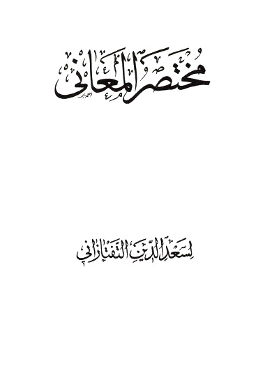
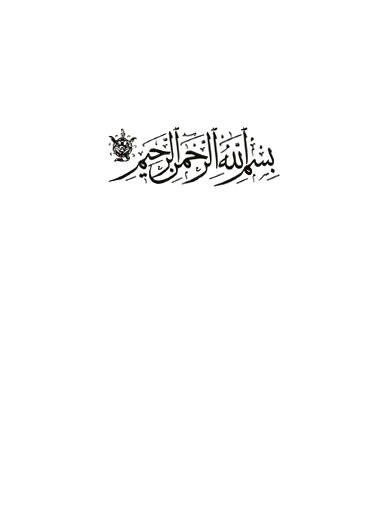

|


بسم الله الرحمن
الرحيم
نحمدك يا من
شرح صدورنا لتلخيص البيان في ايضاح المعانى ، ونور قلوبنا بلوامع التبيان من مطالع
المثاني ، ونصلي على نبيك محمد المؤيد دلائل اعجازه باسرار البلاغة ، وعلى آله
واصحابه المحرزين قصبات السبق في مضمار الفصاحة والبراعة.
(وبعد) فيقول الفقير الى الله الغني ، مسعود بن عمر المدعو
بسعد التفتازاني ، هداه الله سواء الطريق ، واذاقه حلاوة التحقيق ، اني قد شرحت
فيما مضى تلخيص المفتاح ، واغنيته بالاصباح عن المصباح ، واودعته غرائب نكت سمحت
بها الانظار ، ووشحته بلطائف فقر سبكتها يد الافكار ، ثم رأيت الجمع الكثير من
الفضلاء ، والجم الغفير من الاذكياء ، يسألونني صرف الهمة نحو اختصاره ، والاقتصار
على بيان معانيه وكشف استاره ، لما شاهدوا من ان المحصلين قد تقاصرت همهم عن
استطلاع طوالع انواره ، وتقاعدت عزائمهم عن استكشاف خبيئات اسراره ، وان المنتحلين
قد قلّبوا احداق الاخذ والانتهاب ، ومدوا اعناق المسخ على ذلك الكتاب.
وكنت اضرب عن
هذا الخطب صفحا ، واطوى دون مرامهم كشحا ، علما مني بان مستحسن الطبايع باسرها ،
ومقبول الاسماع عن آخرها ، امر لا يسعه مقدرة
البشر ، وانما هو شأن خالق القوى والقدر ، وان هذا الفن قد نضب اليوم ماؤه
فصار جدالا بلا اثر ، وذهب رواؤه فعاد خلافا بلا ثمر ، حتى طارت بقية آثار السلف
ادراج الرياح ، وسالت باعناق مطايا تلك الاحاديث البطاح ، واما الاخذ والانتهاب
فامر يرتاح له اللبيب ، وللارض من كأس الكرام نصيب ، وكيف ينهر عن الانهار
السائلون ، ولمثل هذا فليعمل العاملون.
ثم ما زادتهم
مدافعتي الا شغفا وغراما ، وظمأ في هواجر الطلب واواما ، فانتصبت لشرح الكتاب على
وفق مقترحهم ثانيا ، ولعنان العناية نحو اختصار الاول ثانيا ، مع جمود القريحة بصر
البليات ، وخمود الفطنة بصر صر النكبات ، وترامى البلدان بي والاقطار ، ونبوّ
الاوطان عني والاوطار.
حتى طفقت اجوب
كل اغبر قاتم الارجاء ، واحرر كل سطر منه في شطر من الغبراء ، يوما بالجزوى ويوما
بالعقيق ويوما بالعذيب ويوما بالخليصاء ، ولما وفقت بعون الله تعالى للاتمام ،
وقوضت عنه خيامه بالاختتام ، بعد ما كشفت عن وجوه خرائده اللثام ، ووضعت كنوز
فرائده على طرف الثام ، سعد الزمان وساعد الاقبال ، ودنا المنى واجابت الآمال ،
وتبسم في وجه رجائي المطالب ، بان توجهت تلقاء مدين المآرب حضرة من انام الانام في
ظل الامان ، وافاض عليهم سجال العدل والاحسان ، ورد بسياسته القرار الى الاجفان ،
وسد بهيبته دون يأجوج الفتنة طرق العدوان ، واعاد رميم الفضائل والكمالات منشورا ،
ووقع باقلام الخطّيات على صحائف الصفائح لنصرة الاسلام منشورا.
وهو السلطان
الاعظم ، مالك رقاب الامم ، ملاذ سلاطين العرب والعجم ، ملجأ صناديد ملوك العالم ،
ظل الله على بريته ، وخليفته في خليقته ، حافظ البلاد ، ناصر العباد ، ماحي ظلم
الظلم والعناد ، رافع منار الشريعة النبوية ، ناصب رايات العلوم الدينية ، خافض
جناح الرحمة لاهل الحق واليقين ، مادّ سرادق الامن بالنصر العزيز والفتح المبين
كهف الانام ملاذ الخلائق قاطبة ظل الاله جلال الحق والدين ، ابو المظفر السلطان
محمود جاني بك خان ، خلد الله سرادق عظمته وجلاله ، وادام رواء نعيم
الامال من سجال افضاله ، فحاولت بهذا الكتاب التشبث باذيال الاقبال ،
والاستظلال بظلال الرأفة والافضال ، فجعلته خدمة لسدته التي هي ملتثم شفاه الاقيال
ومعول رجاء الآمال ومثوى العظمة والجلال ، لا زالت محط رجال الافاضل ، وملاذ ارباب
الفضائل ، وعون الاسلام وغوث الانام ، بالنبي وآله عليه وعليهم السلام ، فجاء بحمد
الله كما يروق النواظر ، ويجلو صداء الاذهان ، ويرهق البصائر ، ويضيء لباب ارباب
البيان ، ومن الله التوفيق والهداية ، وعليه التوكل في البداية والنهاية ، وهو
حسبي ونعم الوكيل.
بسم الله الرحمن
الرحيم
الحمد هو
الثناء باللسان على قصد التعظيم سواء تعلق بالنعمة او بغيرها ، والشكر فعل ينبئ عن
تعظيم المنعم لكونه منعما سواء كان باللسان او بالجنان او بالاركان ، فمورد الحمد
لا يكون الا اللسان ومتعلقه يكون النعمة وغيرها ومتعلق الشكر لا يكون الا النعمة
ومورده يكون اللسان وغيره فالحمد اعم من الشكر باعتبار المتعلق واخص منه باعتبار
المورد والشكر بالعكس.
لله هو اسم
للذات الواجب الوجود المستحق لجميع المحامد ، والعدول الى الجملة الاسمية للدلالة
على الدوام والثبات ، وتقديم الحمد باعتبار انه اهم نظر الى كون المقام مقام الحمد
كما ذهب اليه صاحب الكشاف في تقديم الفعل في قوله تعالى (اقْرَأْ بِاسْمِ رَبِّكَ) على ما سيجيء بيانه ، وان كان ذكر الله اهم نظرا الى
ذاته.
(على ما انعم) اى على انعامه ، ولم يتعرض للمنعم به ايهاما لقصور
العبارة عن الاحاطة به ولئلا يتوهم اختصاصه بشيء دون شيء.
وعلّم من عطف
الخاص على العام رعاية لبراعة الاستهلال وتنبيها على فضيلة نعمة البيان (من البيان) بيان لقوله ما لم نعلم قدم رعاية للسجع ، والبيان هو المنطق الفصيح المعرب
عما في الضمير والصلاة على سيدنا محمد خير من نطق بالصواب وافضل من اوتى الحكمة هي
علم الشرائع وكل كلام وافق الحق ، وترك فاعل الايتاء لان هذا الفعل لا يصلح الا
لله تعالى وفصل الخطاب اي الخطاب المفصول البين الذى يتبينه من يخاطب به ولا يلتبس
عليه او الخطاب الفاصل بين الحق والباطل وعلى آله اصله اهل بدليل اهيل ، خص
استعماله في الاشراف واولى الخطر (الاطهار) جمع طاهر كصاحب واصحاب وصحابته الاخيار جمع خيّر
بالتشديد.
(اما بعد) هو من الظروف المبنية المنقطعة عن الاضافة اي بعد الحمد
والصلاة ، والعامل فيه اما لنيابتها عن الفعل ، والاصل مهما يكن من شيء بعد الحمد
والصلاة ، ومهما ههنا مبتدأ والاسمية لازمة للمبتدأ ويكن شرط والفاء لازمة
له غالبا فحين تضمنت اما معنى الابتداء والشرط لزمتها الفاء ولصوق الاسم اقامة
للازم مقام الملزوم وابقاء لاثره في الجملة.
(فلما) هو ظرف بمعنى اذا يستعمل استعمال الشرط ويليه فعل ماض
لفظا او معنى (كان علم البلاغة) هو المعانى والبيان (و) علم (توابعها) هو البديع (من اجل العلوم
قدرا وادقها سرا اذبه) اي بعلم البلاغة وتوابعها لا بغيره من العلوم كاللغة والصرف والنحو (تعرف دقايق العربية واسرارها) فيكون من ادق العلوم سرا.
(ويكشف عن وجوه الاعجاز في نظم القرآن استارها) اى : به يعرف ان القرآن معجز لكونه في اعلى مراتب
البلاغة لاشتماله على الدقائق والاسرار والخواص الخارجة عن طوق البشر وهذا وسيلة
الى تصديق النبي عليه السلام ، وهو وسيلة الى الفوز بجميع السعادات فيكون من اجل
العلوم لكون معلومه وغايته من اجل المعلومات والغايات.
وتشبيه وجوه
الاعجاز بالاشياء المحتجبة تحت الاستار استعارة بالكناية واثبات الاستار لها
استعارة تخييلية وذكر الوجوه ايهام او تشبيه الاعجاز بالصور الحسنة استعارة
بالكناية واثبات الوجوه استعارة تخييلية ، وذكر الاستار ترشيح ونظم القرآن تأليف
كلماته ، مترتبة المعانى ، متناسقة الدلالات على حسب ما يقتضيه العقل لا تواليها
فى النطق وضم بعضها الى بعض كيف ما اتفق.
(وكان القسم الثالث من مفتاح العلوم الذي صنفه الفاضل
العلامة أبو يعقوب يوسف السكاكي اعظم ما صنف فيه) اى فى علم البلاغة وتوابعها (من الكتب المشهورة) بيان لما صنف.
(نفعا) تميز من اعظم (لكونه) اى القسم الثالث (احسنها) اى احسن الكتب المشهورة (ترتيبا) هو وضع كل شيء فى مرتبته (و) لكونه (اتّمها تحريرا) هو تهذيب الكلام (واكثرها) اى اكثر الكتب (للاصول) هو متعلق بمحذوف يفسره قوله (جمعا) لان معمول المصدر لا يتقدم عليه والحق جواز ذلك فى الظروف لانها مما يكفيه
رائحة
من الفعل.
(ولكن كان) اى القسم الثالث (غير مصون) اى غير محفوظ (عن الحشو) وهو الزائد المستغنى عنه (والتطويل) وهو الزيادة على اصل المراد بلا فائدة وستعرف الفرق
بينهما فى باب الاطناب (والتعقيد) وهو كون الكلام مغلقا لا يظهر معناه بسهولة (قابلا) خبر بعد خبر اى كان قابلا (للاختصار) لما فيه من التطويل (مفتقرا) اى محتاجا (الى الايضاح) لما فيه من التعقيد (و) الى (التجريد) عما فيه من الحشو.
(الفت) جواب لما (مختصرا يتضمن
ما فيه) اى فى القسم
الثالث (من القواعد) جمع قاعدة وهى «حكم كلى ينطبق على جميع جزئياته ليعرف
احكامها منه كقولنا كل حكم منكر يجب توكيده.
(ويشتمل على ما يحتاج اليه من الامثلة) وهى الجزئيات المذكورة لايضاح القواعد (والشواهد) وهى الجزئيات المذكورة لاثبات القواعد فهى اخص من الامثلة.
(ولم آل) من الالو وهو التقصير (جهدا) اى اجتهادا وقد استعمل الالو فى قولهم لا آلوك جهدا
متعديا الى مفعولين وحذف ههنا المفعول الاول والمعنى لم امنعك جهدا (فى تحقيقه) اى فى المختصر يعنى فى تحقيق ما ذكر فيه من الابحاث (وتهذيبه) اى تنقيحه.
(ورتبته) أي المختصر (ترتيبا اقرب
تناولا) اى اخذا (من ترتيبه) اى من ترتيب السكاكى او القسم الثالث اضافة للمصدر الى الفاعل او المفعول (ولم ابالغ فى اختصار لفظه تقريبا) مفعول له لما تضمنه معنى لم ابالغ اى تركت المبالغة فى
الاختصار تقريبا (لتعاطيه) اى تناوله (وطلبا لتسهيل
فهمه على طالبيه) والضمائر للمختصر وفى وصف مؤلفه بانه مختصر منقح سهل المأخذ تعريض بانه لا
تطويل فيه ولا حشو ولا تعقيد كما فى القسم الثالث.
(واضفت الى ذلك) المذكور من القواعد وغيرها (فوائد عثرت) اى اطلعت (فى بعض كتب القوم عليها) اى على تلك الفوائد (وزوائد لم
اظفر) اى لم افز (فى
كلام احد بالتصريح بها) اى بتلك الزوائد (ولا الاشارة
اليها) بان يكون
كلامهم على وجه يمكن تحصيلها منه بالتبعية وان لم يقصدوها.
(وسميته تلخيص المفتاح) ليطابق اسمه معناه (وانا اسأل
الله تعالى) قدم المسند اليه قصدا الى جعل الواو للحال (من فضله) حال من (ان ينفع به) اى بهذا المختصر (كما نفع باصله) وهو المفتاح والقسم الثالث منه.
(انه) اى الله (ولي ذلك) النفع (وهو حسبي) اى محسبي وكافى (ونعم الوكيل) اما عطف على جملة هو حسبى والمخصوص محذوف واما على حسبى
اى وهو نعم الوكيل فالمخصوص هو الضمير المتقدم على ما صرح به صاحب المفتاح وغيره
فى نحو زيد نعم الرجل وعلى كلا التقديرين يلزم عطف الانشاء على الاخبار.
(المقدمة)
رتب المختصر
على مقدمة وثلاث فنون ، لان المذكور فيه اما ان يكون من قبيل المقاصد فى هذا الفن
، اولا. الثاني المقدمة والاول ان كان الغرض منه الاحتراز عن الخطاء فى تأدية
المعنى المراد فهو الفن الاول والا فان كان الغرض منه الاحتراز عن التعقيد المعنوى
فهو الفن الثانى والا فهو الفن الثالث.
وجعل الخاتمة
خارجة عن الفن الثالث وهم كما سنبين ان شاء الله تعالى.
ولما انجر
كلامه في آخر هذه المقدمة الى انحصار المقصود في الفنون الثلاثة ناسب ذكرها بطريق
التعريف العهدي بخلاف المقدمة ، فانها لا مقتضى لايرادها بلفظ المعرفة في هذا
المقام والخلاف في ان تنوينها للتعظيم او للتقليل مما لا ينبغي ان يقع بين
المحصلين.
والمقدمة مأخوذة
من مقدمة الجيش للجماعة المتقدمة منها من قدم بمعنى تقدم يقال : مقدمة العلم لما
يتوقف عليه الشروع في مسائله ومقدمة الكتاب لطائفة من كلامه قدمت امام المقصود
لارتباط له بها وانتفاع بها فيه.
وهى هيهنا
لبيان معنى الفصاحة والبلاغة وانحصار علم البلاغة فى علمي المعانى والبيان وما
يلائم ذلك ولا يخفى وجه ارتباط المقاصد بذلك.
والفرق بين
مقدمة العلم ومقدمة الكتاب مما خفى على كثير من الناس.
(الفصاحة)
وهي في الاصل
تنبئ عن الظهور والابانة (يوصف بها المفرد) مثل كلمة فصيحة (والكلام) مثل كلام فصيح وقصيدة فصيحة.
قيل : المراد
بالكلام ما ليس بكلمة ليعم المركب الاسنادي وغيره فانه قد يكون بيت من القصيدة غير
مشتمل على اسناد يصح السكوت عليه مع انه يتصف بالفصاحة.
وفيه نظر لانه
انما يصح ذلك لو اطلقوا على مثل هذا المركب أنه كلام فصيح ولم ينقل عنهم ذلك
واتصافه بالفصاحة يجوز ان يكون باعتبار فصاحة المفردات على ان الحق انه داخل فى
المفرد لانه يقال على ما يقابل المركب وعلى ما يقابل المثنى والمجموع وعلى ما
يقابل الكلام ومقابلته بالكلام ههنا قرينة دالة على انه اريد به المعنى الاخير
اعنى ما ليس بكلام (و) يوصف بها (المتكلم) ايضا يقال كاتب فصيح وشاعر فصيح.
(والبلاغة)
وهي تنبئ عن
الوصول والانتهاء (يوصف بها الاخيران فقط) اى الكلام والمتكلم دون المفرد اذ لم يسمع كلمة بليغة
والتعليل بان البلاغة انما هي باعتبار المطابقة لمقتضى الحال وهي لا تتحقق في
المفرد وهم لان ذلك انما هو في بلاغة الكلام والمتكلم.
وانما قسم كلا
من الفصاحة والبلاغة اولا لتعذر جمع المعاني المختلفة الغير المشتركة في امر يعمها
في تعريف واحد وهذا كما قسم ابن الحاجب المستثنى الى متصل ومنقطع ثم عرف كلا منهما
على حدة.
(فالفصاحة في المفرد) قدم الفصاحة على البلاغة لتوقف معرفة البلاغة على معرفة
الفصاحة لكونها مأخوذة في تعريفها ثم قدم فصاحة المفرد على فصاحة الكلام والمتكلم
لتوقفهما عليها (خلوصه) اى خلوص المفرد (من تنافر
الحروف والغرابة ومخالفة القياس) اللغوى اى المستنبط من استقراء اللغة.
وتفسير الفصاحة
بالخلوص لا يخلو عن تسامح لان الفصاحة تحصل عند
الخلوص.
(فالتنافر) وصف في الكلمة يوجب ثقلها على اللسان وعسر النطق بها (نحو) مستشزرات في قول امرئ القيس (غدائره) اى ذوائبه جمع غديرة والضمير عائد الى الفرع في البيت
السابق (مستشزرات) اى مرتفعات او مرفوعات يقال واستشزر اى ارتفع (الى العلى) تضل العقاص فى مثنى ومرسل تضل : اى تغيب.
العقاص : جمع
عقيصة وهى الخصلة المجموعة من الشعر والمثنى المفتول يعنى ان ذوائبه مشدودة على
الرأس بخيوط وان شعره ينقسم الى عقاص ومثنى ومرسل والاول يغيب في الاخيرين.
والغرض بيان
كثرة الشعر والضابط ههنا ان كل ما يعده الذوق الصحيح ثقيلا متعسر النطق به ، فهو
متنافر سواء كان من قرب المخارج او بعدها او غير ذلك على ما صرح به ابن الاثير فى
المثل السائر.
وزعم بعضهم ،
ان منشأ الثقل في مستشزر هو توسط الشين المعجمة التى هى من المهموسة الرخوة بين
التاء التى هى من المهموسة الشديدة وبين الزاء المعجمة التى هى من المجهورة ولو
قال مستشرف لزال ذلك الثقل.
وفيه نظر ، لان
الراء المهملة ايضا من المجهورة.
وقيل : ان قرب
المخارج سبب للثقل المخل بالفصاحة ، وان في قوله تعالى (أَلَمْ أَعْهَدْ إِلَيْكُمْ) ثقلا قريبا من المتناهي فيخل بفصاحة الكلمة ، لكن
الكلام الطويل المشتمل على كلمة غير فصيحة لا يخرج عن الفصاحة ، كما لا يخرج
الكلام الطويل المشتمل على كلمة غير عربية عن ان يكون عربيا ؛ وفيه نظر ، لان
فصاحة الكلمات مأخوذة في تعريف فصاحة الكلام من غير تفرقة بين طويل وقصير ، على ان
هذا القائل فسر الكلام بما ليس بكلمة ، والقياس على الكلام العربي ظاهر الفساد ولم
سلّم عدم خروج السورة عن الفصاحة ، فمجرد اشتمال القرآن على كلام غير فصيح بل على
كلمة غير فصيحة مما يقود الى نسبة الجهل او العجز الى الله تعالى عن ذلك علوا
كبيرا.
(والغرابة) كون الكلمة وحشية غير ظاهرة المعنى ولا مأنوسة
الاستعمال (نحو) مسرج فى قول العجاج ومقلة وحاجبا مزجّجا اي مدققا مطولا
(وفاحما) اى شعرا اسود كالفحم (ومرسنا) اى انفا (مسرجا اى
كالسيف السريجى فى الدقة والاستواء) وسريج اسم قين تنسب اليه السيوف (او كالسراج في البريق) واللمعان.
فان قلت : لم
لم يجعلوه اسم مفعول من سرج الله وجهه اى بهجّه وحسنّه.
قلت : هو ايضا
من هذا القبيل او مأخوذ من السراج على ما صرح به الامام المرزوقي رحمه الله تعالى
حيث قال السريجى منسوب الى السراج ، ويجوز ان يكون وصفه بذلك لكثرة مائه ورونقه ،
حتى كان فيه سراجا.
ومنه ما قيل :
سرج الله امرك اى حسنه ونوره.
(والمخالفة) ان تكون الكلمة على خلاف قانون مفردات الالفاظ الموضوعة
، اعنى على خلاف ما ثبت عن الواضع (نحو) الاجلل بفك الادغام في قوله (الحمد لله العلي الاجلل) والقياس الاجلّ بالادغام ، فنحو آل وماء وابى يأبى وعور
يعور فصيح لانه ثبت عن الواضع كذلك.
(قيل) : فصاحة المفرد خلوصه مما ذكر (ومن الكراهة في السمع) بان يكون اللفظة بحيث يمجها السمع ويتبرأ عن سماعها (نحو) الجرشي في قول ابي الطيب مبارك الاسم اغر اللقب (كريم الجرشي) اى النفس (شريف النسب) والاغر من الخيل الابيض الجبهة ثم استعير لكل واضح
معروف.
(وفيه نظر) لان الكراهة في السمع انما هي من جهة الغرابة المفسرة
بالوحشية ، مثل تكأكأتم وافرنقعوا ونحو ذلك.
وقيل : لان
الكراهة في السمع وعدمها يرجعان الى طيب النغم وعدم الطيب لا الى نفس اللفظ.
وفيه نظر للقطع
باستكراه الجرشي دون النفس مع قطع النظر عن النغم.
(و) الفصاحة (في الكلام
خلوصه من ضعف التأليف وتنافر الكلمات والتعقيد مع فصاحتها) هو حال من الضمير في خلوصه واحترز به عن مثل زيدا
جلل وشعره مستشزر وانفه مسرّج.
وقيل : هو حال
من الكلمات ولو ذكره بجنبها لسلم من الفصل بين الحال وذيها بالاجنبي.
وفيه نظر لانه
حينئذ يكون قيدا للتنافر لا للخلوص ويلزم ان يكون الكلام المشتمل على تنافر
الكلمات الغير الفصيحة فصيحا ، لانه يصدق عليه انه خالص عن تنافر الكلمات حال
كونها فصيحة فافهم.
(فالضعف) ان يكون تأليف الكلام على خلاف القانون النحوي المشهور
بين الجمهور كالاضمار قبل الذكر لفظا ومعنى وحكما (نحو ضرب غلامه
زيدا).
(والتنافر) ان تكون الكلمات ثقيلة على اللسان وان كان كل منها
فصيحة (كقوله وليس قرب قبر حرب) وهو اسم رجل (قبر) وصدر البيت «وقبر حرب بمكان قفر» اي خال عن الماء
والكلاء ، ذكر في عجائب المخلوقات ان من الجن نوعا يقال له الهاتف فصاح واحد منهم
على حرب بن امية فمات فقال ذلك الجنى هذا البيت (وكقوله «كريم
متى امدحه امدحه والورى معى ، واذا ما لمته لمته وحدي») والواو فى الورى للحال ، وهو مبتدأ وخبره قوله معي.
وانما مثل
بمثالين لان الاول متناه فى الثقل والثانى دونه ، او لان منشأ الثقل فى الاول نفس
اجتماع الكلمات وفى الثانى حروف منها ، وهو فى تكرير امدحه ، دون مجرد الجمع بين
الحاء والهاء ، لوقوعه فى التنزيل ، مثل فسبحه ، فلا يصح القول بان مثل هذا الثقل
مخل بالفصاحة.
وذكر الصاحب
اسماعيل بن عباد انه انشد هذه القصيدة بحضرة الاستاذ ابن العميد ، فلما بلغ هذا
البيت قال له الاستاذ هل تعرف فيه شيئا من الهجنة؟ قال : نعم مقابلة المدح باللوم
، وانما يقابل بالذم او الهجاء ، فقال : الاستاذ غير هذا اريد ، فقال : لا ادري
غير ذلك.
فقال الاستاذ :
هذا التكرير في امدحه امدحه مع الجمع بين الحاء والهاء ، وهما من حروف الحلق خارج
عن حد الاعتدال نافر كل التنافر فاثنى عليه
الصاحب.
(والتعقيد) اى كون الكلام معقّدا (ان لا يكون
الكلام ظاهر الدلالة على المراد لخلل) واقع (اما فى النظم) بسبب تقديم او تأخير او حذف او غير ذلك ، مما يوجب
صعوبة فهم المراد (كقول الفرزدق فى خال هشام) بن عبد الملك ، وهو ابن ابراهيم بن هشام بن اسمعيل
المخزومى
|
(وما مثله في الناس الا مملكا
|
|
ابو امه حىّ
ابوه يقاربه)
|
اى ليس مثله فى
الناس (حي يقاربه) اى احد يشبهه في الفضائل (الا مملك) اى رجل اعطى الملك والمال يعنى هشاما (ابو امه) اى ابو ام ذلك الملك (ابوه) اى ابو ابراهيم الممدوح اى لا يماثله احد الا ابن اخته
وهو هشام.
ففيه فصل بين
المبتدأ والخبر اعنى ابو امه ابوه بالاجنبي الذى هو حى ، وبين الموصوف والصفة ،
اعنى حى يقاربه بالاجنبى الذى هو ابوه ، وتقديم المستثنى اعنى مملكا على المستثنى
منه اعنى حى وفصل كثير بين البدل وهو حى والمبدل منه وهو مثله ، فقوله مثله اسم ما
وفى الناس خبره والا مملكا منصوب لتقدمه على المستثنى منه.
قيل ذكر ضعف
التأليف يغنى عن ذكر التعقيد اللفظى.
وفيه نظر ،
لجواز ان يحصل التعقيد باجتماع عدة امور موجبة لصعوبة فهم المراد ، وان كان كل
واحد منها جاريا على قانون النحوى.
وبهذا يظهر
فساد ما قيل : انه لا حاجة فى بيان التعقيد فى البيت الى ذكر تقديم المستثنى على
المستثنى منه ، بل لا وجه له ، لان ذلك جائز باتفاق النحاة ، اذ لا يخفى انه يوجب
زيادة التعقيد وهو مما يقبل الشدة والضعف.
(واما فى الانتقال) عطف على قوله : (اما في النظم) اى لا يكون الكلام ظاهرة الدلالة على المراد ، لخلل
واقع في انتقال الذهن من المعنى الاول المفهوم بحسب اللغة الى الثانى المقصود ،
وذلك بسبب ايراد اللوازم البعيدة المفتقرة الى الوسائط الكثيرة مع خفاء القرائن
الدالة على المقصود (كقول الاخر) وهو عباس بن الاحنف ولم يقل
كقوله لئلا يتوهم عود الضمير الى الفرزدق.
(سأطلب بعد الدار عنكم لتقربوا وتسكب) بالرفع ، وهو الصحيح وبالنصب وهم (عيناى الدموع لتجمدا) جعل سكب الدموع كناية عما يلزمه فراق الاحبة من الكئابة
والحزن واصاب ، لكنه اخطأ فى جعل جمود العين كناية عما يوجبه دوام التلاقى من
الفرح والسرور (فان الانتقال من جمود العين الى بخلها بالدموع) حال ارادة البكاء ، وهى حالة الحزن (لا الى ما قصده من السرور) الحاصل بالملاقاة.
ومعنى البيت :
انى اليوم اطيب نفسا بالبعد والفراق واوطنها على مقاساة الاحزان والاشواق ، واتجرع
غصصها واتحمل لاجلها حزنا يفيض الدموع من عينى لأتسبب بذلك الى وصل يدوم ومسرة لا
تزول ، فان الصبر مفتاح الفرج ولكل بداية نهاية ، ومع كل عسر يسرا والى هذا اشار
الشيخ عبد القاهر في دلائل الاعجاز.
وللقوم ههنا
كلام فاسد اوردناه فى الشرح.
(قيل) : فصاحة الكلام خلوصه مما ذكر (ومن كثرة التكرار وتتابع الاضافاة كقوله) وتسعدنى في غمرة بعد غمرة (سبوح) : اى فرس حسن الجرى لا تتعب راكبها كأنها تجرى في الماء
(لها) صفة سبوح.
(منها) حال من شواهد (عليها) متعلق بشواهد (شواهد) فاعل الظرف اعنى لها يعنى ان لها من نفسها علامات دالة
على نجابتها.
قيل التكرار
ذكر الشيء مرة بعد اخرى ولا يخفى انه لا يحصل كثرة بذكره ثالثا.
وفيه نظر ، لان
المراد بالكثرة ههنا ما يقابل الوحدة ولا يخفى حصوله بذكره ثالثا.
(و) تتابع الاضافات مثل (قوله «حمامة
جرعى حومة الجندل اسجعى) ، فانت بمرأى من سعاد ومسمع».
ففيه اضافة
حمامة الى جرعى وجرعى الى حومة وحومة الى الجندل.
والجرعى تأنيث
الاجرع قصرها للضرورة ، وهي : ارض ذات رمل لا تنبت شيئا ، والحومة معظم الشىء ،
والجندل ارض ذات حجارة ، والسجع هدير الحمامة ونحوه.
وقوله : فانت
بمرأى اى بحيث تراك سعاد وتسمع صوتك. يقال : «فلان بمرأى منى ومسمع اى بحيث اراه
واسمع قوله» كذا في الصحاح.
فظهر فساد ما
قيل ان معناه انت بموضع ترين منه سعاد وتسمعين كلامها وفساد ذلك مما يشهد به العقل
والنقل.
(وفيه نظر) لان كلا من كثرة التكرار وتتابع الاضافات ان ثقل اللفظ
بسببه على اللسان فقد حصل الاحتراز عنه بالتنافر والا فلا يخل بالفصاحة ، كيف وقع
في التنزيل مثل دأب قوم نوح ، كذلك ذكر رحمة ربك عبده زكريا ، ونفس وما سواها ،
فالهمها فجورها وتقواها.
(و) الفصاحة (في المتكلم
ملكة) وهي كيفية
راسخة في النفس والكيفية عرض لا يتوقف تعلقه على تعقل الغير ، ولا يقتضى القسمة
واللاقسمة في محله اقتضاء اوليا.
فخرج بالقيد
الاول الاعراض النسبية مثل الاضافة او الفعل والانفعال ونحو ذلك ، وبقولنا ، لا
يقتضى القسمة الكميات ، وبقولنا واللاقسمة النقطة والوحدة ، وقولنا اوليا ليدخل
فيه مثل العلم بالمعلومات المقتضية للقسمة واللاقسمة.
فقوله : ملكة
اشعار بانه لو عبر عن المقصود بلفظ فصيح لا يسمى فصيحا في الاصطلاح ما لم يكن ذلك
راسخا فيه.
وقوله : (يقتدر بها على التعبير عن المقصود) دون ان يقول يعبر ، اشعار بانه يسمى فصيحا اذا وجد فيه
تلك الملكة ، سواء وجد التعبير او لم يوجد.
وقوله : (بلفظ فصيح) ليعم المفرد والمركب ، اما المركب فظاهر. واما المفرد فكما تقول عند
التعداد دار غلام جارية ثوب بساط الى غير ذلك.
(والبلاغة في الكلام مطابقته لمقتضى الحال مع فصاحته) : اى فصاحة الكلام ، والحال هو الامر الداعي للمتكلم
الى ان يعتبر مع الكلام الذى يؤدى به اصل
المراد خصوصية ما ، وهو مقتضى الحال ، مثلا كون المخاطب منكرا للحكم حال
يقتضى تأكيد الحكم ، والتأكيد مقتضى الحال ، وقولك له ان زيدا في الدار مؤكدا بان
كلام مطابق لمقتضى الحال.
وتحقيق ذلك انه
جزئي من جزئيات ذلك الكلام ، الذى يقتضيه الحال ، فان الانكار مثلا يقتضى كلاما
مؤكدا ، وهذا مطابق له ، بمعنى انه صادق عليه على عكس ما يقال : ان الكلي مطابق
للجزئيات.
وان اردت تحقيق
هذا الكلام فارجع الى ما ذكرناه في الشرح في تعريف علم المعاني (وهو) : اى مقتضى الحال (مختلف فان مقامات الكلام متفاوتة) لان الاعتبار اللائق بهذا المقام يغاير الاعتبار اللائق
بذاك ، وهذا عين تفاوت مقتضيات الاحوال ، لان التغاير بين الحال والمقام انما هو
بحسب الاعتبار ، وهو انه يتوهم في الحال ، كونه زمانا لورود الكلام فيه وفي المقام
كونه محلا له.
وفي هذا الكلام
اشارة اجمالية الى ضبط مقتضيات الاحوال وتحقيق لمقتضى الحال.
(فمقام كل من التنكير والاطلاق والتقديم والذكر يباين
مقام خلافه) : اى مقام خلاف كل منها يعنى ان المقام الذي يناسبه تنكير المسند اليه او
المسند ، يباين المقام الذى يناسبه التعريف ، ومقام اطلاق الحكم او التعليق او
المسند اليه او المسند او متعلقه يباين مقام تقييده بمؤكد ، او اداة قصر او تابع
او شرط او مفعول او ما يشبه ذلك ، ومقام تقديم المسند اليه او المسند او متعلقاته
، يباين مقام تاخيره ، وكذا مقام ذكره يباين مقام حذفه ، فقوله خلافه شامل لما
ذكرناه.
وانما فصل قوله
(ومقام الفصل يباين مقام الوصل) تنبيها على عظم شان هذا الباب ، وانما لم يقل مقام
خلافه لانه احضر واظهر ، لان خلاف الفصل انما هو الوصل ، وللتنبيه على عظم شان
الفصل قوله (ومقام الايجاز يباين مقام خلافه) اى الاطناب والمساواة (وكذا خطاب
الذكى مع خطاب الغبى) فان مقام الاول يباين مقام الثاني فان الذكى يناسبه من الاعتبارات اللطيفة
والمعاني الدقيقة الخفية ما لا
يناسب الغبى.
(ولكل كلمة مع صاحبتها) اى مع كل كلمة اخرى مصاحبة لها (مقام) ليس لتلك الكلمة مع ما يشارك تلك المصاحبة في اصل المعنى ، مثلا الفعل
الذى قصد اقترانه بالشرط ، فله مع ان مقام ليس له مع اذا وكذا الكل من ادوات الشرط
مع الماضى مقام ليس له مع المضارع وعلى هذا القياس (وارتفاع شأن
الكلام في الحسن والقبول بمطابقته للاعتبار المناسب وانحطاطه) اى انحطاط شانه (بعدمها) اى بعدم مطابقته للاعتبار المناسب.
(والمراد بالاعتبار المناسب الامر الذى اعتبره المتكلم
مناسبا بحسب السليقة او بحسب تتبع تراكيب البلغاء ، يقال اعتبرت الشيء ، اذا نظرت
اليه وراعيت حاله) واراد بالكلام ، الكلام الفصيح وبالحسن ، الحسن الذاتي الداخل في البلاغة
دون العرضى الخارج لحصوله بالمحسنات البديعية (فمقتضى الحال
هو الاعتبار المناسب) للحال والمقام ، يعنى اذا علم ان ليس ارتفاع شأن الكلام الفصيح في الحسن
الذاتي الا بمطابقته للاعتبار المناسب على ما يفيده اضافة المصدر.
ومعلوم انه
انما يرتفع بالبلاغة التى هى عبارة عن مطابقة الكلام الفصيح لمقتضى الحال ، فقد
علم ان المراد بالاعتبار المناسب ومقتضى الحال واحد ، والا لما صدق انه لا يرتفع
الا بالمطابقة للاعتبار المناسب ، ولا يرتفع الا بالمطابقة لمقتضى الحال فليتأمل.
(فالبلاغة) صفة (راجعة الى اللفظ) يعنى انه يقال : كلام بليغ لكن لا من حيث انه لفظ وصوت
، بل (باعتبار افادته المعنى) اى الغرض المصوغ له الكلام (بالتركيب) متعلق بافادته ، وذلك لان البلاغة كما مرّ عبارة عن مطابقة الكلام الفصيح
لمقتضى الحال ، فظاهر ان اعتبار المطابقة وعدمها انما يكون باعتبار المعاني
والاغراض التى يصاغ لها الكلام ، لا باعتبار الالفاظ المفردة والكلم المجردة.
(وكثيرا ما) نصب على الظرف لانه من صفة الاحيان وما لتأكيد معنى
الكثرة والعامل فيه.
قوله : (يسمى ذلك) الوصف المذكور (فصاحة ايضا) كما يسمى بلاغة ، فحيث يقال : أن اعجاز القرآن من جهة
كونه في اعلى طبقات الفصاحة يراد بها هذا المعنى. (ولها) اى لبلاغة الكلام (طرفان : اعلى
وهو حد الاعجاز) وهو ان يرتقى الكلام في بلاغته الى ان يخرج عن طوق البشر ، ويعجزهم عن
معارضته.
(وما يقرب منه) عطف على قوله وهو والضمير في منه عائد الى اعلى ، يعنى
ان الاعلى مع ما يقرب منه كلاهما من حد الاعجاز ، هذا هو الموافق لما في المفتاح.
وزعم بعضهم انه
عطف على حد الاعجاز والضمير في منه عائد اليه ، يعنى ان الطرف الاعلى هو حد
الاعجاز ، وما يقرب من حد الاعجاز.
وفيه نظر لان
القريب من حد الاعجاز لا يكون من الطرف الاعلى الذى هو حد الاعجاز وقد اوضحنا ذلك
في الشرح.
(واسفل وهو ما اذا غير) الكلام (عنه الى ما
دونه) اى الى مرتبة
اخرى هي ادنى منه وانزل (التحق) الكلام وان كان صحيح الاعراب (عند البلغاء باصوات الحيوانات) تصدر عن محالها بحسب ما يتفق ، من غير اعتبارات اللطائف
والخواص الزائدة على اصل المراد (وبينهما) اى بين الطرفين (مراتب كثيرة) متفاوتة بعضها اعلى من بعض بحسب تفاوت المقامات ورعاية
الاعتبارات ، والبعد من اسباب الاخلال بالفصاحة (وتتبعها) اى بلاغة الكلام (وجوه اخر) سوى المطابقة.
والفصاحة (تورث الكلام حسنا) وفي قوله (تتبعها) اشارة الى ان تحسين هذه الوجوه للكلام عرضى خارج عن حد
البلاغة ، والى ان هذه الوجوه انما تعد محسنة بعد رعاية المطابقة ، والفصاحة
وجعلها تابعة للبلاغة الكلام دون المتكلم لانها ليست مما تجعل المتكلم متصفا بصفة.
(و) البلاغة (في المتكلم
ملكة يقتدر بها على تأليف كلام بليغ فعلم) مما تقدم (ان كل بليغ) كلا ما كان او متكلما على سبيل استعمال المشترك في
معنييه ، او على تأويل كل ما يطلق عليه لفظ البليغ (فصيح) لان الفصاحة مأخوذة في تعريف
البلاغة مطلقا (ولا عكس) بالمعنى اللغوى : اى ليس كل فصيح بليغا ، لجواز أن يكون
كلام فصيح غير مطابق لمقتضى الحال ، وكذا يجوز ان يكون لاحد ملكة يقتدر بها
التعبير عن المقصود بلفظ فصيح من غير مطابقة لمقتضى الحال.
(و) علم ايضا (ان البلاغة) في الكلام (مرجعها) اى ما يجب ان يحصل حتى يمكن حصولها ، كما يقال مرجع
الجود الى الغنى (الى الاحتراز عن الخطأ في تأدية المعنى المراد) والا لربما ادى المعنى المراد بلفظ فصيح ، غير مطابق
لمقتضى الحال فلا يكون بليغا (والى تمييز) الكلام (الفصيح من
غيره) والا لربما
اورد الكلام المطابق لمقتضى الحال بلفظ غير فصيح ، فلا يكون ايضا بليغا لوجوب وجود
الفصاحة في البلاغة ، ويدخل في تمييز الكلام الفصيح من غيره تمييز الكلمات الفصيحة
من غيرها لتوقفه عليها.
(والثاني) اى تمييز الفصيح من غيره (منه) اى بعضه (ما يبين) اى يوضح (في علم متن
اللغة) كالغرابة.
وانما قال في
علم متن اللغة اى معرفة اوضاع المفردات لان اللغة اعم من ذلك لانه يطلق على سائر
اقسام العربية ، يعنى به يعرف تمييز السالم من الغرابة عن تمييز غيره ، بمعنى ان
من تتبع الكتب المتداولة واحاط بمعانى المفردات المأنوسة علم ان ما عداها مما
يفتقر الى تنقير او تخريج ، فهو غير سالم من الغرابة.
وبهذا تبين
فساد ما قيل انه ليس في علم متن اللغة ان بعض الالفاظ مما يحتاج في معرفته الى ان
يبحث عنه في الكتب المبسوطة في اللغة (او) في علم (التصريف) كمخالفة القياس اذ به يعرف ان الاجلل مخالف (للقياس) دون الاجل (او في علم النحو) كضعف التأليف والتعقيد اللفظى (او يدرك بالحس) كالتنافر ، اذ به يعرف ان مستشزرا متنافر دون مرتفع.
وكذا تنافر
الكلمات (وهو) اى ما يبين في العلوم المذكورة او ما يدرك بالحس ،
فالضمير عائد الى ما ، ومن زعم انه عائد الى ما يدرك بالحس فقدسها سهوا ظاهرا.
(ما عد التعقيد المعنوى) اذ لا يعرف بتلك العلوم ولا بالحس تمييز السالم من
التعقيد المعنوى من غيره فعلم ان مرجع البلاغة بعضه مبين في العلوم
المذكورة وبعضها مدرك بالحس وبقى الاحتراز عن الخطأ في تأدية المعنى المراد
والاحتراز عن التعقيد المعنوى.
فمست الحاجة
الى وضع علمين مفيدين لذلك ، فوضعوا علم المعاني للاول وعلم البيان للثاني.
واليه اشار
بقوله (وما يحترز به عن الاول) اى الخطاء في تأدية المعنى المراد (علم المعانى وما يحترز به عن التعقيد المعنوى علم البيان).
وسموا هذين
العلمين علم البلاغة لمكان مزيد اختصاص لهما بالبلاغة ، وإن كان البلاغة تتوقف على
غيرهما من العلوم.
ثم احتاجوا
لمعرفة توابع البلاغة الى علم آخر ، فوضعوا لذلك علم البديع واليه اشار بقوله (وما يعرف به وجوه التحسين علم البديع).
ولما كان هذا
المختصر في علم البلاغة وتوابعها انحصر مقصوده في ثلاثة فنون (وكثير) من الناس (يسمى الجميع علم البيان وبعضهم يسمى الاول علم المعانى
و) يسمى (الاخيرين) يعنى البيان والبديع (علم البيان والثلاثة علم البديع) ولا يخفى وجوه المناسبة والله اعلم.
(الفن الاول علم
المعانى)
قدمه على
البيان ، لكونه منه بمنزلة المفرد من المركب ، لان رعاية المطابقة لمقتضى الحال
وهو مرجع علم المعانى ، معتبرة في علم البيان ، مع زيادة شىء آخر وهو ايراد المعنى
الواحد في طرق مختلفة.
(وهو علم) اى ملكة يقتدر بها على ادراكات جزئية ، ويجوز أن يريد
به نفس الاصول والقواعد المعلومة ، ولاستعمالهم المعرفة في الجزئيات.
قال (تعرف به احوال اللفظ العربى) اى هو علم يستنبط منه ادراكات جزئية ، وهى معرفة كل فرد
فرد من جزئيات الاحوال المذكورة ، بمعنى ان اىّ فرد يوجد منها امكننا ان نعرفه
بذلك العلم.
وقوله (التى بها يطابق) اللفظ (مقتضى الحال) احتراز عن الاحوال التي ليست بهذه الصفة ، مثل الاعلال
والادغام والرفع والنصب وما اشبه ذلك مما لا بد منه في تأدية اصل المعنى ، وكذا
المحسنات البديعية من التنجيس والترصيع ونحوهما مما يكون بعد رعاية المطابقة.
والمراد انه
علم يعرف به هذه الاحوال من حيث انها يطابق بها اللفظ مقتضى الحال ، لظهور ان ليس
علم المعانى عبارة عن تصور معانى التعريف والتنكير والتقديم والتأخير والاثبات
والحذف وغير ذلك.
وبهذا يخرج عن
التعريف علم البيان ، اذ ليس البحث فيه عن احوال اللفظ من هذه الحيثية ، والمراد
باحوال اللفظ : الامور العارضة له من التقديم والتأخير والاثبات والحذف وغير ذلك.
ومقتضى الحال
في التحقيق هو الكلام الكلى المتكيف بكيفية مخصوصة على ما اشار اليه في المفتاح ،
وصرح به في شرحه لا نفس الكيفيات من التقديم والتأخير
والتعريف والتنكير على ما هو ظاهر عبارة المفتاح وغيره ، والا لما صح القول
بانها احوال بها يطابق اللفظ مقتضى الحال ، لانها عين مقتضى الحال ، قد حققنا ذلك
في الشرح.
واحوال الاسناد
ايضا من احوال اللفظ ، باعتبار أن التأكيد وتركه مثلا من الاعتبارات الراجعة الى
نفس الجملة ، وتخصيص اللفظ بالعربى مجرد اصطلاح ، لان الصناعة انما وضعت لذلك.
(وينحصر) المقصود من علم المعانى (في ثمانية
ابواب) : انحصار الكل
في الاجزاء لا الكلى في الجزئيات ، والا لصدق علم المعانى على كل باب من الابواب
المذكورة ، وليس كذلك (احوال الاسناد الخبرى) و (احوال المسند اليه) و (احوال المسند) و (احوال متعلقات الفعل) و (القصر) و (الانشاء) و (الفصل) و (الوصل) و (الايجاز) و (الاطناب) و (المساواة).
وانما انحصر
فيها؟ (لان الكلام اما اخبار او انشاء لانه) لا محالة يشتمل على نسبة تامة بين الطرفين ، قائمة بنفس
المتكلم وهى تعلق احد الشيئين بالاخر ، بحيث يصح السكوت عليه سواء كان ايجابا او
سلبا او غيرهما كما في الانشائيات وتفسيرها بايقاع المحكوم به على المحكوم عليه او
سلبه عنه خطأ في هذا المقام ، لانه لا يشمل النسبة في الكلام الانشائي فلا يصح
التقسيم.
فالكلام (ان كان لنسبته خارج) في احد الازمنة الثلاثة : اى يكون بين الطرفين في
الخارج نسبة ثبوتية او سلبية (تطابقه) اى تطابق تلك النسبة ذلك الخارج ، بان يكونا ثبوتيتين
او سلبيتين (او لا تطابقه) بان تكون النسبة المفهومة من الكلام ثبوتية ، والتى
بينهما في الخارج والواقع سلبية او بالعكس.
(فخبر) اى فالكلام خبر (والا) اى وان لم يكن لنسبته خارج كذلك (فانشاء).
وتحقيق ذلك ان
الكلام اما ان يكون له نسبة بحيث تحصل من اللفظ ويكون اللفظ موجدا لها من غير قصد
الى كونه دالا على نسبة حاصلة فى الواقع بين الشيئين
وهو الانشاء او تكون له نسبة بحيث يقصدان لها نسبة خارجية مطابقة اولا
مطابقة ، وهو الخبر ، لان النسبة المفهومة من الكلام الحاصلة فى الذهن لابد وان
تكون بين الشيئين ، ومع قطع النظر عن الذهن لا بد وان يكون بين هذين الشيئين في
الواقع نسبة ثبوتية ، بان يكون هذا ذاك ، او سلبية بان لا يكون هذا ذاك.
الا ترى انك
اذا قلت زيد قائم ، فان القيام حاصل لزيد قطعا ، سواء قلنا ان النسبة من الامور
الخارجية او ليست منها ، وهذا معنى وجود النسبة الخارجية.
(والخبر لا بد له من مسند اليه ومسند واسناد ، والمسند
قد يكون له متعلقات اذا كان فعلا او ما في معناه) كالمصدر واسم الفاعل واسم المفعول وما اشبه ذلك ، ولا
وجه لتخصيص هذا الكلام بالخبر.
(وكل من الاسناد والتعليق اما بقصر او بغير قصر وكل جملة
قرنت باخرى ، اما معطوفة عليها او غير معطوفة ، والكلام البليغ اما زائد على اصل
المراد لفائدة) احترز به عن التطويل ، على انه لا حاجة اليه بعد تقييد الكلام بالبليغ (او غير زائد).
هذا كله ظاهر
لكن لا طائل تحته ، لان جميع ما ذكر من القصر والفصل والوصل والايجاز ومقابليه ،
انما هو من احوال الجملة او المسند اليه والمسند ، مثل التأكيد والتقديم والتأخير
وغير ذلك ، فالواجب في هذا المقام بيان سبب افرادها وجعلها ابوابا برأسها وقد
لخصنا ذلك في الشرح.
صدق الخبر وكذبه
(تنبيه)
على تفسير
الصدق والكذب الذى قد سبق اشارة ما اليه في قوله تطابقه او لا تطابقه.
اختلف القائلون
بانحصار الخبر في الصدق والكذب في تفسيرها.
فقيل : (صدق الخبر مطابقته) اى مطابقة حكمه (للواقع) وهو الخارج الذى يكون لنسبة الكلام الخبرى (وكذبه) اى كذب الخبر (عدمها) اى عدم مطابقته للواقع ، يعنى ان الشيئين اللذين اوقع
بينهما نسبة في الخبر ، لا بد وان يكون بينهما نسبة في الواقع ، اى مع قطع النظر
عما في الذهن وعما يدل عليه الكلام فمطابقة تلك النسبة المفهومة من الكلام للنسبة
التى في الخارج ، بان يكونا ثبوتيتين او سلبيتين صدق وعدمها ، بان يكون احديهما
ثبوتية والاخرى سلبية كذب.
(وقيل) صدق الخبر (مطابقته
لاعتقاد المخبر ولو كان) ذلك الاعتقاد (خطاء) غير مطابق للواقع (و) كذب الخبر (عدمها) اى عدم مطابقته لاعتقاد المخبر ولو كان خطاء ، فقول
القائل السماء تحتنا معتقدا ذلك صدق ، وقوله السماء فوقنا غير معتقد كذب ، والمراد
بالاعتقاد الحكم الذهني الجازم او الراجح ، فيعم العلم والظن.
وهذا يشكل بخبر
الشاك لعدم الاعتقاد فيه فيلزم الواسطة ولا يتحقق الانحصار.
اللهم الا ان
يقال انه كاذب لانه اذا انتفى الاعتقاد صدق عدم مطابقة الاعتقاد والكلام في ان
المشكوك خبر او ليس بخبر مذكور في الشرح فليطالع ثمة (بدليل) قوله تعالى (إِذا جاءَكَ
الْمُنافِقُونَ قالُوا نَشْهَدُ إِنَّكَ لَرَسُولُ اللهِ ... وَاللهُ يَشْهَدُ (إِنَّ
الْمُنافِقِينَ لَكاذِبُونَ) فانه تعالى جعلهم كاذبين في قولهم انك لرسول الله لعدم
مطابقته لاعتقادهم وان كان مطابقا للواقع.
(ورد) هذا الاستدلال (بان المعنى
لكاذبون في الشهادة) وفي ادعائهم المواطأة ، فالتكذيب راجع الى الشهادة باعتبار تضمنها خبرا
كاذبا غير مطابق للواقع ، وهو ان هذه الشهادة من صميم القلب وخلوص الاعتقاد بشهادة
انّ واللام والجملة الاسمية (او) المعنى انهم لكاذبون (في تسميتها) اى في تسمية هذا الاخبار شهادة لان الشهادة ما يكون على
وفق الاعتقاد فقوله تسميتها مصدر مضاف الى المفعول الثاني والاول محذوف (او) المعنى انهم لكاذبون (في المشهود به) اعنى قولهم انك لرسول الله لكن لا في الواقع بل (في زعمهم) الفاسد واعتقادهم الباطل لانهم يعتقدون انه غير مطابق للواقع فيكون كاذبا
باعتقادهم وان كان صادقا في نفس الامر فكأنه قيل انهم يزعمون انهم كاذبون في هذا
الخبر الصادق وحينئذ لا يكون الكذب الا بمعنى عدم المطابقة للواقع فليتأمل.
لئلا يتوهم ان
هذا اعتراف بكون الصدق والكذب راجعين الى الاعتقاد.
(والجاحظ) انكر انحصار الخبر في الصدق والكذب واثبت الواسطة وزعم
ان صدق الخبر (مطابقته) للواقع (مع الاعتقاد) بانه مطابق (و) كذب الخبر (عدمها) اى عدم مطابقته للواقع (معه) أى مع اعتقاد انه غير مطابق (وغيرهما) اى غير هذين القسمين.
وهو اربعة اعنى
المطابقة مع اعتقاد عدم المطابقة ، او بدون الاعتقاد اصلا ، او عدم المطابقة مع
اعتقاد المطابقة ، او بدون الاعتقاد اصلا (ليس بصدق ولا
كذب) فكل من الصدق
والكذب بتفسيره اخص منه بالتفسيرين السابقين لانه اعتبر في الصدق مطابقة الواقع
والاعتقاد جميعا وفي الكذب عدم مطابقتهما جميعا بناء على ان اعتقاد المطابقة
يستلزم مطابقة الاعتقاد.
ضرورة توافق
الواقع والاعتقاد حينئذ وكذا اعتقاد عدم المطابقة يستلزم عدم مطابقة الاعتقاد
حينئذ.
وقد اقتصر في
التفسيرين السابقين على احدهما (بدليل افترى على الله كذبا ام به جنة) لان الكفار حصروا اخبار النبي عليه السلام بالحشر
والنشر على ما يدل
عليه قوله تعالى (إِذا مُزِّقْتُمْ كُلَّ
مُمَزَّقٍ إِنَّكُمْ لَفِي خَلْقٍ جَدِيدٍ) في الافتراء والاخبار حال الجنة على سبيل منع الخلو.
ولا شك (ان المراد بالثاني) اى الاخبار حال الجنة لا قوله ام به جنة على ما سبق الى
بعض الاوهام (غير الكذب لانه قسيمه) اى لان الثاني قسيم الكذب اذ المعنى الكذب ام اخبر حال
الجنة وقسيم الشيء يجب ان يكون غيره (وغير الصدق
لانهم لم يعتقدوه) اى لان الكفار لم يعتقدوا صدقه فلا يريدون في هذا المقام الصدق الذى هو
بمراحل عن اعتقادهم ، ولو قال لانهم اعتقدوا عدم صدقه لكان اظهر.
فمرادهم بكونه
خبرا حال الجنة غير الصدق وغير الكذب وهم عقلاء من اهل اللسان عارفون باللغة فيجب
ان يكون من الخبر ما ليس بصادق ولا كاذب حتى يكون هذا منه بزعمهم وعلى هذا لا
يتوجه ما قيل انه لا يلزم من عدم اعتقادهم الصدق عدم الصدق لانه لم يجعله دليلا
على عدم الصدق بل على عدم ارادة الصدق فليتأمل.
(ورد) هذا الاستدلال (بان المعنى) اى معنى ام به جنة (ام لم يفتر
فعبر عنه) اى عدم
الافتراء (بالجنة لان المجنون لا افتراء له) لانه الكذب عن عمد ولا عمد للمجنون فالثاني ليس قسيما
للكذب ، بل لما هو اخص منه ، اعنى الافتراء فيكون هذا حصرا للخبر الكاذب بزعمهم في
نوعيه اعنى الكذب عن عمد والكذب لا عن عمد.
الباب الاول
(احوال الاسناد
الخبرى)
وهو ضم كلمة او
ما يجرى مجراها الى اخرى بحيث يفيد الحكم بان مفهوم احديهما ثابت لمفهوم الاخرى او
منفى عنه وانما قدم بحيث الخبر لعظم شأنه وكثرة مباحثه.
ثم قدم احوال
الاسناد على احوال المسند اليه والمسند مع تأخر النسبة عن الطرفين لان البحث في
علم المعاني انما هو عن احوال اللفظ الموصوف بكونه مسند اليه او مسندا وهذا الوصف
انما يتحقق بعد تحقق الاسناد والمتقدم على النسبة انما هو ذات الطرفين ولا بحث لنا
عنها.
(لا شك ان قصد المخبر) اى من يكون بصدد الاخبار والاعلام والا فالجملة الخبرية
كثيرا ما تورد لاغراض آخر غير افادة الحكم او لازمه مثل التحسّر والتحزّن وفى قوله
تعالى حكاية عن امرأة عمران (رَبِّ إِنِّي
وَضَعْتُها أُنْثى) وما اشبه ذلك (بخبره) متعلق بقصر (افادة المخاطب) خبران.
(اما الحكم) مفعول الافادة (او كونه) اى كون المخبر (عالما به) اى بالحكم والمراد بالحكم هنا وقوع النسبة اولا وقوعها
وكونه مقصودا للمخبر بخبر لا يستلزم تحققه في الواقع.
وهذا مراد من
قال ان الخبر لا يدل على ثبوت المعنى او انتفائه على سبيل القطع والا فلا يخفى ان
مدلول قولنا زيد قائم ومفهومه ان القيام ثابت لزيد وعدم ثبوته له احتمال عقلى لا
مدلول ولا مفهوم للفظ فليفهم.
(ويسمى الاول) اى الحكم الذى يقصد بالخبر افادته (فائدة الخبر والثاني)
اى كون المخبر عالما به (لازمها) اى لازم فائدة الخبر ، لانه كلما افاد الحكم افاد انه
عالم به وليس كلما افاد انه عالم بالحكم افاد نفس الحكم ، لجواز ان يكون الحكم
معلوما قبل الاخبار ، كما في قولنا لمن حفظ التورية قد حفظت التورية وتسمية مثل
هذا الحكم فائدة الخبر بناء على انه من شانه ان يقصد بالخبر ويستفاد منه والمراد
بكونه عالما بالحكم حصول صورة الحكم في ذهنه وههنا ابحاث شريفة سمحنا بها في
الشرح.
(وقد ينزّل) المخاطب (العالم بهما) اى بفائدة الخبر ولازمها (منزلة الجاهل) فيلقى اليه الخبر وان كان عالما بالفائدتين (لعدم جريه على موجب العلم) فان من لا يجرى على مقتضى علمه هو والجاهل سواء كما
يقال للعالم التارك للصلاة ، الصلاة واجبة وتنزيل العالم بالشى منزلة الجاهل به
لاعتبارات خطابية كثير في الكلام منه قوله تعالى (وَلَقَدْ عَلِمُوا
لَمَنِ اشْتَراهُ ما لَهُ فِي الْآخِرَةِ مِنْ خَلاقٍ وَلَبِئْسَ ما شَرَوْا بِهِ
أَنْفُسَهُمْ لَوْ كانُوا يَعْلَمُونَ) بل تنزيل وجود الشىء منزلة عدمه كثير منه قوله تعالى (وَما رَمَيْتَ إِذْ رَمَيْتَ وَلكِنَّ
اللهَ رَمى).
(فينبغى) اى اذا كان قصد المخبر بخبره افادة المخاطب ينبغى (ان يقتصر من التركيب على قدر الحاجة) حذرا عن اللغو (فان كان) المخاطب (خالى الذهن من
الحكم والتردد فيه) اى لا يكون عالما بوقوع النسبة او لا وقوعها ولا مترددا في ان النسبة هل
هي واقعة ام لا.
وبهذا تبين
فساد ما قيل ان الخلو عن الحكم يستلزم الخلو عن التردد فيه فلا حاجة الى ذكره بل
التحقيق ان الحكم والتردد فيه متنافيان (استغنى) على لفظ المبنى للمفعول (عن مؤكدات
الحكم) لتمكن الحكم في
الذهن حيث وجده خاليا (وان كان) المخاطب (مترددا فيه) اى في الحكم (طالبا له) بان حضر في ذهنه طرف الحكم وتحير في ان الحكم بينهما
وقوع النسبة اولا وقوعها (حسن تقوية) اى تقويته الحكم (بمؤكد) ليزيل ذلك المؤكد تردده ويمكن فيه الحكم.
لكن المذكور في
دلائل الاعجاز انه انما يحسن التأكيد اذا كان للمخاطب ظن في خلاف حكمك (وان كان) اى المخاطب (منكرا) للحكم (وجب توكيده) اى
توكيد الحكم (بحسب الانكار) اى بقدرة قوة وضعفا يعنى يجب زيادة التأكيد بحسب ازدياد
الانكار ازالة له (كما قال الله تعالى حكاية عن رسل عيسى عليه السلام اذ
كذبوا في المرة الاولى (إِنَّا إِلَيْكُمْ
مُرْسَلُونَ) مؤكدا بانّ واسمية الجملة (وفي) المرة (الثانية) ربنا يعلم (إِنَّا إِلَيْكُمْ
لَمُرْسَلُونَ) مؤكدا بالقسم وانّ واللام واسمية الجملة لمبالغة
المخاطبين في الانكار حيث قالوا (ما أَنْتُمْ إِلَّا
بَشَرٌ مِثْلُنا وَما أَنْزَلَ الرَّحْمنُ مِنْ شَيْءٍ إِنْ أَنْتُمْ إِلَّا
تَكْذِبُونَ) وقوله اذ كذبوا مبنى على أن تكذيب الاثنين تكذيب
الثلاثة والا فالمكذب اولا اثنان.
(ويسمى الضرب الاول ابتدائيا والثاني طلبيا والثالث
انكاريا و) يسمى (اخراج الكلام عليها) اى على الوجوه المذكورة وهي الخلو عن التأكيد في الاول
والتقوية بمؤكد استحسانا في الثاني ووجوب التأكيد بحسب الانكار في الثالث (اخراجا على مقتضى الظاهر) وهو اخص مطلقا من مقتضى الحال لان معناه مقتضى ظاهر
الحال فكل مقتضى الظاهر مقتضى الحال من غير عكس كما في صورة اخراج الكلام على خلاف
مقتضى الظاهر فانه يكون على مقتضى الحال ولا يكون على مقتضى الظاهر.
(وكثيرا ما يخرج) الكلام (على خلافه) اى على خلاف مقتضى الظاهر (فيجعل غير
السائل كالسائل اذا قدم اليه) اى الى غير السائل (ما يلوح) اى يشير (له) اى لغير السائل (بالخبر
فيستشرف) غير السائل (له) اى للخبر يعنى ينظر اليه يقال استشرف فلان الشىء اذا رفع رأسه لينظر اليه
وبسط كفه فوق حاجبه كالمستظل من الشمس (استشراف
الطالب المتردد نحو (وَلا تُخاطِبْنِي فِي
الَّذِينَ ظَلَمُوا*)) اى ولا تدعنى
يا نوح في شأن قومك واستدفاع العذاب عنهم بشفاعتك فهذا كلام يلوح بالخبر تلويحا ما
ويشعر بانه قد حق عليهم العذاب فصار المقام مقام ان يتردد المخاطب في انهم هل
صاروا محكوما عليهم بالاغراق ام لا فقيل (انهم مغرقون) مؤكدا اى محكوم عليهم بالاغراق.
(و) يجعل (غير المنكر كالمنكر اذا لاح) اى ظهر (عليه) اى على غير المنكر
(شىء من امارات الانكار نحو جاء شقيق) اسم رجل (عارضا رمحه) اى واضعا على العرض فهو لا ينكر ان في بنى عمه رماحا
لكن مجيئه واضعا الرمح على العرض من غير التفات وتهيّؤ امارات انه يعتقد ان لا رمح
فيهم بل كلهم عزل لا سلاح معهم فنزل منزلة المنكر وخوطب خطاب التفات بقوله (ان بنى عمك فيهم رماح) مؤكدا بان وفى البيت على ما اشار اليه الامام المرزوقى
تهكم واستهزاء كانه يرميه بان فيه من الضعف والجبن بحيث لو علم ان فيهم رماحا لما
التفت لفت الكفاح ولم تقو يده على حمل الرماح على طريقة قوله :
|
فقلت لمحرز لما التقينا
|
|
تنكب لا يقطرك الزحام
|
يرميه بانه لم
يباشر الشدائد ولم يدفع الى مضائق ، المجامع كأنه يخاف عليه ان يداس بالقوائم ،
كما يخاف على الصبيان والنساء لقلة غنائه وضعف بنائه.
(و) يجعل (المنكر كغير المنكر اذا كان معه) اى مع المنكر.
(ما ان تأمله) اى شىء من الدلائل والشواهد ان تأمل المنكر ذلك الشى (ارتدع) عن انكاره ومعنى كونه معه ان يكون معلوما له ومشاهدا عنده كما تقول لمنكر
الاسلام «الاسلام حق» من غير تأكيد لان مع ذلك المنكر دلائل دالة على حقيقة
الاسلام وقيل معنى كونه معه ان يكون معه موجودا في نفس الامر.
وفيه نظر لان
مجرد وجوده لا يكفى في الارتداع ما لم يكن حاصلا عنده.
وقيل معنى ما
ان تأمله شىء من العقل.
وفيه نظر لان
المناسب حينئذ ان يقال ما ان تأمل به لانه لا يتأمل العقل بل يتأمل به.
(نحو (لا رَيْبَ فِيهِ)) ظاهر هذا الكلام انه مثال لجعل منكر الحكم كغيره وترك
التأكيد لذلك.
وبيانه ان معنى
لا ريب فيه انه ليس القرآن بمظنة للريب ولا ينبغى ان يرتاب فيه وهذا الحكم مما
ينكره كثير من المخاطبين لكن نزل انكارهم منزلة عدمه لما معهم
من الدلائل الدالة على انه ليس مما ينبغى ان يرتاب فيه والاحسن ان يقال انه
نظير لتنزيل وجود الشىء منزلة عدمه بناء على وجود ما يزيله فانه نزل ريب المرتابين
منزلة عدمه تعويلا على وجود ما يزيله حتى صح نفى الريب على سبيل الاستغراق كما نزل
الانكار منزلة عدمه لذلك حتى يصح ترك التأكيد.
(وهكذا) اى مثل اعتبارات الاثبات (اعتبارات
النفى) من التجريد عن
المؤكدات في الابتدائي وتقويته بمؤكد استحسانا في الطلبى ووجوب التأكيد بحسب
الانكار في الانكارى تقول لخالى الذهن ما زيد قائما او ليس زيد قائما وللطالب ما
زيد بقائم وللمنكر والله ما زيد بقائم وعلى هذا القياس.
الاسناد الحقيقى
والمجازى
(ثم الاسناد) مطلقا سواء كان انشائيا او اخباريا (منه حقيقة عقلية) لم يقل اما حقيقة واما مجاز لان بعض الاسناد عنده ليس
بحقيقة ولا مجاز كقولنا الحيوان جسم والانسان حيوان وجعل الحقيقة والمجاز صفتى
الاسناد دون الكلام لان اتصاف الكلام بهما انما هو باعتبار الاسناد واوردهما في
علم المعانى لأنهما من احوال اللفظ فيدخلان في علم المعاني.
(وهى) اى الحقيقة العقلية (اسناد الفعل
او معناه) كالمصدر واسم
الفاعل واسم المفعول والصفة المشبهة واسم التفضيل والظرف (الى ما) اى الى شىء.
(هو) اى الفعل او معناه (له) اى لذلك الشىء كالفاعل فيما بنى له نحو ضرب زيد عمرا او
المفعول فيما بنى له نحو ضرب عمرو فان الضاربية لزيد والمضروبية لعمرو (عند المتكلم) متعلق بقوله له وبهذا دخل فيه ما يطابق الاعتقاد دون الواقع (في الظاهر) وهو ايضا متعلق بقوله له وبهذا يدخل فيه ما لا يطابق الاعتقاد والمعنى
اسناد الفعل او معناه الى ما يكون هو له عند المتكلم فيما يفهم من ظاهر حاله وذلك
بان لا ينصب قرينة دالة على انه غير ما هو له في اعتقاده ومعنى كونه له ان معناه
قائم به ووصف له وحقه ان يسند اليه سواء كان صادرا عنه باختياره كضرب او لا كمات
ومرض.
واقسام الحقيقة
العقلية على ما يشمله التعريف اربعة :
الاول ما يطابق
الواقع والاعتقاد جميعا (كقول المؤمن انبت الله البقل و).
الثاني ما
يطابق الاعتقاد فقط نحو قول الجاهل انبت الربيع البقل.
الثالث ما
يطابق الواقع فقط كقول المعتزلى لمن لا يعرف حاله وهو يخفيها منه خلق الله تعالى
الافعال كلها وهذا المثال متروك في المتن.
(و) الرابع ما لا يطابق الواقع والاعتقاد (نحو قولك جاء زيد وانت) اى والحال انك خاصة (تعلم انه لم
يجىء) دون المخاطب
اذ لو علمه المخاطب ايضا لما تعين كونه حقيقة لجواز ان يكون المتكلم قد جعل علم
السامع بانه لم يجىء قرينة على انه لم يرد ظاهره فلا يكون الاسناد الى ما هو له
عند المتكلم في الظاهر.
(ومنه) اى ومن الاسناد (مجاز عقلى) ويسمى مجازا حكميا ومجازا في الاثبات واسنادا مجازيا (وهو اسناده) اى اسناد الفعل او معناه (الى ملابس له) اى للفعل او معناه (غير ما هو له) اى غير الملابس الذى ذلك الفعل او معناه مبنى له يعنى
غير الفاعل في المبنى للفاعل وغير المفعول به في المبنى للمفعول به سواء كان ذلك
الغير غيرا في الواقع او عند المتكلم في الظاهر.
وبهذا سقط ما
قيل انه ان اراد به غير ما هو له عند المتكلم في الظاهر فلا حاجة الى قوله يتأول
وهو ظاهر وان اراد به غير ما هو له في الواقع خرج عنه مثل قول الجاهل انبت الله
البقل مجازا باعتبار الاسناد الى السبب.
(بتاول) متعلق باسناده ومعنى التأول تطلّب ما يؤل اليه من
الحقيقة او الموضع الذى يؤل اليه من العقل وحاصله ان ينصب قرينة صارفة عن ان يكون
الاسناد الى ما هو له (وله) اى للفعل وهذا اشارة الى تفصيل وتحقيق للتعريفين.
(ملابسات شتى) اى مختلفة جمع شتيت كمريض (يلابس الفاعل
والمفعول به والمصدر والزمان والمكان والسبب) ولم يتعرض للمفعول معه والحال ونحوهما لان الفعل لا
يسند اليها.
(فاسناده الى الفاعل او المفعول به اذا كان مبنيا له) اى للفاعل او الى
المفعول به اذا كان مبنيا للمفعول به (حقيقة كما مر) من الامثلة.
(و) اسناده (الى غيرهما) اى : غير الفاعل او المفعول به ، يعنى غير الفاعل في
المبنى للفاعل ، وغير المفعول به في المبنى للمفعول به (للملابسة) : يعنى لاجل ان ذلك الغير يشابه ما هو له في ملابسة الفعل (مجاز كقولهم عيشة راضية) فيما بنى للفاعل واسند الى المفعول به اذ العيشة مرضية.
(وسيل مفعم) في عكسه اعنى فيما بنى للمفعول ، واسند الى الفاعل ،
لان السيل هو الذى يفعم اى يملاء من افعمت الاناء اى ملئته (وشعر شاعر) في المصدر والاولى بالتمثيل بنحو جد جده لان الشعر ههنا بمعنى المفعول (ونهاره صائم) في الزمان (ونهر جار) في المكان لان الشخص صائم في النهار ، والماء جار في
النهر (وبنى الامير المدينة) في السبب وينبغى ان يعلم ان المجاز العقلي يجرى في
النسبة الغير الاسنادية ايضا من الايقاعية نحو : اعجبنى انبات الربيع البقل ، وجرى
الانهار ، قال الله تعالى : (وَإِنْ خِفْتُمْ
شِقاقَ بَيْنِهِما) و (مَكْرُ اللَّيْلِ
وَالنَّهارِ) ونومت الليل واجريت النهر. قال الله تعالى : (وَلا تُطِيعُوا أَمْرَ الْمُسْرِفِينَ) ، والتعريف المذكور انما هو للاسنادى.
اللهم الا ان
يراد بالاسناد مطلق النسبة.
وههنا مباحث
نفيسة وشحنا بها في الشرح.
(وقولنا) في التعريف (بتأول يخرج
نحو ما مر من قول الجاهل) انبت الربيع البقل رائيا ، الانبات من الربيع فان هذا
الاسناد وان كان الى غير ما هو له في الواقع لكن لا تأول فيه لانه مراده ومعتقده ،
وكذا شفى الطيب المريض ونحو ذلك فقوله بتأويل يخرج ذلك كما يخرج الاقوال الكاذبة ،
وهذا تعريض بالسكاكي ، حيث جعل التأول لاخراج الاقوال الكاذبة فقط وللتنبيه.
على هذا تعرض
المصنف في المتن لبيان فائدة هذا القيد مع انه ليس ذلك من دأبه فى هذا الكتاب
واقتصر على بيان اخراجه لنحو قول الجاهل مع انه يخرج الأقوال الكاذبة ايضا.
(ولهذا) اى : ولان مثل قول الجاهل خارج عن المجاز لاشتراط
التأول فيه.
(لم يحمل نحو
قوله :
|
اشاب الصغير وافنى الكبير
|
|
كر الغداة ومر العشى على المجاز
|
اى على ان
اسناد اشاب وافنى الى كر الغداة ومر العشى مجاز (ما) دام (لم يعلم او) لم (يظن ان قائله) اى قائل هذا القول (لم يعتقد
ظاهره) اى ظاهر
الاسناد لانتفاء التأول حينئذ لاحتمال ان يكون هو معتقدا للظاهر فيكون من قبيل قول
الجاهل انبت الربيع البقل.
(كما استدل) يعني ما لم يعلم ولم يستدل بشىء على انه لم يرد ظاهره
مثل هذا الاستدلال (على ان اسناد ميز) الى جذب الليالى (في قول ابي
النجم ميز عنه) عن الرأس (قنزعا عن قنزع) هو الشعر المجتمع في نواحى الرأس.
(جذب الليالى) اى مضيها واختلافها (ابطئ او اسرعى) هو حال من الليالى على تقدير القول اى مقولا فيها ويجوز
ان يكون الامر بمعنى الخبر (مجاز) خبر انّ اى استدل على ان اسناد ميز الى جذب الليالى
مجاز (بقوله) متعلق باستدل اى بقول ابى النجم (عقيبه) اى عقيب قوله ميز عنه قنزعا عن قنزع (افناه) اى بالنجم او شعر رأسه ..
(قيل الله) اى امر الله تعالى وارادته (للشمس اطلعى) فانه يدل على اعتقاده انه من فعل الله وانه المبدئ والمعيد والمنشئ
والمفنى فيكون الاسناد الى جذب الليالي بتأول بناء على انه زمان او سبب.
(وأقسامه) اى اقسام المجاز العقلى باعتبار حقيقة الطرفين او
مجازيتهما (اربعة : لان طرفيه)
وهما المسند
اليه والمسند (اما حقيقتان) لغويتان (نحو انبت
الربيع البقل او مجازان) لغويان (نحو احى الارض
شباب الزمان) فان المراد باحياء الارض تهييج القوى النامية فيها واحداث نضارتها بانواع
النبات والاحياء في الحقيقة اعطاء الحياة وهي صفة تقتضى الحس والحركة الارادية
وكذا المراد بشباب الزمان زمان ازدياد قويها النامية وهو في الحقيقة عبارة عن كون
الحيوان فى زمان تكون حرارته الغريزية مشبوبة
اى قوية مشتعلة (او مختلفان) بان يكون احد الطرفين حقيقة والآخر مجازا (نحو انبت البقل شباب الزمان) فيما المسند حقيقة والمسند اليه مجازا.
(واحيى الارض الربيع) في عكسه ووجه الانحصار في الاربعة على ما ذهب اليه
المصنف ظاهر لانه اشترط في المسند ان يكون فعلا او فى معناه فيكون في مفرد وكل
مفرد مستعمل اما حقيقة او مجاز.
(وهو) : اى المجاز العقلي (في القرآن
كثير) اى كثير فى
نفسه لا بالاضافة الى مقابله حتى تكون الحقيقة العقلية قليلة.
وتقديم فى القرآن
على كثير لمجرد الاهتمام كقوله تعالى (وَإِذا تُلِيَتْ
عَلَيْهِمْ آياتُهُ) اى آيات الله (زادَتْهُمْ إِيماناً) اسند الزيادة وهى فعل الله تعالى الى الايات لكونها
سببا.
(يُذَبِّحُ
أَبْناءَهُمْ) نسب التذبيح الذى هو فعل الجيش الى فرعون ، لانه سبب
آمر (يَنْزِعُ عَنْهُما
لِباسَهُما) نسب نزع اللباس عن آدم وهو فعل الله تعالى حقيقة الى
ابليس لان سببه الاكل من الشجر وسبب الاكل وسوسته ومقاسمته اياهما انه لهما لمن
الناصحين.
(يَوْماً) نصب على انه مفعول به لتتقون ؛ اى كيف تتقون يوم القيمة
ان بقيتم على الكفر يوما.
(يَجْعَلُ الْوِلْدانَ
شِيباً) نسب الفعل الى الزمان وهو لله تعالى حقيقة وهذا كناية
عن شدته وكثرة الهموم : والاحزان فيه لان الشيب هما يتسارع عند تفاقم الشدائد
والمحن او عن طوله وان الاطفال يبلغون فيه او ان الشيخوخة.
(واخرجت الارض اثقالها) اى ما فيها من الدفائن والخزائن نسب الاخراج الى مكانه
وهو فعل الله تعالى حقيقة (وهو غير مختص بالخبر) عطف على قوله كثير اى وهو غير مختص بالخبر وانما قال
ذلك لان تسميته بالمجاز في الاثبات وايراده في احوال الاسناد الخبرى يوهم اختصاصه
بالخبر.
(بل يجرى في الانشاء نحو (يا هامانُ ابْنِ لِي صَرْحاً)) لان البناء فعل العملة ،
وهامان سبب آمر ، وكذلك قولك لينبت الربيع ما شاء وليصم نهارك وليجد جدك
وما اشبه ذلك ، مما اسند فيه الامر او النهى الى ما ليس المطلوب فيه صدور الفعل او
الترك عنه وكذا قولك ليت النهر جار وقوله تعالى (أَصَلاتُكَ تَأْمُرُكَ).
(ولا بدّ له) : اى للمجاز العقلى (من قرينة) صارفة عن ارادة ظاهرة ، لان المتبادر الى الفهم عند
انتفاء القرينة هو الحقيقة (لفظية كما مر) في قول ابى النجم من قوله افناه قيل الله (او معنوية كاستحالة قيام المسند بالمذكور) اى بالمسند اليه المذكور مع المسند.
(عقلا) اى من جهة العقل يعنى ان يكون بحيث لا يدعى احد من
المحققين والمبطلين انه يجوز قيامه به لان العقل اذا خلى ونفسه يعده محالا (كقولك محبتك جاءت بى اليك) لظهور استحالة قيام المجىء بالمحبة.
(او عادة) اى من جهة العادة (نحو هزم
الامير الجند) لاستحالة قيام انهزام الجند بالامير وحده عادة وان كان ممكنا عقلا وانما
قال قيامه به ليعم الصدور عنه مثل ضرب وهزم وغيره مثل قرب وبعد.
(وصدوره) عطف على استحالة اى وكصدور الكلام (عن الموحد فى مثل اشاب الصغير) وافنى الكبير البيت فانه يكون قرينة معنوية على ان
اسناد شاب وافنى الى كر الغداة ومر العشى مجاز ، لا يقال هذا داخل فى الاستحالة
لانا نقول لا نسلم ذلك كيف وقد ذهب اليه كثير من ذوى العقول واحتجنا فى ابطاله الى
الدليل.
(ومعرفة حقيقته) : يعنى ان الفعل فى المجاز العقلى يجب ان يكون له فاعل
او مفعول به اذا اسند اليه يكون الاسناد حقيقة.
فمعرفة فاعله
او مفعوله الذى اذا اسند اليه يكون الاسناد حقيقة (اما ظاهرة كما
في قوله تعالى (فَما رَبِحَتْ
تِجارَتُهُمْ) أي فما ربحوا في تجارتهم واما خفية) لا تظهر الا بعد نظر وتأمل (كما فى قولك سرتنى رؤيتك) اى سرنى الله عند رؤيتك (وقوله «يزيدك
وجهه حسنا ، اذا ما زدته نظرا») اى يزيدك الله حسنا فى وجهه لما اودعه من دقائق الحسن
والجمال تظهر بعد التأمل والامعان.
وفى هذا تعريض
بالشيخ عبد القاهر وردّ عليه حيث زعم انه لا يجب فى المجاز العقلى ان يكون الاسناد
اليه حقيقة لانه ليس لسرتنى فى سرتنى رؤيتك ولا ليزيدك فى يزيدك وجهه حسنا فاعل
يكون الاسناد اليه حقيقة وكذا اقدمنى بلدك حق لى على فلان بل الموجود ههنا هو
السرور والزيارة والقدوم.
واعترض عليه
الامام فخر الدين الرازى : بان الفعل لابد وان يكون له فاعل حقيقة لامتناع صدور
الفعل لا عن فاعل فهو ان كان ما اسند اليه الفعل فلا مجاز والا فيمكن تقديره.
فزعم صاحب
المفتاح ان اعتراض الامام حق وان فاعل هذه الافعال هو الله تعالى وان الشيخ لم
يعرف حقيقتها لخفائها فتبعه المصنف وفى ظنى ان هذا تكلف والحق ما ذكره الشيخ.
(وانكره) اى المجاز العقلى (السكاكى) وقال : الذى عندى نظمه فى سلك الاستعارة بالكناية بجعل
الربيع استعارة بالكناية عن الفاعل الحقيقى بواسطة المبالغة فى التشبيه وجعل نسبة
الانبات اليه قرينة للاستعارة وهذا معنى قوله (ذاهبا الى ان
ما مر) من الامثلة (ونحوه استعارة بالكناية) وهى عند السكاكى ان تذكر المشبه وتريد المشبه به بواسطة
قرينة.
وهى إن تنسب
اليه شيئا من اللوازم المساوية للمشبه به مثل ان تشبه المنية بالسبع ثم تفردها
بالذكر وتضيف اليها شيئا من لوازم السبع فتقول مخالب المنية نشبت بفلان بناءا (على ان المراد بالربيع الفاعل الحقيقى) للانبات يعنى القادر المختار (بقرينة نسبة الانبات) الذى هو من اللوازم المساوية للفاعل الحقيقى (اليه) اى الى الربيع.
(وعلى هذا القياس غيره) اى غير هذا المثال وحاصله ان يشبه الفاعل المجازى
بالفاعل الحقيقى فى تعلق وجود الفعل به ثم يفرد الفاعل المجازى بالذكر وينسب اليه
شىء من لوازم الفاعل الحقيقى.
(وفيه) اى فيما ذهب اليه السكاكى (نظر لانه يستلزم ان يكون
المراد
بعيشة فى قوله تعالى (فَهُوَ فِي عِيشَةٍ
راضِيَةٍ*) صاحبها لما سيأتى) في الكتاب من تفسير الاستعارة
بالكناية على مذهب السكاكي وقد ذكرناه وهو يقتضى ان يكون المراد بالفاعل المجازى
هو الفاعل الحقيقى فيلزم ان يكون المراد بعيشة صاحبها واللازم باطل اذ لا معنى
لقولنا فهو في صاحب عيشة راضية وهذا مبنى على ان المراد بعيشة وضمير راضية واحد.
(و) يستلزم (ان لا تصح
الاضافة فى) كل ما اضيف الفاعل المجازى الى الفاعل الحقيقى (نحو نهاره صائم لبطلان اضافة الشىء الى نفسه) اللازمة من مذهبه لان المراد بالنهار حينئذ فلان نفسه
ولا شك فى صحة هذه الاضافة ووقوعها كقوله تعالى (فَما رَبِحَتْ
تِجارَتُهُمْ) وهذا اولى بالتمثيل.
(و) يستلزم (ان لا يكون
الامر بالبناء) في قوله تعالى : (يا هامانُ ابْنِ لِي
صَرْحاً) (لهامان) لان المراد به حينئذ هو العملة انفسهم واللازم باطل لان
النداء له والخطاب معه.
(و) يستلزم (ان يتوقف نحو
انبت الربيع البقل) وشفى الطبيب والمريض وسرتنى رؤيتك مما يكون الفاعل الحقيقى هو الله تعالى (على السمع) من الشارع لان اسماء الله تعالى توقيفية واللازم باطل ، لان مثل هذا
التركيب صحيح شائع ذائع عند القائلين بان اسماء الله تعالى توقيفية واللازم باطل
لان مثل هذا التركيب صحيح شائع ذائع عند القائلين بان اسماء الله تعالى توفيقيه
وغيرهم سمع من الشارع او لم يسمع.
(واللوازم كلها منتفية) كما ذكرناه فينتفى كونه من باب الاستعارة بالكناية لان
انتفاء اللوازم يوجب انتفاء الملزوم.
والجواب ان
مبنى هذه الاعتراضات على ان مذهب السكاكى في الاستعارة بالكناية ان يذكر المشبه
ويراد المشبه به حقيقة وليس كذلك بل مذهبه ان يراد المشبه به ادعاءا ومبالغة لظهور
ان ليس المراد بالمنية في قولنا مخالب المنية نشبت بفلان هو السبع حقيقة والسكاكى
صرح بذلك في كتابه والمصنف لم يطلع عليه (ولانه) اى ما ذهب اليه السكاكى (ينتقض بنحو
نهاره صائم) وليله قائم وما اشبه ذلك مما يشتمل
على ذكر الفاعل الحقيقى (لاشتماله على ذكر طرفى التشبيه) وهو مانع من حمل الكلام على الاستعارة كما صرح به
السكاكى ، والجواب انه انما يكون مانعا اذا كان ذكرهما على وجه ينبئ عن التشبيه
بدليل انه جعل قوله
|
لا تعجبوا من بلى غلالته
|
|
قد زرا زرارة على القمر
|
من باب
الاستعارة مع ذكر الطرفين وبعضهم لما لم يقف على مراد السكاكى بالاستعارة بالكناية
اجاب عن هذه الاعتراضات بما هو برئ عنه ورأينا تركه اولى.
الباب الثاني
(احوال المسند اليه)
اى الامور
العارضة له من حيث انه مسند اليه ، وقدم المسند اليه على المسند لما سيأتى.
(اما حذفه) قدمه على سائر الاحوال ، لكونه عبارة عن عدم الاتيان به
، وعدم الحادث سابق على وجوده ، وذكره ههنا بلفظ الحذف ، وفي المسند بلفظ الترك ،
تنبيها على ان المسند اليه هو الركن الاعظم الشديد الحاجة اليه ، حتى انه اذا لم
يذكر فكأنه اتى به ، ثم حذف بخلاف المسند ، فانه ليس بهذه المثابة فكأنه ترك عن
اصله (فللاحتراز عن العبث بناء على الظاهر) لدلالة القرينة عليه وان كان في الحقيقة هو الركن من
الكلام (او تخييل العدول الى اقوى الدليلين من العقل واللفظ).
فان الاعتماد
عند الذكر على دلالة اللفظ من حيث الظاهر ، وعند الحذف على دلالة العقل وهو اقوى
لافتقار اللفظ اليه.
وانما قال
تخييل لان الدال حقيقة عند الحذف ايضا هو اللفظ المدلول عليه بالقرائن (كقوله قال لي كيف انت قلت عليل) ولم يقل انا عليل ، للاحتراز والتخييل المذكورين (او اختبار تنبه السامع) عند القرينة هل يتنبه ام لا.
(و) اختبار (مقدار تنبهه) هل يتنبه بالقرائن الخفية ام لا (او ايهام صونه) اى صون المسند اليه (عن لسانك) تعظيما له (او عكسه) اى ايهام صون لسانك عنه تحقيرا له (او تأتى الانكار) اى تيسره (لدى الحاجة) نحو فاسق فاجر عند قيام القرينة على ان المراد زيد
ليتأتى لك ان تقول ما اردت زيدا بل غيره (او تعينه).
والظاهر ان ذكر
الاحتراز عن العبث يغنى عن ذلك لكن ذكره لامرين.
احدهما :
الاحتراز عن سوء الادب فيما ذكروا له من المثال وهو خالق لما يشاء وفاعل لما يريد
، اى : الله تعالى.
والثاني
التوطئة والتمهيد لقوله (او ادعاء التعين له) نحو وهاب الاولوف اى السلطان (او نحو ذلك) كضيق المقام عن اطالة الكلام بسبب ضجرة او سآمة او فوات فرصة او محافظة
على وزن او سجع او قافية او نحو ذلك كقول الصياد غزال اى هذا غزال او كالاخفاء عن
غير السامع من الحاضرين مثل جاء وكاتباع الاستعمال الوارد على تركه مثل رمية من
غير رام او ترك نظائره مثل الرفع على المدح او الذم او الترحم.
(واما ذكره) اى ذكر المسند اليه (فلكونه) اى الذكر (الاصل) ولا مقتضى للعدول عنه (او للاحتياط
لضعف التعويل) اى الاعتماد (على القرينة او للتنبيه على غباوة السامع او زيادة
الايضاح والتقرير).
وعليه قوله
تعالى : (أُولئِكَ عَلى هُدىً
مِنْ رَبِّهِمْ وَأُولئِكَ هُمُ الْمُفْلِحُونَ*) (او اظهار تعظيمه) لكون اسمه مما يدل على التعظيم نحو امير المؤمنين حاضر (او اهانته) اى اهانة المسند اليه لكون اسمه مما يدل على الاهانة مثل السارق اللئيم
حاضر (او التبرك بذكره) مثل النبي عليه السلام قائل هذا القول (او استلذاذه) مثل الحبيب حاضر (او بسط الكلام حيث الاصغاء مطلوب) اى في مقام يكون اصغاء السامع مطلوبا للمتكلم لعظمته
وشرفه.
ولهذا يطال
الكلام مع الاحباء وعليه (نحو) قوله تعالى حكاية عن موسى عليه السلام (هِيَ عَصايَ) أَتَوَكَّؤُا عَلَيْها.)
وقد يكون الذكر
للتهويل او التعجب او الاشهاد في قضية او التسجيل على السامع حتى لا يكون له سبيل
الى الانكار (واما تعريفه) اى ايراد المسند اليه التعريف وفي المسند التنكير. (فبالاضمار لان المقام للتكلم) نحو انا ضربت (او الخطاب) نحو انت ضربت (او الغيبة) نحو هو ضرب لتقدم ذكره اما لفظا تحقيقا او تقديرا واما
معنى لدلالة اللفظ عليه او قرينة حال واما حكما.
(واصل الخطاب ان يكون لمعين) واحدا كان او اكثر لان وضع المعارف على ان تستعمل لمعين
مع ان الخطاب هو توجيه الكلام الى حاضر (وقد يترك) الخطاب مع معين (الى غيره) اى غير معين (ليعم) الخطاب (كل مخاطب) على سبيل البدل (نحو (وَلَوْ تَرى إِذِ الْمُجْرِمُونَ
ناكِسُوا رُؤُسِهِمْ عِنْدَ رَبِّهِمْ)) لا يريد بقوله
(وَلَوْ تَرى إِذِ
الْمُجْرِمُونَ) مخاطبا معينا قصدا الى تفظيع حالهم (اى تناهت حالهم في الظهور) لاهل المحشر الى حيث يمتنع خفاؤها فلا يختص بها رؤية
راء دون راء.
واذا كان كذلك (فلا يختص به) اى بهذا الخطاب (مخاطب) دون مخاطب بل كل من يتأتى منه الرؤية فله مدخل في هذا
الخطاب وفي بعض النسخ فلا يختص بها اى برؤية حالهم مخاطب او بحالهم رؤية مخاطب على
حذف المضاف.
(وبالعلمية) اى تعريف المسند اليه بايراده علما وهو ما وضع لشىء مع
جميع مشخصاته (لاحضاره) اى المسند اليه (بعينه) اى بشخصه ، بحيث يكون متميزا عن جميع ما عداء.
واحترز بهذا عن
احضاره باسم جنسه نحو رجل عالم جاءنى (في ذهن السامع
ابتداء) اى اول مرة
واحترز به عن نحو جاءنى زيد وهو راكب (باسم مختص به) اى بالمسند اليه بحيث لا يطلق باعتبار هذا الوضع على
غيره.
واحترز به عن
احضاره بضمير المتكلم او المخاطب او اسم الاشارة او الموصول او المعرف بلام العهد
او الاضافة وهذه القيود لتحقق مقام العلمية والا فالقيد الاخير مغن عما سبق.
وقيل احترز
بقوله ابتداء ، عن الاحضار بشرط التقدم ، كما في المضمير الغائب والمعرف بلام
العهد والموصول فانه يشترط تقدم ذكره او تقدم العلم بالصلة.
وفيه نظر لان
جميع طرق التعريف كذلك حتى العلم فانه مشروط بتقدم العلم بالوضع (نحو (قُلْ هُوَ اللهُ
أَحَدٌ)) فالله اصله
الاله حذفت الهمزة وعوضت عنها حرف التعريف ثم جعل علما للذات الواجب الوجود الخالق
للعالم.
وزعم بعضهم انه
اسم لمفهوم الواجب لذاته او المستحق للعبودية له وكل منهما
كل انحصر في فرد فلا يكون علما لان مفهوم العلم جزئى.
وفيه نظر لانا
لا نسلم انه اسم لهذا المفهوم الكلى كيف وقد اجتمعوا على ان قولنا لا اله الا الله
كلمة التوحيد ولو كان الله اسما لمفهوم كلى لما افادت التوحيد لان الكلى من حيث
انه كلى يحتمل الكثرة (او تعظيم او اهانة) كما في الالقاب الصالحة لذلك مثل ركب على وهرب معاوية (او كناية) عن معنى يصلح للعلم له نحو ابو لهب فعل كذا كناية عن كونه جهنميا بالنظر
الى الوضع الاول اعنى الاضافى لان معناه ملازم النار وملابسها ويلزمه انه جهنمى
فيكون انتقالا من الملزوم الى اللازم باعتبار الوضع الاول وهذا القدر كاف في
الكناية.
وقيل في هذا
المقام ان الكناية كما يقال جاء حاتم ويراد به لازمه اى جواد لا الشخص المسمى
بحاتم ويقال رأيت ابا لهب اى جهنميا.
وفيه نظر لانه
حينئذ يكون استعارة لا كناية على ما سيجئ ولو كان المراد ما ذكره لكان قولنا فعل
هذا الرجل كذا مشيرا الى كافر.
وقولنا ابو جهل
فعل كذا كناية عن الجهنمى ولم يقل به احد.
ومما يدل على
فساد ذلك انه مثل صاحب المفتاح وغيره في هذه الكناية ، بقوله تعالى (تَبَّتْ يَدا أَبِي لَهَبٍ).
ولا شك ان
المراد به الشخص المسمى بابى لهب لا كافر آخر (او ايهام
استلذاذه) اى وجدان
العلم لذيذا نحو قوله.
|
بالله يا ظبيات القاع قلن لنا
|
|
ليلاى منكن ام ليلى من البشر
|
(او
التبرك به) نحو الله الهادى ، ومحمد الشفيع ، او نحو ذلك ، كالتفؤل والتطير والتسجيل
على السامع وغيره مما يناسب اعتباره في الاعلام.
(وبالموصولية) اى تعريف المسند اليه بايراده اسم موصول (لعدم علم المخاطب بالاحوال المختصة به سوى الصلة كقولك الذى كان معنا امس
رجل عالم) ولم يتعرض
المصنف لما لا يكون للمتكلم او لكليهما علم بغير الصلة نحو الذين فى بلاد المشرق
لا اعرفهم او لا نعرفهم لقلة جدوى مثل هذا الكلام (او استهجان
التصريح بالاسم او زيادة التقرير) اى تقرير الغرض المسوق له الكلام.
وقيل تقرير
المسند وقيل المسند اليه (نحو (وَراوَدَتْهُ)) اى يوسف عليه السلام والمراودة مفاعلة من راد يرود جاء
وذهب وكان المعنى خادعته عن نفسه وفعلت فعل المخادع لصاحبه عن الشيء الذى لا يريد
ان يخرجه من يده يحتال عليه ان يأخذ ، منه وهى عبارة عن التمحل لموافقته اياها.
والمسند اليه
هو قوله ((الَّتِي هُوَ فِي
بَيْتِها عَنْ نَفْسِهِ)) متعلق براودته
، فالغرض المسوق له الكلام ، نزاهة يوسف عليه السلام ، وطهارة ذيله ، والمذكور ادل
عليه من امرأة العزيز او زليخا ، لانه اذا كان في بيتها وتمكن من نيل المراد منها
ولم يفعل كان غاية في النزاهة.
وقيل هو تقرير
للمراودة لما فيه من فرط الاختلاط والالفة.
وقيل تقرير
للمسند اليه لامكان وقوع الابهام والاشتراك في امرأة العزيز او زليخا والمشهور ان
الآية مثال لزيادة التقرير فقط.
وظنى انها مثال
لها ولاستهجان التصريح بالاسم وقد بينته في الشرح (او التفخيم) اى التعظيم والتهويل (نحو (فَغَشِيَهُمْ مِنَ الْيَمِّ ما غَشِيَهُمْ)) فان فى هذا الابهام من التفخيم ما لا يخفى (او تنبيه المخاطب على خطاء نحو «ان الذين ترونهم) اى تظنونهم (اخوانكم ،
يشفى غليل صدورهم ان تصرعوا») اى تهلكوا وتصابوا بالحوادث.
ففيه من
التنبيه على خطائهم فى هذا الظن ما ليس في قولك ان القوم الفلانى (او الايماء) اى الاشارة (الى وجه بناء الخبر) اى الى طريقه. تقول : عملت هذا العمل على وجه عملك وعلى
جهته اى على طرزه وطريقته يعنى تأتى بالموصول والصلة للاشارة الى ان بناء الخبر
عليه من اى وجه واى طريق من الثواب والعقاب والمدح والذم وغير ذلك (نحو (إِنَّ الَّذِينَ يَسْتَكْبِرُونَ
عَنْ عِبادَتِي)) فان فيه ايماء
الى ان الخبر المبنى عليه امر من جنس العقاب والاذلال وهو قوله تعالى (سَيَدْخُلُونَ جَهَنَّمَ
داخِرِينَ) ومن الخطاء في هذا المقام تفسير الوجه في قوله الى وجه
بناء الخبر بالعلة والسبب وقد استوفينا ذلك في الشرح.
(ثم انه) اى الايماء الى وجه بناء الخبر لا مجرد جعل المسند اليه
موصولا كما سبق الى بعض الاوهام (ربما جعل ذريعة) اى وسيلة (الى التعريض
بالتعظيم لشأنه) اى لشان الخبر (نحو ان الذى سمك) اى رفع (السماء بنى
لنا بيتا) اراد به
الكعبة او بيت الشرف والمجد (دعائمه اعز واطول) من دعائم كل بيت.
ففى قوله ان
الذى سمك السماء ايماء الى ان الخبر المبنى عليه امر من جنس الرفعة والبناء عند من
له ذوق سليم.
ثم فيه تعريض
بتعظيم بناء بيته لكونه فعل من رفع السماء التى لا بناء اعظم منها وارفع (او) ذريعة الى تعظيم (شان غيره) اى غير الخبر (نحو (الَّذِينَ كَذَّبُوا شُعَيْباً كانُوا
هُمُ الْخاسِرِينَ)).
ففيه ايماء الى
ان الخبر المبنى عليه مما ينبئ عن الخيبة والخسران وتعظيم لشان شعيب عليه السلام.
وربما يجعل
ذريعة الى الاهانة لشان الخبر نحو ان الذى لا يحسن معرفة الفقه قد صنف فيه او لشان
غيره نحو ان الذى يتبع الشيطان فهو خاسر وقد يجعل ذريعة الى تحقق الخبر اى جعله
محققا ثابتا نحو.
|
ان التي ضربت بيتا مهاجرة
|
|
بكوفة الجند غالت ودها غول
|
فان في ضرب
البيت بكوفة والمهاجرة اليها ايماء الى ان طريق بناء الخبر مما ينبئ عن زوال
المحبة وانقطاع المودة.
ثم انه يحقق
زوال المودة ويقرّره حتى كأنه برهان عليه وهذا معنى تحقيق الخبر وهو مفقود في مثل
ان الذى سمك السماء اذ ليس في رفع الله السماء تحقيق وتثبيت لبنائه لهم بيتا فظهر
الفرق بين الايماء وتحقيق الخبر.
(وبالاشارة) اى تعريف المسند اليه بإيراده اسم الاشارة (لتمييزه) اى
المسند اليه (اكمل تمييز) لغرض من الاغراض (نحو هذا ابو
الصقر فردا) نصب على المدح او على الحال (في محاسنه) ، من نسل شيبان بين الضال والسلم وهما شجرتان بالبادية
يعنى يقيمون بالبادية لان فقد العز فى الحضر (او التعريض
بغباوة السامع) حتى كأنه لا يدرك غير المحسوس (كقوله
|
اولئك آبائى فجئنى بمثلهم
|
|
اذا جمعتنا ياجرير المجامع
|
(او
بيان حاله) اى المسند اليه (فى القرب او البعد او التوسط كقولك هذا او ذاك او ذلك
زيد).
واخر ذكر
التوسط؟ لانه انما يتحقق بعد تحقق الطرفين ، وامثال هذه المباحث تنظر فيها اللغة ،
من حيث انها تبيّن ان هذا مثال للقريب ، وذاك للمتوسط وذلك لبعيد ،
وعلم المعانى
من حيث انه اذا اريد بيان قرب المسند اليه يؤتى بهذا وهو زائد على اصل المراد الذى
هو الحكم على المسند اليه المذكور المعبر عنه بشىء يوجب تصوره على اى وجه كان (او تحقيره) اى تحقير المسند اليه (بالقرب نحو (هذَا الَّذِي
يَذْكُرُ آلِهَتَكُمْ) او تعظيمه بالبعد نحو (الم ذلِكَ الْكِتابُ)) تنزيلا لبعد درجته ورفعة محله منزلة بعد المسافة (او تحقيره بالبعد كما يقال ذلك اللعين فعل كذا) تنزيلا لبعده عن ساحة عز الحضور والخطاب منزلة بعد
المسافة.
ولفظ ذلك صالح
للاشارة الى كل غائب ، عينا كان او معنى ، وكثير ما يذكر المعنى الحاضر المتقدم
الحاضر بلفظ ذلك لان المعنى غير مدرك بالحس فكأنه بعيد (او للتنبيه) اى تعريف المسند اليه بالاشارة للتنبيه (عند تعقيب
المشار اليه باوصاف) اى عند ايراد الاوصاف على عقيب المشار اليه يقال عقبه فلان اذا جاء على
عقبه.
ثم تعديه
بالباء الى المفعول الثاني وتقول عقبته بالشيء اذا جعلت الشيء على عقبه.
وبهذا ظهر فساد
ما قيل ان معناه عند جعل اسم الاشارة بعقب اوصاف (على انه) متعلق بالتنبيه اى للتنبيه على ان المشار اليه (جدير بما يرد به بعده) اى بعد اسم
الاشارة (من اجلها) متعلق بجدير اى حقيق بذلك لاجل الاوصاف التى ذكرت بعد
المشار اليه (نحو) (الَّذِينَ
يُؤْمِنُونَ بِالْغَيْبِ وَيُقِيمُونَ الصَّلاةَ) الى قوله (أُولئِكَ عَلى هُدىً
مِنْ رَبِّهِمْ وَأُولئِكَ هُمُ الْمُفْلِحُونَ) عقب المشار اليه وهو اللذين يؤمنون باوصاف متعددة من
الايمان بالغيب واقامة الصلاة وغير ذلك.
ثم عرف المسند
اليه بالاشارة تنبيها على ان المشار اليهم احقّاء بما يرد بعد اولئك وهو كونهم على
الهدى عاجلا والفوز بالفلاح آجلا من اجل اتصافهم بالاوصاف المذكورة (وباللام) اى تعريف المسند اليه باللام (للاشارة الى
معهود) اى الى حصة من
الحقيقة معهودة بين المتكلم والمخاطب واحدا كان او اثنين او جماعة يقال عهدت فلانا
اذا ادركته ولقيته وذلك لتقدم ذكره صريحا او كناية (نحو وليس
الذكر كالانثى اى ليس) الذكر (الذى طلبت) امرأة عمران (كالتي) اى كالانثى التي (وهبت) تلك الانثى (لها) اى لامرأة عمران فالانثى اشارة الى ما تقدم ذكره صريحا
في قوله تعالى (قالَتْ رَبِّ إِنِّي
وَضَعْتُها أُنْثى) ، لكنه ليس بمسند اليه.
والذكر اشارة
الى ما سبق ذكره كناية في قوله تعالى (رَبِّ إِنِّي
نَذَرْتُ لَكَ ما فِي بَطْنِي مُحَرَّراً) ، فان لفظة ما وان كان يعم الذكور والاناث لكن التحرير
وهو ان يعتق الولد لخدمة بيت المقدس انما كان للذكور دون الاناث وهو المسند اليه.
وقد يستغنى عن
ذكره لتقدم علم المخاطب به نحو خرج الامير اذا لم يكن في البلد الا امير واحد (او) للاشارة (الى نفس الحقيقة) ومفهوم المسمى من غير اعتبار لما صدق عليه من الافراد (كقولك
الرجل خير من المرأة.
(وقد يأتى) المعرف بلام الحقيقة (لواحد) من الافراد (باعتبار
عهديته للذهن) لمطابقة ذلك الواحد مع الحقيقة يعنى يطلق المعرف بلام الحقيقة الذى هو
موضوع للحقيقة المتخذة في الذهن على فرد موجود من الحقيقة باعتبار كونه معهودا في
الذهن وجزئيا من جزئيات تلك الحقيقة مطابقا اياها كما يطلق الكلى الطبيعي على كل
جزئى من جزئياته.
وذلك عند قيام
قرينة دالة على أنه ليس القصد الى نفس الحقيقة من حيث
هى هى بل من حيث الوجود ولا من حيث وجودها في ضمن جميع الافراد بل بعضها
غير معين (كقولك ادخل السوق حيث لا عهد) في الخارج ومثله قوله تعالى (وَأَخافُ أَنْ يَأْكُلَهُ الذِّئْبُ) (وهذا في المعنى كالنكرة) وان كان في اللفظ يجرى عليه احكام المعارف من وقوعه
مبتدأ وذا حال ووصفا للمعرفة وموصوفا بها ونحو ذلك وانما قال كالنكرة لما بينهما
من تفاوت ما وهو ان النكرة معناه بعض غير معين من جملة الحقيقة وهذا معناه نفس
الحقيقة.
وانما تستفاد
البعضية من القرينة كالدخول والاكل فالمجرد وذو اللام بالنظر الى القرينة سواء
وبالنظر الى انفسهما مختلفان ولكونه في المعنى كالنكرة قد يعامل معاملة النكرة
ويوصف بالجملة كقوله «ولقد امر على اللئيم يسبنى».
(وقد يفيد) المعرف باللام المشار بها الى الحقيقة (الاستغراق نحو (إِنَّ الْإِنْسانَ
لَفِي خُسْرٍ)) اشير بالام
الى الحقيقة لكن لم يقصد بها الماهية من حيث هى هى ولا من حيث تحققها في ضمن بعض
الافراد بل في ضمن الجميع بدليل صحة الأستثناء الذى شرطه دخول المستثنى في
المستثنى منه لو سكت عن ذكره فاللام التى لتعريف العهد الذهنى او الاستغراق هى لام
الحقيقة حمل على ما ذكرناه بحسب المقام والقرينة.
ولهذا قلنا ان
الضمير في قوله يأتى وقد يفيد عائد إلى المعرف باللام المشار بها الى الحقيقة ولا
بد في لام الحقيقة من ان يقصد بها الاشارة الى الماهية باعتبار حضورها في الذهن
ليتميز عن اسماء الاجناس النكرات مثل الرجعى ورجعى واذا اعتبر الحضور في الذهن
فوجه امتيازه عن تعريف العهد ان لام العهد اشارة الى حصة معينة من الحقيقة واحدا
كان او اثنين او جماعة ولام الحقيقة اشارة الى نفس الحقيقة من غير نظر الى الافراد
فليتأمل.
(وهو) اى الاستغراق (ضربان حقيقى) وهو ان يراد كل فرد مما يتناوله اللفظ بحسب اللغة (نحو (عالِمِ الْغَيْبِ
وَالشَّهادَةِ*) اى كل غيب وشهادة وعرفى) وهو ان يراد كل فرد مما يتناوله اللفظ بحسب متفاهم
العرف (نحو جمع الامير الصاغة اى صاغة بلده او) اطراف (مملكته) لانه المفهوم عرفا لا صاغة الدنيا.
قيل المثال
مبنى على مذهب المازنى والا فاللام في اسم الفاعل عند غيره موصول ، وفيه نظر لان
الخلاف انما هو في اسم الفاعل والمفعول بمعنى الحدوث دون غيره نحو المؤمن والكافر
والعالم والجاهل لانهم قالوا هذه الصفة فعل فى صورة الاسم فلا بد فيه من معنى
الحدوث ولو سلم فالمراد تقسيم مطلق الاستغراق سواء كان بحرف التعريف او غيره.
والموصول ايضا
مما يأتى للاستغراق نحو اكرم الذين يأتونك الا زيدا واضرب القاعدين والقائمين الا
عمرا وهذا ظاهر (واستغراق المفرد) سواء كان بحرف التعريف او غيره (اشمل) من استغراق المثنى والمجموع بمعنى انه يتناول كل واحد واحد من الافراد
والمثنى انما يتناول كل اثنين اثنين والجمع انما بتناول كل جماعة جماعة (بدليل صحة لا رجال فى الدار اذا كان فيها رجل او رجلان دون لا رجل) فانه لا يصح اذا كان فيها رجل او رجلان وهذا في النكرة
المنفية مسلم.
وامّا فى
المعرف باللام فلا نسلم بل الجمع المعرف بلام الاستغراق يتناول كل واحد من الافراد
على ما ذكره اكثر ائمة الاصول والنحو ودل عليه الاستقراء واشار اليه ائمة التفسير
وقد اشبعنا الكلام في هذا المقام في الشرح فليطالع ثمة.
ولما كان ههنا
مظنة اعتراض وهو ان افراد الاسم يدل على وحدة معناه والاستغراق يدل على تعدده وهما
متنافيان اجاب عنه بقوله (ولا تنافى بين الاستغراق وافراد الاسم لان الحرف) الدال على الاستغراق كحرف النفى ولام التعريف (انما يدخل عليه) اى على الاسم المفرد حال كونه (مجردا عن) الدلالة على (معنى الواحدة) وامتناع وصفه بنعت الجمع للمحافظة على التشاكل اللفظى (ولانه) اى المفرد الداخل عليه حرف الاستغراق (بمعنى كل فرد
لا مجموع الافراد ولهذا امتنع وصفه بنعت الجمع) عند الجمهور وان حكاه الاخفش في نحو اهلك الناس الدينار
الصفر والدرهم البيض.
(وبالاضافة) اى تعريف المسند اليه بالاضافة الى شىء من المعارف (لانها) اى الاضافة (اخصر طريق) الى احضاره في ذهن السامع (نحو هواى) اى مهواى
وهذا اخصر من الذى اهواه ونحو ذلك والاختصار مطلوب لضيق المقام وفرط السأمة
لكونه في السجن والحبيب على الرحيل (مع الركب
اليمانين مصعد) اى مبعد ذاهب في الارض وتمامه «جنيب وجثمانى بمكه موثق».
الجنيب المجنون
المستتبع والجثمان الشخص والموثق المقيد ولفظ البيت خبر ومعناه تأسف وتحسر.
(او لتضمنها) اى لتضمن الاضافة (تعظيما لشان
المضاف اليه او المضاف او غيرهما كقولك) في تعظيم المضاف اليه (عبدى حضر) تعظيما لك بان لك عبدا (او) في تعظيم المضاف (عبد الخليفة
ركب) تعظيما للعبد
بانه عبد الخليفة (او) فى تعظيم غير المضاف والمضاف اليه (عبد السلطان عندى) تعظيما للمتكلم بان عبد السلطان عنده وهو غير المسند
اليه المضاف وغير ما اضيف المسند اليه وهذا معنى قوله او غيرهما.
(او) لتضمنها (تحقيرا) للمضاف (نحو ولد
الحجام حاضر) او المضاف اليه نحو ضارب زيد حاضر او غيرهما نحو ولد الحجام جليس زيد او
لا غنائها عن تفصيل متعذر نحو اتفق اهل الحق على كذا او متعسر نحو اهل البلد فعلوا
كذا او لانه يمنع عن التفصيل مانع مثل تقديم البعض على بعض نحو علماء البلد حاضرون
الى غير ذلك من الاعتبارات.
(واما تنكيره) اى تنكير المسند اليه (فللافراد) اى للقصد الى فرد مما يقع عليه اسم الجنس (نحو وجاء رجل من اقصى المدينة يسعى او النوعية) اى للقصد الى نوع منه (نحو (وَعَلى أَبْصارِهِمْ غِشاوَةٌ)) اى نوع من الاغطية وهو غطاء التعامى عن ايات الله تعالى
، وفى المفتاح انها للتعظيم اى غشاوة عظيمة (او التعظيم او
التحقير كقوله له حاجب) اى مانع عظيم (في كل امر يشينه) اى يعيبه (وليس له عن
طالب العرف حاجب) اى مانع حقير فكيف بالعظيم (او التكثير
كقولهم انّ له لأبلا وان له لغنما او التقليل نحو (وَرِضْوانٌ مِنَ اللهِ أَكْبَرُ)).
والفرق بين
التعظيم والتكثير ان التعظيم بحسب ارتفاع الشان وعلو الطبقة والتكثير باعتبار
الكميات والمقادير تحقيقا كما في الابل او تقديرا كما في الرضوان وكذا التحقير
والتقليل ،
وللاشارة الى
ان بينهما فرقا قال (وقد جاء) التنكير (للتعظيم
والتكثير نحو (إِنْ يُكَذِّبُوكَ
فَقَدْ كُذِّبَتْ رُسُلٌ مِنْ قَبْلِكَ) (اى رسل ذووا عدد كثير) هذا ناظر الى التكثير (و) ذووا (آيات عظام) هذا ناظر الى التعظيم.
وقد يكون
للتحقير والتقليل معا نحو حصل لى منه شىء اى حقير قليل (ومن تنكير غيره) اى غير المسند اليه (للافراد او
النوعية نحو (وَاللهُ خَلَقَ كُلَّ
دَابَّةٍ مِنْ ماءٍ)) اى كل فرد من
افراد الدواب من نطفة معينة هى نطفة ابيه المختصة به او كل نوع من انواع الدواب من
نوع من انواع المياه وهو نوع النطفة التى تختص بذلك النوع من الدابة (و) من تنكير غيره (للتعظيم نحو (فَأْذَنُوا بِحَرْبٍ
مِنَ اللهِ وَرَسُولِهِ)) اى حرب عظيم.
(وللتحقير نحو (إِنْ نَظُنُّ إِلَّا
ظَنًّا)) اى ظنا حقيرا
ضعيفا اذ الظن مما يقبل الشدة والضعف فالمفعول المطلق ههنا للنوعية لا للتأكيد
وبهذا الاعتبار صح وقوعه بعد الاستثناء مفرّغا مع الامتناع نحو ما ضربته الا ضربا
على ان يكون المصدر للتأكيد لان مصدر ضربته لا يحتمل غير الضرب والمستثنى منه يجب
ان يكون متعددا ليشمل المستثنى وغيره.
واعلم انه كما
ان التنكير الذى في معنى البعضية يقيد التعظيم فكذلك صريح لفظة البعض كما في قوله
تعالى (وَرَفَعَ بَعْضَهُمْ
دَرَجاتٍ) اراد محمدا صلّى الله عليه وآله ففى هذا الابهام من
تفخيم فضله واعلاء قدره ما لا يخفى.
(واما وصفه) اى وصف المسند اليه ، والوصف قد يطلق على نفس التابع
المخصوص وقد يطلق بمعنى المصدر وهو الانسب ههنا واوفق بقوله واما بيانه واما
الابدال عنه اى واما ذكر النعت له (فلكونه) اى الوصف بمعنى المصدر والاحسن ان يكون بمعنى النعت على
ان يراد باللفظ احد معنييه وبضميره معناه الآخر على
ما سيجىء في البديع (مبينا له) اى للمسند اليه.
(كاشفا عن معناه كقولك الجسم الطويل العريض العميق يحتاج
الى فراغ يشغله) فان هذه الاوصاف مما يوضح الجسم ويقع تعريفا له (ومثله في الكشف) اى مثل هذا القول فى كون الوصف للكشف والايضاح وان لم
يكن وصفا للمسند إليه (قوله الالمعى الذى يظن بك الظن كان قد رأى وقد سمعا) فان الالمعى معناه الذكى المتوقد والوصف بعده مما يكشف
معناه ويوضحه.
لكنه ليس بمسند
اليه لانه اما مرفوع على انه خبر انّ فى البيت السابق اعنى قوله «ان الذى جمع
السماحة والنجدة والبر والتقى جمعا» او منصوب على انه صفة لاسم ان او بتقدير اعنى
وخبر ان حينئذ في قوله بعد عدة ابيات شعر «اودى فلا تنفع الاشاحة من امر لمرء
يحاول البدعا» (او) لكون الوصف (مخصصا) للمسند اليه اى مقللا اشتراكه او رافعا احتماله.
وفي عرف النحاة
التخصيص عبارة عن تقليل الاشتراك في النكرات والتوضيح عبارة عن رفع الاحتمال
الحاصل في المعارف (نحو زيد التاجر عندنا) فان وصفه بالتاجر يرفع احتمال التاجر وغيره (او) لكون الوصف (مدحا او ذما نحو جاءنى زيد العالم او الجاهل حيث يتعين
الموصوف) اعنى زيدا (قبل ذكره) اى ذكر الوصف والا لكان الوصف مخصصا (او) لكونه (تأكيدا نحو
امس الدابر كان يوما عظيما) فان لفظ الامس مما يدل على الدبور.
وقد يكون الوصف
لبيان المقصود وتفسيره كقوله تعالى (وَما مِنْ دَابَّةٍ
فِي الْأَرْضِ وَلا طائِرٍ يَطِيرُ بِجَناحَيْهِ) حيث وصف دابة وطائرا بما هو من خواص الجنس لبيان ان
القصد منهما الى الجنس دون الفرد وبهذا الاعتبار افاد هذا الوصف زيادة التعميم
والاحاطة.
(واما توكيده) اى توكيد المسند اليه (فللتقرير) اى تقرير المسند اليه اى تحقيق مفهومه ومدلوله اعنى
جعله مستقرا محققا ثابتا بحيث لا يظن به غيره نحو جاءنى زيد زيد اذا ظن المتكلم
غفلة السامع عن سماع لفظ المسند اليه او عن حمله
على معناه ، وقيل المراد تقرير الحكم نحو انا عرفت او المحكوم عليه نحو انا
سعيت في حاجتك وحدى او لا غيرى ،
وفيه نظر لانه
ليس من تأكيد المسند اليه فى شىء ، اذ تأكيد المسند اليه لا يكون لتقرير الحكم قط
وسيصرح المصنف رحمه الله بهذا (او لدفع توهم التجوز) اى التكلم بالمجاز نحو قطع اللصّ الامير الامير او نفسه
او عينه لئلا يتوهم ان اسناد القطع الى الامير مجاز وانما القاطع بعض غلمانه (او) لدفع توهم (السهو) نحو : جاءنى زيد زيد ، لئلا يتوهم ان الجائى غير زيد
وانما ذكر زيدا على سبيل السهو (او) لدفع توهم (عدم الشمول) نحو جاءنى القوم كلهم او اجمعون لئلا يتوهم ان بعضهم لم
يجىء الا انك لم تعتد بهم او انك جعلت الفعل الواقع من البعض كالواقع من الكل بناء
على انهم في حكم شخص واحد كقولك بنو فلان قتلوا زيدا وانما قتله واحد منهم.
(واما بيانه) اى تعقيب المسند اليه بعطف البيان (فلا يضاحه باسم مختص به نحو قدم صديقك خالد) ولا يلزم ان يكون الثانى اوضح لجواز ان يحصل الايضاح من
اجتماعها.
وقد يكون عطف
البيان بغير اسم مختص به كقوله
|
والمؤمن العائذات الطير يمسحها
|
|
ركبان مكة بين الغيل والسند
|
فان الطير عطف
بيان للعائذات مع انه ليس اسما يختص بها.
وقد يجىء عطف
البيان لغير الايضاح كما في قوله تعالى (جَعَلَ اللهُ
الْكَعْبَةَ الْبَيْتَ الْحَرامَ قِياماً لِلنَّاسِ) ذكر صاحب الكشاف ان البيت الحرام عطف بيان للكعبة جىء
به للمدح لا للايضاح كما تجىء الصفة لذلك.
(واما الابدال منه) اى من المسند اليه (فلزيادة
التقرير) من اضافة
المصدر الى المفعول او من اضافة البيان اى الزيادة التى هي التقرير. وهذا من عادة
افتنان صاحب المفتاح حيث قال في التأكيد للتقرير وههنا لزيادة التقرير.
ومع هذا فلا
يخلو عن نكتة لطيفة وهى الايماء الى ان الغرض من البدل ، هو ان يكون مقصودا
بالنسبة والتقرير زيادة تحصل تبعا وضمنا بخلاف التأكيد ، فان
الغرض منه نفس التقرير والتحقيق (نحو جاءنى
اخوك زيد) في بدل الكل
ويحصل التقرير بالتكرير (وجاءنى القوم اكثرهم) في بدل البعض (وسلب زيد ثوبه) في بدل الاشتمال.
وبيان التقرير
فيهما ان المتبوع يشتمل على التابع اجمالا حتى كأنه مذكور.
اما فى البعض
فظاهر.
واما في
الاشتمال فلان معناه ان يشمل المبدل منه على البدل لا كاشتمال الظرف على المظروف
بل من حيث كونه مشعرا به اجمالا ومتقاضيا له بوجه ما بحيث تبقى النفس عند ذكر المبدل
منه متشوقة الى ذكره منتظرة له.
وبالجملة يجب
ان يكون المتبوع فيه بحيث يطلق ويراد به التابع نحو اعجبنى زيد اذا اعجبك علمه
بخلاف ضربت زيدا اذا ضربت حماره ، ولهذا صرحوا بان نحو جاءنى زيد اخوه بدل غلط لا
بدل اشتمال كما زعم بعض النحاة ثم بدل البعض والاشتمال بل بدل الكل ايضا لا يخلو
عن ايضاح وتفسير ولم يتعرض لبدل الغلط لانه لا يقع في فصيح الكلام.
(واما العطف) اى جعل الشىء معطوفا على المسند اليه (فلتفصيل المسند اليه مع اختصار نحو جاءنى زيد وعمرو) فان فيه تفصيلا للفاعل ، بانه زيد وعمرو ، من غير دلالة
على تفصيل الفعل ، بان المجيئين كانا معا ، او مترتبين مع مهلة او بلا مهلة.
واحترز بقوله
مع اختصار عن نحو جاءنى زيد ، وجاءنى عمرو ، فان فيه تفصيلا للمسند اليه ، مع انه
ليس من عطف المسند اليه.
وما يقال من
انه احتراز عن نحو جاءنى زيد ، جاءنى عمرو ، من غير عطف ، فليس بشىء ، اذ ليس فيه
دلالة على تفصيل المسند اليه ، بل يحتمل ان يكون اضرابا عن الكلام الاول ونص عليه
الشيخ في دلائل الاعجاز.
(او) لتفصيل (المسند) بانه قد حصل من احد المذكورين اولا ، ومن الاخر بعده مع
مهلة او بلا مهلة (كذلك) اى مع اختصار.
واحترز بقوله
كذلك عن نحو جاءنى زيد وعمرو بعده بيوم او سنة (نحو جاءنى زيد
فعمرو او ثم عمرو او جاءنى القوم حتى خالد) فالثلاثة تشترك في تفصيل المسند الا ان الفاء تدل على
التعقيب من غير تراخ وثم على التراخى وحتى على ان اجزاء ما قبلها مترتبة في الذهن
من الاضعف الى الاقوى او بالعكس.
فمعنى تفصيل
المسند فيها ان يعتبر تعلقه بالمتبوع اولا وبالتابع ثانيا من حيث انه اقوى من
اجزاء المتبوع او اضعفها ولا يشترط فيها الترتيب الخارجى.
فان قلت فى هذه
الثلاثة ايضا تفصيل للمسند اليه فلم لم يقل او لتفصيلهما معا.
قلت فرق بين ان
يكون الشىء حاصلا من شىء وبين ان يكون الشىء مقصودا منه وتفصيل المسند اليه في هذه
الثلاثة وان كان حاصلا لكن ليس العطف بهذه الثلاثة لاجله لان الكلام اذا اشتمل على
قيد زائد على مجرد الاثبات او النفى فهو الغرض الخاص والمقصود من الكلام ففى هذه
الامثلة تفصيل المسند اليه كانه امر كان معلوما وانما سيق الكلام لبيان ان مجىء
احدهما كان بعد الاخر فليتأمل.
وهذا البحث مما
اورده الشيخ في دلائل الاعجاز ووصى بالمحافظة عليه (اورد السامع) عن الخطاء في الحكم (الى الصواب
نحو جاءنى زيد لا عمرو) لمن اعتقد ان عمروا جاءك دون زيد او انهما جاآك جميعا ولكن ايضا للرد الى
الصواب الا انه لا يقال لنفى الشركة حتى ان نحو ما جاءنى زيد لكن عمرو انما يقال
لمن اعتقد ان زيدا جاءك دون عمرو ، لا لمن اعتقد انهما جاآك جميعا.
وفي كلام
النحاة ما يشعر بانه انما يقال لمن اعتقد انتفاء المجىء عنهما جميعا (او صرف الحكم) عن المحكوم عليه (الى) محكوم عليه (آخر نحو جاءنى
زيد بل عمرو او ما جاءنى زيد بل عمرو) فان بل للاضراب عن المتبوع وصرف الحكم الى التابع ومعنى
الاضراب عن المتبوع ان يجعل فى حكم المسكوت عنه لا ان ينفى عنه الحكم قطعا خلافا
لبعضهم.
ومعنى صرف
الحكم في المثبت ظاهر وكذا في المنفى ان جعلناه بمعنى نفى الحكم عن التابع
والمتبوع في حكم المسكوت عنه او متحقق الحكم له حتى يكون
معنى ما جاءنى زيد بل عمرو ان عمروا لم يجيئ وعدم مجيئ زيد ومجيئه على
الاحتمال او مجيئه محقق كما هو مذهب المبرد وان جعلناه بمعنى ثبوت الحكم للتابع
حتى يكون معنى ما جاءني زيد بل عمرو ان عمروا جاءك كما هو مذهب الجمهور.
ففيه اشكال (او للشك) من المتكلم (او التشكيك للسامع) اى ايقاعه في الشك (نحو جاءنى زيد
او عمرو) او للابهام
نحو قوله تعالى (وَإِنَّا أَوْ
إِيَّاكُمْ لَعَلى هُدىً أَوْ فِي ضَلالٍ مُبِينٍ ،) او للتخيير او للاباحة نحو ليدخل الدار زيد او عمرو
والفرق بينهما ان في الاباحة يجوز الجمع بينهما بخلاف التخيير.
واما فصله : اى
تعقيب المسند اليه بضمير الفصل ، وانما جعله من احوال المسند اليه ، لانه يقترن به
اولا ، ولانه فى المعنى عبارة عنه ، وفى اللفظ مطابق له (فلتخصيصه) اى المسند اليه (بالمسند) يعنى لقصر المسند على المسند اليه ، لان معنى قولنا :
زيد هو القائم ، ان القيام مقصور على زيد لا يتجاوزه الى عمرو ، فالباء في قوله
فلتخصيصه بالمسند مثلها في قولهم ، خصصت فلانا بالذكر ، اى : ذكرته دون غيره ،
كانك جعلته من بين الاشخاص مختصا بالذكر ، اى منفردا به ، والمعنى ههنا جعل المسند
اليه من بين ما يصح اتصافه بكونه مسندا اليه مختصا بان يثبت له المسند كما يقال :
في اياك نعبد معناه نخصك بالعبادة ولا نعبد غيرك.
واما تقديمه :
اى تقديم المسند اليه (فلكون ذكره اهم) ولا يكفى فى التقديم مجرد ذكر الاهتمام بل لا بد من ان
يبين ان الاهتمام من اى جهة وباى سبب فلذا فصله بقوله :
(اما لانه) اى تقديم المسند اليه (الاصل) لانه المحكوم عليه ولا بد من تحققه قبل الحكم فقصدوا ان
يكون في الذكر ايضا مقدما (ولا مقتضى للعدول عنه) اى عن ذلك الاصل اذ لو كان امر يقتضى العدول عنه فلا
يقدم كما في الفاعل فان مرتبة العامل التقدم على المعمول.
(واما ليتمكن الخبر في ذهن السامع ، لان فى المبتدأ
تشويقا اليه) اى الخبر
(كقوله والذى حارت البرية فيه حيوان مستحدث من جماد) يعنى تحيرت الخلائق فى المعاد الجسمانى والنشور الذى
ليس بنفسانى بدليل ما قبله «بان امر الاله واختلف الناس فداع الى ضلال وهاد» يعنى
بعضهم يقول بالمعاد ، وبعضهم لا يقول به.
(واما التعجيل المسرة او المساءة للتفاؤل) علة لتعجيل المسرة (او التطير) علة لتعجيل المساءة (نحو سعد في
دارك) لتعجيل المسرة
(والسفاح في دار صديقك) لتعجيل المساءة.
(واما لا يهام انه) اى المسند اليه (لا يزول عن
الخاطر) لكونه مطلوبا (او انه يستلذ به) لكونه محبوبا (او لنحو ذلك) كاظهار تعظيمه او تحقيره او ما اشبه ذلك قال (عبد القاهر وقد يقدم) المسند اليه (ليفيد) التقديم (تخصيصه بالخبر
الفعلي) اى لقصر الخبر
الفعلى عليه (ان ولى) المسند اليه (حرف النفى) اى وقع بعدها بلا فصل (نحو ما انا
قلت هذا اى لم اقله مع انه مقول لغيرى).
فالتقديم يفيد
نفى الفعل عن المتكلم ، وثبوته لغيره على الوجه الذى نفى عنه من العموم او الخصوص
، ولا يلزم ثبوته لجميع من سواك ، لان التخصيص ههنا انما هو بالنسبة الى من توهم
المخاطب اشتراكك معه في القول او انفرادك به دونه.
(ولهذا) اى ولان التقديم يفيد التخصيص ونفى الحكم عن المذكور ،
مع ثبوته للغير (لم يصح ما انا قلت) هذا (ولا غيرى).
لان مفهوم ما
انا قلت ثبوت قائلية هذا القول لغير المتكلم ، ومنطوق لا غيرى نفيها عنه وهما
متناقضان (ولا ما انا رأيت احدا) لانه يقتضى ان يكون انسان غير المتكلم ، قد رأى كل احد
من الانسان لانه قد نفى عن المتكلم الرؤية على وجه العموم في المفعول فيجب ان يثبت
لغيره على وجه العموم في المفعول ليتحقق تخصيص المتكلم بهذا النفى (ولا ما انا ضربت إلّا زيدا) لانه يقتضى ان يكون انسان غيرك قد ضرب كل احد سوى زيد
لان المستثنى منه مقدر عام وكل ما نفيته عن المذكور على وجه الحصر يجب ثبوته لغيره
تحقيقا لمعنى الحصر ان عاما فعام وان خاصا فخاص.
وفي هذا المقام
مباحث نفيسة وشحنا بها في الشرح (والا) اى وان لم يل المسند
اليه حرف النفى بان لا يكون في الكلام حرف النفى او يكون حرف النفى متأخرا
عن المسند اليه (فقد يأتى) التقديم (للتخصيص) ردا (على من زعم انفراد غيره) اى غير المسند اليه المذكور (به) اى في الخبر الفعلى (او) زعم (مشاركته) اى مشاركة الغير (فيه) اى في الخبر الفعلى (نحو انا سعيت
في حاجتك) لمن زعم
انفراد الغير بالسعى ، فيكون قصر قلب او زعم مشاركته لك في السعى ، فيكون قصر
افراد (ويؤكد على الاول) اى على تقدير كونه ردا على من زعم انفراد الغير (بنحو لا غيرى) مثل لا زيد ولا عمرو ولا من سواى لانه الدال صريحا على نفى شبهة لان الفعل
صدر عن الغير.
(و) يؤكد (على الثانى) اى على تقدير كونه ردا على من زعم المشاركة (بنحو وحدى) مثل منفردا او متوحدا او غير مشارك او غير ذلك لانه الدال صريحا على ازالة
شبهة اشتراك الغير في الفعل والتأكيد انما يكون لدفع شبهة خالجت قلب السامع (وقد يأتى لتقوى الحكم) وتقريره في ذهن السامع دون التخصيص (نحو هو يعطى الجزيل) قصدا الى تحقيق انه يفعل اعطاء الجزيل وسيرد عليك تحقيق
معنى التقوى (وكذا اذا كان الفعل منفيا) فقد يأتى التقديم للتخصيص.
وقد يأتى
للتقوى.
فالاول نحو انت
ما سعيت فى حاجتى قصدا الى تخصيصه لعدم السعى.
والثانى (نحو انت لا تكذب) وهو لتقوية الحكم المنفى.
وتقريره (فانه اشد لنفى الكذب من لا تكذب) لما فيه من تكرار الاسناد المفقود فى لا تكذب واقتصر
المصنف على مثال التقوى ليفرع عليه التفرقة بينه وبين تأكيد المسند اليه كما اشار
اليه بقوله (وكذا من لا تكذب انت) يعنى انه اشد لنفى الكذب من لا تكذب انت مع ان فيه
تأكيدا (لانه) اى لان لفظ انت او لان لفظ لا تكذب انت (لتأكيد المحكوم عليه) بانه ضمير المخاطب تحقيقا وليس الاسناد اليه على سبيل
السهو او التجوز او النسيان (لا) لتاكيد (الحكم) لعدم تكرر الاسناد وهذا الذى ذكر من ان التقديم للتخصيص
تارة وللتقوى اخرى اذا بنى الفعل على
معرف (وان بنى الفعل على منكر افاد) التقديم (تخصيص الجنس
او الواحد به) اى بالفعل (نحو رجل جاءنى اى لا امرأة) فيكون تخصيص جنس (او رجلان) فيكون تخصيص واحد وذلك ان اسم الجنس حامل لمعنيين
الجنسية والعدد المعين اعنى الواحد ان كان مفردا او الاثنين ان كان مثنى ، والزائد
عليه ان كان جمعا ، فاصل النكرة المفردة ان تكون لواحد من الجنس ، فقد يقصد به
الواحد فقط والذى يشعر به كلام الشيخ في دلائل الاعجاز ان لا فرق بين المعرفة
والنكرة فى ان البناء عليه قد يكون للتخصيص وقد يكون للتقوى.
(ووافقه) اى عبد القاهر (السكاكى على
ذلك) اى على ان
التقديم يفيد التخصيص لكن خالفه في شرائط وتفاصيل فان مذهب الشيخ انه ان ولى حرف
النفى فهو للتخصيص قطعا والا فقد يكون للتخصيص وقد يكون للتقوى مضمرا كان الاسم او
مظهرا معرفا كان او منكرا مثبتا كان الفعل او منفيا.
ومذهب السكاكى
انه ان كان نكرة فهو للتخصيص ان لم يمنع منه مانع وان كان معرفة فان كان مظهرا
فليس الا للتقوى وان كان مضمرا فقد يكون للتقوى وقد يكون للتخصيص من غير تفرقة بين
ما يلى حرف النفى وغيره.
والى هذا اشار
بقوله (الا انه) اى السكاكى (قال التقديم
يفيد الاختصاص ان جاز تقدير كونه) اى المسند اليه (في الاصل
مؤخرا على انه فاعل معنى فقط) لا لفظا (نحو انا قمت) فانه يجوز ان يقدر ان اصله قمت انا فيكون انا فاعلا
معنى تأكيدا لفظا (وقدر) عطف على جاز يعنى ان افادة التخصيص مشروط بشرطين.
احدهما جواز
التقدير والاخر ان يعتبر ذلك اى يقدر انه كان فى الاصل مؤخرا (والا) اى وان لم يوجد الشرطان (فلا يفيد) التقديم (الا تقوى
الحكم) سواء (جاز) تقدير التأخير (كما مر) في نحو انا قمت (ولم يقدر او
لم يجز) تقدير التأخير
اصلا (نحو زيد قام) فانه لا يجوز ان يقدر ان اصله قام زيد فقدم لما سنذكره.
ولما كان مقتضى
هذا الكلام ان لا يكون نحو رجل جاءنى مفيدا للتخصيص لانه اذا اخر فهو فاعل لفظا لا
معنى استثناه السكاكى واخرجه من هذا الحكم بان
جعله في الاصل مؤخرا على انه فاعل معنى لا لفظا بان يكون بدلا من الضمير
الذى هو فاعل لفظا لا معنى وهذا معنى قوله.
(واستثنى) السكاكى (المنكر بجعله
من باب واسروا النجوى الذين ظلموا ، اى على القول بالابدال من الضمير) يعنى قدر بان اصل رجل جاءنى جاءنى رجل على ان رجل ليس
بفاعل ، بل هو بدل من الضمير في جاءنى ، كما ذكر في قوله تعالى (وَأَسَرُّوا النَّجْوَى الَّذِينَ
ظَلَمُوا) ان الواو فاعل والذين ظلموا بدل منه.
وانما جعله من
هذا الباب (لئلا ينتفى التخصيص اذ لا سبب له) اى للتخصيص (سواه) اى سوى تقدير كونه مؤخرا في الاصل على انه فاعل معنى
ولو لا انه مخصص لما صح وقوعه مبتدأ (بخلاف المعرف) فانه يجوز وقوعه مبتدأ من غير اعتبار التخصيص ، فلزم
ارتكاب هذا الوجه البعيد في المنكر دون المعرف.
فان قيل :
فلزمه ابراز الضمير في مثل جاءني رجلان وجاؤني رجال والاستعمال بخلاف قلنا ليس
مراده ان المرفوع في قولنا جاءني رجل ، بدل لا فاعل ، فانه مما لا يقول به عاقل
فضلا عن فاضل ، بل المراد ان المرفوع فى مثل قولنا رجل جاءنى ان يقدر ، ان الاصل
جاءنى رجل على ان رجلا بدل لا فاعل ، ففى مثل رجال جاؤنى يقدر ان الاصل جاؤني رجال
فليتأمل.
(ثم قال) السكاكى (وشرطه) اى وشرط كون المنكر من هذا الباب ، واعتبار التقديم
والتأخير فيه (اذا لم يمنع من التخصيص مانع كقولك رجل جاءنى على ما مر) ان معناه رجل جاءنى لا امرأة او لا رجلان (دون قولهم شر اهر ذا ناب) فان فيه مانعا من التخصيص.
(اما على تقدير الاول) يعنى تخصيص الجنس (فلا متناع ان
يراد ان المهر شر لا خير) لان المهر لا يكون الاشرا.
واما على (الثانى) يعنى تخصيص الواحد (فلنبوّه عن مظان استعماله) اى لنبوّ تخصيص الواحد عن مواضع استعمال هذا الكلام ،
لانه لا يقصد به ان المهر شر لا شران وهذا ظاهر.
(واذ قد صرح الائمة بتخصيصه حيث تأولوه بما اهر ذا ناب
الا شرا فالوجه) اى وجه الجمع بين قولهم بتخصيصه وقولنا بالمانع من التخصيص (تفظيع شان الشر به بتنكيره) اى جعل التنكير للتعظيم والتهويل ليكون المعنى شر عظيم
فظيع اهر ذا ناب لا شر حقير ، فيكون تخصيصا نوعيا ، والمانع ، انما كان من تخصيص
الجنس او الواحد.
(وفيه) اى فيما ذهب اليه السكاكى (نظر اذ الفاعل
اللفظى والمعنوى) كالتأكيد والبدل (سواء في امتناع التقديم ما بقيا على حالهما) اى ما دام الفاعل فاعلا والتابع تابعا بل امتناع تقديم
التابع اولى.
(فتجويز تقديم المعنوى دون اللفظ تحكم) وكذا تجويز الفسخ في التابع دون الفاعل تحكم لان متناع
تقديم الفاعل هو انما كونه فاعلا والا فلا امتناع في ان يقال : في نحو زيد قام انه
كان في الاصل قام زيد فقدم زيد وجعل مبتدأ.
كما يقال في
جرد قطيفة ان جردا كان في الاصل ، صفة ، فقدم وجعل مضافا ، وامتناع تقديم التابع
حال كونه تابعا مما اجمع عليه النحاة الا في ضرورة الشعر ، فمنع هذا مكابرة والقول
بان في حالة تقديم الفاعل ليجعل مبتدأ : يلزم خلو الفعل عن الفاعل وهو محال بخلاف
الخلو عن التابع فاسد ، لان هذا اعتبار محض.
(ثم لا نسلم انتفاء التخصيص) في نحو رجل جاءنى (لو لا تقدير
التقديم لحصوله) اى التخصيص (بغيره) اى بغير تقدير التقديم (كما ذكره) السكاكى من التهويل وغيره كالتحقير والتكثير والتقليل.
والسكاكى وان
لم يصرح بان لا سبب للتخصيص سواه لكن لزم ذلك من كلامه حيث قال انما يرتكب ذلك
الوجه البعيد عند المنكر لفوات شرط الابتداء.
ومن العجائب ان
السكاكى انما ارتكب في مثل رجل جاءنى ذلك الوجه البعيد لئلا يكون المبتدأ نكرة
محضة.
وبعضهم يزعم
انه عند السكاكى بدل مقدم لا مبتدأ وان الجملة فعلية لا
اسمية.
ويتمسك في ذلك
بتلويحات بعيدة من كلام السكاكى وبما وقع من السهو للشارح العلامة فى مثل زيد قام
وعمر وقعد ان المرفوع يحتمل ان يكون بدلا مقدما ولا يلتفت الى تصريحاتهم بامتناع
تقديم التوابع حتى قال الشارح العلامة في هذا المقام ان الفاعل هو الذى لا يتقدم
بوجه ما.
واما التوابع
فتحتمل التقديم على طريق الفسخ وهو ان يفسخ كونه تابعا ويقدم ، واما لا على طريق
الفسخ فيمتنع تقديمها ايضا لاستحالة تقديم التابع على المتبوع من حيث هو تابع
فافهم.
(ثم لا نسلم امتناع ان يراد المهر شر لا خير) كيف وقد قال الشيخ عبد القاهر قدم شر لا المعنى ان الذى
اهره من جنس الشر لا من جنس الخير.
(ثم قال) السكاكى (ويقرب من) قبيل (هو قام زيد قائم في التقوى لتضمنه) اى لتضمن قائم (الضمير) مثل قام فيحصل للحكم تقوى (وشبهه) اى شبه السكاكى مثل قائم المتضمن للضمير (بالخالى عنه) اى عن الضمير من جهة (عدم تغيره في التكلم والخطاب والغيبة) نحو انا قائم وانت قائم وهو قائم كما لا يتغير الخالى
عن الضمير نحو انا رجل وانت رجل وهو رجل.
وبهذا الاعتبار
قال يقرب ولم يقل نظيره.
وفى بعض النسخ
وشبهه بلفظ الاسم مجرورا عطفا على تضمنه يعنى ان قوله يقرب مشعر بان فيه شيئا من
التقوى وليس مثل التقوى فى زيد قام فالاول لتضمنه الضمير والثانى لشبهه بالخالى عن
الضمير.
(ولهذا) اى ولشبهه بالخالى عن الضمير (لم يحكم بانه) اى مثل قائم مع الضمير وكذا مع فاعله الظاهر ايضا (جملة ولا عومل) قائم مع الضمير (معاملتها) اى معاملة الجملة (في البناء) حيث اعرب في مثل رجل قائم ورجلا قائما ورجل قائم.
(ومما يرى تقديمه) اى من المسند اليه الذى يرى تقديمه على المسند (كاللازم لفظ مثل وغير) اذا استعملا على سبيل الكناية (فى نحو مثلك لا يبخل
وغيرك لا يجود بمعنى انت لا تبخل وانت تجود من غير ارادة تعريض بغير
المخاطب) بان يراد بالمثل والغير انسان آخر مماثل للمخاطب او غير مماثل بل المراد
نفى البخل عنه على طريق الكناية ، لانه اذا نفى عمن كان على صفته من غير قصد الى
مماثل ، لزم نفيه عنه ، واثبات الجود له بنفيه عن غيره ، مع اقتضائه محلا يقوم به.
وانما يرى
التقديم في مثل هذه الصورة كاللازم (لكونه) اى التقديم (اعون على
المراد بهما) ان بهذين التركيبين لان الغرض منهما اثبات الحكم بطريق الكناية التى هى
ابلغ من التصريح والتقديم لا فادته التقوى اعون على ذلك وليس معنى قوله كاللازم
انه قد يقدم وقد لا يقدم بل المراد انه كان مقتضى القياس ان يجوز التأخير لكن لم
يرد الاستعمال الا على التقديم كما نص عليه الشيخ في دلائل الاعجاز.
(قيل وقد يقدم) المسند اليه المعسور بكل على المسند المقرون بحرف النفى
(لانه) اى التقديم (دال على
العموم) اى على نفى
الحكم عن كل فرد من افراد ما اضيف اليه لفظ كل (نحو كل انسان
لم يقم) فانه يفيد نفى
القيام عن كل واحد من افراد الانسان (بخلاف ما لو
اخر نحو لم يقم كل انسان فانه يفيد نفى الحكم عن جملة الافراد لا عن كل فرد) فالتقديم يفيد عموم السلب وشمول النفى والتاخير لا يفيد
الا سلب العموم ونفى الشمول.
وذلك اى كون
التقديم مفيدا للعموم دون التأخير (لئلا يلزم
ترجيح التأكيد) وهو ان يكون لفظ كل لتقرير المعنى الحاصل قبله (على التأسيس) وهو ان يكون لافادة معنى جديد مع ان التأسيس راجح لان الافادة خير من
الاعادة.
وبيان لزوم
ترجيح التأكيد على التاسيس اما في صورة التقديم فلان قولنا انسان لم يقم موجبة
مهملة اما الايجاب فلانه حكم فيها بثبوت عدم القيام لأنسان لا بنفى القيام عنه لان
حرف السلب وقع جزأ من المحمول.
واما الاهمال
فلانه لم يذكر فيها ما يدل على كمية افراد الموضوع مع ان الحكم فيها على ما صدق
عليه الانسان واذا كان انسان لم يقم موجبة مهملة يجب ان يكون معناه نفى القيام عن
جملة الافراد ، لا عن كل فرد (لان الموجبة المهملة المعدولة
المحمولة في قوة السالبة الجزئية) عند وجود الموضوع نحو لم يقم بعض الانسان
بمعنى انهما متلازمان في الصدق ، لأنه قد حكم في المهملة بنفي القيام عما صدق عليه
الانسان اعم من انه يكون جميع الافراد او بعضها وايا ما كان يصدق نفى القيام عن
البعض وكلما صدق نفى القيام عن البعض صدق نفيه عما صدق عليه الانسان في الجملة فهى
في قوة السالبة الجزئية (المستلزمة نفى الحكم عن الجملة) لان صدق السالبة الجزئية الموجودة الموضوع اما بنفى
الحكم عن كل فرد او نفيه عن البعض مع ثبوته للبعض.
واياما كان
يلزمها نفى الحكم عن جملة الافراد (دون كل فرد) لجواز ان يكون منفيا عن البعض ثابتا للبعض الاخر واذا
كان انسان لم يقم بدون كل معناه نفى القيام عن جملة الافراد لا عن كل فرد فلو كان
بعد دخول كل ايضا معناه كذلك كان كل لتأكيد المعنى الاول فيجب ان يحمل على نفى
الحكم عن كل فرد ليكون كل لتأسيس معنى آخر ترجيحا للتأسيس على التأكيد.
واما فى صورة
التأخير فلان قولنا لم يقم انسان سالبة مهملة لا سور فيها (والسالبة المهملة فى قوة السالبة الكلية المقتضية للنفى عن كل فرد) نحو لا شىء من الانسان بقائم ولما كان هذا مخالفا لما
عندهم من ان المهملة فى قوة الجزئية بينه بقوله (لورود موضوعها) اى موضوع المهملة (في سياق النفى) حال كونه نكرة غير مصدرة بلفظ كل فانه يفيد نفى الحكم
عن كل فرد واذا كان لم يقم انسان بدون كل معناه نفى القيام عن كل فرد فلو كان بعد
دخول كل ايضا كذلك كان كل لتأكيد المعنى الاول فيجب ان يحمل على نفى القيام عن
جملة الافراد ليكون كل لتأسيس معنى آخر.
وذلك لان لفظ
كل فى هذا المقام لا يفيد الا احد هذين المعنيين فعند انتفاء احدهما يثبت الاخر
ضرورة.
والحاصل ان
التقديم بدون كل لسلب العموم ونفى الشمول والتأخير لعموم السلب وشمول النفى ، فبعد
دخول كل ، يجب ان يعكس هذا ، ليكون كل للتأسيس
الراجح دون التأكيد المرجوح.
(وفيه نظر لان النفى عن الجملة في الصورة الاولى) يعنى الموجبة المهملة المعدولة المحمول نحو انسان لم
يقم (وعن كل فرد فى) الصورة (الثانية) يعنى السالبة المهملة نحو لم يقم انسان (انما افاده الاسناد الى ما اضيف اليه كل) وهو لفظ انسان.
(وقد زال ذلك) الاسناد المفيد لهذا المعنى (بالاسناد اليها) اى الى كل لان انسانا صار مضافا اليه فلم يبق مسندا
اليه (فيكون) اى على تقدير ان يكون الاسناد الى كل ايضا ، مفيدا
للمعنى الحاصل من الاسناد الى انسان يكون كل (تأسيسا لا
تأكيدا) لان التأكيد
لفظ يفيد تقوية ما يفيده لفظ آخر وهذا ليس كذلك لان هذا المعنى حينئذ انما افاده
الاسناد الى لفظ كل لا شىء آخر حتى يكون كل تأكيدا له.
وحاصل هذا
الكلام انا لا نسلم انه لو حمل الكلام بعد دخول كل على المعنى الذى حمل عليه قبل
كل كان كل للتأكيد.
ولا يخفى ان
هذا انما يصح على تقدير ان يراد به التأكيد الاصطلاحى اما لو اريد بذلك ان يكون كل
لافادة معنى كان حاصلا بدونه ، فاندفاع المنع ظاهر وحينئذ يتوجه ما اشار اليه
بقوله (ولان) الصورة (الثانية) يعنى السالبة المهملة نحو لم يقم انسان (اذا افادت النفى عن كل فرد فقد افادت النفى عن الجملة فاذا حملت) كل (على الثانى) اى على افادة النفى عن جملة الافراد حتى يكون معنى لم
يقم كل انسان نفى القيام عن الجملة لا عن كل فرد (لا يكون) كل (تأسيسا) بل تأكيدا ، لان هذا المعنى كان حاصلا بدونه ، وحينئذ
فلو جعلنا لم يقم كل انسان لعموم السلب مثل لم يقم انسان لم يلزم ترجيح التأكيد
على التأسيس اذ لا تأسيس اصلا بل انما لزم ترجيح احد التأكيدين على الآخر.
وما يقال ان
دلالة لم يقم انسان على النفى عن الجملة بطريق الالتزام ودلالة لم يقم كل انسان
عليه بطريق المطابقة فلا يكون تأكيدا.
ففيه نظر اذ لو
اشترط في التأكيد اتحاد الدلالتين لم يكن حينئذ كل انسان لم يقم على تقدير كونه
لنفى الحكم عن الجملة تأكيدا لان دلالة انسان لم يقم على هذا المعنى التزام (ولان النكرة المنفية اذا عمت كان قولنا لم يقم انسان سالبة كلية لا مهملة) كما ذكره هذا القائل لانه قد بين فيها ان الحكم مسلوب
عن كل واحد من الافراد والبيان لا بد له من مبين.
ولا محالة ههنا
شىء يدل على ان الحكم فيها على كلية افراد الموضوع ولا نعنى بالسور سوى هذا وحينئذ
يندفع ما قيل سماها مهملة باعتبار عدم السور.
(وقال عبد القاهر ان كانت) كلمة (كل داخلة في حيز النفى بان اخرت عن اداته) سواء كانت معمولة لاداة النفى اولا وسواء كان الخبر
فعلا (نحو ما كل «ما يتمنى المرء يدركه) تجرى الرياح بما لا تشتهى السفن» او غير فعل نحو قولك
ما كل متمنى المرء حاصلا (او معمولة للفعل المنفى).
الظاهر انه عطف
على داخلة وليس بسديد لان الدخول في حيز النفى شامل لذلك.
وكذا لو عطفتها
على اخرت بمعنى او جعلت معمولة لان التأخير عن اداة النفى ايضا شامل له.
اللهم الا ان
يخصص التأخير بما اذا لم تدخل الاداة على فعل عامل في كل على ما يشعر به المثال
والمعمول (اعمّ) من ان يكون فاعلا او مفعولا او تأكيدا لاحدهما او غير
ذلك (نحو ما جاءنى القوم كلهم) فى تأكيد الفاعل (او ما جاءنى
كل القوم) في الفاعل
وقدم التأكيد على الفاعل لان كلا اصل فيه (او لم آخذ كل
الدراهم) في المفعول
المتأخر (او كل الدراهم لم آخذ) في المفعول المتقدم وكذا لم آخذ الدراهم كلها او
الدراهم كلها لم آخذ ففي جميع هذه الصور (توجه النفى
الى الشمول خاصة) لا الى اصل الفعل.
(وافاد) الكلام (ثبوت الفعل او
الوصف لبعض) مما اضيف اليه كل ان كانت كل فى المعنى فاعلا للفعل او الوصف المذكور في
الكلام (او) افاد (تعلقه) اى
تعلق الفعل او الوصف (به) اى ببعض مما اضيف اليه كل ان كان كل فى المعنى مفعولا
للفعل او الوصف.
وذلك بدليل
الخطاب وشهادة الذوق والاستعمال والحق ان هذا الحكم اكثرى لا كلى بدليل قوله تعالى
(وَاللهُ لا يُحِبُّ
كُلَّ مُخْتالٍ فَخُورٍ وَاللهُ لا يُحِبُّ كُلَّ كَفَّارٍ أَثِيمٍ وَلا تُطِعْ
كُلَّ حَلَّافٍ مَهِينٍ) (والا) اى وان لم تكن داخلة في حيز النفى بان قدمت على النفى
لفظا ولم تقع معمولة للفعل المنفى (عم) النفى كل فرد مما اضيف اليه كل وافاد نفى اصل الفعل عن
كل فرد (كقول النبى صلّى الله عليه وآله وسلم لما قال له ذو
اليدين) اسم واحد من
الصحابة (اقصرت الصلاة) بالرفع فاعل اقصرت (ام نسيت) يا رسول الله (كل ذلك لم يكن) هذا قول النبى صلّى الله تعالى عليه وآله وسلم.
والمعنى لم يقع
واحد من القصر والنسيان على سبيل شمول النفى وعمومه لوجهين احدهما ان جواب ام اما
بتعيين احد الامرين او بنفيهما جميعا تخطئة للمستفهم لا بنفى الجمع بينهما لانه عارف
بان الكائن احدهما.
والثانى ما روى
انه لما قال النبى عليه السلام كل ذلك لم يكن قال له ذو اليدين بل بعض ذلك قد كان
ومعلوم ان الثبوت للبعض انما ينافى النفى عن كل فرد لا النفى عن المجموع (وعليه) اى على عموم النفى عن كل فرد.
(قوله) اى قول ابى النجم
|
قد
اصبحت ام الخيار تدعى
|
|
على
ذنبا كله لم اصنع
|
برفع كله على
معنى لم اصنع شيئا مما تدعيه على من الذنوب ولافادة هذا المعنى عدل عن النصب
المستغنى عن الاضمار الى الرفع المفتقر اليه اى لم اصنعه.
(واما تأخيره) اى تأخير المسند اليه (فلاقتضاء
المقام تقديم المسند) وسيجىء بيانه.
(هذا) اى الذى ذكر من الحذف والذكر والاضمار وغير ذلك في
المقامات المذكورة (كله مقتضى الظاهر) من الحال.
(وقد يخرج الكلام على خلافه) اى على خلاف مقتضى الظاهر لاقتضاء
الحال اياه (فيوضع المضمر موضع المظهر كقولهم نعم رجلا) زيد (مكان نعم الرجل زيد) فان مقتضى الظاهر فى هذا المقام هو الاظهار دون الاضمار
لعدم تقدم ذكر المسند اليه وعدم قرينة تدل عليه ،
وهذا الضمير
عائد الى متعقل معهود في الذهن والتزم تفسيره بنكرة ليعلم جنس المتعقل وانما يكون
هذا من وضع المضمر موضع المظهر (في احد القولين) اى قول من يجعل المخصوص خبر مبتدأ محذوف واما من يجعله
مبتدأ ونعم رجلا خبره فيحتمل عنده ان يكون الضمير عائدا الى المخصوص وهو مقدم
تقديرا ويكون التزام افراد الضمير حيث لم يقل نعما ونعموا من خواص هذا الباب لكونه
من الافعال الجامدة.
(وقولهم هو او هى زيد عالم مكان الشان او القصة) فالاضمار فيه ايضا على خلاف مقتضى الظاهر لعدم التقدم.
واعلم ان
الاستعمال على ان ضمير الشأن انما يؤنث اذا كان فى الكلام مؤنث غير فضلة ، فقوله
هى زيد عالم مجرد قياس ثم علل وضع المضمر موضع المظهر في البابين بقوله (ليتمكن ما يعقبه) اى يعقب الضمير اى يجىء على عقبه (فى ذهن السامع لانه) اى السامع (اذا لم يفهم
منه) اى من الضمير (معنى انتظره) اى انتظر السامع ما يعقب الضمير ليفهم منه معنى فيتمكن بعد وروده فضل تمكن
لان المحصول بعد الطلب اعز من المنساق بلا تعب.
ولا يخفى ان
هذا لا يحسن فى باب نعم لان السامع ما لم يسمع المفسر لم يعلم ان فيه ضميرا فلا
يتحقق فيه التشوق والانتظار (وقد يعكس) وضع المضمر موضع المظهر اى يوضع المظهر موضع المضمر (فان كان) المظهر الذى وضع موضع المضمر (اسم اشارة
فلكمال العناية بتمييزه) اى تمييز المسند اليه (لاختصاصه بحكم
بديع) كقوله (كم عاقل عاقل) هو وصف عاقل الاول بمعنى كامل العقل متناه فيه (اعيت) اى اعيته واعجزته او اعيت عليه وصعبت (مذاهبه) اى طرق معاشه.
|
وجاهل تلقاه مرزوقا
|
|
هذا الذى ترك الاوهام حائرة
|
وصير العالم
النحرير) اى المتقن من نحر الامور علما اتقنها (زنديقا) كافرا نافيا للصانع العدل الحكيم ، فقوله هذا اشارة الى
حكم سابق غير محسوس وهو كون العاقل محروما والجاهل مرزوقا فكان القياس فيه الاضمار
فعدل الى اسم الاشارة لكمال العناية بتمييزه ليرى السامعين ان هذا الشىء المتميز
المتعين هو الذى له الحكم العجيب وهو جعل الاوهام حائرة والعالم النحرير زنديقا
فالحكم البديع هو الذى اثبت للمسند اليه المعبر عنه باسم الاشارة (او التهكم) عطف على كمال العناية (بالسامع كما اذا كان) السامع (فاقد البصر) او لا يكون ثمة مشار اليه اصلا (او النداء على كمال بلادته) اى بلادة السامع بانه لا يدرك غير المحسوس (او) على كمال (فطانته) بان غير المحسوس عنده بمنزلة المحسوس (او ادعاء كمال ظهوره) اى ظهور المسند اليه.
(وعليه) اى على وضع اسم الاشارة موضع المضمر لادعاء كمال الظهور
(من غير هذا الباب) اى باب المسند اليه (تعاللت) اى اظهرت العلة والمرض (كى اشجى) اى احزن من شجى بالكسر اى صار حزينا لا من شجى العظم
بمعنى نشب فى حلقه (وما بك علة ، تريدين قتلى قد ظفرت بذلك) اى بقتلى كان مقتضى الظاهر (ان يقول به لانه ليس) بمحسوس فعدل الى ذلك اشارة الى ان قتله قد ظهر ظهور
المحسوس (وان كان) المظهر الذى وضع موضع المضمر (غيره) اى غير اسم الاشارة (فلزيادة التمكن) اى جعل المسند اليه متمكنا عند السامع (نحو (قُلْ هُوَ اللهُ
أَحَدٌ ، اللهُ الصَّمَدُ)) اى الذى يصمد
اليه ويقصد فى الحوائج لم يقل هو الصمد لزيادة التمكن.
(ونظيره) اى نظير (قُلْ هُوَ اللهُ
أَحَدٌ اللهُ الصَّمَدُ) في وضع المظهر موضع المضمر لزيادة التمكن (من غيره) اى من غير باب المسند اليه.
((وَبِالْحَقِ)) اى بالحكمة المقتضية للانزال ((أَنْزَلْناهُ)) اى القرآن ((وَبِالْحَقِّ نَزَلَ)) حيث لم يقل وبه نزل (او ادخال
الروع) عطف على زيادة
التمكن (فى ضمير السامع وتربية المهابة) عنده وهذا كالتأكيد لادخال الروع (او تقوية داعى
المأمور ،
ومثالهما) اى مثال التقوية وادخال الروع مع التربية (قول الخلفاء
امير المؤمنين يأمرك بكذا) مكانا انا آمرك.
(وعليه) اى على وضع المظهر موضع المضمر لتقوية داعى المأمور (من غيره) اى من غير باب المسند اليه ((فَإِذا عَزَمْتَ فَتَوَكَّلْ عَلَى
اللهِ)) لم يقل علّى
لمّا فى لفظ الله من تقوية الداعى الى التوكل عليه لدلالته على ذات موصوفة
بالاوصاف الكاملة من القدرة الباهرة وغيرها (او الاستعطاف) اى طلب العطف والرحمة (كقوله :
|
الهى عبدك العاصى اتاكا
|
|
مقرا بالذنوب وقد دعاكا
|
لم يقل انا العاصي
لما في لفظ عبدك العاصى من التخضع واستحقاق الرحمة وترقب الشفقة.
(قال السكاكى هذا) اعنى نقل الكلام عن الحكاية الى الغيبة (غير مختص بالمسند اليه ولا) النقل مطلقا مختص (بهذا القدر) اى بان يكون عن الحكاية الى الغيبة ولا يخلو العبارة عن
تسامح (بل كل من التكلم والخطاب والغيبة مطلقا) اى وسواء كان فى المسند اليه او غيره وسواء كان كل منها
واردة فى الكلام او كان مقتضى الظاهر ايراده (ينقل الى
الاخر) فتصير الاقسام
ستة حاصلة من ضرب الثلاثة فى الاثنين ولفظ مطلقا ليس فى عبارة السكاكى لكنه مراده
بحسب ما علم من مذهبه فى الالتفات بالنظر الى الامثلة.
(ويسمى هذا النقل عند علماء المعانى التفاتا) مأخوذا من التفات الانسان عن يمينه الى شماله او بالعكس
(كقوله) اى قول امرىء القيس (تقاول ليلك) خطاب لنفسه التفاتا ومقتضى الظاهر ليلى (بالاثمد) بفتح الهمزة وضم الميم اسم موضع.
(والمشهور) عند الجمهور (ان الالتفات
هو التعبير عن معنى بطريق من) الطرق (الثلاثة) التكلم والخطاب والغيبة (بعد التعبير
عنه) اى عن ذلك
المعنى (باخر منها) اى بطريق آخر من الطرق الثلاثة بشرط ان يكون التعبير
الثانى على خلاف ما يقتضيه الظاهر ويترقبه السامع ولا بد من هذا القيد ليخرج مثل
قولنا انا
زيد وانت عمر ونحن اللذون صبّحوا الصباحا ، ومثل قوله تعالى (وَإِيَّاكَ نَسْتَعِينُ ،) و (اهْدِنَا ،) و (أَنْعَمْتَ) فان الالتفات انما هو فى اياك نعبد والباقى جار على
اسلوبه ومن زعم ان فى مثل يا ايها الذين آمنوا التفاتا والقياس آمنتم فقد سها على
ما يشهد به كتب النحو.
(وهذا) اى الالتفات بتفسير الجمهور (اخص منه) بتفسير السكاكى لان النقل عنده اعم من ان يكون قد عبر عنه بطريق من الطرق
ثم بطريق آخر او يكون مقتضى الظاهر ان يعبر عنه بطريق منها فترك وعدل الى طريق آخر
فيتحقق الالتفات بتعبير واحد وعند الجمهور مخصوص بالاول حتى لا يتحقق الالتفات
بتعبير واحد فكل التفات عندهم التفات عنده من غير عكس كما في تطاول ليلك.
(مثال التفات من التكلم الى الخطاب ومالى لا اعبد الذى
فطرنى واليه ترجعون) ومقتضى الظاهر ارجع والتحقيق ان المراد ما لكم لا تعبدون ، لكن لما عبر
عنهم بطريق التكلم كان مقتضى ظاهر السوق اجراء باقى الكلام على ذلك الطريق فعدل
عنه الى طريق الخطاب فيكون التفاتا على المذهبين.
(و) مثال الالتفات من التكلم (الى الغيبة (إِنَّا أَعْطَيْناكَ الْكَوْثَرَ ،
فَصَلِّ لِرَبِّكَ وَانْحَرْ) ،).
ومقتضى الظاهر لنا
(و) مثال الالتفات (من الخطاب الى
التكلم) قول الشاعر (طحا) اى ذهب (بك قلب فى الحسان طروب) ومعنى طروب فى الحسان ان له طربا فى طلب الحسان ونشاطا
فى مراودتها (بعيد الشباب) تصغير بعد للقرب اى حين ولى الشباب وكاد ينصرم (عصر) ظرف زمان مضاف الى الجملة الفعلية اعنى قوله (حان) اى قرب (مشيب ، يكلفنى
ليلى) فيه التفات من
الخطاب فى بك الا التكلم.
ومقتضى الظاهر
يكلفك وفاعل يكلفنى ضمير عائد الى القلب وليلى مفعوله الثانى والمعنى يطالبنى
القلب بوصل ليلى.
وروى تكلفنى
بالتاء الفوقانية على انه مسند الى ليلى والمفعول محذوف اى
شدائد فراقها او على انه خطاب للقلب فيكون التفاتا آخر من الغيبة الى
الخطاب (وقد شط) اى بعد (وليها) اى قربها (وعادت عواد
بيننا وخطوب) قال المرزوقى عادت يجوز ان يكون فاعلت من المعاداة كان الصوارف والخطوب
صارت تعاديه ويجوز ان يكون من عاد يعود اى عادت عواد وعوائق كانت تحول بيننا الى
ما كانت عليه قبل.
(و) مثال الالتفات من الخطاب (الى الغيبة) قوله تعالى (حَتَّى إِذا كُنْتُمْ
فِي الْفُلْكِ وَجَرَيْنَ بِهِمْ) والقياس بكم (و) مثال الالتفات (من الغيبة الى
التكلم) قوله تعالى (اللهُ الَّذِي أَرْسَلَ الرِّياحَ
فَتُثِيرُ سَحاباً فَسُقْناهُ) ومقتضى الظاهر فساقه اى ساق الله ذلك السحاب واجراه الى
بلد ميت.
(و) مثال الالتفات من الغيبة (الى الخطاب) قوله تعالى (مالِكِ يَوْمِ
الدِّينِ إِيَّاكَ نَعْبُدُ) ومقتضى الظاهر اياه (ووجهه) اى وجه حسن الالتفات (ان الكلام اذا
نقل من اسلوب الى اسلوب آخر كان) ذلك الكلام (احسن تطرية) اى تجديدا واحداثا من طريت الثوب (لنشاط السامع وكان اكثر ايقاظا للاصغاء اليه) اى الى ذلك الكلام لان لكل جديد لذة ، وهذا وجه حسن
الالتفات على الاطلاق.
(وقد يختص مواقعه بلطائف) غير هذا الوجه العام (كما في) سورة (الفاتحة فان العبد اذا ذكر الحقيق بالحمد عن قلب حاضر
يجد) ذلك العبد (من نفسه محركا للاقبال عليه) اى على ذلك الحقيقى بالحمد (وكلما اجرى عليه صفة من تلك الصفات العظام قوى ذلك المحرك الى ان يؤل
الامر الى خاتمتها) اى خاتمة تلك الصفات يعنى مالك يوم الدين (المفيدة انه) اى ذلك الحقيق بالحمد (مالك الامر
كله فى يوم الجزاء) لانه اضيف مالك الى يوم الدين على طريق الاتساع والمعنى على الظرفية اى
مالك فى يوم الدين والمفعول محذوف دلالة على التعميم.
(فحينئذ يوجب) ذلك المحرك لتناهيه فى القوة (الاقبال عليه) اى اقبال العبد على ذلك الحقيق ، بالحمد (والخطاب
بتخصيصه بغاية الخضوع والاستعانة فى المهمات) فالباء فى بتخصيصه متعلق بالخطاب يقال : خاطبته بالدعاء
اذا دعوت له
مواجهة.
وغاية المخضوع
: هو معنى العبادة وعموم المهمات مستفاد من حذف مفعول نستعين والتخصيص مستفاد من
تقديم المفعول فاللطيفة المختص بها موقع هذا الالتفات ، هى : ان فيه تنبيها على ان
العبد اذا اخذ فى القراءة يجب ان يكون قراءته على وجه يجد من نفسه ذلك المحرك.
ولما انجر
الكلام الى ذكر خلاف مقتضى الظاهر ، اورد عدة اقسام : منه وان لم تكن من مباحث
المسند اليه ، فقال (ومن خلاف المقتضى) اى مقتضى الظاهر (تلقى المخاطب) من اضافة المصدر الى المفعول اى تلقى المتكلم للمخاطب (بغير ما يترقب) المخاطب (بحمل كلامه).
والباء فى بغير
للتعدية وفى بحمل كلامه للسببية اى انما تلقاه بغير ما يترقبه بسبب انه حمل كلامه
اى الكلام الصادر عن المخاطب (على خلاف مراده) اى مراد المخاطب ، وانما حمل كلامه على خلاف مراده (تنبيها) للمخاطب (على انه) اى ذلك الغير هو (الاولى بالقصد) والارادة.
(كقول القبعثرى للحجاج وقد قال) الحجاج (له) اى للقبعثرى حال كون الحجاج (متوعدا) اياه («لاحملنك على الادهم») يعني القيد ، هذا مقول قول الحجاج («مثل الامير يحمل على الادهم والاشهب») هذا مقول قول القبعثرى فابرز وعيد الحجاج فى معرض الوعد
وتلقاه بغير ما يترقب بان حمل الادهم فى كلامه على الفرس الادهم اى الذى غلب سواده
حتى ذهب البياض الذى فيه وضم اليه الاشهب اى الذى غلب بياضه حتى ذهب سواده.
ومراد الحجاج
انما هو القيد فنبه على ان الحمل على الفرس الادهم ، هو الاولى بان يقصده الامير (اى من كان مثل الامير فى السلطان) اى الغلبة (وبسطة اليد) اى الكرم والمال والنعمة (فجدير بان
يصفد) اى يعطى من
اصفده (لا ان يصفد) اى يقيده من صفده (او السائل) عطف على المخاطب اى تلقى السائل (بغير ما يطلب بتنزيل سؤاله منزلة غيره) اى منزلة غير ذلك السؤال (تنبيها) للسائل (على انه)
اى ذلك الغير (هو الاولى بحاله او المهم له كقوله تعالى (يَسْئَلُونَكَ عَنِ الْأَهِلَّةِ قُلْ
هِيَ مَواقِيتُ لِلنَّاسِ وَالْحَجِ)) سألوا عن سبب
اختلاف القمر فى زيادة النور ونقصانه ،
فاجيبوا ببيان
الغرض من هذا الاختلاف وهو ان الاهلة بحسب ذلك الاختلاف معالم يوّقت بها الناس
امورهم من المزارع والمتاجر ومحال الديون والصوم وغير ذلك ومعالم للحج يعرف بها
وقته.
وذلك للتنبيه
على ان الاولى والاليق بحالهم ان يسألوا عن ذلك لانهم ليسوا ممن يطلعون بسهولة على
دقائق علم الهيئة ولا يتعلق لهم به غرض (وكقوله تعالى (يَسْئَلُونَكَ ما ذا يُنْفِقُونَ قُلْ
ما أَنْفَقْتُمْ مِنْ خَيْرٍ فَلِلْوالِدَيْنِ وَالْأَقْرَبِينَ وَالْيَتامى
وَالْمَساكِينِ وَابْنِ السَّبِيلِ) سألوا عن بيان ماذا ينفقون فاجيبوا ببيان المصارف
تنبيها على ان المهم هو السؤال عنها لان النفقة لا يعتد بها الا ان تقع موقعها.
(ومنه) اى من خلاف مقتضى الظاهر (التعبير عن) المعنى (المستقبل بلفظ
الماضى تنبيها على تحقق وقوعه نحو قوله تعالى (وَنُفِخَ فِي الصُّورِ فَصَعِقَ مَنْ
فِي السَّماواتِ وَمَنْ فِي الْأَرْضِ)) بمعنى يصعق.
(ومثله) التعبير عن المقصود المستقبل بلفظ اسم الفاعل كقوله
تعالى (وَإِنَّ الدِّينَ
لَواقِعٌ) مكان يقع (ونحوه) التعبير عن المستقبل بلفظ اسم المفعول كقوله تعالى (ذلِكَ يَوْمٌ مَجْمُوعٌ لَهُ النَّاسُ) مكان يجمع وههنا بحث وهو ان كلا من اسمى الفاعل
والمفعول قد يكون بمعنى الاستقبال وان لم يكن ذلك بحسب اصل الوضع فيكون كل منهما
ههنا واقعا في موقعه واردا على حسب مقتضى الظاهر.
والجواب ان كلا
منهما حقيقة فيما تحقق فيه وقوع الوصف وقد استعمل ههنا فيما لم يتحقق مجازا تنبيها
على تحقق وقوعه.
(ومنه) اى من خلاف مقتضى الظاهر (القلب) وهو ان يجعل احد اجزاء الكلام مكان الاخر والاخر مكانه (عرضت الناقة على الحوض) اى اظهرته عليها لتشرب (وقبله) اى القلب (السكاكي مطلقا) وقال انه مما يورث الكلام ملاحة.
(وردّه غيره) اى غير السكاكي (مطلقا) لانه عكس المطلوب ونقيض
المقصود (والحق انه ان تضمن اعتبارا لطيفا) غير الملاحة التى اورثها نفس القلب (قبل كقوله «ومهمه) اى مفازة (مغبرة اى
مملوة بالغبرة ارجاؤه ،) اى اطرافه ونواحيه جمع الرجى مقصورا (كان لون ارضه سماؤه») على حذف المضاف (اى لونها) يعنى لون السماء فالمصراع الاخير من باب القلب والمعنى
كأن لون سمائه لغبرتها لون ارضه.
والاعتبار
اللطيف هو المبالغة فى وصف لون السماء بالغبرة حتى كأنه صار بحيث يشبه به لون
الارض فى ذلك مع ان الارض اصل فيه (والا) اى وان لم يتضمن اعتبارا لطيفا (ردّ) لانه عدول عن مقتضى الظاهر من غير نكتة يعتد بها (كقوله) فلما ان جرى سمن عليها (كما طينت بالفدن) اي بالقصر (السياعا) اي الطين بالتبن والمعنى كما طينت الفدن بالسياع يقال
طينت السطح والبيت.
ولقائل ان يقول
: انه يتضمن من المبالغة فى وصف الناقة بالسمن مالا يتضمنه قوله كما طينت الفدن
بالسياع لا يهامه ان السياع قد بلغ مبلغا من العظم والكثرة الى ان صار بمنزلة
الاصل والفدن بالنسبة اليه كالسياع بالنسبة الى الفدن.
الباب الثالث
احوال المسند
(اما تركه فلما مر) فى حذف المسند اليه (كقوله) :
|
«ومن
يك امسى بالمدينة رحله
|
|
(فانى وقيار بها لغريب»)
|
الرحل هو
المنزل والمأوى ، وقيار اسم فرس او جمل للشاعر وهو ضابى ، ابن الحارث كذا فى
الصحاح ، ولفظ البيت خبر ومعناه التحسر والتوجع فالمسند الى قيار محذوف لقصد
الاختصار والاحتراز عن العبث بناء على الظاهر مع ضيق المقام بسبب التوجع ومحافظة
الوزن.
ولا يجوز ان
يكون قيار عطفا على محل اسم ان وغريب خبرا عنهما لامتناع العطف على محل اسم ان قبل
مضى الخبر لفظا او تقديرا واما اذا قدرنا له خبرا محذوفا فيجوز ان يكون هو عطفا
على محل اسم ان لان الخبر مقدم تقديرا فلا يكون مثل ان زيدا وعمرو ذاهبان بل مثل
ان زيدا وعمرو لذاهب وهو جائز ويجوز ان يكون مبتدأ والمحذوف خبره والجملة باسرها
عطف على جملة انّ مع اسمها وخبرها (وكقوله
|
«نحن
بما عندنا وانت بما
|
|
عندك راض والرأى مختلف»)
|
فقوله : نحن
مبتدأ محذوف الخبر لما ذكرنا ، اى نحن بما عندنا راضون ، فالمحذوف ههنا هو خبر الاول
بقرينة الثانى وفى البيت السابق بالعكس (وقولك : زيد منطلق وعمرو) اى وعمرو منطلق
فحذف للاحتراز عن العبث من غير ضيق المقام (وقولك خرجت
فاذا زيد) اى موجود او
حاضر او واقف او ما اشبه ذلك فحذف لما مر مع اتباع الاستعمال ، لان اذا المفاجأة
تدل على مطلق الوجود.
وقد ينضم اليها
قرائن تدل على نوع ، خصوصية كلفظ الخروج المشعر بان
المراد فاذا زيد بالباب حاضر او نحو ذلك (وقوله
|
«ان
محلا وان مرتحلا
|
|
وان فى السفر اذا مضوا مهلا»
|
(اى) ان (لنا فى الدنيا) حلولا (و) ان (لنا عنها) الى الاخرة (ارتحالا).
والمسافرون قد
توغلوا فى المضى لا رجوع لهم ، ونحن على اثرهم عن قريب ، فحذف المسند الذى هو ظرف
قطعا لقصد الاختصار والعدول الى اقوى الدليلين ، اعنى العقل ولضيق المقام ، اعنى
المحافظة على الشعر ولأتباع الاستعمال لاطراد الحذف فى مثل ان مالا وان ولدا وقد
وضع سيبويه فى كتابه لهذا بابا فقال هذا باب ان مالا وان ولدا وقوله تعالى (قُلْ لَوْ أَنْتُمْ تَمْلِكُونَ
خَزائِنَ رَحْمَةِ رَبِّي).
فقوله انتم ليس
بمبتدأ لان لو انما تدخل على الفعل بل هو فاعل فعل محذوف ، والاصل لو تملكون انتم
تملكون فحذف الفعل الاول احترازا عن العبث لوجود المفسر ثم ابدل من الضمير المتصل
ضمير منفصل على ما هو القانون عند حذف العامل فالمسند المحذوف ههنا فعل وفيما سبق
اسم او جملة.
وقوله تعالى : (فَصَبْرٌ جَمِيلٌ*) يحتمل الامرين) حذف المسند او المسند اليه (اى) فصبر جميل (اجمل او فامرى صبر جميل) ففى الحذف تكثير للفائدة بامكان حمل الكلام على كل من
المعنيين بخلاف ما لو ذكر فانه يكون نصا فى احدهما.
(ولا بد) للحذف (من قرينة) دالة عليه ليفهم منه المعنى (كوقوع الكلام جوابا لسؤال محقق نحو (وَلَئِنْ سَأَلْتَهُمْ مَنْ خَلَقَ
السَّماواتِ وَالْأَرْضَ لَيَقُولُنَّ اللهُ*)) اى خلقهن الله فحذف المسند لان هذا الكلام عند تحقق ما
فرض من الشرط والجزاء يكون جوابا عن سؤال محقق والدليل على ان المرفوع فاعل
والمحذوف فعله انه جاء عند عدم الحذف كذلك كقوله تعالى (وَلَئِنْ سَأَلْتَهُمْ مَنْ خَلَقَ
السَّماواتِ وَالْأَرْضَ لَيَقُولُنَّ خَلَقَهُنَّ الْعَزِيزُ الْعَلِيمُ ،) وكقوله تعالى (قالَ مَنْ يُحْيِ
الْعِظامَ وَهِيَ رَمِيمٌ ، قُلْ يُحْيِيهَا الَّذِي أَنْشَأَها أَوَّلَ مَرَّةٍ.)
(او مقدر) عطف على محقق (نحو) قول ضرار بن نهشل يرثى يزيد بن نهشل (وليبك يزيد) كانه قيل من يبكيه فقال (ضارع) اى يبكيه ضارع اى ذليل
(لخصومة) لانه كان ملجأ للاذلاء وعونا للضعفاء تمامه «ومختبط مما
تطيح الطوائح».
والمختبط : هو
الذى يأتى اليك للمعروف من غير وسيلة تطيح من الاطاحة وهى الاذهاب والاهلاك
والطوائح جمع مطيحة على غير القياس كلواقح جمع ملقحة ومما يتعلق بمختبط وما مصدرية
اى سائل يسئل من اجل اذهاب الوقائع ماله او بيبكى المقدر اى يبكى لاجل اهلاك
المنايا يزيد.
(وفضله) اى رجحانه نحو ليبك يزيدا ضارع مبنيا للمفعول (على خلافه) يعنى ليبك يزيد ضارع مبنيا للفاعل ناصبا ليزيد ورافعا لضارع (بتكرر الاسناد) بان اجمل اولا (اجمالا ثم) فصل ثانيا (تفصيلا) اما التفصيل فظاهر.
واما الاجمال
فلانه لما قيل : ليبك علم ان هناك باكيا يسند اليه هذا البكاء لان المسند الى
المفعول لابد له من فاعل محذوف اقيم المفعول مقامه ولا شك ان المتكرر آكد واقوى
وان الاجمال ثم التفصيل اوقع فى النفس (وبوقوع نحو
يزيد غير فضلة) لكونه مسندا اليه لا مفعولا كما فى خلافه (وبكون معرفة
الفاعل كحصول نعمة غير مترقبة لان اول الكلام غير مطمع فى ذكره) اى ذكر الفاعل لاسناد الفعل وتمام الكلام به بخلاف ما
اذا بنى للفاعل فانه مطمع فى ذكر الفاعل اذ لا بد للفعل من شىء يسند هو اليه.
(واما ذكره) اى ذكر المسند (فلما مر) فى ذكر المسند اليه من كون الذكر هو الاصل مع عدم
المقتضى للعدول ومن الاحتياط لضعف التعويل على القرينة مثل (خَلَقَهُنَّ الْعَزِيزُ الْعَلِيمُ).
ومن التعريض
بغباوة السامع نحو محمد نبينا صلّى الله عليه وآله وسلم فى جواب من قال من نبيكم
وغير ذلك (او) لاجل (ان يتعين) بذكر المسند (كونه اسما) فيفيد الثبوت والدوام (او فعلا) فيفيد التجدد والحدوث.
(واما افراده) اى جعل المسند غير جملة (فلكونه غير
سببى مع عدم افادة تقوى الحكم) اذ لو كان سببيا نحو زيد قام ابوه او مفيدا للتقوى نحو
زيد قام فهو جملة قطعا.
واما نحو زيد
قائم فليس بمفيد للتقوى بل هو قريب من زيد قام فى ذلك.
وقوله : مع عدم
افادة التقوى معناه مع عدم افادة نفس التركيب تقوى الحكم فيخرج ما يفيد التقوى
بحسب التكرير نحو عرفت عرفت او بحرف التأكيد نحو ان زيدا عارف او تقول ان تقوى
الحكم فى الاصطلاح هو تأكيده بالطريق المخصوص نحو زيد قائم.
فان قلت :
المسند قد يكون غير سببى ولا مفيد للتقوى ومع هذا لا يكون مفردا كقولنا انا سعيت
فى حاجتك ورجل جاءنى وما انا فعلت هذا عند قصد التخصيص.
قلت : سلمنا ان
ليس القصد فى هذا الصور الى التقوى.
لكن لا نسلم
انها لا تفيد التقوى ضرورة حصول تكرار الاسناد الموجب للتقوى ولو سلم فالمراد ان
افراد المسند يكون لاجل هذا المعنى ولا يلزم منه تحقق الافراد فى جميع صور تحقق
هذا المعنى.
ثم السببى
والفعلى ، من اصطلاحات صاحب المفتاح ، حيث سمى فى قسم النحو الوصف بحال الشىء نحو
رجل كريم وصفا فعليا ، والوصف بحال ما هو من سببه نحو رجل كريم ابوه وصفا سببيا ،
وسمى فى علم المعانى المسند فى نحو زيد قام مسندا فعليا وفى نحو زيد قام ابوه
مسندا سببيا وفسرهما بما لا يخلو عن صعوبة وانغلاق ،
فلهذا اكتفى
المصنف فى بيان المسند السببى بالمثال.
وقال : (والمراد بالسببى نحو زيد ابوه منطلق) وكذا زيد انطلق ابوه.
ويمكن ان يفسر
المسند السببى بجملة علقت على مبتدأ بعائد لا يكون مسندا اليه في تلك الجملة فيخرج
عنه المسند في نحو زيد منطلق ابوه لانه مفرد وفي نحو (قُلْ هُوَ اللهُ
أَحَدٌ) لان تعليقها على المبتدأ ليس بعائد وفي نحو زيد قام
وزيد هو قائم لان العائد فيهما مسند اليه ودخل فيه نحو زيد ابوه قائم وزيد قام
ابوه وزيد مررت به وزيد ضرب عمروا في داره وزيد ضربته ونحو ذلك من الجمل التى وقعت
خبر مبتدأ ولا تفيد التقوى.
والعمدة في ذلك
تتبع كلام السكاكي لانا لم نجد هذا الاصطلاح لمن قبله.
(واما كونه) اي المسند (فعلا فللتقييد) اي تقييد المسند (باحد الازمنة
الثلاثة) اعني الماضي
وهو الزمان الذي قبل زمانك الذي انت فيه والمستقبل وهو الزمان الذي يترقب وجوده
بعد هذا الزمان والحال وهو اجزاء من اواخر الماضي واوائل المستقبل متعاقبة من غير
مهلة وتراخ وهذا امر عرفي.
وذلك لان الفعل
دال بصيغته على احد الازمنة الثلاثة من غير احتياج الى قرينة تدل على ذلك بخلاف
الاسم فانه انما يدل عليه بقرينة خارجية كقولنا زيد قائم الان او امس او غدا ولهذا
قال (على اخصر وجه).
ولما كان
التجدد لازما للزمان لكونه كما غير قار الذات اي لا يجتمع اجزائه في الوجود
والزمان جزء من مفهوم الفعل ، كان الفعل مع افادته التقييد باحد الازمنة الثالثة
مفيدا للتجدد واليه اشار بقوله (مع افادة التجدد كقوله) اي كقول ظريف بن تميم (او كلما وردت
عكاظ) هو متسوق
للعرب كانوا يجتمعون فيه فيتناشدون ويتفاخرون وكانت فيه وقايع (قبيلة بعثوا الى عريفهم) عريف القوم القيم بامرهم الذي شهر وعرف بذلك (يتوسم) اي يصدر عنه تفرس الوجوه وتأملها شيئا فشيئا ولحظة فلحظة.
(واما كونه) اي المسند (اسما فلافادة
عدمهما) اي عدم
التقييد المذكور وافادة التجدد يعني لافادة الدوام والثبوت لاغراض تتعلق بذلك (كقوله «لا يألف الدرهم المضروب صرتنا») وهو ما يجتمع فيه الدراهم (لكن يمر عليها
وهو منطلق») يعنى ان الانطلاق من الصرة ثابت للدرهم دائما.
قال الشيخ عبد
القاهر : موضوع الاسم على ان يثبت به الشيء للشيء ، من غير اقتضاء انه يتجدد ويحدث
شيئا فشيئا ، فلا تعرض في زيد منطلق لاكثر من اثبات الانطلاق فعلا له كما في زيد
طويل وعمرو قصير.
(واما تقييد الفعل) وما يشبهه من اسم الفاعل والمفعول وغيرهما (بمفعول)
مطلق او به او فيه او له او معه (ونحوه) من الحال والتمييز والاستثناء (فلتربية الفائدة) لان الحكم كلما زاد خصوصا زاد غرابة وكلما زاد غرابة
زاد افادة.
كما يظهر
بالنظر الى قولنا شيء ما موجود وفلان بن فلان حفظ التوراة سنة كذا في بلد كذا ولما
استشعر سؤالا وهو ان خبر كان من مشبهات المفعول والتقييد به ليس لتربية الفائدة
بدونه اشار الى جوابه بقوله (والمقيد في نحو كان زيد منطلقا هو منطلقا لا كان) لان منطلقا هو نفس المسند وكان قيد له للدلالة على زمان
النسبة كما اذا قلت زيد منطلق في الزمان الماضي.
(واما تركه) اي ترك التقييد (فلما نع منها) اي من تربيه الفائدة ، مثل خوف انقضاء المدة والفرصة او
ارادة ان لا يطلع الحاضرون على زمان الفعل او مكانه او مفعوله او عدم العلم
بالمقيدات او نحو ذلك.
(واما تقييده) اي الفعل (بالشرط) ، مثل اكرمك ان تكرمنى وان تكرمني اكرمك (فلاعتبارات) شتى وحالات تقتضى تقييده به (لا تعرف الا
بمعرفة ما بين ادواته) يعني حروف الشرط واسمائه (من التفصيل
وقد بين ذلك) اي التفصيل (في علم النحو).
وفي هذا الكلام
اشارة الى ان الشرط في عرف اهل العربية قيد لحكم الجزاء مثل المفعول ونحوه فقولك
ان جئتني اكرمك بمنزلة قولك اكرمك وقت مجيئك اياى ولا يخرج الكلام بهذا القيد عما
كان عليه من الخبرية والانشائية بل ان كان الجزاء خبرا فالجملة الشرطية خبرية نحو
ان جئتني اكرمك وان كان انشائيا فانشائية نحو ان جاءك زيد فاكرمه.
واما نفس الشرط
، فقد اخرجته الاداة عن الخبرية واحتمال الصدق والكذب وما يقال من ان كلا من الشرط
والجزاء خارج عن الخبرية واحتمال الصدق والكذب وانما الخبر هو مجموع الشرط والجزاء
المحكوم فيه بلزوم الثانى للاول فانما هو باعتبار المنطقيين فمفهوم قولنا كلما
كانت الشمس طالعة فالنهار موجود باعتبار اهل العربية الحكم بوجود النهار فى كل وقت
من اوقات طلوع الشمس فالمحكوم عليه هو النهار
والمحكوم به هو الموجود.
وباعتبار
المنطقيين الحكم بلزوم وجود النهار لطلوع الشمس فالمحكوم عليه طلوع الشمس والمحكوم
به وجود النهار فكم من فرق بين الاعتبارين.
(ولكن لابد من النظر ههنا فى ان واذا ولو) لان فيها ابحاثا كثيرة لم يتعرض لها فى علم النحو (فان واذا للشرط فى الاستقبال لكن اصل ان عدم الجزم بوقوع الشرط) فلا يقع في كلام الله تعالى على الاصل الاحكاية او على
ضرب من التأويل (واصل اذا الجزم) بوقوعه فان واذا يشتركان فى الاستقبال بخلاف لو
ويفترقان بالجزم بالوقوع وعدم الجزم به واما عدم الجزم بلا وقوع الشرط فلم يتعرض
له لكونه مشتركا بين اذا وان والمقصود بيان وجه الافتراق.
(ولذلك) اى ولان اصل ان عدم الجزم بالوقوع (كان) الحكم (النادر) لكونه غير مقطوع به فى الغالب (موقعا لان و) لان اصل اذا الجزم بالوقوع (غلب لفظ
الماضى) لدلالته على
الوقوع قطعا نظرا الى نفس اللفظ وان نقل ههنا الى معنى الاستقبال (مع اذا نحو (فَإِذا جاءَتْهُمُ)) اى قوم موسى (الْحَسَنَةُ) كالخصب والرخاء (قالُوا لَنا هذِهِ) اى هذه مختصة بنا ونحن مستحقوها (وَإِنْ تُصِبْهُمْ سَيِّئَةٌ) اى جدب وبلاء (يَطَّيَّرُوا) اى يتشأموا (بِمُوسى وَمَنْ
مَعَهُ) من المؤمنين جىء فى جانب الحسنة بلفظ الماضى مع اذا (لان المراد بالحسنة الحسنة المطلقة) التى حصولها مقطوع به.
(ولهذا عرفت) الحسنة (تعريف الجنس) اى الحقيقة لان وقوع الجنس كالواجب لكثرته واتساعه
لتحققه فى كل نوع بخلاف النوع وجىء فى جانب السيئة بلفظ المضارع مع ان لما ذكره
بقوله (والسيئة نادرة بالنسبة اليها) اى الى الحسنة المطلقة (ولهذا نكّرت) السيئة ليدل على التقليل (وقد تستعمل ان
فى) مقام (الجزم) بوقوع الشرط (تجاهلا) ، كما اذا سئل العبد عن سيده هل هو فى الدار وهو يعلم
انه فيها ، فيقول : ان كان فيها اخبرك يتجاهل خوفا من السيد (او لعدم جزم المخاطب) بوقوع الشرط فيجرى الكلام على سنن اعتقاده (كقولك لمن
يكذبك ان صدقت
فما ذا تفعل) مع علمك بانك صادق.
(او تنزيله) اى لتنزيل المخاطب العالم بوقوع الشرط (منزلة الجاهل لمخالفته مقتضى العلم) كقولك لمن يؤذى اباه ان كان اباك فلا تؤذه.
(او التوبيخ) اى لتعبير المخاطب على الشرط (وتصوير ان المقام لاشتماله على ما يقلع الشرط عن اصله لا يصلح الا لفرضه) اى فرض الشرط (كما يفرض
المحال) لغرض من
الاغراض (نحو (أَفَنَضْرِبُ
عَنْكُمُ الذِّكْرَ)) اى انهملكم
فنضرب عنكم القرآن.
وما فيه من
الامر والنهى والوعد والوعيد (صفحا) اى اعراضا او للاعراض او معرضين (ان كنتم قوما مسرفين فيمن قرأ ان بالكسر) فكونهم مسرفين امر مقطوع به لكن جىء بلفظ ان لقصد
التوبيخ.
وتصوير ان
الاسراف من العاقل فى هذا المقام يجب ان لا يكون الا على سبيل الفرض والتقدير
كالمحالات لاشتمال المقام على الايات الدالة على ان الاسراف مما لا ينبغي ان يصدر
عن العاقل اصلا فهو بمنزلة المحال وان كان مقطوعا ، بعدم وقوعه لكنهم يستعملون فيه
ان لتنزيله منزلة ما لا قطع بعدمه على سبيل المساهلة وارخاء العنان لقصد التبكيت
كما فى قوله تعالى (قُلْ إِنْ كانَ
لِلرَّحْمنِ وَلَدٌ فَأَنَا أَوَّلُ الْعابِدِينَ.)
(او تغليب غير المتصف به) اى بالشرط (على المتصف به) كما اذا كان القيام قطعى الحصول لزيد غير قطعى لعمرو
فنقول ان قمتما كان كذا (وقوله تعالى للمخاطبين المرتابين (وَإِنْ كُنْتُمْ فِي رَيْبٍ مِمَّا
نَزَّلْنا عَلى عَبْدِنا ،) يحتملهما) اى يحتمل ان يكون للتوبيخ والتصوير المذكور وان يكون
لتغليب غير المرتابين على المرتابين لانه كان فى المخاطبين من يعرف الحق وانما
ينكر عنادا فجعل الجميع كأنه لا ارتياب لهم.
وههنا بحث ،
وهو : انه اذا جعل الجميع بمنزلة غير المرتابين كان الشرط قطعى اللاوقوع فلا يصح
استعمال ان فيه كما اذا كان قطعى الوقوع لانها انما تستعمل فى المعانى المحتملة
المشكوكة وليس المعنى ههنا على حدوث الارتياب فى المستقبل.
ولهذا زعم
الكوفيون انّ ان ههنا بمعنى اذ ونص المبرد والزجاج على انّ ان لا
تغلب كان على معنى الاستقبال لقوة دلالته على المضى فمجرد التغليب لا يصحح
استعمال ان ههنا بل لا بد من ان يقال لما غلب صار الجميع بمنزلة غير المرتابين
فصار الشرط قطعى الانتفاء فاستعمل فيه ان على سبيل الفرض والتقدير للتبكيت
والالزام كقوله تعالى (فَإِنْ آمَنُوا
بِمِثْلِ ما آمَنْتُمْ بِهِ فَقَدِ اهْتَدَوْا) ، و (قُلْ إِنْ كانَ
لِلرَّحْمنِ وَلَدٌ فَأَنَا أَوَّلُ الْعابِدِينَ).
(والتغليب) باب واسع (يجرى فى فنون
كثيرة كقوله تعالى (وَكانَتْ مِنَ
الْقانِتِينَ)) غلب الذكر على
الانثى بان اجرى الصفة المشتركة بينهما على طريقة اجرائها على الذكور خاصة فان
القنوت مما يوصف به الذكور والاناث لكن لفظ قانتين انما يجرى على الذكور فقط (و) نحو (قوله تعالى (بَلْ أَنْتُمْ قَوْمٌ
تَجْهَلُونَ)) غلب جانب
المعنى على جانب اللفظ لان القياس يجهلون بياء الغيبة لان الضمير عائد الى قوم
ولفظه لفظ الغائب لكونه اسما مظهرا لكنه فى المعنى عبارة عن المخاطبين فغلب جانب
الخطاب على جانب الغيبة.
(ومنه) اى ومن التغليب (ابوان) للاب والام (ونحوه) كالعمرين لابي بكر وعمر رضى الله عنهما والقمرين للشمس
والقمر ، وذلك بان يغلب احد المتصاحبين او المتشابهين على الاخر بان يجعل الاخر
متفقا له فى الاسم ثم يثنى ذلك الاسم ويقصد اللفظ اليهما جميعا فمثل ابوان ليس من
قبيل قوله تعالى (وَكانَتْ مِنَ
الْقانِتِينَ) كما توهمه بعضهم لان الابوة ليست صفة مشتركة بينهما
كالقنوت.
فالحاصل ان
مخالفة الظاهر فى مثل القانتين من جهة الهيئة والصيغة وفي مثل ابوان من جهة المادة
وجوهر اللفظ بالكلية (ولكونهما) اى ان واذا (لتعليق امر) هو حصول مضمون الجزاء (بغيره) يعنى حصول مضمون الشرط (فى الاستقبال) متعلق بغيره على معنى انه يجعل حصول الجزاء مترتبا
ومعلقا على حصول الشرط فى الاستقبال ولا يجوز ان يتعلق بتعليق امر لان التعليق
انما هو في زمان التكلم لا في الاستقبال الا ترى انك اذا قلت ان دخلت الدار فانت
حر فقد علقت في هذه الحال حريته على دخول الدار في الاستقبال (كان كلّ من جملتي كلّ) من ان واذا يعني
الشرط والجزاء (فعلية استقبالية).
اما الشرط
فلانه مفروض الحصول فى الاستقبال فيمتنع ثبوته ومضيه.
واما الجزاء ،
فلان حصوله معلق على حصول الشرط فى الاستقبال ويمتنع تعليق حصول الحاصل الثابت على
حصول ما يحصل فى المستقبل (ولا يخالف ذلك لفظا الا لنكتة) لامتناع مخالفة مقتضى الظاهر من غير فائدة.
وقوله لفظا :
اشارة الى ان الجملتين وان جعلت كلتاهما او احديهما اسمية او فعلية ما ضوية
فالمعنى على الاستقبال حتى ان قولنا ان اكرمتنى الان فقد اكرمتك امس معناه ان تعتد
باكرامك اياى الان فاعتد باكرامى اياك امس.
وقد تستعمل ان
فى غير الاستقبال قياسا مطردا مع كان نحو (وَإِنْ كُنْتُمْ فِي
رَيْبٍ) ، كما مر وكذا اذا جىء بها فى مقام التأكيد بعد واو
الحال لمجرد الوصل والربط دون الشرط نحو زيد وان كثر ماله بخيل وعمر وان اعطى جاها
لئيم.
وفى غير ذلك
قليلا كقوله :
|
فيا وطنى ان فاتنى بك سابق
|
|
من الدهر فلينعم لساكنك البال
|
ثم اشار الى
تفصيل النكتة الداعية الى العدول عن لفظ الفعل المستقبل بقوله (كابر از غير الحاصل فى معرض الحاصل لقوة الاسباب) المتأخذة فى حصوله نحو ان اشتريت كان كذا حال انعقاد
اسباب الاشتراء (او كون ما هو مقطوع الوقوع كالواقع) هذا عطف على قوة الاسباب وكذا المعطوفات بعد ذلك باو
لانها كلها علل لابراز غير الحاصل فى معرض الحاصل على ما اشار اليه فى اظهار
الرغبة.
ومن زعم انها
كلها عطف على ابراز غير الحاصل فى معرض الحاصل فقدسها سهوا بينا.
(او التفاؤل او اظهار الرغبة فى وقوعه) اى وقوع الشرط (نحو ان ظفرت
بحسن العاقبة) فهو المرام هذا يصلح مثالا للتفاؤل ولاظهار الرغبة ولما كان اقتضاء اظهار
الرغبة ابراز غير الحاصل فى معرض الحاصل يحتاج الى بيان ما اشار اليه بقوله
(فان الطالب اذا عظمت رغبته فى حصول امر يكثر تصوره) اى الطالب (اياه) اى ذلك الامر (فربما يخيّل) اى ذلك الامر (اليه حاصلا) فيعبر عنه بلفظ الماضى (وعليه) اى على استعمال الماضى مع ان لاظهار الرغبة فى الوقوع
ورد قوله تعالى (وَلا تُكْرِهُوا
فَتَياتِكُمْ عَلَى الْبِغاءِ) (ان اردن تحصنا) حيث لم يقل ان يردن.
فان قيل تعليق
النهى عن الاكراه بارادتهن التحصن يشعر بجواز الاكراه عند انتفائها على ما هو
مقتضى التعليق بالشرط ، اجيب بان القائلين بان التقييد بالشرط يدل على نفى الحكم
عند انتفائه انما يقولون به اذا لم يظهر للشرط فائدة اخرى ويجوز ان يكون فائدته فى
الاية ، المبالغة فى النهى عن الاكراه يعنى انهن اذا اردن العفة فالمولى احق
بارادتها وايضا دلالة الشرط على انتفاء الحكم انما هو بحسب الظاهر والاجماع القاطع
على حرمة الاكراه مطلقا قد عارضه والظاهر يدفع بالقاطع (قال السكاكى او للتعريض) اى ابراز غير الحاصل فى معرض الحاصل.
اما لما ذكر
واما للتعريض بان ينسب الفعل الى واحد والمراد غيره (نحو) قوله تعالى (وَلَقَدْ أُوحِيَ
إِلَيْكَ وَإِلَى الَّذِينَ مِنْ قَبْلِكَ (لَئِنْ أَشْرَكْتَ لَيَحْبَطَنَّ
عَمَلُكَ)) فالمخاطب هو النبى صلى الله تعالى عليه وسلم وعدم
اشراكه مقطوع به ، لكن جىء بلفظ الماضى ابرازا للاشراك الغير الحاصل فى معرض
الحاصل على سبيل الفرض والتقدير تعريضا لمن صدر عنهم الاشراك بانه قد حبطت اعمالهم
كما اذا شتمك احد فتقول والله ان شتمنى الامير لاضربنّه ،
ولا يخفى عليك
انه لا معنى للتعريض لمن لم يصدر عنهم الاشراك وان ذكر المضارع لا يفيد التعريض
لكونه على اصله ولما كان فى هذا الكلام نوع خفاء وضعف نسبه الى السكاكى والا فهو
قد ذكر جميع ما تقدم ثم قال.
(ونظيره) اى نظير لئن اشركت ، (فى التعريض) لا فى استعمال الماضى مقام المضارع فى الشرط للتعريض
قوله تعالى («وَما لِيَ لا
أَعْبُدُ الَّذِي فَطَرَنِي ،) اى وما لكم لا تعبدون الذى فطركم بدليل (وَإِلَيْهِ تُرْجَعُونَ»)) اذ لو لا التعريض لكان المناسب ان يقال واليه ارجع على
ما هو الموافق للسياق (ووجه حسنه) اى حسن هذا
التعريض (اسماع) المتكلم (المخاطبين) الذين هم اعداؤه (الحق) هو المفعول الثانى للاسماع (على وجه لا يزيد) ذلك الوجه (غضبهم وهو) اى ذلك الوجه (ترك التصريح
بنسبتهم الى الباطل ويعين) عطف على يزيد.
وليس هذا فى
كلام السكاكى اى على وجه يعين (على قبوله) اى قبول الحق (لكونه) اي لكون ذلك الوجه (ادخل في امحاض
النصح لهم حيث لا يريد) المتكلم (لهم الا ما يريد لنفسه ولو للشرط) اي لتعليق حصول مضمون الجزاء بحصول مضمون الشرط فرضا (في الماضي مع القطع بانتفاء الشرط) فيلزم انتفاء الجزاء كما تقول لو جئتني لاكرمتك معلقا
الاكرام بالمجىء مع القطع بانتفائه فيلزم انتفاء الاكرام فهي لامتناع الثاني اعني
الجزاء لامتناع الاول اعني الشرط يعني ان الجزاء منتف بسبب انتفاء الشرط ، هذا هو
المشهور بين الجمهور.
واعترض عليه
ابن الحاجب بان الاول سبب والثانى مسبب وانتفاء السبب لا يدل على انتفاء المسبب
لجواز ان يكون للشىء اسباب متعددة بل الامر بالعكس لان انتفاء المسبب يدل على
انتفاء جميع اسبابه فهى لامتناع الاول لامتناع الثانى الا ترى ان قوله تعالى (لَوْ كانَ فِيهِما آلِهَةٌ إِلَّا اللهُ
لَفَسَدَتا) انما سيق ليستدل بامتناع الفساد على امتناع تعدد الالهة
دون العكس.
واستحسن
المتأخرون رأى ابن الحاجب حتى كادوا ان يجمعوا على انها لامتناع الاول لامتناع
الثانى.
اما لما ذكره
واما لان الاول ملزوم والثانى لازم وانتفاء اللازم يوجب انتفاء الملزوم من غير عكس
لجواز ان يكون اللازم اعم.
وانا اقول منشأ
هذا الاعتراض : قلة التأمل ، لانه ليس معنى قولهم لو لامتناع الثانى لامتناع الاول
انه يستدل بامتناع الاول على امتناع الثانى حتى يرد على ان انتفاع السبب او
الملزوم لا يوجب انتفاع المسبب او اللازم بل معناه انها للدلالة على ان انتفاء الثانى
فى الخارج انما هو بسبب انتفاء الاول فمعنى («لَوْ شاءَ) الله (لَهَداكُمْ») ان انتفاء الهداية انما هو بسبب انتفاء المشيئة يعنى
انها تستعمل للدلالة على ان علة
انتفاء مضمون الجزاء فى الخارج هى انتفاء مضمون الشرط من غير التفات الى ان
علة العلم بانتفاء الجزاء ما هى الا ترى ان قولهم لو لا لامتناع الثانى لوجود
الاول نحو «لو لا على لهلك عمر» معناه ان وجود علىّ سبب لعدم هلاك عمر لا ان وجوده
دليل على ان عمر لم يهلك.
ولهذا صح مثل
قولنا «لو جئتنى لاكرمتك لكنك لم تجىء» اعنى عدم الاكرام بسبب عدم المجىء ، قال
الحماسى «ولو طار ذو حافر قبلها ، لطارت ولكنه لم يطر» يعنى انّ عدم طيران تلك
الفرس بسبب انه لم يطر ذو حافر قبلها ، وقال ابو العلاء المعرّى «ولو دامت الدولات
كانوا كغيرهم ، رعايا ولكن ما لهن دوام».
واما المنطقيون
فقد جعلوا ، ان ولو ، اداة اللزوم وانما يستعملونها فى القياسات لحصول العلم
بالنتائج فهى عندهم للدلالة على ان العلم بانتفاء الثانى علة للعلم بانتفاء الاول
ضرورة انتفاء الملزوم بانتفاء اللازم من غير التفات الى ان علة انتفاء الجزاء فى
الخارج ما هى وقوله تعالى (لَوْ كانَ فِيهِما
آلِهَةٌ إِلَّا اللهُ لَفَسَدَتا) وارد على هذه القاعدة لكن الاستعمال على قاعدة اللغة هو
الشانع المستفيض وتحقيق هذا البحث على ما ذكرناه من اسرار هذا الفن.
وفى هذا المقام
مباحث اخرى شريفة اوردناها فى الشرح واذا كان لو للشرط فى الماضى (فيلزم عدم الثبوت والمضى فى جملتيها) اذ الثبوت ينافى التعليق والاستقبال ينافى المضى فلا
يعدل فى جملتيها عن الفعلية الماضوية الا لنكتة ومذهب المبرد انها تستعمل فى
المستقبل استعمال ان للوصل وهو مع قلته ثابت.
نحو قوله عليه
السلام : «اطلبوا العلم ولو بالصين» و «انى اباهى بكم الامم يوم القيامة ولو
بالسقط».
(فدخلوها على المضارع فى نحو) (وَاعْلَمُوا أَنَّ
فِيكُمْ رَسُولَ اللهِ (لَوْ يُطِيعُكُمْ فِي كَثِيرٍ مِنَ الْأَمْرِ لَعَنِتُّمْ) اى لو قعتم فى جهد وهلاك (لقصد استمرار
الفعل فيما مضى وقتا فوقتا).
والفعل : هو
الاطاعة يعنى ان امتناع عنتكم بسبب امتناع استمراره على اطاعتكم فان المضارع يفيد
الاستمرار ودخول لو عليه يفيد امتناع الاستمرار.
ويجوز ان يكون
الفعل امتناع الاطاعة يعنى ان امتناع عنتكم بسبب استمرار امتناعة عن اطاعتكم لانه
كما ان المضارع المثبت يفيد استمرار الثبوت يجوز ان يفيد المنفى استمرار النفى
والداخل عليه لو يفيد استمرار الامتناع كما ان الجملة الاسمية المثبتة تفيد تاكيد
الثبوت ودوامه.
والمنفية يفيد
تأكيد النفى ودوامه لا نفى التأكيد والدوام كقوله تعالى (وَما هُمْ بِمُؤْمِنِينَ) ردا لقولهم انا آمنا على ابلغ وجه وآكده كما فى قوله
تعالى (اللهُ يَسْتَهْزِئُ
بِهِمْ) حيث لم يقل الله مستهزئ بهم قصدا الى استمرار الاستهزاء
وتجدده وقتا فوقنا.
(و) دخولها على المضارع (فى نحو قوله
تعالى (وَلَوْ تَرى)) الخطاب لمحمد عليه السلام او لكل من تأتى منه الرؤية (إِذْ وُقِفُوا عَلَى النَّارِ) اى اروها حتى يعاينوها واطلعوا عليها اطلاعا هى تحتهم
او ادخلوها فعرفوا مقدار عذابها وجواب لو محذوف اى لرأيت امرا فظيعا (لتنزيله) اى المضارع (منزلة الماضى لصدوره) اى المضارع او الكلام (عمن لا خلاف
فى اخباره).
فهذه الحالة
انما هى فى القيامة لكنها جعلت بمنزلة الماضى المتحقق فاستعمل فيها لو واذ
المختصان بالماضى لكن عدل عن لفظ الماضى ولم يقل ولو رأيت اشارة الى انه كلام من
لا خلاف فى اخباره والمستقبل عنده بمنزلة الماضى فى تحقق الوقوع فهذا الامر مستقبل
فى التحقيق ماض بحسب التأويل كأنه قيل قد انقضى هذا الامر لكنك ما رأيته ولو رأيته
لرأيت امرا فظيعا (كما) عدل عن الماضى الى المضارع (فى (رُبَما يَوَدُّ
الَّذِينَ كَفَرُوا)) لتنزيله منزلة
الماضى لصدوره عمن لا خلاف فى اخباره.
وانما كان
الاصل ههنا هو الماضى لانه قد التزم ابن السراج وابو على فى الايضاح ان الفعل
الواقع بعد رب المكفوفة بما يجب ان يكون ماضيا لانها للتقليل فى الماضى ومعنى
التقليل ههنا انه يدهشم اهوال القيمة فيبهتون فان وجدت منهم افاقة ما تمنوا ذلك.
وقيل هى
مستعارة للتكثير او للتحقيق ومفعول يود محذوف لدلالة (لَوْ كانُوا
مُسْلِمِينَ) عليه ولو للتمنى حكاية لودادتهم واما على رأى من جعل لو
اللتى للتمنى حرفا مصدرية فمفعول يود هو قوله (لَوْ كانُوا
مُسْلِمِينَ) (او لاستحضار الصورة) عطف على قوله لتنزيله يعنى ان العدول الى المضارع فى
نحو (وَلَوْ تَرى) اما لما ذكر واما لاستحضار صورة رؤية الكافرين موقوفين
على النار لان المضارع مما يدل على الحال الحاضر الذى من شأنه ان يشاهد كأنه
يستحضر بلفظ المضارع تلك الصورة ليشاهدها السامعون ولا يفعل ذلك الا فى امر يهتم
بمشاهدته لغرابته او فظاعته او نحو ذلك (كما قال الله
تعالى (فَتُثِيرُ سَحاباً)) بلفظ المضارع بعد قوله تعالى (اللهُ الَّذِي أَرْسَلَ الرِّياحَ) (استحضارا لتلك الصورة البديعة الدالة على القدرة
الباهرة) يعنى اثارة
صورة السحاب مسخرا بين السماء والارض على الكيفيات المخصوصة والانقلابات المتفاوتة
(واما تنكيره) اى تنكير المسند (فلارادة عدم
الحصر والعهد) الدال عليهما التعريف (كقولك زيد كاتب وعمرو شاعر او للتفخيم نحو (هُدىً لِلْمُتَّقِينَ)) بناء على انه خبر مبتدأ محذوف او خبر ذلك الكتاب (او للتحقير) نحو ما زيد شيئا.
(واما تخصيصه) اى المسند (بالاضافة) نحو زيد غلام رجل (او الوصف) نحو زيد رجل عالم (فلكون الفائدة
اتم) لما مر من ان
زيادة الخصوص توجب اتمية الفائدة.
واعلم ان جعل
معمولات المسند كالحال ونحوه من المقيدات وجعل الاضافة والوصف من المخصصات انما هو
مجرد اصطلاح.
وقيل لان
التخصيص عبارة عن نقص الشيوع ولا شيوع للفعل لانه انما يدل على مجرد المفهوم
والحال تقيده والوصف يجىء فى الاسم الذى فيه الشيوع فيخصصه وفيه نظر.
(واما تركه) اى ترك تخصيص المسند بالاضافة او الوصف (فظاهر مما سبق) فى ترك تقيد المسند لمانع من تربية الفائدة.
(واما تعريفه فلافادة السامع حكما على امر معلوم له
باحدى طرق التعريف) يعنى انه يجب عند تعريف المسند اليه اذ ليس فى كلامهم مسند اليه نكرة
ومسند معرفة فى الجملة الخبرية (بآخر مثله) اى حكما على امر معلوم بامر آخر مثله فى كونه معلوما
للسامع باحدى طرق التعريف سواء يتحدا الطريقان نحو الراكب هو المنطلق او يختلفان
نحو زيد هو المنطلق (او لازم حكم) عطف على حكما (كذلك) اى على امر معلوم باخر مثله.
وفيه هذا تنبيه
على ان كون المبتدأ والخبر معلومين لا ينافى افادة الكلام للسامع فائدة مجهولة لان
العلم بنفس المبتدأ والخبر لا يستلزم العلم باسناد احدهما الى الاخر (نحو زيد اخوك وعمرو المنطلق) حال كون المنطلق معرفا (باعتبار تعريف
العهد او الجنس).
وظاهر لفظ
الكتاب ان نحو زيد اخوك انما يقال لمن يعرف ان له اخا.
والمذكور فى
الايضاح انه يقال لمن يعرف زيدا بعينه سواء كان يعرف ان له اخا او لم يعرف.
ووجه التوفيق
ما ذكره بعض المحققين من النحاة ان اصل وضع تعريف الاضافة على اعتبار العهد والا
لم يبق فرق بين غلام زيد وغلام لزيد فلم يكن احدهما معرفة والاخر نكرة لكن كثيرا
ما يقال جاءنى غلام زيد من غير اشارة الى معين كالمعرف باللام وهو خلاف وضع
الاضافة فما فى الكتاب ناظر الى اصل الوضع وما فى الايضاح الى خلافه.
(وعكسها) اى ونحو عكس المثالين المذكورين وهو اخوك زيد والمنطلق
عمرو.
والضابط فى
التقديم انه اذا كان للشىء صفتان من صفات التعريف وعرف السامع اتصافه باحديهما دون
الاخرى فايهما كان بحيث يعرف السامع اتصاف الذات به وهو كالطالب بحسب زعمك ان تحكم
عليه بالاخر فيجب ان تقدم اللفظ الدال عليه وتجعله مبتدأ وايهما كان بحيث يجهل
اتصاف الذات به وهو كالطالب بحسب
زعمك ان تحكم بثبوته للذات او انتفائه عنه يجب ان تؤخر اللفظ الدال عليه
وتجعله خبرا فاذا عرف السامع زيدا بعينه واسمه ولا يعرف اتصافه بانه اخوه واردت ان
تعرفه ذلك قلت زيد اخوك واذا عرف اخا له ولا يعرفه على التعيين واردت ان تعينه
عنده قلت اخوك زيد ولا يصح زيد اخوك ويظهر ذلك فى نحو قولنا رأيت اسودا غابها
الرماح ولا يصح رماحها الغاب.
(والثانى) يعنى اعتبار تعريف الجنس (قد يفيد قصر
الجنس على شىء تحقيقا نحو زيد الامير) اذا لم يكن امير سواه (او مبالغة
لكماله فيه) اى لكمال ذلك الشىء فى ذلك الجنس او بالعكس (نحو عمرو
الشجاع) اى الكامل فى
الشجاعة كانه لا اعتداد بشجاعة غيره لقصورها عن رتبة الكمال وكذا اذا جعل المعرّف
بلام الجنس مبتدأ نحو الامير زيد والشجاع عمرو ولا تفاوت بينهما وبين ما تقدم فى
افادة قصر الامارة على زيد والشجاعة على عمرو.
والحاصل ان
المعرف بلام الجنس ان جعل مبتدأ فهو مقصور على الخبر سواء كان الخبر معرفة او نكرة
وان جعل خبرا فهو مقصور على المبتدأ والجنس قد يبقى على اطلاقه كما مر وقد يقيد
بوصف او حال او ظرف او مفعول او نحو ذلك نحو هو الرجل الكريم وهو السائر راكبا وهو
الامير فى البلد وهو الواهب الف قنطار وجميع ذلك معلوم بالاستقراء وتصفح تراكيب
البلغاء.
وقوله قد يفيد
بلفظ قد اشارة الى انه قد لا يفيد القصر كما فى قول الخنساء «اذا قبح البكاء على
قتيل ، رايت بكاءك الحسن الجميلا» فانه يعرف بحسب الذوق السليم والطبع المستقيم
والتدرب في معرفة معانى كلام العرب ان ليس المعنى ههنا على القصر وان امكن ذلك
بحسب النظر الظاهر والتأمل القاصر.
(وقيل) فى نحو زيد المنطلق او المنطلق زيد (الاسم متعين للابتداء) تقدم او تأخر (لدلالته على
الذات والصفة) متعينة (للخبرية) تقدمت او تأخرت (لدلالتها على
امر نسبى) لان معنى
المبتدأ المنسوب اليه.
ومعنى الخبر المنسوب
والذات هى المنسوب اليها والصفة هى المنسوب فسواء
قلنا زيد المنطلق او المنطلق زيد يكون زيد مبتدأ والمنطلق خبر وهذا رأى
الامام الرازى قدس الله سره.
(ورد بان المعنى الشخص الذى له الصفة صاحب الاسم) يعنى ان الصفة تجعل دالة على الذات ومسندا اليها والاسم
يجعل دالا على امر نسبى ومسندا.
(واما كونه) اى المسند (جملة فللتقوى) نحو زيد قام (او لكونه
سببيا) نحو زيد ابوه
قايم (لما مر) من ان افراده يكون لكونه غير سببى مع عدم افادة التقوى.
وسبب التقوى فى
مثل زيد قام على ما ذكره صاحب المفتاح هو ان المبتدأ لكونه مبتدأ يستدعى ان يسند
اليه شىء فاذا جاء بعده ما يصلح ان يسند الى ذلك المبتدأ صرفه ذلك المبتدأ الى
نفسه سواء كان خاليا عن الضمير او متضمنا له فينعقد بينهما حكم.
ثم اذا كان
متضمنا له لضميره المعتد به بان لا يكون مشابها للخالى عن الضمير كما في زيد قائم
صرفه ذلك الضمير الى المبتدأ ثانيا فيكتسي الحكم قوة فعلى هذا يختص التقوى بما
يكون مسندا الى ضمير مبتدا ويخرج عنه نحو زيد ضربته ويجب ان يجعل سببيا.
واما على ما
ذكره الشيخ فى دلائل الاعجاز وهو ان الاسم لا يؤتى به معرى عن العوامل اللفظية الا
لحديث قد نوى اسناده اليه.
فاذا قلت زيد
فقد اشعرت قلب السامع بانك تريد الاخبار عنه فهذا توطئة له وتقدمة للاعلام به.
فاذا قلت قام
دخل فى قلبه دخول المأنوس وهذا اشد للثبوت وامنع من الشبهة والشك.
وبالجملة ليس
الاعلام بالشىء بغتة مثل الاعلام به بعد التنبيه عليه ، والتقدمة ، فان ذلك يجرى
مجرى تأكيد الاعلام فى التقوى والاحكام فيدخل فيه نحو زيد ضربته وزيد مررت به ومما
يكون المسند فيه جملة لا للسببية او التقوى خبر ضمير الشان ولم يتعرض له لشهرة
امره وكونه معلوما مما سبق.
واما صورة
التخصيص نحو انا سعيت فى حاجتك ورجل جاءنى فهى داخلة في التقوى على ما مر (واسميّتها وفعليّتها وشرطيّتها لما مر) يعنى ان كون المسند جملة للسببية او التقوى وكون تلك
الجملة اسمية للدوام والثبوت وكونها فعلية للتجدد والحدوث والدلالة على احد
الازمنة الثلثة على اخصر وجه وكونها شرطية للاعتبارات المختلفة الحاصلة من ادوات
الشرط (وظرفيتها لاختصار الفعلية اذ هي) أي الظرفية (مقدرة بالفعل
على الاصح) لان الفعل هو الاصل في العمل.
وقيل باسم
الفاعل لان الاصل فى الخبر ان يكون مفردا ، ورجح الاول بوقوع الظرف صلة للموصول
نحوى الذى فى الدار اخوك.
واجيب بان
الصلة من مظان الجملة بخلاف الخبر ، ولو قال اذ الظرف مقدر بالفعل على الاصح ،
لكان اصوب لان ظاهر عبارته يقتضى ان الجملة الظرفية مقدرة باسم الفاعل على القول
الغير الاصح ، ولا يخفى فساده.
(واما تأخيره) اى تأخير المسند (فلان ذكر
المسند اليه اهم كما مر) فى تقديم المسند اليه (واما تقديمه) اى تقديم المسند (فلتخصيصه
بالمسند اليه) اى لقصر المسند اليه على ما حققناه فى ضمير الفصل لان معنى قولنا تميمى
انا هو انه مقصور على التميمية لا يتجاوزها الى القيسية (نحو لا فيها غول اى بخلاف خمور الدنيا) فان فيها غولا.
فان قلت المسند
هو الظرف اعنى فيها والمسند اليه ليس بمقصور عليه بل على جزء منه اعنى الضمير
المجرور الراجع الى خمور الجنة قلت المقصود ان عدم الغول مقصور على الاتصاف بفى
خمور الجنة لا يتجاوزه الى الاتصاف بفى خمور الدنيا وان اعتبرت النفى فى جانب
المسند فالمعنى ان الغول مقصور على عدم الحصول في خمور الجنة لا يتجاوزه الى عدم
الحصول في خمور الدنيا فالمسند اليه مقصور على المسند قصرا غير حقيقي وكذلك قياس
في قوله تعالى (لَكُمْ دِينُكُمْ
وَلِيَ دِينِ.)
ونظيره ما ذكره
صاحب المفتاح فى قوله تعالى (إِنْ حِسابُهُمْ
إِلَّا عَلى رَبِّي) من ان المعنى حسابهم مقصور على الاتصاف بعلى ربى لا
يتجاوزه الى الاتصاف بعلّى فجميع ذلك من قصر الموصوف على الصفة دون العكس كما
توهمه بعضهم (ولهذا) اى ولان التقديم يفيد التخصيص (لم يقدم الظرف) الذى هو المسند على المسند اليه (فى «لا ريب
فيه») ولم يقل لا
فيه ريب (لئلا يفيد) تقديمه عليه ثبوت الريب فى سائر كتب الله تعالى بناء
على اختصاص عدم الريب بالقرآن.
وانما قال فى
سائر كتب الله تعالى لانه المعتبر فى مقابلة القرآن كما ان المعتبر فى مقابلة خمور
الجنة هى خمور الدنيا لا مطلق المشروبات وغيرها (او التنبيه) عطف على تخصيصه اى تقديم المسند للتنبيه (من اول الامر على انه) اى المسند (خبر لا نعت) اذ النعت لا يتقدم على المنعوت.
وانما قال من
اول الامر لانه ربما يعلم انه خبر لا نعت بالتأمل فى المعنى والنظر الى انه لم يرد
فى الكلام خبر للمبتدأ (كقوله
|
«له
همم لا منتهى لكبارها
|
|
وهمته الصغرى اجل من الدهر)
|
حيث لم يقل همم
له (او التفاؤل) نحو سعدت بغرة وجهك الايام.
(او التشويق الى ذكر المسند اليه) بان يكون فى المسند المتقدم طول يشوق النفس الى ذكر
المسند اليه فيكون له وقع فى النفس ومحل من القبول لان الحاصل بعد الطلب اعز من
المنساق بلا تعب (كقوله ثلاثة) هذا هو المسند المتقدم الموصوف بقوله (تشرق) من اشرق بمعنى صار مضيئا (الدنيا) فاعل تشرق والعائد الى الموصوف هو الضمير المجرور في
قوله (ببهجتها) اى بحسنها ونضارتها اى تصير الدنيا منورة ببهجة هذه
الثلاثة وبهائها والمسند اليه المتأخر هو قوله (شمس الضحى
وابو اسحق والقمر).)
(تنبيه ، كثير مما ذكر في هذا الباب) يعنى باب المسند (والذي قبله) يعنى باب المسند اليه (غير مختص بهما
كالذكر والحذف وغيرهما) من التعريف والتنكير والتقديم والتأخير والاطلاق والتقييد وغير ذلك مما
سبق.
وانما قال كثير
مما ذكر لان بعضها مختص بالبابين كضمير الفصل المختص بما بين المسند اليه والمسند
وككون المسند مفردا فعلا فانه مختص بالمسند اذ كل فعل مسند دائما.
وقيل : هو
اشارة الى ان جميعها لا يجرى فى غير البابين كالتعريف فانه لا يجرى فى الحال
والتمييز وكالتقديم فانه لا يجرى فى المضاف اليه.
وفيه نظر لان
قولنا جميع ما ذكر فى البابين غير مختص بهما لا يقتضى ان يجرى شىء من المذكورات فى
كل واحد من الامور التى هى غير المسند اليه والمسند فضلا عن ان يجرى كل منها فيه
اذ يكفى لعدم الاختصاص بالبابين ثبوته فى شىء مما يغايرهما فافهم.
(والفطن اذا اتقن اعتبار ذلك فيهما) اى فى البابين (لا يخفى عليه
اعتباره فى غيرهما) من المفاعيل والملحقات بها والمضاف اليه.
الباب الرابع
احوال متعلقات الفعل
قد اشير فى
التنبيه الى ان كثيرا من الاعتبارات السابقة يجرى فى متعلقات الفعل لكن ذكر فى هذا
الباب تفصيل بعض من ذلك لاختصاصه بمزيد بحث ومهد لذلك مقدمة.
فقال (الفعل مع المفعول كالفعل مع الفاعل فى ان الغرض من ذكره معه) اى ذكر كل من الفاعل والمفعول او ذكر الفعل مع كل منهما
(افادة تلبسه به) اى تلبس الفعل بكل منهما اما بالفاعل فمن جهة وقوعه عنه
واما بالمفعول فمن جهة وقوعه عليه (لا افادة
وقوعه مطلقا) اى ليس الغرض من ذكره معه افادة وقوع الفعل وثبوته في نفسه من غير ارادة
ان يعلم ممن وقع عنه او على من وقع عليه اذ لو اريد ذلك لقيل وقع الضرب او وجد او
ثبت من غير ذكر الفاعل او المفعول لكونه عبثا (فاذا لم يذكر) المفعول به (معه) اي مع الفعل المتعدى المسند الى فاعله.
(فالغرض ان كان اثباته) اى اثبات الفعل (لفاعله او
نفيه عنه مطلقا) اى من غير اعتبار تعلقه*** بمن وقع عليه فضلا عن عمومه وخصوصه (نزل) الفعل المتعدى (منزلة اللازم ولم يقدر له مفعول لان المقدر كالمذكور) فى ان السامع يفهم منها ان الغرض الاخبار بوقوع الفعل
من الفاعل باعتبار تعلقه بمن وقع عليه.
فان قولنا فلان
يعطى الدنانير يكون لبيان جنس ما يتناوله الاعطاء لا لبيان كونه معطيا ويكون كلاما
مع من اثبت له اعطاء غير الدنانير لا مع من نفى ان يوجد منه اعطاء (وهو) اى هذا القسم الذى نزل منزلة اللازم (ضربان لانه
اما ان يجعل الفعل) حال كونه (مطلقا) اى من غير اعتبار عموم او خصوص فيه ومن غير اعتبار
تعلقه بالمفعول (كناية عنه) اى عن ذلك الفعل حال كونه (متعلقا بمفعول
مخصوص دلت عليه قرينة اولا) يجعل كذلك (الثانى كقوله تعالى (قُلْ هَلْ يَسْتَوِي الَّذِينَ
يَعْلَمُونَ وَالَّذِينَ لا يَعْلَمُونَ) اى لا يستوى من يوجد له حقيقة العلم ومن لا يوجد فالغرض
اثبات العلم لهم ونفيه عنهم من غير اعتبار عموم فى افراده ولا خصوص ومن غير اعتبار
تعلقه بمعلوم عام او خاص.
وانما قدم
الثانى لانه باعتبار كثرة وقوعه اشد اهتماما بحاله السكاكى ذكر فى بحث افادة اللام
الاستغراق انه اذا كان المقام خطابيا لا استدلاليا كقوله صلّى الله عليه وآله وسلم
«المؤمن غر كريم والمنافق خب لئيم» حمل المعرف باللام مفردا كان او جمعا على
الاستغراق بعلة ايهام ان القصد الى فرد دون آخر مع تحقق الحقيقة فيهما ترجيح لاحد
المتساويين على الاخر.
ثم ذكر فى بحث
حذف المفعول ، انه قد يكون للقصد الى نفس الفعل بتنزيل المتعدى منزلة اللازم ذهابا
فى نحو فلان يعطى الى معنى يفعل الاعطاء ويوجد هذه الحقيقة ايهاما للمبالغة
بالطريق المذكور فى افادة اللام الاستغراق فجعل المصنف قوله بالطريق المذكور اشارة
الى قوله ثم اذا كان المقام خطابيا لا استدلاليا حمل المعرف باللام على الاستغراق
واليه اشار بقوله.
(ثم) اى بعد كون الغرض ثبوت اصل الفعل وتنزيله منزلة اللازم
من غير اعتبار كونه كناية (اذا كان المقام خطابيا) يكتفى فيه بمجرد الظن (لا استدلاليا) يطلب فيه اليقين البرهانى (افاد) المقام او الفعل (ذلك) اى كون الغرض ثبوته لفاعله او نفيه عنه مطلقا (مع التعميم) فى افراد الفعل (دفعا للتحكم) اللازم من حمله على فرد دون آخر.
وتحقيقه ان
معنى يعطى حينئذ يفعل الاعطاء فالاعطاء المعرف بلام الحقيقة يحمل فى المقام
الخطابى على استغراق الا عطاآت وشمولها مبالغة لئلا يلزم ترجيح احد المتساويين على
الاخر.
لا يقال افادة
التعميم فى افراد الفعل تنافى كون الغرض الثبوت او النفى عنه
مطلقا اى من غير اعتبار عموم ولا خصوص.
لانا نقول لا
نسلم ذلك فان عدم كون الشىء معتبرا فى الغرض لا يستلزم عدم كونه مفادا من الكلام
فالتعميم مفاد غير مقصود ، ولبعضهم فى هذا المقام تخيلات فاسدة لا طائل تحتها فلم
نتعرض لها.
(والاول) وهو ان يجعل الفعل مطلقا كناية عنه متعلقا بمفعول مخصوص
(كقول البخترى فى المعتز بالله) تعريضا بالمستعين بالله (شجو حسّاده وغيظ عداه ، (
|
شجو حسّاده وغيظ عداه
|
|
ان يرى مبصر ويسمع واع)
|
اي ان يكون ذو
رؤية وذو سمع فيدرك بالبصر (محاسنه) وبالسمع (اخباره
الظاهرة الدالة على استحقاقه الامامة دون غيره فلا يجدوا) نصب وعطف على يدرك اى فلا يجد اعداؤه وحسّاده الذين
يتمنون الامامة (الى منازعته) الامامة (سبيلا).
فالحاصل انه
نزل يرى ويسمع منزلة اللازم ، اى : من يصدر عنه السماع والرؤية من غير تعلق بمفعول
مخصوص ، ثم جعلها كنايتين عن الرؤية والسماع المتعلقين بمفعول مخصوص هو محاسنه.
واخباره بادعاء
الملازمة بين مطلق الرؤية ورؤية آثاره ومحاسنه وكذا بين مطلق السماع وسماع اخباره
للدلالة على ان آثاره واخباره بلغت من الكثرة والاشتهار الى حيث يمتنع اخفاؤها
فأبصرها كل راء وسمعها كل واع بل لا يبصر الرائى الا تلك الاثار ولا يسمع الواعى
الا تلك الاخبار ، فذكر الملزوم واراد اللازم على ما هو طريق الكناية ففى ترك
المفعول والاعراض عنه اشعار بان فضائله قد بلغت من الظهور والكثرة الى حيث يكفى
فيها مجرد ان يكون ذو سمع وذو بصر حتى يعلم انه المتفرد بالفضائل.
ولا يخفى انه
يفوت هذا المعنى عند ذكر المفعول او تقديره (والا) اى : وان لم يكن الغرض عند عدم ذكر المفعول مع الفعل
المتعدى المسند الى فاعله او نفيه عنه مطلقا بل قصد تعلقه بمفعول غير مذكور (وجب التقدير بحسب القرائن) الدالة على
تعيين المفعول ان عاما فعام وان خاصا فخاص ، ولما وجب تقدير المفعول تعين
انه مراد فى المعنى ومحذوف من اللفظ لغرض فاشار الى تفصيل الغرض بقوله (ثم الحذف اما للبيان بعد الابهام كما فى فعل المشيئة) والارادة ونحوهما اذا وقع شرطا فان الجواب يدل عليه
ويبينه لكنه انما يحذف (ما لم يكن تعلقه به) اي تعلق فعل المشيئة بالمفعول (غريبا نحو (فَلَوْ شاءَ
لَهَداكُمْ أَجْمَعِينَ)) اي لو شاء
الله هدايتكم لهديكم اجمعين.
فانه لما قيل
لو شاء علم السامع ، ان هناك شيئا علقت المشيئة عليه لكنه مبهم عنده ، فاذا جىء
بجواب الشرط صار مبينا له وهذا اوقع فى النفس (بخلاف) ما اذا كان تعلق فعل المشيئة به غريبا فانه لا يحذف
حينئذ كما فى نحو قوله («ولو شئت ان ابكى دما لبكيته) ، عليه ولكن ساحة الصبر اوسع».
فان تعلق فعل
المشيئة ببكاء الدم غريب فذكره ليتقرر فى نفس السامع ويأنس به.
(واما قوله :
|
فلم يبق منى الشوق غير تفكرى
|
|
فلو شئت ان ابكى بكيت تفكر»
|
فليس منه) اى
مما ترك فيه حذف مفعول المشيئة بناء على غرابة تعلقها به على ما ذهب اليه صدر
الافاضل فى ضرام السقط من ان المراد لو شئت ان ابكى تفكرا بكيت تفكرا فلم يحذف منه
مفعول المشيئة.
ولم يقل لو شئت
بكيت تفكرا لان تعلق المشيئة ببكاء التفكر غريب كتعلقها ببكاء الدم.
وانما لم يكن
من هذا القبيل (لان المراد بالاول البكاء الحقيقى) لا البكاء التفكرى لانه اراد ان يقول افنانى النحول فلم
يبق منى غير خواطر تجول فىّ حتى لو شئت البكاء فمريت جفونى وعصرت عينى ليسيل منها
دمع لم اجده وخرج منها بدل الدمع التفكر فالبكاء الذى اراد ايقاع المشيئة عليه
بكاء مطلق مبهم غير معدى
الى التفكر البتة والبكاء الثانى مقيد معدى الى التفكر فلا يصلح ان يكون
تفسيرا للاول وبيانا له كما اذا قلت لو شئت ان تعطى درهما اعطيت درهمين كذا فى
دلائل الاعجاز ، ومما نشأ فى هذا المقام من سوء الفهم وقلة التدبر ما قيل ان
الكلام فى مفعول ابكى والمراد ان البيت ليس من قبيل ما حذف فيه المفعول للبيان بعد
الابهام بل انما حذف لغرض آخر.
وقيل : يحتمل
ان يكون المعنى لو شئت ان ابكى تفكرا بكيت تفكرا اى لم يبق فىّ مادة الدمع فصرت
بحيث اقدر على بكاء التفكر فيكون من قبيل ما ذكر فيه مفعول المشيئة لغرابته.
وفيه نظر لان
ترتب هذا الكلام على قوله لم يبق منى الشوق غير تفكرى يأبى هذا المعنى عند التأمل
الصادق لان القدرة على بكاء التفكر لا تتوقف على ان لا يبقى فيه غير التفكر فافهم.
(واما لدفع توهم ارادة غير المراد) عطف على اما للبيان (ابتداء) متعلق بتوهم (كقوله «وكم
ذدت) اى دفعت (عنى من تحامل حادث») يقال تحامل فلان علّى اذا لم يعدل وكم خبرية مميزها
قوله من تحامل قالوا واذا فصل بين كم الخبرية ومميزها بفعل متعد وجبت الاتيان بمن
لئلا يلتبس بالمفعول ومحل كم النصب على انها مفعول ذدت.
وقيل المميز
محذوف اى كم مرة ومن فى من تحامل زائدة وفيه نظر للاستغناء عن هذا الحذف والزيادة
بما ذكرناه (وسورة ايام) اى شدتها وصولتها (حززن) اى قطعن اللحم (الى العظم) فحذف المفعول اعنى اللحم (اذ لو ذكر
اللحم لربما توهم قبل ذكر ما بعده) اى ما بعد اللحم يعنى الى العظم (ان الحز لم ينته الى العظم).
وانما كان فى
بعض اللحم فحذف دفعا لهذا التوهم (واما لانه
اريد ذكره) اى ذكر المفعول (ثانيا على وجه يتضمن ايقاع الفعل على صريح لفظه) لا على الضمير العائد اليه (اظهارا لكمال العناية بوقوعه) اى الفعل (عليه) اى على المفعول حتى كأنه لا يرضى ان يوقعه على ضميره
وان كان كناية عنه (كقوله :
|
«قد
طلبنا فلم نجد لك فى السؤدد
|
|
والمجد والمكارم مثلا»)
|
اى قد طلبنا لك
مثلا فحذف مثلا اذ لو ذكره لكان المناسب فلم نجده فيفوت الغرض اعنى ايقاع عدم
الوجدان على صريح لفظ المثل (ويجوز ان يكون السبب) فى حذف مفعول طلبنا (ترك مواجهة
الممدوح بطلب مثل له) قصدا الى المبالغة فى التأدب معه حتى كأنه لا يجوز وجود المثل له ليطلبه
فان العاقل لا يطلب الا ما يجوز وجوده.
(واما للتعميم) فى المفعول (مع الاختصار
كقولك قد كان منك ما يؤلم اى كل احد) بقرينة ان المقام مقام المبالغة ، وهذا التعميم وان
امكن ان يستفاد من ذكر المفعول بصيغة العموم لكن يفوت الاختصار حينئذ.
(وعليه) اى وعلى حذف المفعول للتعميم مع الاختصار ورد قوله
تعالى (وَاللهُ يَدْعُوا
إِلى دارِ السَّلامِ) اى جميع عباده.
فالمثال الاول
يفيد العموم مبالغة والثاني تحقيقا (واما لمجرد
الاختصار) من غير ان
يعتبر معه فائدة اخرى من التعميم وغيره.
وفى بعض النسخ (عند قيام قرينة) وهو تذكرة لما سبق ولا حاجة اليه.
وما يقال من ان
المراد عند قيام قرينة دالة على ان الحذف لمجرد الاختصار ليس بسديد لان هذا المعنى
معلوم ومع هذا جار فى سائر الاقسام ولا وجه لتخصيصه بمجرد الاختصار (نحو «اصغيت اليه» اى اذنى وعليه) اى على الحذف لمجرد الاختصار (قوله تعالى (رَبِّ أَرِنِي
أَنْظُرْ إِلَيْكَ) اى ذاتك).
وههنا بحث وهو
ان الحذف للتعميم مع الاختصار ان لم يكن فيه قرينة دالة على ان المقدر عام فلا
تعميم اصلا وان كانت فالتعميم مستفاد من عموم المقدر سواء حذف او لم يحذف فالحذف
لا يكون الا لمجرد الاختصار.
(واما للرعاية على الفاصلة نحو) قوله تعالى («وَالضُّحى
وَاللَّيْلِ إِذا سَجى» (ما وَدَّعَكَ رَبُّكَ وَما قَلى) اى وما قلاك وحصول الاختصار ايضا ظاهر (واما
لاستهجان) ذكره) اى ذكر
المفعول (كقول عائشة) رضى الله تعالى عنها «ما رأيت منه اى من
النبى عليه السلام (ولا رأى منى) اى العورة.
(واما لنكتة اخرى) كاخفائه او التمكن من انكاره ان مست اليه حاجة او تعينه
حقيقة او ادعاء او نحو ذلك (وتقديم مفعوله) اى مفعول الفعل (ونحوه) اى نحو المفعول من الجار والمجرور والظرف والحال وما
اشبه ذلك (عليه) اى على الفعل (لرد الخطاء فى
التعيين كقولك زيدا عرفت لمن اعتقد انك عرفت انسانا) واصاب فى ذلك (و) اعتقد (انه غير زيد) واخطأفيه (وتقول لتأكيده) اى تأكيد هذا الرد زيدا عرفت لا غيره وقد يكون ايضا لرد
الخطاء فى الاشتراك كقولك زيدا عرفت لمن اعتقد انك عرفت زيدا وعمرو ، وتقول
لتأكيده زيدا عرفت وحده ، وكذا فى نحو زيدا اكرم وعمروا لا تكرم امرا ونهيا فكان
الاحسن ان يقول لافادة الاختصاص.
(ولذلك) اى ولان التقديم لرد الخطاء فى تعيين المفعول مع
الاصابة فى اعتقاد وقوع الفعل على مفعول ما (لا يقال ما
زيدا ضربت ولا غيره) لان التقديم يدل على وقوع الضرب على غير زيد تحقيقا لمعنى الاختصاص.
وقولك ولا غيره
ينفى ذلك فيكون مفهوم التقديم مناقضا لمنطوق لا غيره.
نعم لو كان
التقديم لغرض آخر غير التخصيص جاز ما زيدا ضربت ولا غيره وكذا زيدا ضربت وغيره (ولا ما زيدا ضربت ولكن اكرمته) لان مبنى الكلام ليس على ان الخطاء واقع فى الفعل بانه
الضرب حتى ترده الى الصواب بانه الاكرام وانما الخطا فى تعيين المضروب فالصواب
ولكن عمروا.
(واما نحو زيدا عرفته فتأكيد ان قدر) الفعل المحذوف (المفسر) بالفعل المذكور (قبل المنصوب) اى عرفت زيدا عرفته (والا) اى وان لم يقدر المفسر قبل المنصوب بل بعده (فتخصيص) اى زيدا عرفت عرفته لان المحذوف المقدر كالمذكور فالتقديم عليه كالتقديم
على المذكور فى افادة الاختصاص كما فى بسم الله فنحو زيدا عرفته محتمل للمعنيين
التخصيص والتأكيد فالرجوع فى التعيين الى القرائن وعند قيام القرينة على انه
للتخصيص يكون اوكد من قولنا زيدا عرفت لما فيه من التكرار وفى بعض النسخ.
(واما نحو («وَأَمَّا ثَمُودُ)
فَهَدَيْناهُمْ» فلا يفيد الا التخصيص) لامتناع ان يقدر الفعل مقدما نحو اما فهدينا ثمود
لالتزامهم وجود فاصل بين اما والفاء بل التقدير اما ثمود فهديناهم بتقديم المفعول
، وفى كون هذا التقديم للتخصيص نظر لانه يكون مع الجهل بثبوت اصل الفعل كما اذا
جاءك زيد وعمرو ثم سألك سائل ما فعلت بهما فتقول اما زيدا فضربته واما عمروا
فاكرمته فليتأمل.
(وكذلك) اى ومثل زيدا عرفت في افادة الاختصاص (قولك بزيد مررت) فى المفعول بواسطة لمن اعتقد انك مررت بانسان وانه غير
زيد وكذلك يوم الجمعة سرت وفى المسجد صليت وتأديبا ضربته وماشيا حججت.
(والتخصيص لازم للتقديم غالبا) اى لا ينفك عن تقديم المفعول ونحوه فى اكثر الصور
بشهادة الاستقراء وحكم الذوق.
وانما قال
غالبا لان اللزوم الكلى غير متحقق ، اذا التقديم قد يكون لاغراض اخر كمجرد
الاهتمام والتبرك والاستلذاذ وموافقة كلام السامع وضرورة الشعر او رعاية السجع
والفاصلة ونحو ذلك قال الله تعالى (خُذُوهُ) فَغُلُّوهُ ، ثُمَّ الْجَحِيمَ صَلُّوهُ ، ثُمَّ فِي
سِلْسِلَة ذَرْعُها سَبْعُونَ ذِراعاً فَاسْلُكُوهُ ، وقال (وَإِنَّ عَلَيْكُمْ لَحافِظِينَ ،
فَأَمَّا الْيَتِيمَ فَلا تَقْهَرْ ، وَأَمَّا السَّائِلَ فَلا تَنْهَرْ ،) وقال (وَما ظَلَمْناهُمْ
وَلكِنْ كانُوا أَنْفُسَهُمْ يَظْلِمُونَ ،) الى غير ذلك مما لا يحسن فيه اعتبار التخصيص عند من له
معرفة باساليب الكلام.
(ولهذا) اى ولان التخصيص لازم للتقديم غالبا (يقال فى (إِيَّاكَ نَعْبُدُ
وَإِيَّاكَ نَسْتَعِينُ) معناه نخصك بالعبادة والاستعانة) بمعنى نجعلك من بين الموجودات مخصوصا بذلك لا نعبد ولا
نستعين غيرك (وفى (لَإِلَى اللهِ
تُحْشَرُونَ) معناه اليه تحشرون لا الى غيره ويفيد) التقديم (فى الجميع) اى جميع صور التخصيص (وراء التخصيص) اى بعده (اهتماما
بالمقدم) لانهم يقدمون
الذى شانه اهم وهم ببيانه اعنى (ولهذا يقدر) المحذوف (فى بسم الله
مؤخرا) اى بسم الله
افعل كذا ليفيد مع الاختصاص الاهتمام لان المشركين كانوا يبدؤن باسماء آلهتهم
فيقولون باسم اللات باسم العزى فقصد الموحد تخصيص اسم الله بالابتداء للاهتمام
والرد عليهم.
(واورد اقرأ باسم ربك) يعنى لو كان التقديم مفيدا للاختصاص والاهتمام لوجب ان
يؤخر الفعل ويقدم باسم ربك لان كلام الله تعالى احق لرعاية ما تجب رعايته (واجيب بان الاهم فيه القرائة) لانها اول سورة نزلت فكان الامر بالقرائة اهم باعتبار
هذا العارض وان كان ذكر الله اهم فى نفسه هذا جواب جار الله العلامة فى الكشاف (وبانه) اى باسم ربك (متعلق باقرأ الثانى) اى هو مفعول اقرأ الذى بعده.
(ومعنى) اقرأ (الاول اوجد القرائة) من غير اعتبار تعديته الى مقروء به كما فى فلان يعطى
ويمنع كذا فى المفتاح (وتقديم بعض معمولاته) اى معمولات الفعل (على بعض لان
اصله) اى اصل ذلك
البعض (التقديم) على البعض الاخر (ولا مقتضى
للعدول عنه) اى عن الاصل (كالفاعل فى نحو ضرب زيد عمروا) لانه عمدة فى الكلام وحقه ان يلى الفعل وانما قال فى نحو
ضرب زيد عمروا لان فى نحو ضرب زيدا غلامه مقتضيا للعدول عن الاصل (والمفعول الاول فى نحو اعطيت زيدا درهما) فان اصله التقديم لما فيه من معنى الفاعلية وهو انه عاط
اى آخذ للعطاء (او لان ذكره) اى ذكر ذلك البعض الذى يقدم.
(اهم) جعل الاهمية ههنا قسيما لكون الاصل التقديم وجعلها فى
المسند اليه شاملا له ولغيره من الامور المقتضية للتقديم وهو الموافق للمفتاح ولما
ذكره الشيخ عبد القاهر حيث قال انا لم نجدهم اعتمدوا فى التقديم شيئا يجرى مجرى
الاصل غير العناية والاهتمام لكن ينبغى ان يفسر وجه العناية بشىء يعرف له فيه معنى
وقد ظن كثير من الناس انه يكفى ان يقال قدم للعناية ولكونه اهم من غير ان يذكر من
اين كانت تلك العناية وبم كان اهم.
فمراد المصنف
بالاهمية ههنا الاهمية العارضة بحسب اعتناء المتكلم او السامع بشانه والاهتمام
بحاله لغرض من الاغراض (كقوله قتل الخارجى فلان) لان الاهم فى تعلق القتل هو الخارجى المقتول ليتخلص
الناس من شره (او لان فى التأخير اخلالا ببيان المعنى نحو قوله تعالى «وَقالَ رَجُلٌ
مُؤْمِنٌ مِنْ آلِ فِرْعَوْنَ يَكْتُمُ
إِيمانَهُ»
فانه لو اخرّ)
قوله من آل فرعون عن قوله (يَكْتُمُ إِيمانَهُ) (لتوهم انه من صلة (يَكْتُمُ)) اى يكتم ايمانه من آل فرعون (فلم يفهم انه) اى ذلك الرجل كان (منهم) اى من آل فرعون.
والحاصل انه
ذكر للرجل ثلاثة اوصاف انه مؤمن ، ومن آل فرعون ، ويكتم ايمانه ، قدم الاول اعنى
مؤمن لكونه اشرف ثم الثانى لئلا يتوهم خلاف المقصود (او) لان فى التأخير اخلالا (بالتناسب كرعاية الفاصلة نحو
قوله تعالى (فَأَوْجَسَ فِي
نَفْسِهِ خِيفَةً مُوسى) بتقديم الجار والمجرور والمفعول على الفاعل لان فواصل
الاى على الالف.
الباب الخامس :
القصر
فى اللغة الحبس
وفى الاصطلاح تخصيص شىء بشىء بطريق مخصوص وهو (حقيقى وغير
حقيقى) لان تخصيص شىء
بشىء اما ان يكون بحسب الحقيقة وفى نفس الامر بان لا يتجاوزه الى غيره اصلا وهو
الحقيقى.
او بحسب
الاضافة الى شىء آخر بان لا يتجاوزه الى ذلك الشىء وان امكن ان يتجاوزه الى شىء
آخر فى الجملة وهو غير حقيقى بل اضافى كقولك ما زيد الا قائم بمعنى انه لا يتجاوز
القيام الى القعود لا بمعنى انه لا يتجاوزه الى صفة اخرى اصلا.
وانقسامه الى
الحقيقى والاضافى بهذا المعنى لا ينافى كون التخصيص مطلقا من قبيل الاضافات.
(وكل واحد منهما) اي من الحقيقي وغيره (نوعان قصر
الموصوف على الصفة) وهو ان لا يتجاوز الموصوف من تلك الصفة الى صفة آخر لكن يجوز ان تكون تلك
الصفة لموصوف آخر.
(وقصر الصفة على الموصوف) وهو ان لا يتجاوز تلك الصفة ذلك الموصوف الى موصوف آخر
لكن يجوز ان يكون لذلك الموصوف صفات آخر.
(والمراد) بالصفة ههنا الصفة (المعنوية) اعنى المعنى القائم بالغير (لا النعت النجوى) اعنى التابع الذى يدل على معنى فى متبوعه غير الشمول
وبينهما عموم من وجه لتصادقهما فى مثل اعجبنى هذا العلم وتفارقهما فى مثل العلم
حسن ومررت بهذا الرجل.
واما نحو قولك
ما زيد الا اخوك وما الباب الاساج وما هذا الا زيد فمن قصر الموصوف على الصفة
تقديرا اذا المعنى انه مقصور على الاتصاف بكونه اخا اوساجا او زيدا.
(والاول) اى قصر الموصوف على الصفة (من الحقيقى
نحو ما زيد الا كاتب اذا اريد انه لا يتصف بغيرها) اى غير الكتابة من الصفات (وهو لا يكاد
يوجد لتعذر الاحاطة بصفات الشىء) حتى يمكن اثبات شىء منها ونفى ما عداها بالكلية بل هذا
محال لان للصفة المنفية نقيضا وهو من الصفات التى لا يمكن نفيها ضرورة امتناع
ارتفاع النقيضين مثلا.
اذا قلنا ما
زيد الا كاتب واردنا انه لا يتصف بغيره لزم ان لا يتصف بالقيام ولا بنقيضه وهو
محال.
(والثانى) اى قصر الصفة على الموصوف من الحقيقى (كثير نحو ما فى الدار الا زيد) على معنى ان الحصول فى الدار المعينة مقصور على زيد (وقد يقصد به) اى بالثانى (المبالغة لعدم الاعتداد بغير المذكور) كما يقصد بقولنا ما فى الدار الا زيد ان جميع من فى
الدار ممن عدا زيدا فى حكم العدم فيكون قصرا حقيقيا ادعائيا واما فى القصر الغير
الحقيقى فلا يجعل فيه غير المذكور بمنزلة العدم بل يكون المراد ان الحصول فى الدار
مقصور على زيد بمعنى انه ليس حاصلا لعمرو وان كان حاصلا لبكر وخالد.
(والاول) اى قصر الموصوف على الصفة (من غير
الحقيقى تخصيص امر بصفة دون) صفة (اخرى او مكانها) اى تخصيص امر بصفة مكان صفة اخرى.
(والثانى) اى قصر الصفة على الموصوف من غير الحقيقى (تخصيص صفة بامر دون) امر (آخر او مكانه).
وقوله دون اخرى
معناه متجاوز اعن الصفة الاخرى فان المخاطب اعتقد اشتراكه فى صفتين والمتكلم يخصصه
باحديهما ويتجاوز عن الاخرى ومعنى دون فى الاصل ادنى مكانا من الشىء يقال هذا دون
ذاك اذا كان احطّ منه قليلا ثم استعير
للتفاوت فى الاحوال والرتب ثم اتسع فيه فاستعمل فى كل تجاوز حد الى حد
وتخطى حكم الى حكم.
ولقائل ان يقول
ان اريد بقوله دون اخرى ودون آخر دون صفة واحدة اخرى ودون امر واحد آخر فقد خرج عن
ذلك ما اذا اعتقد المخاطب اشتراك ما فوق الاثنين كقولنا ما زيد الا كاتب لمن
اعتقده كاتبا وشاعرا ومنجما وقولنا ما كاتب الا زيد لمن اعتقد ان الكاتب زيد او
عمرو او بكر وان اريد به الاعم من الواحد وغيره فقد دخل فى هذا التفسير القصر
الحقيقى وكذا الكلام على مكان اخرى ومكان آخر.
(فكل منهما) اى فعلم من هذا الكلام ومن استعمال لفظة او فيه ان كل
واحد من قصر الموصوف على الصفة وقصر الصفة على الموصوف (ضربان).
الاول التخصيص
بشىء دون شىء والثانى التخصيص بشىء مكان شىء (والمخاطب
بالاول من ضربى كل) من قصر الموصوف على الصفة وقصر الصفة على الموصوف ويعنى بالاول التخصيص
بشىء دون شىء (من يعتقد الشركة) اى شركة صفتين فى موصوف واحد فى قصر الموصوف على الصفة
وشركة موصوفين فى صفة واحدة فى قصر الصفة على الموصوف فالمخاطب بقولنا ما زيد الا
كاتب من يعتقد اتصافه بالشعر والكتابة وبقولنا ما كاتب الا زيد من يعتقد اشتراك
زيد وعمرو فى الكتابة.
(ويسمى) هذا القصر (قصر افراد
لقطع الشركة) التى اعتقدها المخاطب (و) المخاطب (بالثانى) اعنى التخصيص بشىء مكان شىء من ضربى كل من القصرين (يعتقد العكس) اى عكس الحكم الذى أثبته المتكلم فالمخاطب بقولنا ما زيد الا قائم من اعتقد
اتصافه بالقعود دون القيام وبقولنا ما شاعر الا زيد من اعتقد ان الشاعر عمرو لا
زيد.
(ويسمى) هذا القصر (قصر قلب لقلب
حكم المخاطب او تساويا عنده) عطف على قوله يعتقد العكس على ما يفصح عنه لفظ الايضاح
اى المخاطب بالثانى اما من يعتقد العكس واما من تساوى عنده الامر ان اعنى الاتصاف
بالصفة المذكورة
وغيرها فى قصر الموصوف على الصفة واتصاف الامر المذكور وغيره بالصفة فى قصر
الصفة على الموصوف حتى يكون المخاطب بقولنا ما زيد الا قائم من يعتقد اتصافه
بالقيام او القعود من غير علم بالتعيين وبقولنا ما شاعر الا زيد من يعتقد ان
الشاعر زيدا وعمروا من غير ان يعلمه على التعيين.
(ويسمى) هذا القصر (قصر تعيين) لتعيينه ما هو غير معين عند المخاطب.
فالحاصل ان
التخصيص بشىء دون شىء آخر قصر افراد والتخصيص بشىء مكان شىء ان اعتقد المخاطب فيه
العكس قصر قلب وان تساويا عنده قصر تعيين.
وفيه نظر لانا
لو سلمنا ان فى قصر التعيين تخصيص شىء بشىء مكان شىء آخر فلا يخفى ان فيه تخصيص
شىء بشىء دون آخر فان قولنا ما زيد الا قائم لمن تردد بين القيام والقعود تخصص له
بالقيام دون القعود.
ولهذا جعل
السكاكى التخصيص بشيء دون شيء مشتركا بين قصر الافراد والقصد الذي سماه المصنف قصر
تعيين وجعل التخصيص بشيء مكان شيء قصر قلب فقط.
(وشرط قصر الموصوف على الصفة افرادا عدم تنافى الوصفين) ليصح اعتقاد المخاطب اجتماعهما فى الموصوف حتى تكون
الصفة المنفية فى قولنا ما زيد الا شاعر كونه كاتبا او منجما لا كونه مفحما اى غير
شاعر لان الافحام وهو وجدان الرجل غير شاعر ينافى الشاعرية.
(و) شرط قصر الموصوف على صفة (قلبا تحقق
تنافيهما) اى تنافى
الوصفين حتى يكون المنفى فى قولنا ما زيد الا قائم كونه قاعدا او مضطجعا او نحو
ذلك مما ينافى القيام.
ولقد احسن صاحب
المفتاح فى اهمال هذا الاشتراط لان قولنا ما زيد الا شاعر ، لمن اعتقد انه كاتب
وليس بشاعر قصر قلب على ما صرح به فى المفتاح مع عدم تنافى الشعر والكتابة ومثل
هذا خارج عن اقسام القصر على ما ذكره المصنف.
لا يقال هذا
شرط الحسن او المراد التنافى فى اعتقاد المخاطب.
لانا نقول اما
الاول فلا دلالة للفظ عليه مع انا لا نسلم عدم حسن قولنا ما زيد الا شاعر لمن
اعتقده كاتبا غير شاعر.
واما الثانى
فلان التنافى بحسب اعتقاد المخاطب معلوم مما ذكره فى تفسيره ان قصر القلب هو الذى
يعتقد فيه المخاطب العكس فيكون هذا الاشتراط ضائعا ، وايضا لم يصح قول المصنف فى
الايضاح ان السكاكى لم يشترط فى قصر القلب تنافى الوصفين وعلل المصنف رحمه الله
اشتراط تنافى الوصفين بقوله ليكون اثبات الصفة مشعرا بانتفاء غيرها.
وفيه نظر بيّن
فى الشرح.
(وقصر التعيين اعم) من ان يكون الوصفان فيه متنافيين او لا فكل مثال يصلح
لقصر الافراد والقلب يصلح لقصر التعيين من غير عكس.
(وللقصر طرق) والمذكور ههنا اربعة وغيرها قد سبق ذكره ، فالاربعة
المذكورة ههنا (منها العطف كقولك فى قصره) اى قصر الموصوف على الصفة (افرادا زيد
شاعر لا كاتب او ما زيد كاتبا بل شاعر) مثل بمثالين اولهما الوصف المثبت فيه معطوف عليه والمنفى
معطوف والثانى بالعكس (وقلبا زيد قائم لا قاعد او ما زيد قائما بل قاعد).
فان قلت اذا
تحقق تنافى الوصفين فى قصر القلب فاثبات احدهما يكون مشعرا بانتفاء الغير فما
فائدة نفى الغير واثبات المذكور بطريق الحصر.
قلت الفائدة
فيه التنبيه على رد الخطاء فيه اذ المخاطب اعتقد العكس فان قولنا زيد قائم وان دل
على نفى القعود لكنه خال عن الدلالة على ان المخاطب اعتقد انه قاعد.
(وفى قصرها) اى قصر الصفة على الموصوف افرادا ، او قلبا بحسب المقام
(زيد شاعر لا عمرو او ما عمرو شاعرا بل زيد) ويجوز ما شاعر عمرو بل زيد بتقديم الخبر لكنه يجب حينئذ
رفع الاسمين لبطلان العمل ولما لم يكن فى قصر الموصوف على الصفة مثال الافراد
صالحا للقلب لاشتراط عدم التنافى فى الافراد.
وتحقق التنافى
فى القلب على زعمه اورد للقلب مثالا يتنافى فيه الوصفان بخلاف قصر الصفة فان فيه
مثالا واحدا يصلح لهما ، ولما كان كل ما يصلح مثالا لهما يصلح مثالا لقصر التعيين
لم يتعرض لذكره ، وهكذا فى سائر الطرق.
(ومنها النفى والاستثناء كقولك فى قصره) افرادا (ما زيد
الاشاعر) قلبا (وما زيد الا قائم وفى قصرها) افرادا وقلبا (ما شاعر الا
زيد) والكل يصلح
مثالا للتعيين والتفاوت انما هو بحسب اعتقاد المخاطب.
(ومنها انما كقولك فى قصره) افرادا (انما زيد كاتب) قلبا (وانما زيد قائم وفى قصرها) افرادا وقلبا (انما قائم زيد).
وفى دلائل
الاعجاز ان انما ولاء العاطفة انما يستعملان فى الكلام المعتد به لقصر القلب دون
الافراد.
واشار الى سبب
افادة انما القصر بقوله (لتضمنه معنى ما والا) واشار بلفظ التضمن الى انه ليس بمعنى ما والا حتى
كأنهما لفظان مترادفان اذ فرق بين ان يكون فى الشىء معنى الشىء.
وبين ان يكون
الشىء الشىء ، على الاطلاق فليس كل كلام يصلح فيه ما والا يصلح فيه انما صرح بذلك
الشيخ فى دلائل الاعجاز ، ولما اختلفوا فى افادة انما القصر وفى تضمنه معنى ما
والا بيّنه بثلثة اوجه فقال (لقول المفسرين انما حرّم عليكم الميتة بالنصب معناه ما
حرّم الله عليك الا الميتة و) هذا المعنى (هو المطابق
لقرائة الرفع) اى رفع الميتة.
وتقرير هذا
الكلام ان فى الاية ثلث قرائات حرّم مبنيا للفاعل مع نصب الميتة ورفعها وحرّم
مبنيا للمفعول مع رفع الميتة كذا فى تفسير الكواشى ، فعلى القرائة الاولى ما فى
انما كافة اذ لو كانت موصولة لبقى ان بلا خبر والموصول بلا عائد وعلى الثانية
موصولة لتكون الميتة خبرا اذ لا يصح ارتفاعها بحرم المبنى للفاعل على ما لا يخفى.
والمعنى ان
الذى حرّمه الله تعالى عليكم هو الميتة وهذا يفيد القصر (لما مر) فى
تعريف المسند من ان نحو المنطلق زيد وزيد المنطلق يفيد قصر الانطلاق على
زيد.
فاذا كان انما
متضمنا معنى ما والا وكان معنى القرائة الاولى ما حرّم الله عليكم الا الميتة كانت
مطابقة للقرائة الثانية والا لم تكن مطابقة لها لافادتها القصر ، فمراد السكاكى
والمصنف بقرائة النصب والرفع هو القرائة الاولى والثانية فى المبنى للفاعل ولهذا
لم يتعرضا للاختلاف فى لفظ حرّم بل فى لفظ الميتة رفعا ونصبا.
واما على
القرائة الثالثة اعنى رفع الميتة وحرّم مبنيا للمفعول فيحتمل ان يكون ما كافة اى
ما حرّم عليكم الا الميتة وان يكون موصولة اى ان الذى حرّم عليكم وهو الميتة ويرجح
هذا ببقاء انّ عاملة على ما هو اصلها.
وبعضهم توهم ان
مراد السكاكى والمصنف بقرائة الرفع هذه القرائة الثالثة فطالبهما بالسبب فى اختيار
كونها موصولة مع ان الزجاج اختار انها كافة.
(ولقول النحاة انما لاثبات ما يذكر بعده ونفى ما سواه) اى سوى ما يذكر بعده اما فى قصر الموصوف نحو انما زيد
قائم فهو لاثبات قيام زيد ونفى ما سواه من القعود ونحوه واما فى قصر الصفة نحو
انما يقوم زيد فهو لاثبات قيامه ونفى ما سواه من قيام عمرو وبكر وغيرهما (ولصحة انفصال الضمير معه) اى مع انما نحو انما يقوم انا فان الانفصال انما يجوز
عند تعذر الاتصال ولا تعذر ههنا الا بان يكون المعنى ما يقوم الا انا فيقع بين
الضمير وعامله فصل لغرض ثم استشهد على صحة هذا الانفصال ببيت من هو ممن يستشهد
بشعره.
ولهذا صرح
باسمه فقال (قال الفرزدق انا الذائد) ، من الذود وهو الطرد (الحامى الذمار) اى العهد.
وفى الاساس هو
الحامى الذمار اذا حمى ما لو لم يحمه ليم وعنف من حماه وحريمه (وانما يدافع عن احسابهم انا او مثلى ،) لما كان غرضه ان يخص المدافع لا المدافع عنه فصل الضمير
واخره اذ لو قال وانما ادافع عن احسابهم لصار المعنى انه يدافع عن احسابهم لا عن
احساب غيرهم وهو ليس بمقصوده. ولا يجوز ان يقال انه محمول على الضرورة لانه كان
يصح ان يقال انما ادافع عن
احسابهم انا على ان يكون انا تأكيدا وليست ما موصولة اسم انّ وانا خبرها اذ
لا ضرورة فى العدول عن لفظ من الى لفظ ما (ومنها التقديم) اى تقديم ما حقه التأخير كتقديم الخبر على المبتدأ او
المعمولات على الفعل (كقولك فى قصره) اى قصر الموصوف (تميمى انا) كان الانسب ذكر المثالين لان التميمية والقيسية ان
تنافيا لم يصلح هذا مثالا لقصر الافراد والا لم يصلح لقصر القلب بل للافراد (وفى قصرها انا كفيت مهمتك) افرادا وقلبا او تعيينا بحسب اعتقاد المخاطب.
(وهذه الطرق الاربعة) بعد اشتراكها فى افادة القصر (تختلف من وجوه فدلالة الرابع) اى التقديم (بالفحوى) اى بمفهوم الكلام بمعنى انه اذا تأمل صاحب الذوق السليم
فيه فهم منه القصر وان لم يعرف اصطلاح البلغاء فى ذلك (و) دلالة الثلثة (الباقية بالوضع) لان الواضع وضعها لمعان تفيد القصر.
(والاصل) اى الوجه الثانى من وجوه الاختلاف ان الاصل (فى الاول) اى فى طريق العطف (النص على المثبت والمنفى كما مر فلا يترك) النص عليهما (الا لكراهة
الاطناب كما اذا قيل زيد يعلم النحو الصرف والعروض او زيد يعلم النحو وعمرو وبكر
فتقول فيهما) اى فى هذين المقامين (زيد يعلم النحو لا غير) واما فى الاول [فمعناه : لا غير النحوى اى : لا التصريف
ولا العروض واما فى الثانى] فمعناه لا غير زيد اى لا عمرو ولا بكر وحذف المضاف
اليه من غير وبنى هو على الضم تشبيها بالغايات ، وذكر بعض النحاة ان لا فى لا غير
ليست عاطفة بل لنفى الجنس (او نحوه) اى نحو لا غير مثل لا ما سواه ولا من عداه وما اشبه
ذلك.
(و) الاصل (فى) الثلاثة (الباقية النص
على المثبت فقط) دون المنفى وهو ظاهر (والنفى) اى وجه الثالث من وجوه الاختلاف ان النفى بلاء العاطفة (لا يجامع الثانى) اعنى النفى والاستثناء فلا يصح ما زيد الا قائم لا قاعد
،
وقد يقع مثل
ذلك فى كلام المصنفين لا فى كلام البلغاء (لان شرط
المنفى بلاء العاطفة ان لا يكون) ذلك المنفى (منفيا قبلها
بغيرها) من ادوات
النفى لانها موضوعة لان تنفى بها ما اوجبته للمتبوع لا لان تعيد بها النفى فى شىء
قد نفيته وهذا
الشرط مفقود فى النفى والاستثناء.
لانك اذ قلت ما
زيد الا قائم فقد نفيت عنه كل صفة وقع فيها التنازع حتى كانك قلت ليس هو بقاعد ولا
نائم ولا مضطجع ونحو ذلك ، فاذا قلت لا قاعد فقد نفيت عنه بلاء العاطفة شيئا هو
منفى قبلها بماء النافية وكذا الكلام فى ما يقوم الا زيد وقوله بغيرها يعنى من
ادوات النفى على ما صرح به فى المفتاح.
وفائدته
الاحتراز عما اذا كان منفيا بفحوى الكلام او علم المتكلم او السامع ونحو ذلك كما
سيجىء فى بحث انما ،
لا يقال هذا
يقتضى جواز ان يكون منفيا قبلها بلاء العاطفة الاخرى نحو جاءنى الرجال لا النساء
لا هند لانا نقول الضمير لذلك المشخص اى بغير لاء العاطفة التى نفى بها ذلك المنفى
ومعلوم انه يمتنع نفيه قبلها بها لامتناع ان ينفى شىء بلاء قبل الاتيان بها وهذا
كما يقال دأب الرجل الكريم ان لا يؤذى غيره فان المفهوم منه ان لا يؤذى غيره سواء
كان ذلك الغير كريما او غير كريم.
(ويجامع) اى النفى بلاء العاطفة (الاخيرين) اى انما والتقديم (فيقال انما
انما تميمى لا قيسى وهو يأتينى لا عمرو لان النفى فيهما) اى فى الاخيرين (غير مصرح به) كما فى النفى والاستثناء فلا يكون المنفى (بلاء العاطفة منفيا بغيرها من ادوات النفى وهذا كما يقال امتنع زيد عن
المجىء لا عمرو) فانه يدل على نفى المجىء عن زيد لكن لا صريحا بل ضمنا وانما معناه الصريح
هو ايجاب امتناع المجىء عن زيد فيكون لا نفيا لذلك لايجاب.
والتشبيه بقوله
امتنع زيد عن المجىء لا عمرو من جهة ان النفى الضمنى ليس فى حكم النفى الصريح لا
من جهة ان المنفى بلاء العاطفة منفى قبلها بالنفى الضمنى كما فى انما انا تميمى لا
قيسى اذ لا دلالة لقولنا امتنع زيد عن المجىء على نفى امتناع مجىء عمرو لا ضمنا
ولا صريحا.
قال (السكاكى شرط مجامعته) اى مجامعة النفى بلاء العاطفة (الثالث) اى انما (ان لا يكون الوصف فى نفسه مختصا بالموصوف) لتحصل الفائدة (نحو (إِنَّما
يَسْتَجِيبُ
الَّذِينَ يَسْمَعُونَ)) فانه يمتنع ان يقال لا الذين لا يسمعون لان الاستجابة
لا تكون الا ممن يسمع ويعقل بخلاف انما يقوم زيد لا عمرو اذ القيام ليس مما يختص
بزيد.
وقال الشيخ (عبد القاهر لا تحسن) مجامعة الثالث (فى) الوصف (المختص كما
تحسن فى غيره وهذا اقرب) الى الصواب اذ لا دليل على الامتناع عند قصد زيادة
التحقيق والتأكيد (واصل الثانى) اى الوجه الرابع من وجوه الاختلاف ان اصل النفى
والاستثناء (ان يكون ما استعمل له) اى الحكم الذى استعمل فيه النفى والاستثناء (مما يجهله المخاطب وينكره بخلاف الثالث) اى انما فان اصله ان يكون الحكم المستعمل هو فيه مما
يعلمه المخاطب ولا ينكره كذا فى الايضاح نقلا عن دلائل الاعجاز.
وفيه بحث لان
المخاطب اذا كان عالما بالحكم ولم يكن حكمه مشوبا بخطاء لم يصح القصر بل لا يفيد
الكلام سوى لازم الحكم وجوابه ان مراده انّ انما يكون لخبر من شأنه ان لا يجهله
المخاطب ولا ينكره حتى ان انكاره يزول بادنى تنبيه لعدم اصراره عليه وعلى هذا يكون
موافقا لما فى المفتاح (كقولك لصاحبك وقد رأيت شبحا من بعيد ما هو الازيد اذا
اعتقده غيره) اى اذا اعتقد صاحبك ذلك الشبح غير زيد (مصرا) على هذا الاعتقاد (وقد ينزل
المعلوم منزلة المجهول لاعتبار مناسب فيستعمل له) اى لذلك المعلوم.
(الثانى) اى النفى والاستثناء (افرادا) اى حال كونه قصر افراد (نحو (وَما مُحَمَّدٌ إِلَّا رَسُولٌ) صلّى الله
عليه وآله وسلم اى مقصور على الرسالة لا يتعداها الى التبرى من الهلاك) فالمخاطبون وهم الصحابة رضى الله عنهم كانوا عالمين بكونه
مقصورا على الرسالة غير جامع بين الرسالة والتبرى من الهلاك لكنهم لما كانوا يعدون
هلاكه امرا عظيما (نزل استعظامهم هلاكه منزلة انكارهم اياه) اى الهلاك فاستعمل له النفى والاستثناء واعتبار المناسب
هنا هو الاشعار بعظم هذا الامر فى نفوسهم وشدة حرصهم على بقائه عليه الصلاة
والسلام عندهم.
(او قلبا) عطف على قوله افرادا (نحو (إِنْ أَنْتُمْ إِلَّا بَشَرٌ مِثْلُنا)) فالمخاطبون وهم الرسل عليهم السلام لم يكونوا جاهلين
بكونهم بشرا ولا منكرين لذلك لكنهم نزلوا منزلة المنكرين (لاعتقاد القائلين) وهم الكفار (ان الرسول لا يكون
بشرا مع اصرار المخاطبين على دعوى الرسالة) فنزلهم القائلون منزلة المنكرين للبشرية لما اعتقدوا
اعتقادا فاسدا من التنافى بين الرسالة والبشرية فقلبوا هذا الحكم بان قالوا ان
انتم الا بشر مثلنا اى مقصورون على البشرية ليس لكم وصف الرسالة التى تدعونها.
ولما كان هنا
مظنة سؤال وهو ان القائلين قد ادعوا التنافى بين البشرية والرسالة وقصروا
المخاطبين على البشرية والمخاطبون قد اعترفوا بكونهم مقصورين على البشرية حيث
قالوا ان نحن الا بشر مثلكم فكأنهم سلموا انتفاء الرسالة عنهم اشار الى جوابه
بقوله.
(وقولهم) اى قول الرسل المخاطبين (ان نحن الا
بشر مثلكم من) باب (مجاراة الخصم) وارخاء العنان اليه بتسليم بعض مقدماته (ليعثر) الخصم من العثار وهو الزلة.
وانما يفعل ذلك
(حيث يراد تبكيته) اى اسكات الخصم والزامه (لا لتسليم
انتفاء الرسالة) فكأنهم قالوا ان ما ادعيتم من كوننا بشرا فحق لا ننكره.
ولكن هذا لا
ينافى ان يمن الله تعالى علينا بالرسالة فلهذا اثبتوا البشرية لانفسهم.
واما اثباتها
بطريق القصر فليكون على وفق كلام الخصم (وكقولك) عطف على قوله كقولك لصاحبك.
وهذا مثال لاصل
انما اى الاصل فى انما ان يستعمل فيما لا ينكره المخاطب كقولك (انما هو اخوك لمن يعلم ذلك ويقرّ به وانت تريد ان ترقّقه عليه) اى ان تجعل من يعلم ذلك رقيقا مشفقا على اخيه.
والاولى بناء
على ما ذكرنا ان يكون هذا المثال من الاخراج لا على مقتضى
الظاهر (وقد ينزل المجهول منزلة المعلوم لادعاء ظهوره فيستعمل
له الثالث) اى انما (قوله تعالى حكاية عن اليهود (إِنَّما نَحْنُ مُصْلِحُونَ)) ادعوا ان كونهم مصلحين امر ظاهر من شأنه ان لا يجهله
المخاطب ولا ينكره (ولذلك جاء الا انهم هم المفسدون للرد عليهم مؤكدا بما
ترى) من ايراد
الجملة الاسمية الدالة على اثبات.
وتعريف الخبر
الدال على الحصر وتوسيط ضمير الفصل المؤكد لذلك وتصدير الكلام بحرف التنبيه الدال
على ان مضمون الكلام مما له خطر وله عناية.
ثم لتأكيده بان
ثم تعقيبه بما يدل على التقريع والتوبيخ وهو قوله (وَلكِنْ لا
يَشْعُرُونَ) (ومزية انما على العطف انه يعقل منها) اى من انما (الحكمان) اعنى الاثبات للمذكور والنفى عما عداه (معا) بخلاف العطف فانه يفهم منه اولا الاثبات ثم النفى نحو زيد قائم لا قاعد
وبالعكس نحو ما زيد قائما بل قاعدا.
(واحسن مواقعها) اى مواقع انما (التعريض نحو («إِنَّما يَتَذَكَّرُ أُولُوا
الْأَلْبابِ» *) فانه تعريض بان الكفار من فرط جهلهم كالبهائم فطمع النظر) اى التأمل (منهم كطمعه
منها) اى كطمع النظر
من البهائم.
(ثم القصر كما يقع بين المبتدأ والخبر على ما مر يقع بين
الفعل والفاعل) نحو ما قام الا زيد (وغيرهما) كالفاعل والمفعول نحو ما ضرب زيد الا عمروا وما ضرب
عمروا الا زيد والمفعولين نحو ما اعطيت زيدا الا درهما وما اعطيت درهما الا زيدا
وغير ذلك من المتعلقات.
(ففى الاستثناء يؤخر المقصور عليه مع اداة الاستثناء) حتى لو اريد القصر على الفاعل قيل ما ضرب عمروا الا زيد
ولو اريد القصر على المفعول قيل ما ضرب زيد الا عمروا ومعنى قصر الفاعل على المفعول
مثلا قصر الفعل المسند اليه الفاعل على المفعول.
وعلى هذا قياس
البواقى فيرجع فى الحقيقة الى قصر الصفة الى الموصوف وبالعكس ويكون حقيقيا وغير
حقيقى افرادا وقلبا وتعيينا ولا يخفى اعتبار ذلك.
(وقلّ) اى جاز على قلة (تقديمهما) اى تقديم المقصور عليه واداة الاستثناء
على المقصور (حال كونهما بحالهما) وهو ان يلى المقصور عليه الاداة (نحو ما ضرب الا عمروا زيد) فى قصر الفاعل على المفعول (وما ضرب الا زيد عمروا) فى قصر المفعول على الفاعل ، وانما قال بحالهما احترازا
عن تقديمهما مع ازالتهما عن حالهما بان يؤخر الاداة عن المقصور عليه كقولك فى ما
ضرب زيدا الا عمروا ما ضرب عمروا الا زيد فانه لا يجوز ذلك لما فيه من اختلال
المعنى وانعكاس المقصود.
وانما قل
تقديمهما بحالهما (لاستلزامه قصر الصفة قبل تمامها) لان الصفة المقصورة على الفاعل مثلا هى الفعل الواقع
على المفعول لا مطلق الفعل فلا يتم المقصود قبل ذكر المفعول فلا يحسن قصره ، وعلى
هذا فقس ، وانما جاز على قلة نظرا الى انها فى حكم التام باعتبار ذكر المتعلق فى
الاخر.
(ووجه الجميع) اى السبب فى افادة النفى والاستثناء القصر فيما بين
المبتدأ والخبر والفاعل والمفعول وغير ذلك (ان النفى فى
الاستثناء المفرغ) الذى حذف منه المستثنى منه واعرب ما بعد الا بحسب العوامل (يتوجه الى مقدر وهو مستثنى منه) لان الا للاخراج والاخراج يقتضى مخرجا منه.
(عام) ليتناول المستثنى وغيره فيتحقق الاخراج (مناسب للمستثنى فى جنسه) بان يقدر فى نحو ما ضرب الا زيد ما ضرب احد وفى نحو ما
كسوته الا الجبة ما كسوته لباسا وفى نحو ما جاءنى الا راكبا ما جاءنى كائنا على
حال من الاحوال وفى نحو ما سرت الا يوم الجمعة ما سرت وقتا من الاوقات.
وعلى هذا
القياس (و) فى (صفته) يعنى فى الفاعلية والمفعولية والحالية ونحو ذلك.
واذا كان النفى
متوجها الى هذا المقدر العام المناسب للمستثنى فى جنسه وصفته (فاذا اوجب منه) اى من ذلك المقدر (شىء بالا جاء القصر) ضرورة بقاء ما عداه على صفة الانتفاء.
(وفى انما يؤخر المقصور عليه تقول انما ضرب زيد عمروا) فيكون القيد الاخير بمنزلة الواقع بعد الا فيكون هو المقصور
عليه (ولا يجوز تقديمه) اى تقديم
المقصور عليه بانما (على غيره للالتباس) كما اذا قلنا فى انما ضرب زيد عمروا انما ضرب عمروا زيد
بخلاف النفى والاستثناء فانه لا التباس فيه اذا المقصور عليه هو المذكور بعد
الاسواء قدم او اخر وههنا ليس الا مذكورا فى اللفظ بل تضمنا.
(وغير كالا فى افادة القصرين) اى قصر الموصوف على الصفة وقصر الصفة على الموصوف افراد
وقلبا وتعيينا (و) فى (امتناع مجامعته لاء) العاطفة لما سبق فلا يصح ما زيد غير شاعر لا كاتب ولا
ما شاعر غير زيد لا عمرو.
الباب السادس
فى الانشاء
اعلم ان
الانشاء قد يطلق على نفس الكلام الذى ليس لنسبته خارج تطابقه او لا تطابقه وقد
يقال على ما هو فعل المتكلم اعنى القاء مثل هذا الكلام كما ان الاخبار كذلك.
والاظهر ان
المراد ههنا هو الثانى بقرينة تقسيمه الى الطلب وغير الطلب وتقسيم الطلب الى
التمنى والاستفهام وغيرهما والمراد بها معانيها المصدرية لا الكلام المشتمل عليها
بقرينة قوله واللفظ الموضوع له كذا وكذا لظهور ان لفظ ليت مثلا يستعمل لمعنى
التمنى لا لقولنا ليت زيدا قائم فافهم.
فالانشاء ان لم
يكن طلبا كافعال المقاربة وافعال المدح والذم وصيغ العقود والقسم وربّ ونحو ذلك
فلا يبحث عنها ههنا لقلة المباحث المناسبة المتعلقة بها ولان اكثرها فى الاصل
اخبار نقلت الى معنى الانشاء فالانشاء (ان كان طلبا
استدعى مطلوبا غير حاصل وقت الطلب) لامتناع طلب الحاصل فلو استعمل صيغ الطلب لمطلوب حاصل
امتنع اجراؤها على معانيها الحقيقية ويتولد منها بحسب القرائن ما يناسب المقام.
(وانواعه) اى الطلب (كثيرة منها :
التمنى) وهو طلب حصول
شىء على سبيل المحبة (واللفظ الموضوع له ليت ولا يشترط امكان المتمنى) بخلاف الترجى (كقولك ليت
الشباب يعود يوما) فاخبره بما فعل المشيب ولا تقول لعله يعود لكن اذا كان المتمنى ممكنا يجب
ان لا يكون لك توقع وطماعية فى وقوعه والا لصار ترجيا.
(وقد يتمنى بهل نحو هل لى من شفيع حيث يعلم ان لا شفيع
له) لانه
حينئذ يمتنع حمله على حقيقة الاستفهام لحصول الجزم بانتفائه ، والنكتة فى
التمنى بهل والعدول عن ليت هى ابراز المتمنى لكمال العناية به فى صورة الممكن الذى
لا جزم بانتفائه.
(و) قد يتمنى (بلو نحو لو
تأتينى فتحدثنى بالنصب) على تقدير فان تحدثنى فان النصب قرينة على ان لو ليست على اصلها اذ لا
ينصب المضارع بعدها باضمار ان وانما يضمر ان بعد الاشياء الستة والمناسب للمقام
ههنا هو التمنى.
قال (السكاكى كانّ حروف التنديم والتحضيض وهى هلا والا بقلب الهاء همزة ولو لا
ولو ما مأخوذة منهما) وخبر كأن منهما اى كأنها مأخوذة من هل ولو اللتين للتمنى حال كونهما (مركبتين مع ماء ولاء المزيدتين لتضمينهما) علة لقوله مركبتين.
والتضمين جعل
الشىء فى ضمن الشىء تقول ضمنت الكتاب كذا كذا بابا اذا جعلته متضمنا لتلك الابواب
يعنى ان الغرض المطلوب من هذا التركيب والتزامه هو جعل هل ولو متضمنتين (معنى التمنى ليتولد) علة لتضمينهما يعنى ان الغرض من تضمينهما معنى التمنى
ليس افادة التمنى بل ان يتولد (منه) اى من معنى التمنى المتضمنتين هما اياه (فى الماضى التنديم نحو هلا اكرمت زيدا) او لو ما اكرمته على معنى ليتك اكرمته قصدا الى جعله
نادما على ترك الاكرام.
(وفى المضارع التحضيض نحو هلا تقوم) ولو ما تقوم على معنى ليتك تقوم قصدا الى حثه على
القيام.
والمذكور فى
الكتاب ليس عبارة السكاكى لكنه حاصل كلامه.
وقوله
لتضمينهما مصدر مضاف الى المفعول الاول ومعنى التمنى مفعوله الثانى.
ووقع فى بعض
النسخ لتضمنهما على لفظ التفعل وهو لا يوافق معنى كلام المفتاح.
وانما ذكر هذا
بلفظ كأن لعدم القطع بذلك.
(وقد يتمنى بلعل فيعطى له حكم ليت) وينصب فى جوابه المضارع على اضمار ان (نحو لعلى احج فازورك بالنصب لبعد المرجو عن الحصول).
وبهذا يشبه
المحالات والممكنات التى لاطماعية فى وقوعها فيتولد منه معنى التمنى ومنها اى من
انواع الطلب (الاستفهام) وهو طلب حصول صورة الشىء فى الذهن فان كانت وقوع نسبة
بين امرين او لا وقوعها فحصولها هو التصديق والا فهو التصور.
(والالفاظ
الموضوعة له الهمزة وهل وما ومن واىّ وكم وكيف واين وانى ومتى وايان.
فالهمزة لطلب
التصديق) اى انقياد الذهن واذعانه لوقوع نسبة تامة بين الشيئين (كقولك اقام زيد) فى الجملة الفعلية (وازيد قائم) فى الجملة الاسمية (او) لطلب (التصور) اى ادراك غير النسبة (كقولك) فى طلب تصور المسند اليه (ادبس فى
الاناء ام عسل) عالما بحصول شىء فى الاناء طالبا لتعيينه (و) فى طلب تصور المسند (فى الخابية
دبسك ام فى الزق) عالما بكون الدبس فى واحد من الخابية والزق طالبا لتعيين ذلك (ولهذا) اى ولمجىء الهمزة لطلب التصور (لم يقبح) فى تصور الفاعل (ازيد قام) كما قبح هل زيد قام (و) (لم يقبح فى طلب تصور المفعول «اعمروا عرفت») كما قبح هل عمروا عرفت.
وذلك لان
التقديم يستدعى حصول التصديق بنفس الفعل فيكون هل لطلب حصول الحاصل.
وهذا ظاهر فى
أعمروا عرفت لا فى ازيد قام فليتأمل (والمسؤل عنه
بها) اى بالهمزة (هو ما يليها كالفعل فى اضربت زيدا) اذا كان الشك فى نفس الفعل اعنى الضرب الصادر من
المخاطب الواقع على زيد واردت بالاستفهام ان تعلم وجوده فيكون لطلب التصديق.
ويحتمل ان يكون
لطلب تصور المسند بان تعلم انه قد تعلق فعل من المخاطب بزيد لكن لا تعرف انه ضرب
او اكرام (والفاعل فىءانت ضربت) اذا كان الشك فى الضارب (والمفعول فى
ازيدا ضربت) اذا كان الشك فى المضروب ، وكذا قياس سائر المتعلقات (وهل لطلب التصديق فحسب) وتدخل على الجملتين (نحو هل قام زيد
وهل عمرو قاعد) اذا كان المطلوب حصول التصديق بثبوت القيام لزيد والقعود
لعمرو.
(ولهذا) اى ولا ختصاصها بطلب التصديق (امتنع هل زيد قام ام عمرو) لان وقوع المفرد ههنا بعد ام دليل على ان ام متصلة وهى
لطلب تعيين احد الامرين مع العلم بثبوت اصل الحكم وهل انما تكون لطلب الحكم فقط.
ولو قلت هل زيد
قام بدون ام عمرو لقبح ولا يمتنع لما سيجىء (و) لهذا ايضا (قبح هل زيدا
ضربت لان التقديم يستدعى حصول التصديق بنفس الفعل) فيكون هل لطلب حصول الحاصل وهو محال.
وانما لم يمتنع؟
لاحتمال ان يكون زيدا مفعول فعل محذوف او يكون التقديم لمجرد الاهتمام لا للتخصيص
لكن ذلك خلاف الظاهر (دون) هل زيدا (ضربته) فانه لا يقبح (لجواز تقدير
المفسر قبل زيدا) اى هل ضربت زيدا ضربته (وجعل السكاكى قبح هل رجل عرف لذلك) اى لان التقديم يستدعى حصول التصديق بنفس الفعل لما سبق
من مذهبه من ان الاصل عرف رجل على ان رجل بدل من الضمير فى عرف قدم للتخصيص.
(ويلزمه) اى السكاكى (ان لا يقبح هل
زيد عرف) لان تقديم
المظهر المعرفة ليس للتخصيص عنده حتى يستدعى حصول التصديق بنفس الفعل مع انه قبيح
باجماع النحاة.
وفيه نظر لان
ما ذكره من اللزوم ممنوع لجواز ان يقبح لعلة اخرى (وعلل غيره) اى غير السكاكى (قبحهما) اى قبح هل رجل عرف وهل زيد عرف (بان هل بمعنى قد فى الاصل) واصله اهل (وترك الهمزة
قبلها لكثرة وقوعها فى الاستفهام) فاقيمت هى مقام الهمزة وقد تطفلت عليها فى الاستفهام
وقد من خواص الافعال فكذا ما هى بمعناها.
وانما لم يقبح
هل زيد قائم لانها اذا لم تر الفعل فى حيزها ذهلت عنه ونسيت بخلاف ما اذا رأته
فانها تذكرت العهود وحنت الى الالف المألوف فلم ترض بافتراق
الاسم بينهما.
(وهى) اى هل (تخصص المضارع
بالاستقبال) بحكم الوضع كالسين وسوف (فلا يصح هل تضرب زيدا) فى ان يكون الضرب واقعا فى الحال على ما يفهم عرفا ومن
قوله (وهو اخوك كما يصح اتضرب زيدا وهو اخوك) قصدا الى انكار الفعل الواقع فى الحال بمعنى انه لا
ينبغى ان يكون وذلك لان هل تخصصّ المضارع بالاستقبال فلا يصح لانكار الفعل الواقع
فى الحال بخلاف الهمزة فانها تصلح لانكار الفعل الواقع لانها ليست مخصصة للمضارع
بالاستقبال.
وقولنا فى ان
يكون الضرب واقعا فى الحال ليعلم ان هذا الامتناع جار فى كل ما يوجد فيه قرينة تدل
على ان المراد انكار الفعل الواقع فى الحال سواء عمل ذلك المضارع فى جملة حالية
كقولك اتضرب زيدا وهو اخوك او لا كقوله تعالى (أَتَقُولُونَ عَلَى
اللهِ ما لا تَعْلَمُونَ ، *) وكقولك ا تؤذى اباك واتشتم الامير فلا يصح وقوع هل فى
هذه المواضع.
ومن العجائب ما
وقع لبعضهم فى شرح هذا الموضع من ان هذا الامتناع بسبب ان الفعل المستقبل لا يجوز
تقييده بالحال واعماله فيها.
ولعمرى ان هذه
فرية ما فيها مرية اذ لم ينقل عن احد من النحاة امتناع مثل سيجىء زيد راكبا وسأضرب
زيدا وهو بين يدى الامير كيف وقد قال الله تعالى (سَيَدْخُلُونَ
جَهَنَّمَ داخِرِينَ ،) وانما (يُؤَخِّرُهُمْ
لِيَوْمٍ تَشْخَصُ فِيهِ الْأَبْصارُ مُهْطِعِينَ ،) وفى الحماسة «ساغسل عنى العار بالسيف جاليا ، على قضاء
الله ما كان جالبا» وامثال هذه اكثر من ان تحصى.
واعجب من هذا
انه لما سمع قول النحاة انه يجب تجريد صدر الجملة الحالية عن علم الاستقبال لتنافى
الحال والاستقبال بحسب الظاهر على ما سنذكره حتى لا يجوز يأتينى زيد سيركب او لن
يركب فهم منه انه يجب تجريد الفعل العامل فى الحال عن علامة الاستقبال حتى لا يصح
تقييد مثل هل تضرب وستضرب ولن تضرب بالحال واورد هذا المقال دليلا على ما ادعاه
ولم ينظر فى صدر هذا المقال حتى يعرف
انه لبيان امتناع تصدير الجملة الحالية بعلم الاستقبال (ولاختصاص التصديق بها) اى لكون هل مقصورة على طلب التصديق وعدم مجيئها لغير
التصديق كما ذكر فيما سبق.
(وتخصيصها المضارع بالاستقبال كان لها مزيد اختصاص بما
كونه زمانيا اظهر) وما موصولة وكونه مبتدأ خبره اظهر وزمانيا خبر الكون اى بالشىء الذى
زمانيته اظهر (كالفعل) فان الزمان جزء عن مفهومه بخلاف الاسم فانه انما يدل
عليه حيث يدل بعروضه له اما اقتضاء تخصيصها المضارع بالاستقبال لمزيد اختصاصها
بالفعل فظاهر.
واما اقتضاء
كونها لطلب التصديق فقط لذلك فلان التصديق هو الحكم بالثبوت او الانتفاء والنفى
والاثبات انما يتوجهان الى المعانى والاحداث التى هى مدلولات الافعال لا الى
الذوات التى هى مدلولات الاسماء.
(ولهذا) اى ولان لها مزيد اختصاص بالفعل (كان فهل انتم شاكرون ادل على طلب الشكر من فهل تشكرون وفهل انتم تشكرون) مع انه مؤكد بالتكرير لان انتم فاعل فعل محذوف (لان ابراز ما سيتجدد فى معرض الثابت ادل على كمال العناية بحصوله) من ابقائه على اصله كما فى هل تشكرون لان هل فى هل
تشكرون وفى هل انتم تشكرون على اصلها لكونها داخلة على الفعل تحقيقا فى الاول
وتقديرا فى الثانى.
(و) فهل انتم شاكرون ادل على طلب الشكر (من افانتم شاكرون) ايضا (وان كان للثبوت باعتبار) كون الجملة اسمية (لان هل ادعى
للفعل من الهمزة فتركه معها) اى ترك الفعل مع هل (ادل على ذلك) اى على كمال العناية بحصول ما سيتجدد (ولهذا) اى ولان هل ادعى للفعل من الهمزة (لا يحسن هل
زيد منطلق الا من البليغ) لانه الذى يقصد به الدلالة على الثبوت وابراز ما سيوجد
فى معرض الوجود (وهى) اى هل (قسمان بسيطة
وهى التى يطلب بها وجود الشىء او لا) وجوده (كقولنا هل
الحركة موجودة) او لا موجودة (ومركبة وهى التى يطلب بها
وجود شىء لشىء) او لا وجود له (كقولنا هل
الحركة دائمة) او لا دائمة فان المطلوب وجود الدوام للحركة او لا وجوده لها.
وقد اعتبر فى
هذه شيئان غير الوجود وفى الاولى شىء واحد فكانت مركبة بالنسبة الى الاولى وهى
بسيطة بالنسبة اليها.
(والباقية) من الفاظ الاستفهام تشترك فى انها (لطلب التصور فقط) وتختلف من جهة ان المطلوب بكل منها تصور شىء آخر.
(قيل فيطلب بما ، شرح الاسم كقولنا ما العنقاء) طالبا ان يشرح هذا الاسم ويبين مفهومه فيجاب بايراد لفظ
اشهر (او ماهية المسمى) اى حقيقته التى هو بها هو (كقولنا ما
الحركة) اى ما حقيقة
مسمى هذا اللفظ فيجاب بايراد ذاتياته.
(وتقع هل البسيطة فى الترتيب بينهما) اى بين ما التى لشرح الاسم والتى لطلب الماهية يعنى ان
مقتضى الترتيب الطبيعى ان يطلب او لا شرح الاسم ثم وجود المفهوم فى نفسه ثم ما
هيته وحقيقته لان من لا يعرف مفهوم اللفظ استحال منه ان يطلب وجود ذلك المفهوم ومن
لا يعرف انه موجود استحال منه ان يطلب حقيقته وماهيته اذ لا حقيقة للمعدوم ولا
ماهية له والفرق بين المفهوم من الاسم بالجملة وبين الماهية التى يفهم من الحد
بالتفصيل غير قليل فان كل من خوطب باسم فهم فهما ما ووقف على الشىء الذى يدل عليه
الاسم اذا كان عالما باللغة.
واما الحد فلا
يقف عليه الا المرتاض بصناعة المنطق فالموجودات لما كان لها حقائق ومفهومات فلها
حدود حقيقية واسمية واما المعدومات فليس لها الا المفهومات فلا حدود لها الا بحسب
الاسم لان الحد بحسب الذات لا يكون الا بعد ان يعرف ان الذات موجودة حتى ان ما
يوضع فى اول التعاليم من حدود الاشياء التى يبرهن عليها فى اثناء التعاليم انما هى
حدود اسمية ثم اذا برهن عليها واثبت وجودها صارت تلك الحدود بعينها حدودا حقيقية
جميع ذلك مذكور فى الشفاء.
(و) يطلب (بمن العارض المشخص) اى الامر الذى يعرض (لذى العلم) فيفيد تشخصه وتعينه (كقولنا من فى
الدار) فيجاب عنه
يزيد ونحوه مما يفيد تشخصه
(وقال السكاكى يسأل بما عن الجنس تقول ما عندك اى اىّ
اجناس الاشياء عندك وجوابه كتاب ونحوه) ويدخل فيه السؤال عن الماهية والحقيقة نحو ما الكلمة اى
اىّ اجناس الالفاظ هى وجوابه لفظ مفرد موضوع (او عن الوصف
تقول ما زيد وجوابه الكريم ونحوه و) يسأل (بمن عن الجنس من ذى العلم تقول من جبريل اى ابشر
هو ام ملك ام جنى.
وفيه نظر) اذ
لا نسلم انه للسؤال عن الجنس وانه يصح فى جواب من جبريل ان يقال ملك بل جوابه ملك
من عند الله يأتى بالوحى كذا وكذا مما يفيد تشخصه (ويسأل باىّ
عما يميز احد المتشاركين فى امر يعمهما) وهو مضمون اضيف اليه اىّ (نحو (أَيُّ الْفَرِيقَيْنِ) خَيْرٌ
مَقاماً ، اى انحن ام اصحاب محمد عليه السلام) والمؤمنون والكافرون قد اشتركا فى الفريقية وسألوا عما
يميز احدهما عن الاخر مثل كون الكافرين قائلين بهذا القول ومثل كون اصحاب محمد
عليه السلام غير قائلين.
(و) يسأل (بكم عن العدد نحو سل بنى اسرائيل (كَمْ آتَيْناهُمْ مِنْ آيَةٍ بَيِّنَةٍ
،)) اى كم آية
آتيناهم اعشرين ام ثلثين فمن آية مميزكم بزيادة من لما وقع من الفصل بفعل متعد بين
كم ومميزه كما ذكرنا فى الخبرية ، فكم ههنا للسؤال عن العدد لكن الغرض من هذا
السؤال هو التقريع والتوبيخ.
(و) يسأل (بكيف عن الحال وباين عن المكان وبمتى عن الزمان) ماضيا كان او مستقبلا (وبايان عن) الزمان (المستقبل.
قيل ويستعمل فى
مواضع التفخيم مثل (يَسْئَلُ أَيَّانَ
يَوْمُ الْقِيامَةِ) ، وانى تستعمل تارة بمعنى كيف) ويجب ان يكون بعدها فعل (نحو (فَأْتُوا حَرْثَكُمْ
أَنَّى شِئْتُمْ)) اى على اى حال
ومن اىّ شق اردتم بعد ان يكون المأتى موضع الحرث ولم يجىء انّى زيد بمعنى كيف هو (واخرى بمعنى من اين نحو (أَنَّى لَكِ هذا)) اى من اين لك هذا الرزق الاتى كل يوم.
وقوله يستعمل
اشارة الى انه يحتمل ان يكون مشتركا بين المعنيين وان يكون فى احدهما حقيقة وفى
الاخر مجازا ويحتمل ان يكون معناه اين الا انه فى الاستعمال
يكون مع من ظاهرة كما فى قوله «من اني» عشرون لنا اى من اين او مقدرة كما
فى قوله تعالى (أَنَّى لَكِ هذا) اى من اين لك هذا على ما ذكره بعض النحاة.
(ثم ان هذه الكلمات الاستفهامية كثيرا ما تستعمل فى غير
الاستفهام) مما يناسب المقام بحسب معونة القرائن (كالاستبطاء
نحو كم دعوتك والتعجب نحو (ما لِيَ لا أَرَى
الْهُدْهُدَ)) لانه كان لا
يغيب عن سليمان عليه السلام الا باذنه فلما لم يبصره مكانه تعجب من حال نفسه فى
عدم ابصاره اياه.
ولا يخفى انه
لا معنى لاستفهام العاقل عن حال نفسه وقول صاحب الكشاف انه نظر سليمان الى مكان
الهدهد فلم يبصره فقال مالى لا اراه على معنى انه لا يراه وهو حاضر لساتر ستره او
غير ذلك ثم لاح له انه غائب فاضرب عن ذلك واخذ يقول اهو غائب كانه يسأل عن صحة ما
لاح له يدل على ان الاستفهام على حقيقته.
(والتنبيه على الضلال نحو (فَأَيْنَ تَذْهَبُونَ) والوعيد كقولك
لمن يسىء الادب الم اؤدب فلانا اذا علم) المخاطب (ذلك) وهو انك ادبت فلانا فيفهم معنى الوعيد والتخويف ولا
يحمله على السؤال.
(والتقرير) اى حمل المخاطب على الاقرار بما يعرفه والجائه اليه (بايلاء المقرر به الهمزة) اى بشرط ان يذكر بعد الهمزة ما حمل المخاطب على الاقرار
به (كما مر) فى حقيقة الاستفهام من ايلاء المسؤل عنه الهمزة تقول
اضربت زيدا فى تقريره بالفعل وانت ضربت فى تقريره بالفاعل وازيدا ضربت فى تقريره
بالمفعول وعلى هذا القياس.
وقد يقال
التقرير بمعنى التحقيق والتثبيت فيقال اضربت زيدا بمعنى انك ضربته البتة (والانكار
كذلك نحو (أَغَيْرَ اللهِ
تَدْعُونَ) (اى بايلاء المنكر الهمزة كالفعل فى قوله ايقتلنى والمشرفّى مضاجعى ،
والفاعل فى قوله تعالى (أَهُمْ يَقْسِمُونَ) رَحْمَتَ رَبِّكَ ، والمفعول فى قوله تعالى (أَغَيْرَ اللهِ أَتَّخِذُ وَلِيًّا ،) و (أَغَيْرَ اللهِ
تَدْعُونَ.)
واما غير
الهمزة فيجىء للتقرير والانكار لكن لا يجرى فيه هذه التفاصيل ولا يكثر كثرة الهمزة
فلذا لم يبحث عنه.
(ومنه) اى من مجىء الهمزة للانكار (نحو (أَلَيْسَ اللهُ) بِكافٍ عَبْدَهُ ، اى الله
كاف) لان انكار النفى نفى له و (نفى النفى
اثبات وهذا) المعنى (مراد من قال الهمزة فيه للتقرير) اى لحمل المخاطب على الاقرار (بما دخله النفى) وهو الله كاف (لا بالنفى) وهو ليس الله بكاف فالتقرير لا يجب ان يكون بالحكم الذى
دخلت عليه الهمزة بل بما يعرف المخاطب من ذلك الحكم اثباتا او نفيا.
وعليه قوله
تعالى (أَأَنْتَ قُلْتَ
لِلنَّاسِ اتَّخِذُونِي وَأُمِّي إِلهَيْنِ مِنْ دُونِ اللهِ ،) فالهمزة فيه للتقرير اى بما يعرفه عيسى عليه السلام من
هذا الحكم لا بانه قد قال ذلك فافهم.
وقوله والانكار
كذلك دل على ان صورة انكار الفعل ان يلى الفعل الهمزة ، ولما كان له صورة اخرى لا
يلى فيها الفعل الهمزة اشار اليها بقوله (والانكار
الفعل صورة اخرى وهى نحو «ازيدا ضربت ام عمروا» لمن يردد الضرب بينهما) من غير ان يعتقد تعلقه بغيرهما فاذا انكرت تعلقه بهما
فقد نفيته عن اصله لانه لا بد له من محل يتعلق به (والانكار اما
للتوبيخ اى ما كان ينبغى ان يكون) ذلك الامر الذى كان (نحو «ا عصيت
ربك») فان العصيان
واقع لكنه منكر.
وما يقال انه
للتقرير فمعناه التحقيق والتثبيت (او لا ينبغى
ان يكون فى) اى ان يحدث ويتحقق مضمون ما دخلت عليه الهمزة وذلك فى المستقبل (نحو «ا تعصى ربك») يعنى لا ينبغى ان يتحقق العصيان (او للتكذيب) فى الماضى (اى لم يكن نحو (أَفَأَصْفاكُمْ
رَبُّكُمْ بِالْبَنِينَ)) اى لم يفعل
ذلك (و) فى المستقبل اى (لا يكون نحو (أَنُلْزِمُكُمُوها)) اى انلزمكم تلك الهداية او الحجة بمعنى أنكرهكم على
قبولها ونقسركم على الاهتداء والحال انكم لها كارهون يعنى لا يكون منا هذا الالزام
(والتهكم) عطف على الاستبطاء او على الانكار ، وذلك انهم اختلفوا
فى انه اذا ذكر معطوفات كثيرة ان الجميع معطوف على الاول او كل واحد عطف على ما
قبله (نحو (أَصَلاتُكَ
تَأْمُرُكَ أَنْ نَتْرُكَ ما يَعْبُدُ آباؤُنا)) وذلك ان شعيبا عليه السلام كان كثير الصلوات وكان قومه
اذا رأوه يصلى تضاحكوا فقصدوا بقولهم (أَصَلاتُكَ
تَأْمُرُكَ) الهزء والسخرية لا حقيقة الاستفهام (والتحقيق نحو «من هذا») استحقارا بشانه مع انك
تعرفه (والتهويل كقرائة ابن عباس) رضى الله عنه ((وَلَقَدْ نَجَّيْنا بَنِي إِسْرائِيلَ
مِنَ الْعَذابِ الْمُهِينِ مِنْ فِرْعَوْنَ) بلفظ
الاستفهام) اى من بفتح الميم (ورفع فرعون) على انه مبتدأ ومن الاستفهامية خبره او بالعكس على
اختلاف الرأيين فانه لا معنى لحقيقة الاستفهام ههنا وهو ظاهر بل المراد انه لما
وصف الله العذاب بالشدة والفظاعة زادهم تهويلا بقوله (مِنْ فِرْعَوْنَ) اى هل تعرفون من هو فى فرط عتوه وشدة شكيمته فما ظنكم
بعذاب يكون المعذب به مثله (ولهذا قال (إِنَّهُ كانَ عالِياً
مِنَ الْمُسْرِفِينَ)) زيادة لتعريف
حاله وتهويل عذابه (والاستبعاد نحو (أَنَّى لَهُمُ الذِّكْرى)) فانه لا يجوز حمله على حقيقة الاستفهام وهو ظاهر.
بل المراد
استبعاد ان يكون لهم الذكرى بقرينة قوله تعالى (وَقَدْ جاءَهُمْ
رَسُولٌ مُبِينٌ ثُمَّ تَوَلَّوْا عَنْهُ) اى كيف يتذكرون ويتعظون ويوفون بما وعدوه من الايمان
عند كشف العذاب عنهم وقد جاءهم ما هو اعظم وادخل فى وجوب الاذكار من كشف الدخان
وهو ما ظهر على يد رسول الله صلّى الله عليه وآله وسلم من الايات والبينات من
الكتاب المعجز وغيره فلم يتذكروا واعرضوا عنه.
(ومنها) اى من انواع الطلب (الامر) وهو طلب فعل غير كف على جهة الاستعلاء وصيغته تستعمل فى
معان كثيرة ، فاختلفوا فى حقيقته الموضوعة هى لها اختلافا كثيرا ، ولما لم تكن
الدلائل مفيدة للقطع بشىء.
قال المصنف : (والاظهر ان صيغته من المقترنة باللام نحو ليحضر زيد وغيرها نحو اكرم عمرا
ورويد بكرا) فالمراد بصيغته ما دل على طلب فعل غير كف استعلاء سواء كان اسما او فعلا (موضوعة لطلب الفعل استعلاء) اى على طريق طلب العلو وعد الآمر نفسه عاليا سواء كان
عاليا فى نفسه ام لا (لتبادر الفهم عند سماعها) اى سماع الصيغة (الى ذلك) المعنى اعنى الطلب استعلاء والتبادر الى الفهم من اقوى
امارات الحقيقة.
(وقد تستعمل) صيغة الامر (لغيره) اى لغير طلب الفعل استعلاء (كالاباحة نحو «جالس الحسن او ابن سيرين») فيجوز له ان يجالس احدهما او كليهما وان لا
يجالس احدا منهما اصلا (والتهديد) اى التخويف وهو اعم من الانذار لانه ابلاغ مع التخويف.
وفى الصحاح
الانذار تخويف وهو مع دعوة (نحو (اعْمَلُوا ما
شِئْتُمْ)) لظهور ان ليس
المراد الامر بكل عمل شاؤا (والتعجيز نحو (فَأْتُوا بِسُورَةٍ
مِنْ مِثْلِهِ)) اذ ليس المراد
طلب اتيانهم بسورة من مثله لكونه محالا.
والظرف اعنى
قوله من مثله متعلق بفأتوا والضمير لعبدنا او صفة لسورة والضمير لما نزلنا او
لعبدنا.
فان قلت لم لا
يجوز على الاول ان يكون الضمير لما نزلنا.
قلت : لانه
يقتضى ثبوت مثل القرآن فى البلاغة وعلوا الطبقة بشهادة الذوق اذ التعجيز انما يكون
عن المأتى به فكأن مثل القرآن ثابت لكنهم عجزوا عن ان يأتوا عنه بسورة بخلاف ما
اذا كان وصفا للسورة فان المعجوز عنه هو السورة الموصوفة باعتبار انتفاء الوصف.
فان قلت فليكن
التعجيز باعتبار انتفاء المأتى به منه.
قلنا احتمال
عقلى لا يسبق الى الفهم ولا يوجد له مساغ فى اعتبارات البلغاء واستعمالاتهم فلا
اعتداد به ، ولبعضهم هنا كلام طويل لا طائل تحته (والتسخير نحو («كُونُوا قِرَدَةً خاسِئِينَ» *) والاهانة نحو (كُونُوا حِجارَةً أَوْ
حَدِيداً)) اذ ليس الغرض
من يطلب منهم كونهم قردة او حجارة او حديدا لعدم قدرتهم على ذلك لكن فى التسخير
يحصل الفعل اعنى صيرورتهم قردة وفى الاهانة لا يحصل اذا المقصود قلة المبالاة بهم.
(والتسوية نحو (فَاصْبِرُوا أَوْ لا
تَصْبِرُوا)) ففى الاباحة
كأن المخاطب توهم ان الفعل محظور عليه فاذن له فى الفعل مع عدم الحرج فى الترك وفى
التسوية كانه توهم ان احد الطرفين من الفعل والترك انفع له وارجح بالنسبة اليه
فرفع ذلك التوهم وسوى بينهما.
(والتمنى نحو الا ايها الليل الطويل الا انجلى) بصبح وما الا صباح منك بامثل ، اذ ليس الغرض طلب
الانجلاء من الليل اذ ليس ذلك فى وسعه لكنه يتمنى
ذلك تخلصا عما عرض له فى الليل من تباريح الجوّ ولاستطالة تلك الليلة كأنه
طماعية له فى انجلائها فلهذا يحمل على التمنى دون الترجى.
(والدعاء) اى الطلب على سبيل التضرع (نحو رب اغفر
لى والالتماس كقولك لمن يساويك رتبة افعل بدون الاستعلاء) والتضرع ، فان قيل اى حاجة الى قوله بدون الاستعلاء مع
قوله لمن يساويك رتبة ، قلت قد سبق ان الاستعلاء لا يستلزم العلو فيجوز ان يتحقق
من المساوى بل من الادنى ايضا.
(ثم الامر قال السكاكى حقه الفور لانه الظاهر من الطلب) عند الانصاف كما فى الاستفهام والنداء (ولتبادر الفهم عند الامر بشىء بعد الامر بخلافه الى تغيير) الامر (الاول دون
الجمع) بين الامرين (وارادة التراخى).
فان المولى اذا
قال لعبده قم ثم قال له قبل ان يقوم اضطجع حتى المساء يتبادر الفهم الى انه غيّر
الامر بالقيام الى الامر بالاضطجاع ولم يرد الجمع بين القيام والاضطجاع مع تراخى
احدهما.
(وفيه نظر) لانا لا نسلم ذلك عند خلو المقام عن القرائن.
(ومنها) اى من انواع الطلب (النهى) وهو طلب الكف عن الفعل استعلاء (وله حرف واحد وهو لاء الجازمة فى نحو قولك لا تفعل وهو كالامر فى
الاستعلاء) لانه المتبادر الى الفهم.
(وقد يستعمل فى غير طلب الكف) عن الفعل كما هو مذهب البعض (او) طلب (الترك) كما هو مذهب البعض.
فانهم قد
اختلفوا فى ان مقتضى النهى كف النفس عن الفعل بالاشتغال باحد اضداده او ترك الفعل
وهو نفس ان لا تفعل (كالتهديد كقولك لعبد لا يمتثل امرك لا تمتثل امرى) وكالدعاء والالتماس وهو ظاهر.
(وهذه الاربعة) يعنى التمنى والاستفهام والامر والنهى (يجوز تقدير الشرط بعدها) وايراد الجزاء عقيبها مجزوما بان المضمرة مع الشرط (كقولك) فى التمنى (ليت لى مالا انفقه) اى ان ارزقه انفقه.
(و) فى الاستفهام (اين بيتك ازرك) اى ان تعرفنيه ازرك (و) فى الامر (اكرمني اكرمك) اى ان تكرمنى اكرمك (و) فى النهى (لا تشتمني يكن
خيرا لك) اى ان لا تشتم
يكن خيرا لك ، وذلك لان الحامل للمتكلم على الكلام الطلبى كون المطلوب مقصورا
للمتكلم اما لذاته او لغيره لتوقف ذلك الغير على حصوله.
وهذا معنى
الشرط فاذا ذكرت الطلب وذكرت بعده ما يصلح توقفه على المطلوب غلب على ظن المخاطب
كون المطلوب مقصودا لذلك المذكور بعده لا لنفسه فيكون اذا معنى الشرط فى الطلب مع
ذكر ذلك الشىء ظاهرا.
ولما جعل
النحاة الاشياء التى تضمن حرف الشرط بعدها خمسة اشياء اشار المصنف الى ذلك بقوله (واما العرض كقولك الا تنزل عندنا تصب خيرا) اى ان تنزل تصب خيرا (فمولد من
الاستفهام) وليس شيئا آخر برأسه لان الهمزة فيه للاستفهام دخلت على فعل منفى وامتنع
حملها على حقيقة الاستفهام للعلم بعدم النزول مثلا وتولد عنه بمعونة قرينة الحال
عرض النزول على المخاطب وطلبه عنه (ويجوز) تقدير الشرط (فى غيرها) اى فى غير هذه المواضع (لقرينة) تدل عليه (نحو) (أَمِ اتَّخَذُوا مِنْ
دُونِهِ أَوْلِياءَ) (فالله هو الولى اى ان ارادوا اولياء بحق) فالله هو الولى الذى يجب ان يتولى وحده ويعتقد انه
المولى والسيد.
وقيل لا شك ان
قوله (أَمِ اتَّخَذُوا) انكار توبيخ بمعنى انه لا ينبغى ان يتخذ من دونه اولياء
وحينئذ يترتب عليه قوله تعالى (فَاللهُ هُوَ
الْوَلِيُّ) من غير تقدير شرط كما يقال لا ينبغى ان يعبد غير الله
فالله هو المستحق للعبادة.
وفيه نظر اذ
ليس كل ما فيه معنى الشىء حكمه حكم ذلك الشىء والطبع المستقيم شاهد صدق على صحة
قولنا لا تضرب زيدا فهو اخوك بالفاء بخلاف اتضرب زيدا فهو اخوك استفهام انكار فانه
لا يصح الا بالواو الحالية.
(منها) اى من انواع الطلب (النداء) وهو طلب الاقبال بحرف نائب مناب ادعو لفظا او تقديرا.
(وقد تستعمل صيغته) اى صيغة النداء (فى غير معناه) وهو طلب الاقبال
(كالاغراء فى قولك لمن اقبل يتظلم يا مظلوم) قصدا الى اغرائه وحثه على زيادة التظلّم وبثّ الشكوى
لان القبال حاصل (والاختصاص فى قولهم انا افعل كذا ايها الرجل) فقولنا ايها الرجل اصله تخصيص المنادى بطلب اقباله عليك
ثم جعل مجردا عن طلب الاقبال ونقل الى تخصيص مدلوله من بين امثاله بما نسب اليه اذ
ليس المراد باى ووصفه المخاطب بمنادى بل ما دل عليه ضمير المتكلم فايّها مضموم
والرجل مرفوع والمجموع فى محل النصب على انه حال.
ولهذا قال (متخصصا) اى مختصا (من بين الرجال) وقد يستعمل صيغة النداء فى الاستغاثة نحو «يالله»
والتعجب نحو «يا للماء» والتحسر والتوجع كما فى نداء الاطلال والمنازل والمطايا
وما اشبه ذلك.
(ثم الخبر قد يقع موقع الانشاء اما للتفاؤل) بلفظ الماضى دلالة على انه كأنه وقع نحو وفقك الله
للتقوى (او لاظهار الحرص فى وقوعه) كما مر فى بحث الشرط من ان الطالب اذا عظمت رغبته فى
شىء يكثر تصوره اياه فربما يخيل اليه حاصلا نحو رزقنى الله لقاءك (والدعاء بصيغة الماضى من البليغ) كقوله رحمه الله (يحتملهما) اى التفاؤل واظهار الحرص.
واما غير
البليغ فهو ذاهل عن هذه الاعتبارات (او للاحتراز
عن صورة الامر) كقول العبد للمولى ينظر المولى الى ساعة دون انظر لانه فى صورة الامر وان
قصد به الدعاء او الشفاعة (او لحمل المخاطب على المطلوب بان يكون) المخاطب (ممن لا يحب ان
يكذب الطالب) اى ينسب اليه الكذب كقولك لصاحبك الذى لا يحب تكذيبك تأتينى غدا مقام
اءتينى تحمله بالطف وجه على الاتيان لانه ان لم يأتك غدا صرت كاذبا من حيث الظاهر
لكون كلامك فى صورة الخبر.
(تنبيه)
الانشاء كالخبر
فى كثير مما ذكر فى الابواب الخمسة السابقة) يعنى احوال
الاسناد والمسند اليه والمسند ومتعلقات الفعل والقصر (فليعتبره) اى ذلك الكثير الذى يشارك فيه الانشاء والخبر.
(الناظر) بنور البصيرة فى لطائف الكلام مثلا الكلام الانشائى
ايضا اما مؤكد او غير مؤكد والمسند اليه فيه اما محذوف او مذكور الى غير ذلك.
الباب السابع
الفصل والوصل
بدأ بذكر الفصل
لانه الاصل والوصل طار اى عارض عليه حاصل بزيادة حرف من حروف العطف ، لكن لما كان
الوصل بمنزلة الملكة والفصل بمنزلة العدم والاعدام انما تعرف بملكاتها بدأ فى
التعريف بذكر الوصل.
فقال (الوصل عطف بعض الجمل على بعض والفصل تركه) اى ترك عطفه عليه (فاذا أنت جملة
بعد جملة فالاولى اما ان يكون لها محل من الاعراب او لا وعلى الاول) اى على تقدير ان يكون للاولى محل من الاعراب (ان قصد تشريك الثانية لها) اى للاولى (فى حكمه) اى فى حكم الاعراب الذى كان لها مثل كونها خبر مبتدأ او
حالا او صفة او نحو ذلك.
(عطفت) الثانية (عليها) اى على الاول ليدل العطف على التشريك المذكور (كالمفرد) فانه اذا قصد تشريكه لمفرد قبله فى حكم اعرابه من كونه فاعلا او مفعولا او
نحو ذلك وجب عطفه عليه (فشرط كونه) اى كون عطف الثانية على الاولى (مقبولا بالواو ونحوه ان يكون بينهما) اى بين الجملتين (جهة جامعة نحو
زيد يكتب ويشعر) لما بين الكتابة والشعر من التناسب الظاهر (او يعطى ويمنع) لما بين الاعطاء والمنع من التضاد ، بخلاف نحو زيد يكتب
ويمنع او يعطى ويشعر وذلك لئلا يكون الجمع بينهما كالجمع بين الضّب والنون.
وقوله ونحوه
اراد به ما يدل على التشريك كالفاء وثم وحتى وذكره حشو مفسد لان هذا الحكم مختص
بالواو لان لكل من الفاء ، وثم ، وحتى ، معنى محصلا غير التشريك والجمعية فان تحقق
هذا المعنى حسن العطف وان لم توجد جهة جامعة بخلاف الواو.
ـ (ولهذا) اى ولانه لا بد فى الواو من جهة جامعة (عيب على ابى
تمام ، قوله لا والذى هو عالم ان النوى ، صبر وان ابا الحسين كريم) اذ لا مناسبة بين كرم ابى الحسين ومرارة النوى.
فهذا العطف غير
مقبول سواء جعل عطف مفرد على مفرد كما هو الظاهر او عطف جملة على جملة باعتبار
وقوعه موقع مفعولى عالم لان وجود الجامع شرط فى الصورتين.
وقوله «لا» نفى
لما ادعته الحبيبة عليه من اندراس هواه بدلالة البيت السابق (والا) اى وان لم يقصد تشريك الثانية للاولى فى حكم اعرابها (فصلت) الثانية (عنها) لئلا يلزم من العطف التشريك الذى ليس بمقصود (نحو (وَإِذا خَلَوْا) إِلى
شَياطِينِهِمْ قالُوا إِنَّا مَعَكُمْ إِنَّما نَحْنُ مُسْتَهْزِؤُنَ ، اللهُ
يَسْتَهْزِئُ بِهِمْ لم يعطف الله يستهزئ بهم على انا معكم لانه ليس من مقولهم) فلو عطف عليه لزم تشريكه له فى كونه مفعول قالوا فيلزم
ان يكون مقول قول المنافقين وليس كذلك.
وانما قال على (إِنَّا مَعَكُمْ) دون (إِنَّما نَحْنُ
مُسْتَهْزِؤُنَ) لان قوله (إِنَّما نَحْنُ
مُسْتَهْزِؤُنَ) بيان لقوله (إِنَّا مَعَكُمْ) فحكمه حكمه.
وايضا العطف
على المتبوع هو الاصل (وعلى الثانى) اى على تقدير ان لا يكون للاولى محل من الاعرب (ان قصد ربطها بها) اى ربط الثانية بالاولى (على معنى عاطف
سوى الواو عطفت) الثانية على الاولى (به) اى بذلك العاطف من غير اشتراط امر آخر (نحو دخل زيد فخرج عمرو او ثم خرج عمرو واذا قصد التعقيب او المهملة) وذلك لان ما سوى الواو من حروف العطف يفيد مع الاشتراك
معانى محصلة مفصلة فى علم النحو ، فاذا عطفت الثانية على الاولى بذلك العاطف ظهرت
الفائدة اعنى حصول معانى هذه الحروف.
بخلاف الواو
فانه لا يفيد الا مجرد الاشتراك.
وهذا انما يظهر
فيما له حكم اعرابى.
واما فى غيره
ففيه خفاء واشكال وهو السبب فى صعوبة باب الفصل والوصل
حتى حصر بعضهم البلاغة فى معرفة الفصل والوصل.
(والا) اى وان لم يقصد ربط الثانية بالاولى على معنى عاطف سوى
الواو (فان كان للاولى حكم لم يقصد اعطاؤه للثانية فالفصل) واجب لئلا يلزم من الوصل التشريك فى ذلك الحكم (نحو (وَإِذا خَلَوْا) الاية لم يعطف
(اللهُ يَسْتَهْزِئُ
بِهِمْ) على (قالُوا) لئلا يشاركه
فى الاختصاص بالظرف لما مر) من ان تقديم المفعول ونحوه من الظرف وغيره يفيد
الاختصاص فيلزم ان يكون استهزاء الله بهم مختصا بحال خلوهم الى شياطينهم وليس
كذلك.
فان قيل اذا
شرطية لا ظرفية.
قلنا اذا
الشرطية هى الظرفية استعملت استعمال الشرط ولو سلم فلا ينافى ما ذكرناه لانه اسم
معناه الوقت لابد له من عامل وهو (قالُوا إِنَّا
مَعَكُمْ) بدلالة المعنى.
واذا قدم متعلق
الفعل وعطف فعل آخر عليه يفهم اختصاص الفعلين به كقولنا يوم الجمعة سرت وضربت زيدا
بدلالة الفحوى والذوق (والا) عطف على قوله فان كان للاولى حكم اى وان لم يكن للاولى
حكم لم يقصد اعطاؤه للثانية.
وذلك بان لا
يكون لها حكم زائد على مفهوم الجملة او يكون ولكن قصد اعطاؤه للثانية ايضا (فان كان بينهما) اى بين الجملتين (كمال الانقطاع
بلا ايهام) اى بدون ان يكون فى الفصل ايهام خلاف المقصود (او كمال الاتصال او شبه احدهما) اى احد الكمالين (فكذلك) اى يتعين الفصل لان الوصل يقتضى مغايرة ومناسبة (والا) اى وان لم يكن بينهما كمال الانقطاع بلا ايهام ولا كمال الاتصال ولا شبه
احدهما (فالوصل) متعين لوجود الداعى وعدم المانع.
والحاصل ان
للجملتين اللتين لا محل لهما من الاعراب ولم يكن للاولى حكم لم يقصد اعطاؤه
للثانية ستة احوال.
الاول كمال الانقطاع
بلا ايهام.
الثانى كمال
الاتصال ، الثالث شبه كمال الانقطاع ،
الرابع شبه
كمال الاتصال ،
الخامس كمال
الانقطاع مع الايهام ،
السادس التوسط
بين الكمالين.
فحكم الاخيرين
الوصل وحكم الاربعة السابقة الفصل فاخذ المصنف فى تحقيق الاحوال الستة فقال (اما كمال الانقطاع) بين الجملتين (فلاختلافهما
خبر او انشاء لفظا ومعنى) بان يكون احديهما خبرا لفظا ومعنى والاخرى انشاء لفظا
ومعنى (نحو وقال رائدهم) هو الذى يتقدم القوم لطلب الماء والكلاء (ارسوا) اى اقيموا من ارسيت السفينة حبستها بالمرساة (نزاولها) اى نحاول تلك الحرب ونعالجها ، فكل حتف امرئ يجرى
بمقدار.
اى اقيموا
نقاتل فان موت كل نفس يجرى بقدر الله تعالى لا الجبن ينجيه ولا الاقدام يرديه.
لم يعطف
نزاولها على ارسوا لانه خبر لفظا ومعنى وارسوا انشاء لفظا ومعنى.
وهذا مثال
لكمال الانقطاع بين الجملتين باختلافهما خبرا وانشاء لفظا ومعنى مع قطع النظر عن
كون الجملتين مما ليس له محل من الاعراب والا فالجملتان فى محل النصب على انه
مفعول قال (او) لاختلافهما خبرا وانشاء (معنى) فقط بان يكون احديهما خبرا معنى والاخرى انشاء معنى وان
كانتا خبريتين او انشاءيتين لفظا (نحو مات فلان
رحمه الله) لم يعطف رحمه الله على مات لانه انشاء معنى ومات خبر معنى وان كانتا جميعا
خبريتين لفظا (او لانه) عطف على لاختلافهما والضمير للشان (لا جامع بينهما كما سيأتى).
بيان الجامع
فلا يصح العطف فى مثل زيد طويل وعمرو نائم.
(واما كمال الاتصال) بين الجملتين (فلكون الثانية
مؤكدة للاولى) تأكيدا معنويا (لدفع توهم تجوز او غلط نحو (لا رَيْبَ
فِيهِ)) بالنسبة الى (ذلِكَ الْكِتابُ) اذا جعلت (الم) طائفة من الحروف او جملة مستقلة و (ذلِكَ الْكِتابُ) جملة ثانية و (لا رَيْبَ فِيهِ) ثالثة (فانه لما بولغ
فى وصفه اى وصف الكتاب (ببلوغه) متعلق بوصفه اى فى
ان وصف بانه بلغ (الدرجة القصوى فى الكمال) وبقوله بولغ تتعلق الباء فى قوله (بجعل المبتدأ ذلك) الدال على كمال العناية بتمييزه والتوسل ببعده الى
التعظيم وعلو الدرجة (وتعريف الخبر باللام) الدال على الانحصار مثل حاتم الجواد.
فمعنى ذلك
الكتاب انه الكتاب الكامل الذى يستأهل ان يسمى كتابا كأن ما عداه من الكتب فى
مقابلته ناقص بل ليس بكتاب (جاز) جواب لما اى جاز بسبب هذه المبالغة المذكورة (ان يتوهم السامع قبل التأمل انه) اعنى قوله ذلك الكتاب (مما يرمى به
جزافا) من غير صدور
عن رويّة وبصيرة (فاتبعه) على لفظ المبنى للمفعول والمرفوع المستتر عائد الى (لا رَيْبَ فِيهِ) والمنصوب البارز الى (ذلِكَ الْكِتابُ) اى جعل لا ريب فيه تابعا لذلك الكتاب (نفيا لذلك) التوهم (فوزانه) اى وزان لا ريب فيه مع ذلك الكتاب (وزان نفسه) مع زيد (فى جاءنى زيد نفسه).
فظهر ان لفظ
وزان فى قوله وزان نفسه ليس بزائد كما توهم او تأكيدا لفظيا كما اشار اليه بقوله (ونحو هدى) اى هو هدى (لِلْمُتَّقِينَ) اى الضالين الصائرين الى التقوى.
(فان معناه انه) اى الكتاب (فى الهداية
بالغ درجة لا يدركها كنهها) اى غايتها لما فى تنكير هدى من الابهام والتفخيم (حتى كأنه هداية محضة) حيث قيل هدى ولم يقل هاد (وهذا معنى ذلك الكتاب لان
معناه كما مر الكتاب الكامل.
والمراد بكماله
كماله فى الهداية لان الكتب السماوية بحسبها) اى بقدر الهداية واعتبارها (تتفاوت فى درجات الكمال) لا بحسب غيرها لانها المقصود الاصل من الانزال (فوزانه) اى وزان (هُدىً لِلْمُتَّقِينَ) (وزان زيد الثانى فى جاءنى زيد زيد) لكونه مقررا لذلك الكتاب مع اتفاقهما فى المعنى بخلاف (لا رَيْبَ فِيهِ) فانه يخالفه معنى (او) لكون الجملة الثانية (بدلا منها) اى من الاولى (لانها) اى الاولى (غير وافية
بتمام المراد او كغير الوافية) حيث يكون فى الوفاء قصور ما او خفاء ما (بخلاف الثانية) فانها وافية كمال الوفاء (والمقام يقتضى
اعتناء بشانه) اى بشان المراد (لنكتة ككونه) اى المراد (مطلوبا فى
نفسه او فظيعا او عجيبا او لطيفا)
فتنزل الثانية من الاولى منزلة بدل البعض او الاشتمال فالاول (نحو (أَمَدَّكُمْ بِما
تَعْلَمُونَ ، أَمَدَّكُمْ بِأَنْعامٍ وَبَنِينَ) ، (وَجَنَّاتٍ وَعُيُونٍ) ، فان المراد
التنبيه على نعم الله تعالى) والمقام يقتضى اعتناء بشانه لكونه مطلوبا فى نفسه
وذريعة الى غيره.
(والثانى) اعنى قوله (أَمَدَّكُمْ
بِأَنْعامٍ) الى آخره (او فى بتأديته) اى تأدية المراد الذى هو التنبيه (لدلالته) اى الثانية (عليها) اى علم نعم الله تعالى (بالتفصيل من
غير احالة على علم المخاطبين المعاندين فوزانه وزان وجهه فى اعجبنى زيد وجهه لدخول
الثانى فى الاول) لان ما تعلمون يشتمل الانعام وغيرها.
(والثانى) اعنى المنزل منزلة بدل الاشتمال (نحو اقول له ارحل لا تقيمن عندنا ، والا فكن فى السر والجهر مسلما فان
المراد به) اى بقوله ارحل (كمال اظهار الكراهة لاقامته) اى المخاطب (وقوله لا
تقيمن عندنا او فى بتأديته لدلالته) اى لدلالة لا تقيمن عندنا (عليه) اى كمال اظهار الكراهة (بالمطابقة مع
التأكيد) الحاصل من
النون وكونها مطابقة باعتبار الوضع العرفى حيث يقال لا تقم عندى ولا يقصد كفه عن
الاقامة بل مجرد اظهار كراهة حضوره (فوزانه) اى وزان لا تقيمن عندنا (وزان حسنها فى
اعجبنى الدار حسنها لان عدم الاقامة مغاير للارتحال) فلا يكون تأكيدا (وغيره داخل
فيه) فلا يكون بدل
بعض ولم يعتدّ ببدل الكل لانه انما يتميز عن التأكيد بمغايرة اللفظين وكون المقصود
هو الثانى وهذا لا يتحقق فى الجمل لا سيما التى لا محل لها من الاعراب (مع ما بينهما) اى بين عدم الاقامة والارتحال (من الملابسة) اللزومية فيكون بدل اشتمال.
والكلام فى ان
الجملة الاولى اعنى ارحل ذات محل من الاعراب مثل ما مر فى ارسوا نزاولها.
وانما قال فى
المثالين ان الثانية او فى لان الاولى وافية مع ضرب من القصور باعتبار الاجمال
وعدم مطابقة الدلالة فصارت كغير الوافية (او) لكون الثانية (بيانا لها) اى للاولى (لخفائها) اى الاولى (نحو (فَوَسْوَسَ إِلَيْهِ الشَّيْطانُ قالَ
يا آدَمُ هَلْ أَدُلُّكَ عَلى شَجَرَةِ الْخُلْدِ وَمُلْكٍ لا يَبْلى) فان وزانه) اى وزان قال يا آدم (وزان عمر
في قوله اقسم بالله ابو حفص عمر) ما مسها من نقب ولا دبر حيث جعل الثاني
بيانا وتوضيحا للاول.
فظهر ان ليس
لفظ قال بيانا وتفسيرا للفظ وسوس حتى يكون هذا من باب بيان الفعل دون الجملة بل
المبين هو مجموع الجملة (واما كونها) اى الجملة الثانية كالمنقطعة عنها اى عن الاولى (فلكون عطفها عليها) اى عطف الثانية على الاولى (موهما لعطفها على غيرها) مما ليس بمقصود وشبه هذا بكمال الانقطاع باعتبار
اشتماله على مانع من العطف الا انه لما كان خارجيا يمكن دفعه بنصب قرينة لم يجعل
هذا من كمال الانقطاع.
(ويسمى الفصل لذلك قطعا مثاله وتظن سلمى اننى ابغى بها
بدلا ، اراها فى الضلال تهيم) فبين الجملتين مناسبة ظاهرة لاتحاد المسندين لان معنى
اراها اظنها وكون المسند اليه فى الاولى محبوبا وفى الثانية محبا لكن ترك العاطف
لئلا يتوهم انه عطف على ابغى فيكون من مظنونات سلمى.
(ويحتمل الاستيناف) كأنه قيل كيف تراها فى هذا الظن فقال اراها تتحير فى
اودية الضلال.
(واما كونها) اى الثانية (كالمتصلة بها) اي بالاولى (فلكونها) اي الثانية (جوابا لسؤال
اقتضته الاولى فتنزل) الاولى (منزلته) اى السؤال لكونها مشتملة عليه ومقتضية له (فتفصل) اى الثانية (عنها) اى عن الاولى (كما يفصل
الجواب عن السؤال) لما بينهما من الاتصال.
(وقال السكاكى فينزل ذلك) اى السؤال الذى تقتضيه الاولى وتدل عليه بالفحوى (منزلة السؤال الواقع) ويطلب بالكلام الثانى وقوعه جوابا له فيقطع عن الكلام
الاول لذلك وتنزيله منزلة الواقع انما يكون (لنكتة كاغناء
السامع عن ان يسأل او) مثل (ان لا يسمع منه) اى من السامع (شىء) تحقيرا له وكراهة لكلامه او مثل ان لا ينقطع كلامك
بكلامه او مثل القصد الى تكثير المعنى بتقليل اللفظ وهو تقدير السؤال وترك العاطف
او غير ذلك وليس فى كلام السكاكى دلالة على ان الاولى
تنزل منزلة السؤال فكان المصنف نظر الى قطع الثانية عن الاولى مثل قطع
الجواب عن السؤال انما يكون على تقدير تنزيل الاولى منزلة السؤال وتشبيهها به
والاظهر انه لا حاجة الى ذلك بل مجرد كون الاولى منشأ للسؤال كاف فى ذلك اشير اليه
فى الكشاف.
(ويسمى الفصل لذلك) اى لكونه جوابا لسؤال اقتضته الاولى (استينافا وكذا) الجملة (الثانية) نفسها ايضا تسمى استينافا ومستأنفة.
(وهو) اى الاستيناف (ثلاثة اضرب
لان السؤال) الذى تضمنته الاولى (اما عن سبب الحكم مطلقا نحو قال :
|
لى كيف انت قلت عليل
|
|
سهر دائم وحزن طويل
|
اى ما بالك
عليلا او ما سبب علتك) بقرينة العرف والعادة.
لانه اذا قيل
فلان مريض فانما يسأل عن مرضه وسببه لا ان يقال هل سبب علته كذا وكذا لا سيما
السهر والحزن حتى يكون السؤال عن السبب الخاص (واما عن سبب
خاص) لهذا الحكم (نحو (وَما أُبَرِّئُ
نَفْسِي إِنَّ النَّفْسَ لَأَمَّارَةٌ بِالسُّوءِ) كأنه قيل هل
النفس امّارة بالسوء).
فقيل ان النفس
لامّارة بالسوء بقرينة التأكيد فالتأكيد دليل على ان السؤال عن السبب الخاص فان
الجواب عن مطلق السبب لا يؤكد (وهذا الضرب يقتضى تأكيد الحكم) الذى هو فى الجملة الثانية اعنى الجواب لان السائل
متردد فى هذا السبب الخاص هل هو سبب الحكم ام لا (كما مر) فى احوال الاسناد الخبرى من ان المخاطب اذا كان طالبا
مترددا حسن تقوية الحكم بمؤكد.
ولا يخفى ان
المراد الاقتضاء استحسانا لا وجوبا والمستحسن فى باب البلاغة بمنزلة الواجب (واما عن غيرهما) اى غير السبب المطلق والسبب الخاص (نحو (قالُوا) سَلاماً قالَ
سَلامٌ) اى فماذا قال
ابراهيم فى جواب سلامهم فقيل قال سلام اى حياهم بتحية احسن لكونها بالجملة الاسمية
الدالة على الدوام والثبوت.
(وقوله زعم العواذل) جمع عاذلة بمعنى جماعة عاذلة (اننى فى غمرة) وشدة
(صدقوا) اى الجماعات العواذل فى زعمهم اننى فى غمرة (ولكن غمرتى لا تتجلى) ولا تنكشف بخلاف اكثر الغمرات والشدائد كأنه قيل اصدقوا
ام كذبوا فقيل صدقوا (وايضا منه) اى من الاستيناف.
وهذا اشارة الى
تقسيم آخر له (ما يأتى باعادة اسم ما استؤنف عنه) اى وقع عنه الاستيناف واصل الكلام ما استؤنف عنه الحديث
فحذف المفعول ونزل الفعل منزلة اللازم (نحو احسنت) انت (الى زيد زيد حقيق بالاحسان) باعادة اسم زيد (ومنه ما يبنى
على صفته) اى صفة ما
استؤنف عنه دون اسمه.
والمراد بالصفة
صفة تصلح لترتب الحديث عليه (نحو) احسنت الى زيد (صديقك القديم
اهل لذلك) والسؤال
المقدر فيهما لما ذا احسن اليه وهل هو حقيق بالاحسان (وهذا) اى الاستيناف المبنى على الصفة (ابلغ) لاشتماله على بيان السبب الموجب للحكم كالصداقة القديمة فى المثال المذكور
لما يسبق الى الفهم من ترتب الحكم على الوصف الصالح للعلية انه علة له وههنا بحث
وهو ان السؤال ان كان عن السبب.
فالجواب يشتمل
على بيانه لا محالة والا فلا وجه لاشتماله عليه كما فى قوله تعالى (قالُوا سَلاماً قالَ سَلامٌ) ، وقوله زعم العواذل ، ووجه التفصى عن ذلك مذكور فى
الشرح (وقد يحذف صدر الاستيناف) فعلا كان او اسما (نحو (يُسَبِّحُ لَهُ فِيها بِالْغُدُوِّ
وَالْآصالِ ،) رجال) فيمن قرأها مفتوحة الباء كانه قيل من يسبحه فقيل رجال اى يسبحه رجال (وعليه نعم الرجل زيد) او نعم رجلا زيد (على قول) اى على قول من يجعل المخصوص خبر مبتدأ محذوف اى هو زيد.
ويجعل الجملة
استينافا جوابا للسؤال عن تفسير الفاعل المبهم.
(وقد يحذف) الاستيناف (كله اما مع
قيام شىء مقامه نحو) قول الحماسى («زعمتم ان اخوتكم قريش ، لهم الف) اى ايلاف فى الرحلتين المعروفتين لهم فى التجارة رحلة
فى الشتاء الى اليمن ورحلة فى صيف الى الشام (وليس لكم آلاف») اى مؤالفة فى الرحلتين المعرفتين كأنه قيل اصدقنا فى
هذا الزعم ام كذبنا فقيل كذبتم
فحذف هذا الاستيناف كله واقيم قوله لهم آلاف وليس لكم الالف مقامه لدلالته
عليه (او بدون ذلك) اى قيام شىء مقامه اكتفاء بمجرد القرينة (نحو (فَنِعْمَ
الْماهِدُونَ)) اى نحن (على قول) اى على قول من يجعل المخصوص خبر المبتدأ اى هم نحن.
ولما فرغ من
بيان الاحوال الاربعة المقتضية للفصل شرع فى بيان الحالتين المقتضيتين للوصل.
فقال (واما الوصل لدفع الايهام فكقولهم لا وايدك الله) فقولهم لا رد لكلام سابق كما اذا قيل هل الامر كذلك
فيقال لا اى ليس الامر كذلك فهذه جملة اخبارية وايدك الله جملة انشائية دعائية
فبينهما كمال الانقطاع لكن عطفت عليها لان ترك العطف يوهم انه دعاء على المخاطب
بعدم التأييد مع ان المقصود الدعاء له بالتأييد فاينما وقع هذا الكلام فالمعطوف
عليه هو مضمون قولهم لا وبعضهم لما لم يقف على المعطوف عليه فى هذا الكلام.
نقل عن
الثعالبى حكاية مشتملة على قوله قلت لا وايدك الله وزعم ان قوله وايدك الله عطف على
قوله قلت ولم يعرف انه لو كان كذلك لم يدخل الدعاء تحت القول وانه لو لم يحك
الحكاية فحين ما قال للمخاطب لا وايدك الله فلا بد له من معطوف عليه (واما للتوسط) عطف على قوله اما الوصل لدفع الايهام اى اما الوصل لتوسط الجملتين بين
كمال الانقطاع والاتصال.
وقد صحفه بعضهم
اما بكسر الهمزة بفتح الهمزة فركب متن عمياء وخبط خبط عشواء (فاذا اتفقتا) اى الجملتان (خبرا او انشاء لفظا ومعنى او معنى فقط بجامع) اى بان يكون بينهما جامع بدلالة ما سبق من انه اذا لم
يكن بينهما جامع فبينهما كمال الانقطاع ثم الجملتان المتفقتان خبرا او انشاء لفظا
ومعنى قسمان لانهما اما انشائيتان او خبريتان والمتفقتان معنى فقط ستة اقسام
لانهما ان كانتا انشائيتين معنى.
فاللفظان اما
خبران او الاولى خبر والثانية انشاء او بالعكس وان كانتا خبريتين معنى فاللفظان
اما انشاآن او الاولى انشاء والثانية خبر او بالعكس فالمجموع ثمانية اقسام.
والمصنف اورد
للقسمين الاولين مثاليهما (كقوله تعالى («يُخادِعُونَ اللهَ) وَهُوَ
خادِعُهُمْ» وقوله («إِنَّ الْأَبْرارَ) لَفِي نَعِيمٍ
وَإِنَّ الْفُجَّارَ لَفِي جَحِيمٍ») فى الخبريتين لفظا ومعنى الا انهما فى المثال الثانى
متناسبان فى الاسمية بخلاف الاول (وقوله تعالى (كُلُوا وَاشْرَبُوا وَلا تُسْرِفُوا) فى
الانشائيتين لفظا ومعنى واورد للاتفاق معنى فقط مثالا واحدا واشارة الى انه يمكن
تطبيقه على قسمين من اقسامه الستة واعاد فيه لفظة الكاف تنبيها على انه مثال
للاتفاق معنى فقط فقال (وكقوله تعالى (وَإِذْ أَخَذْنا) مِيثاقَ بَنِي
إِسْرائِيلَ لا تَعْبُدُونَ إِلَّا اللهَ وَبِالْوالِدَيْنِ إِحْساناً وَذِي
الْقُرْبى وَالْيَتامى وَالْمَساكِينِ وَقُولُوا لِلنَّاسِ حُسْناً ،) فعطف قولوا على لا تعبدون مع اختلافهما لفظا لكونهما
انشائيتين معنى لان قوله لا
تعبدون اخبار فى معنى
الانشاء
(اى
لا تعبدوا).
وقوله (وَبِالْوالِدَيْنِ إِحْساناً) لابد له من فعل فاما ان يقدر خبر فى معنى الطلب اى (وتحسنون بمعنى احسنوا) فتكون الجملتان خبرا ولفظا وانشاء معنى وفائدة تقدير
الخبر.
ثم جعله بمعنى
الانشاء اما لفظا فالملايمة مع قوله لا تعبدون واما معنى فالمبالغة باعتبار ان
المخاطب كأنه سارع الى الامتثال فهو يخبر عنه كما تقول تذهب الى فلان وتقول له كذا
تريد الامر (او) يقدر من اول الامر صريح الطلب على ما هو الظاهر اى (واحسنوا) بالوالدين احسانا فتكونان انشائيتين معنى مع ان لفظة الاولى اخبار ولفظة
الثانية انشاء (والجامع بينهما) اى بين الجملتين (يجب ان يكون
باعتبار المسند اليهما والمسندين جميعا) اى باعتبار المسند اليه فى الجملة الاولى والمسند اليه
في الجملة الثانية وكذا باعتبار المسند فى الجملة الاولى والمسند في الجملة
الثانية (نحو «يشعر زيد ويكتب») للمناسبة الظاهرة بين الشعر والكتابة وتقارنهما فى خيال
اصحابهما (ويعطى) زيد (ويمنع) لتضاد الاعطاء والمنع.
هذا عند اتحاد
المسند اليهما ، واما عند تغايرهما فلا بد من تناسبهما ايضا كما اشار اليه بقوله (زيد شاعر وعمرو كاتب وزيد طويل وعمرو قصير لمناسبة بينهما).
اى بين زيد
وعمرو كالاخوة او الصداقة او العداوة او نحو ذلك وبالجملة يجب ان يكون احدهما
مناسبا للاخر وملابسا له ملابسة لها نوع اختصاص بهما (بخلاف زيد
كاتب وعمرو شاعر بدونها) اى بدون المناسبة بين زيد وعمرو فانه لا يصح وان اتحد
المسندان ولهذا حكموا بامتناع نحو خفى ضيق وخاتمى ضيق (وبخلاف زيد شاعر وعمرو طويل مطلقا) اى سواء كان بين زيد وعمرو مناسبة او لم تكن لعدم تناسب
الشعر وطول القامة (السكاكى) ذكر انه يجب ان يكون بين الجملتين ما يجمعهما عند القوة
المفكرة جمعا من جهة العقل وهو الجامع العقلى او من جهة الوهم وهو الجامع الوهمى
او من جهة الخيال وهو الجامع الخيالى.
والمراد
بالعقلى القوة العاقلة المدركة للكليات وبالوهمى القوة المدركة للمعانى الجزئية
الموجودة فى المحسوسات من غير ان تتأدى اليها من طرق الحواس كادراك الشاة معنى فى
الذئب وبالخيال القوة التى تجتمع فيها صور المحسوسات وتبقى فيها بعد غيبوبتها عن
الحس المشترك وهى القوة التى تتأدى اليها صور المحسوسات من طرق الحواس الظاهرة
وبالمفكرة القوة التى من شانها التفصيل والتركيب بين الصور المأخوذة عن الحس
المشترك والمعانى المدركة بالوهم بعضها مع بعض ونعنى بالصور ما يمكن ادراكها باحدى
الحواس الظاهرة وبالمعانى ما لا يمكن ادراكها.
فقال السكاكى
الجامع بين الجملتين اما عقلى وهو ان يكون بين الجملتين اتحاد فى تصور ما مثل
الاتحاد فى المخبر عنه او فى المخبر به او فى قيد من قيودهما وهذا ظاهر فى ان
المراد بالتصور الامر المتصور.
ولما كان مقررا
عندهم انه لا يكفى فى عطف الجملتين وجود الجامع بين فردين من مفرداتهما باعتراف
السكاكى ايضا غيّر المصنف عبارة السكاكى.
فقال (الجامع بين الشيئين اما عقلى) وهو امر بسببه يقتضى العقل اجتماعهما فى المفكرة وذلك (بان يكون بينهما اتحاد فى التصور او تماثل فان العقل بتجريده المثلين عن
التشخص فى الخارج يرفع التعدد) بينهما فيصيران متحدين وذلك لان العقل يجرد الجزئى
الحقيقى عن عوارضه المشخصة الخارجية وينتزع منه المعنى الكلى
فيدركه على ما تقرر فى موضعه وانما قال فى الخارج لانه لا يجرده عن
المشخصات العقلية لان كل ما هو موجود فى العقل فلا بد له من تشخص عقلى به يمتاز عن
سائر المعقولات.
وههنا بحث وهو
ان التماثل هو الاتحاد فى النوع مثل اتحاد زيد وعمرو مثلا فى الانسانية واذا كان
التماثل جامعا لم تتوقف صحة قولنا زيد كاتب وعمرو شاعر على اخوة زيد وعمرو او صداقتهما
او نحو ذلك لانهما متماثلان لكونهما من افراد الانسان.
والجواب ان
المراد بالتماثل ههنا هو اشتراكهما فى وصف له نوع اختصاص بهما على ما سيتضح فى باب
التشبيه (او تضايف) وهو كون الشيئين بحيث لا يمكن تعقل كل منهما الا
بالقياس الى تعقل الاخر (كما بين العلة والمعلول) فان كل امر يصدر عنه امر آخر بالاستقلال او بواسطة
انضمام الغير اليه فهو علة والاخر معلول (او الاقل
والاكثر) فان كل عدد
يصير عند العدّ فانيا قبل عدد آخر فهو اقل من الاخر والاخر اكثر منه (او وهمى) وهو امر بسببه يحتال الوهم فى اجتماعهما عند المفكرة بخلاف العقل فانه اذا
خلى ونفسه لم يحكم بذلك وذلك (بان يكون بين تصويرهما شبه تماثل كلونى بياض وصفرة فان
الوهم يبرزهما فى معرض المثلين) من جهة انه يسبق الى الوهم انهما نوع واحد زيد فى
احدهما عارض بخلاف العقل فانه يعرف انهما نوعان متباينان داخلان تحت جنس هو اللون (ولذلك) اى ولان الوهم يبرزهما فى معرض المثلين (حسن الجمع بين الثلاثة التى فى
قوله :
|
ثلاثة تشرق الدنيا ببهجتها
|
|
شمس الضحى وابو اسحق والقمر»)
|
فان الوهم
يتوهم ان الثلاثة من نوع واحد وانما اختلفت بالعوارض والعقل يعرف انها امور
متباينة (او) يكون بين تصوريهما (تضاد) وهو التقابل بين امرين وجوديين يتعاقبان على محل واحد (كالسواد والبياض) فى المحسوسات (الايمان
والكفر) فى المعقولات
والحق ان بينهما تقابل العدم والملكة لان الايمان هو تصديق النبى عليه الصلاة
والسلام فى جميع ما علم مجيئه به بالضرورة اعنى قبول النفس
لذلك والاذعان له على ما هو تفسير التصديق فى المنطق عند المحققين مع
الاقرار به باللسان والكفر عدم الايمان عما من شانه الايمان.
وقد يقال الكفر
انكار شىء من ذلك فيكون وجوديا فيكونان متضادين (وما يتصف بها) اى بالمذكورات كالاسود والابيض والمؤمن والكافر وامثال
ذلك فانه قد يعد من المتضادين باعتبار الاشتمال على الوصفين المتضادين (او شبه تضاد كالسماء والارض) فى المحسوسات فانهما وجوديان احدهما فى غاية الارتفاع
والاخر فى غاية الانحطاط ، وهذا معنى شبه التضاد وليسا متضادين لعدم تواردهما على
المحل لكونهما من الاجسام دون الاعراض ولا من قبيل الاسود والابيض لان الوصفين
المتضادين ههنا ليسا بداخلين فى مفهومى السماء والارض.
(والاول والثانى) فيما يعم المحسوسات والمعقولات فان الاول هو اللذى يكون
سابقا على الغير ولا يكون مسبوقا بالغير والثانى هو الذى يكون مسبوقا بواحد فقط
فاشبها المتضادين باعتبار اشتمالهما على وصفين لا يمكن اجتماعهما ولم يجعلا
متضادين كالاسود والابيض لانه قد يشترط فى المتضادين ان يكون بينهما غاية الخلاف.
ولا يخفى ان
مخالفة الثالث والرابع وغيرهما للاول اكثر من مخالفة الثانى له مع ان العدم معتبر
فى مفهوم الاول فلا يكون وجوديا (فانه) اى انما يجعل التضاد وشبهه جامعا وهميا لان الوهم (ينزلهما منزلة التضائف) فى انه لا يحضره احد المتضادين او الشبيهين بهما الا
ويحضره الآخر (ولذلك تجد الضد اقرب خطورا بالبال مع الضد) من المغايرات الغير المتضادة يعنى ان ذلك مبنى على حكم
الوهم والا فالعقل يتعقل كلا منهما ذاهلا عن الآخر (او خيالى) وهو امر بسببه يقتضى الخيال اجتماعهما فى المفكرة وذلك (بان يكون بين تصوريهما تقارن فى الخيال سابق) على العطف لاسباب مؤدية الى ذلك (واسبابه) اى واسباب التقارن فى الخيال (مختلفة ولذلك
اختلفت الصور الثابتة فى الخيالات ترتيبا ووضوحا) فكم من صور لا انفكاك بينها فى خيال وهى فى خيال آخر
مما لا تجتمع اصلا وكم من صور لا تغيب
عن خيال وهى فى خيال آخر مما لا تقع قط.
(ولصاحب علم المعانى فضل احتياج الى معرفة الجامع) لان معظم ابوابه الفصل والوصل وهو مبنى على الجامع (لا سيما) الجامع (الخيالى فان جمعه على مجرى الالف والعادة) بحسب انعقاد الاسباب فى اثبات الصور فى خزانة الخيال
وبيان الاسباب مما يفوته الحصر.
فظهر ان ليس
المراد بالجامع العقلى ما يدرك بالعقل وبالوهمى ما يدرك بالوهم وبالخيالى ما يدرك
بالخيال لان التضاد وشبهه ليسا من المعانى التى يدركها الوهم وكذا التقارن فى
الخيال ليس من الصور التى تجتمع فى الخيال بل جميع ذلك معان معقولة وقد خفى هذا
على كثير من الناس فاعترضوا بان السواد والبياض مثلا من المحسوسات دون الوهميات.
واجابوا بان
الجامع كون كل منهما متضادا للآخر وهذا معنى جزئى لا يدركه الا الوهم.
وفيه نظر لانه
ممنوع وان ارادوا ان تضاد هذا السواد لهذا البياض معنى جزئى فتماثل هذا مع ذلك
وتضائفه معه ايضا معنى جزئى فلا تفاوت بين التماثل والتضائف وشبههما فى انهما ان
اضيفت الى الكليات كانت كليات وان اضيفت الى الجزئيات كانت جزئيات فكيف يصح جعل
بعضها علي الاطلاق عقليا وبعضها وهميا.
ثم ان الجامع
الخيالى هو تقارن الصور فى الخيال وظاهر انه ليس بصورة ترتسم فى الخيال بل هو من
المعانى.
فان قلت كلام
المفتاح مشعر بانه يكفى لصحة العطف وجود الجامع بين الجملتين باعتبار مفرد من
مفرداتهما وهو نفسه معترف بفساد ذلك حيث منع صحة نحو خفى ضيق وخاتمى ضيق ونحو
الشمس مرارة الارنب والف باذنجانة محدثة.
قلت كلامه ههنا
ليس الا فى بيان الجامع بين الجملتين واما ان اى قدر من الجامع يجب لصحة العطف
فمفوض الى موضع آخر.
وصرح فيه
باشتراط المناسبة بين المسندين والمسند اليهما جميعا والمصنف لما
اعتقد ان كلامه فى بيان الجامع سهو منه واراد اصلاحه غيّره الى ما ترى فذكر
مكان الجملتين الشيئين ومكان قوله اتحاد فى تصور ما ـ اتحاد فى التصور فوقع الخلل
فى قوله الوهمى ان يكون بين تصوريهما شبه تماثل او تضاد او شبه تضاد والخيالى ان
يكون بين تصوريهما تقارن فى الخيال لان التضاد مثلا انما هو بين نفس السواد
والبياض لا بين تصوريهما اعنى العلم بهما وكذا التقارن فى الخيال انما هو بين نفس
الصور.
فلا بد من
تأويل كلام المصنف وحمله على ما ذكره السكاكى بان يراد بالشيئين الجملتان وبالتصور
مفرد من مفردات الجملة مع ان ظاهر عبارته يأبى ذلك ولبحث الجامع زيادة تفصيل
وتحقيق اوردناها فى الشرح وانه من المباحث التى ما وجدنا احدا حام حول تحقيقها.
(ومن محسنات الوصل) بعد وجود المصحح (تناسب
الجملتين فى الاسمية والفعلية و) تناسب (الفعليتين فى
المضى والمضارعة).
فاذا اردت مجرد
الاخبار من غير تعرض للتجدد فى احديهما والثبوت فى الاخرى قلت قام زيد وقعد عمرو
وكذلك زيد قائم وعمرو قاعد (الا لمانع) مثل ان يراد فى احديهما التجدد وفى الاخرى الثبوت فيقال
قام زيد وعمرو قاعد او يراد فى احديهما المضى وفى الاخرى المضارعة فيقال زيد قام
وعمرو يعقد او يراد فى احديهما الاطلاق وفى الاخرى التقييد بالشرط كقوله تعالى (وَقالُوا لَوْ لا أُنْزِلَ عَلَيْهِ
مَلَكٌ) وَلَوْ أَنْزَلْنا مَلَكاً لَقُضِيَ الْأَمْرُ ، ومنه
قوله تعالى (فَإِذا جاءَ
أَجَلُهُمْ) لا يَسْتَأْخِرُونَ ساعَةً وَلا يَسْتَقْدِمُونَ فعندى
ان قوله (وَلا يَسْتَقْدِمُونَ) عطف على الشرطية قبلها لا على الجزاء اعنى قوله (لا يَسْتَأْخِرُونَ) اذ لا معنى لقولنا اذا جاء اجلهم لا يستقدمون.
تذنيب
هو جعل الشىء
ذنابة للشىء شبه به ذكر بحث الجملة الحالية وكونها بالواو تارة وبدونها اخرى عقيب
بحث الفصل والوصل لمكان التناسب (اصل الحال
المنتقلة) اى الكثير الراجح فيها كما يقال الاصل فى الكلام الحقيقة (ان تكون بغير واو) واحترز بالمنتقلة عن المؤكدة المقررة لمضمون الجملة
فانها يجب ان تكون بغير واو البتة لشدة ارتباطها بمقابلها.
وانما كان
الاصل فى المنتقلة الخلو عن الواو (لانها فى
المعنى حكم على صاحبها كالخبر) بالنسبة الى المبتدأ فان قولك جاءنى زيد راكبا اثبات
الركوب لزيد كما فى زيد راكب الا انه فى الحال على سبيل التبعية وانما المقصود
اثبات المجىء وجئت بالحال لتزيد فى الاخبار عن المجىء هذا المعنى (ووصف له) اى ولانها فى المعنى وصف لصاحبها (كالنعت) بالنسبة الى المنعوت الا ان المقصود فى الحال كون
صاحبها على هذا الوصف حال مباشرة الفعل فهى قيد للفعل وبيان لكيفية وقوعه بخلاف
النعت فانه لا يقصد به ذلك بل مجرد اتصاف المنعوت به واذا كانت الحال مثل الخبر
والنعت فكما انهما يكونان بدون الواو فكذلك الحال.
واما ما اورده
بعض النحويين من الاخبار والنعوت المصدرة بالواو كالخبر فى باب كان والجملة
الوصفية المصدرة بالواو التى تسمى واو تأكيد للصوق الصفة بالموصوف فعلى سبيل
التشبيه والالحاق بالحال (لكن خولف) هذا الاصل (اذا كانت) الحال (جملة فانها) اى الجملة الواقعة حالا (من حيث هى
جملة مستقلة بالافادة) من غير ان تتوقف على التعليق بما قبلها.
وانما قال من
حيث هى جملة لانها من حيث هى حال غير مستقلة بل متوقفة على التعليق بكلام سابق قصد
تقييده بها (فتحتاج) الجملة الواقعة حالا (الى ما يربطها
بصاحبها) الذى جعلت
حالا عنه (وكل من الضمير والواو صالح للربط والاصل) الذى لا يعدل عنه ما لم تمس حاجة الى زيادة ارتباط (هو الضمير بدليل) الاقتصار عليه فى الحال (المفردة
والخبر والنعت فالجملة) التى تقع حالا (ان خلت عن ضمير صاحبها) الذى تقع هى حالا عنه (وجب فيها
الواو) ليحصل
الارتباط فلا يجوز خرجت زيد قائم.
ولما ذكر ان كل
جملة خلت عن الضمير وجبت فيها الواو اراد ان يبين ان اى
جملة يجوز ذلك فيها واى جملة لا يجوز ذلك فقال (وكل جملة خالية عن ضمير ما) اى الاسم الذى (يجوز ان ينتصب
عنه حال) وذلك بان يكون
فاعلا او مفعولا معرفا او منكرا مخصوصا لا نكرة محضة او مبتدأ او خبرا فانه لا
يجوز ان ينتصب عنه حال على الاصل.
وانما لم يقل
عن ضمير صاحب الحال لان قوله كل جملة مبتدأ وخبره قوله (يصح ان تقع) تلك الجملة (حالا عنه) اى عما يجوز ان ينتصب عنه حالا (بالواو) وما لم يثبت له هذا الحكم اعنى وقوع الحال عنه لم يصح اطلاق اسم صاحب
الحال عليه الا مجازا.
وانما قال
ينتصب عنه حال ولم يقل يجوز ان تقع تلك الجملة حالا عنه لتدخل فيه الجملة الخالية
عن الضمير المصدرة بالمضارع المثبت لان ذلك الاسم مما لا يجوز ان تقع تلك الجملة
حالا عنه لكنه مما يجوز ان ينتصب عنه حال فى الجملة وحينئذ يكون قوله كل جملة
خالية عن ضمير ما يجوز ان ينتصب عنه حالا متنا ولا للمصدرة بالمضارع الخالية عن
الضمير المذكور فيصح استثناؤها بقوله (الا المصدرة
بالمضارع المثبت نحو جاء زيد ويتكلم عمرو) فانه لا يجوز ان يجعل ويتكلم عمرو حالا عن زيد (لما سيأتى) من ان ربط مثلها يجب ان يكون بالضمير فقط.
ولا يخفى ان
المراد بقوله كل جملة الجملة الصالحة للحالية فى الجملة بخلاف الانشائيات فانها لا
تقع حالا البتة لا مع الواو ولا بدونها (والا) عطف على قوله ان خلت اى وان لم تخل الجملة الحالية عن
ضمير صاحبها (فان كانت فعلية والفعل مضارع مثبت امتنع دخولها) اى الواو (نحو (وَلا تَمْنُنْ تَسْتَكْثِرُ)) اى ولا تعط حال كونك تعدّ ما تعطيه كثيرا (لان الاصل) فى الحال هى الحال (المفردة) لعراقة المفرد فى الاعراب وتطفل الجملة عليه لوقوعها
موقعه (وهى) اى المفردة (تدل على حصول
صفة) اى معنى قائم
بالغير لانها لبيان الهيئة التى عليها الفاعل او المفعول والهيئة معنى قائم بالغير
(غير ثابتة) لان الكلام فى الحال المستقلة (مقارن) ذلك الحصول (لما جعلت) الحال (قيدا له) يعنى العامل لان الغرض من الحال تخصيص وقوع
مضمون عاملها بوقت حصول مضمون الحال وهذا معنى المقارنة.
(وهو) اى المضارع المثبت (كذلك) اى دال على حصول صفة غير ثابتة مقارن لما جعلت قيدا له
كالمفردة فتمتنع الواو فيه كما فى المفردة (اما الحصول) اى اما دلالة المضارع المثبت على حصول صفة غير ثابتة (فلكونه فعلا) فيدل على التجدد وعدم الثبوت (مثبتا) فيدل على الحصول (واما المقارنة
فلكونه مضارعا) فيصلح للحال كما يصلح للاستقبال.
وفيه نظر لان
الحال التى يدل عليها المضارع هو زمان التكلم وحقيقته اجزاء متعاقبة من اواخر
الماضى واوائل المستقبل والحال التى نحن بصددها يجب ان يكون مقارنة لزمان مضمون
الفعل المقيد بالحال ماضيا كان او حالا او استقبالا فلا دخل للمضارعة فى المقارنة
فالاولى ان يعلل امتناع الواو فى المضارع المثبت بانه على وزن اسم الفاعل لفظا
وبتقديره معنى (واما ما جاء من نحو) قول بعض العرب (قمت واصكّ
وجهه وقوله فلما خشيت اظافيرهم) اى اسلحتهم (نجوت وارهنهم
مالكا فقيل) انما جاء الواو فى المضارع المثبت الواقع حالا (على) اعتبار (حذف المبتدأ) لتكون الجملة اسمية (اى وانا اصك
وانا ارهنهم) كما فى قوله تعالى (لِمَ تُؤْذُونَنِي
وَقَدْ تَعْلَمُونَ أَنِّي رَسُولُ اللهِ إِلَيْكُمْ) اى وانتم قد تعلمون.
(وقيل الاول) اى قمت واصكّ وجهه (شاذ والثانى) اى نجوت وارهنهم (ضرورة وقال
عبد القاهر هى) الواو (فيهما للعطف) لا للحال اذ ليس المعنى قمت صاكا وجهه ونجوت راهنا
مالكا بل المضارع بمعنى الماضى (والاصل) قمت (وصككت) ونجوت ورهنت (عدل) عن لفظ الماضى (الى) لفظ (المضارع حكاية للحال) الماضية ومعناها ان يفرض ما كان فى الزمان الماضى واقعا
فى هذا الزمان فيعبر عنه بلفظ المضارع (وان كان الفعل) مضارعا (منفيا
فالامران جايزان) الواو وتركه (كقرائة ابن ذكوان (فَاسْتَقِيما وَلا تَتَّبِعانِ) ، بالتخفيف) اى بتخفيف النون ولا تتبعان فيكون لا للنفى دون النهى
لثبوت النون التى هى علامة الرفع فلا يصح عطفه على الامر الذى قبله فيكون الواو
للحال بخلاف قرائة العامة ولا تتبعان بالتشديد فانه
نهى مؤكد معطوف على الامر قبله (ونحو قوله
تعالى (وَما لَنا)) اى اى شىء ثبت لنا (لا نُؤْمِنُ بِاللهِ) اى حالكوننا غير مؤمنين فالفعل المنفى حال بدون الواو.
وانما جاز فيه
الامران (لدلالته على المقارنة لكونه مضارعا دون الحصول لكونه
منفيا) والمنفى انما
يدل مطابقة على عدم الحصول (وكذا) يجوز الواو وتركه (ان كان) الفعل (ماضيا لفظا او
معنى كقوله تعالى) اخبارا عن زكريا عليه السلام (أَنَّى يَكُونُ لِي
غُلامٌ) وَقَدْ بَلَغَنِيَ الْكِبَرُ) بالواو (وقوله (أَوْ جاؤُكُمْ
حَصِرَتْ صُدُورُهُمْ)) بدون الواو
هذا فى الماضى لفظا.
واما الماضى
معنى فالمراد به المضارع المنفى بلم او لمّا فانهما تقلبان معنى المضارع الى
الماضى فاورد للمنفى بلم مثالين احدهما مع الواو والاخر بدونه واقتصر فى المنفى
بلمّا على ما هو بالواو وكانه لم يطلع على مثال ترك الواو وفيه الا انه مقتضى
القياس اشار الى امثلة ذلك فقال.
(وقوله (أَنَّى يَكُونُ لِي
غُلامٌ وَلَمْ يَمْسَسْنِي) بَشَرٌ ، وقوله (فَانْقَلَبُوا
بِنِعْمَةٍ مِنَ اللهِ وَفَضْلٍ لَمْ يَمْسَسْهُمْ سُوءٌ ،) وقوله (أَمْ حَسِبْتُمْ أَنْ تَدْخُلُوا
الْجَنَّةَ وَلَمَّا يَأْتِكُمْ) مَثَلُ الَّذِينَ خَلَوْا مِنْ قَبْلِكُمْ ، اما المثبت) اى اما جواز الامرين فى الماضى المثبت (فلدلالته على الحصول) يعنى حصول صفة غير ثابتة (لكونه فعلا
مثبتا دون المقارنة لكونه ماضيا) فلا يقارن الحال.
(ولهذا) اى ولعدم دلالته على المقارنة (شرط ان يكون مع قد ظاهرة) كما فى قوله تعالى (وَقَدْ بَلَغَنِيَ
الْكِبَرُ) (او مقدرة) كما فى قوله تعالى (حَصِرَتْ صُدُورُهُمْ) لانّ قد تقرّب الماضي من الحال والاشكال المذكور وارد
ههنا وهو ان الحال التى نحن بصددها غير الحال التى تقابل الماضى وتقرب قد الماضى
منها فتجوز المقارنة اذا كان الحال والعامل ماضيين ولفظ قد انما تقرب الماضى من
الحال التى هى زمان التكلم.
وربما تبعده عن
الحال التى نحن بصددها كما فى قولنا جاءنى زيد فى السنة الماضية وقد ركب فرسه ،
والاعتذار عن ذلك مذكور فى الشرح.
(واما المنفى) اى اما جواز الامرين فى الماضى المنفى (فلدلالته على
المقارنة
دون الحصول اما الاول) اى دلالته على المقارنة (فلان لمّا للاستغراق) اى لامتداد النفى من حين الانتفاء الى زمان التكلم (وغيرها) اى غير لمّا مثل لم وما (لانتفاء متقدم) على زمان التكلم (ان الاصل
استمراره) اى استمرار
ذلك الانتفاء لما سيجىء حتى تظهر قرينة على الانقطاع كما فى قولنا لم يضرب زيد امس
لكنه ضرب اليوم (فيحصل به) اى باستمرار النفى او بان الاصل فيه الاستمرار (الدلالة عليها) اى على المقارنة (عند الاطلاق) وترك التقييد بما يدل على انقطاع ذلك الانتفاء (بخلاف المثبت فان وضع الفعل على افادة التجدد) من غير ان يكون الاصل استمراره.
فاذا قلت ضرب
مثلا كفى فى صدقه وقوع الضرب فى جزء من اجزاء الزمان الماضى.
واذا قلت ما
ضرب افاد استغراق النفى لجميع اجزاء الزمان الماضى لكن لا قطعيا بخلاف لمّا وذلك
لانهم قصدوا ان يكون الاثبات والنفى فى طرفى النقيض.
ولا يخفى ان
الاثبات فى الجملة انما ينافيه النفى دائما.
(وتحقيقه) اى تحقيق هذا الكلام (ان استمرار
العدم لا يفتقر الى سبب بخلاف استمرار الوجود) يعنى ان بقاء الحادث وهو استمرار وجوده يحتاج الى سبب
موجود لانه وجود عقيب وجود ولا بد للوجود الحادث من السبب بخلاف استمرار العدم
فانه عدم فلا يحتاج الى وجود سبب بل يكفيه مجرد انتفاء سبب الوجود والاصل فى
الحوادث العدم حتى توجد عللها.
وبالجملة لما
كان الاصل فى المنفى الاستمرار حصلت من الاطلاق الدلالة على المقارنة.
(واما الثانى) اى عدم دلالته على الحصول (فلكونه منفيا) هذا اذا كانت الجملة فعلية (وان كانت اسمية فالمشهور جواز تركها) اى الواو (لعكس ما مر فى
الماضى المثبت) اى لدلالة الاسمية على المقارنة لكونها مستمرة لا على حصول صفة
غير ثابتة لدلالتها على الدوام والثبات (نحو كلّمته
فوه الى فّى) بمعنى مشافها.
(و) ايضا المشهور (ان دخولها) اى الواو (اولى) من تركها (لعدم دلالتها) اى الجملة الاسمية (على عدم
الثبوت مع ظهور الاستيناف فيها فحسن زيادة رابطة نحو (فَلا تَجْعَلُوا لِلَّهِ أَنْداداً) وَأَنْتُمْ
تَعْلَمُونَ ،) اى وانتم من اهل العلم والمعرفة وانتم تعلمون ما بينهما من التفاوت (وقال عبد القاهر ان كان المبتدأ) فى الجملة الاسمية الحالية (ضمير ذى الحال وجبت) اى الواو سواء كان خبره فعلا (نحو جاء زيد وهو يسرع او) اسما نحو جاء زيد (وهو مسرع).
وذلك لان
الجملة لا تترك فيها الواو حتى تدخل فى صلة العامل وتنضم اليه في الاثبات وتقدر
تقدير المفرد فى ان لا يستأنف لها الاثبات وهذا مما يمتنع فى نحو جاء زيد وهو يسرع
او وهو مسرع لانك اذا اعدت ذكر زيد وجئت بضميره المنفصل المرفوع كان بمنزلة اعادة
اسمه صريحا فى انك لا تجد سبيلا الى ان تدخل يسرع فى صلة المجىء وتضمه اليه فى
الاثبات لان اعادة ذكره لا تكون حتى تقصد استيناف الخبر عنه بانه يسرع والّا لكنت
تركت المبتدأ بمضيعة وجعلته لغوا فى البين وجرى مجرى ان تقول جاءنى زيد وعمرو يسرع
امامه ثم تزعم انك لم تستأنف كلاما ولم تبتدأ للسرعة اثباتا.
وعلى هذا
فالاصل والقياس ان لا تجىء الجملة الاسمية الا مع الواو وما جاء بدونه فسبيله سبيل
الشىء الخارج عن قياسه واصله بضرب من التأويل ونوع من التشبيه.
هذا كلامه فى
دلائل الاعجاز وهو مشعر بوجوب الواو فى نحو جاءنى زيد وزيد يسرع او مسرع امامه
وجاء زيد وعمرو يسرع او مسرع امامه بالطريق الاولى ثم قال الشيخ (وان جعل نحو على كتفه سيف حالا كثر فيها) اى فى تلك الحال (تركها) اى ترك الواو (نحو) قول بشار :
|
اذا انكرتنى بلدة او نكرتها
|
|
(خرجت مع البازى على سواد)
|
اى بقية من
الليل يعنى اذا لم يعرف قدرى اهل بلدة او لم اعرفهم خرجت
منهم مصاحبا للبازى الذى هو ابكر الطيور مشتملا على شىء من ظلمة الليل غير
منتظر لاسفار الصبح فقوله علّى سواد حال ترك فيها الواو.
ثم قال الشيخ
الوجه ان يكون الاسم فى مثل هذا فاعلا بالظرف لاعتماده على ذى الحال لا مبتدأ
وينبغى ان يقدر ههنا خصوصا ان الظرف فى تقدير اسم الفاعل دون الفعل اللهم ان لا
يقدر فعل ماض هذا كلامه وفيه بحث والظاهر ان مثل على كتفه سيف يحتمل ان يكون فى
تقدير المفرد وان يكون جملة اسمية قدم خبرها وان يكون فعلية مقدرة بالماضى او
المضارع فعل التقديرين يمتنع الواو وعلى التقديرين لا تجب الواو فمن اجل هذا كثر
تركها ، وقال الشيخ ايضا (ويحسن الترك) اى ترك الواو فى الجملة الاسمية (تارة لدخول حرف على المبتدأ) يحصل بذلك الحرف نوع من الارتباط (كقوله :
|
فقلت عسى ان تبصرينى كأنما
|
|
بنىّ حوالّى الاسود الحوارد»)
|
من حرد اذا غضب
فقوله بنى الاسود جملة اسمية وقعت حالا من مفعول تبصرينى ولو لا دخول كانما عليها
لم يحسن الكلام الا بالواو وقوله حوالى اى فى اكنافى وجوانبى حال من بنى لما فى
حرف التشبيه من معنى الفعل (و) يحسن الترك تارة اخرى (لوقوع الجملة
الاسمية) الواقعة حالا (بعقب مفرد) حال (كقوله :
|
«الله
يبقيك لنا سالما
|
|
بر داك تبجيل وتعظيم»)
|
فقوله برداك
تبجيل حال ولو لم يتقدمها قوله سالما لم يحسن فيها ترك الواو.
الباب الثامن
الايجاز والاطناب
والمساواة
(قال السكاكى اما الايجاز والاطناب فلكونهما نسبيين) اى من الامور النسبية التي يكون تعلقها بالقياس الى
تعقل شي آخر فان الموجز انما يكون موجزا بالنسبة الى كلام ازيد منه وكذا المطنب
انما يكون مطنبا بالنسبة الى ما هو انقص منه (لا يتيسر
الكلام فيها الا بترك التحقيق والتعيين) اى لا يمكن التنصيص على ان هذا المقدار من الكلام ايجاز
وذلك اطناب اذ رب كلام موجز يكون مطنبا بالنسبة الى كلام آخر وبالعكس.
(والبناء على امر عرفى) اى والا بالبناء على امر يعرفه اهل العرف (وهو متعارف الاوساط) الذين ليسوا فى مرتبة البلاغة ولا فى غاية الفهاهة (اى كلامهم فى مجرى عرفهم فى تأدية المعانى) عند المعاملات والمحاورات (وهو) اى هذا الكلام (لا يحمد) من الاوساط (فى باب
البلاغة) لعدم رعاية
مقتضيات الاحوال (ولا يذم) ايضا منهم لان غرضهم تأدية اصل المعنى بدلالات وضعية
والفاظ كيف كانت ومجرد تأليف يخرجها عن حكم النعيق.
(فالايجاز اداء المقصود باقل من عبارة المتعارف والاطناب
اداؤه باكثر منها ثم قال) اى السكاكى (الاختصار
لكونه نسبيا يرجع فيه تارة الى ما سبق) اى الى كون عبارة المتعارف اكثر منه (و) يرجع تارة (اخرى الى كون المقام خليقا بابسط مما ذكر) اى من الكلام الذى ذكره المتكلم.
وتوهم بعضهم ان
المراد بما ذكر متعارف الاوساط وهو غلط لا يخفى على من له قلب او القى السمع وهو
شهيد يعنى كما ان الكلام يوصف بالايجاز لكونه اقل من
المتعارف كذلك يوصف به لكونه اقل مما يقتضيه المقام بحسب الظاهر ، وانما
قلنا بحسب الظاهر لانه لو كان اقل مما يقتضيه المقام ظاهرا وتحقيقا لم يكن فى شىء
من البلاغة مثاله قوله تعالى (رَبِّ إِنِّي وَهَنَ
الْعَظْمُ مِنِّي وَاشْتَعَلَ الرَّأْسُ شَيْباً) ، من الاية فانه اطناب بالنسبة الى المتعارف اعنى قولنا
يا رب شخت وايجاز بالنسبة الى مقتضى المقام ظاهرا لانه مقام بيان انقراض الشباب
والمام المشيب فينبغى ان يبسط فيه الكلام غاية البسط فالايجاز معنيان بينهما عموم
من وجه.
(وفيه نظر لان كون الشىء امرا نسبيا لا يقتضى تعسر تحقيق
معناه) اذ كثيرا ما
تحقق معانى الامور النسبية وتعرّف بتعريفات تليق بها كالابوة والاخوة وغيرهما.
والجواب انه لم
يرد تعسر بيان معناهما لان ما ذكر بيان لمعناهما بل اراد تعسر التحقيق والتعيين فى
ان هذا القدر ايجاز وذلك اطناب (ثم البناء على المتعارف والبسط الموصوف) بان يقال الايجاز هو الاداء باقل من المتعارف او مما
يليق بالمقام من كلام ابسط من الكلام المذكور (ردّ الى
الجهالة) اذ لا تعرف
كمية متعارف الاوساط وكيفيتها لاختلاف طبقاتهم ولا يعرف ان كل مقام اى مقدار يقتضى
من البسط حتى يقاس عليه ويرجع اليه.
والجواب ان
الالفاظ قوالب المعانى والاوساط الذين لا يقدرون فى تأدية المعانى على اختلاف
العبارات والتصرف فى لطائف الاعتبارات لهم حد معلوم من الكلام يجرى فيما بينهم فى
المحاورات والمعاملات وهذا معلوم للبلغاء وغيرهم فالبناء على المتعارف واضح
بالنسبة اليهما جميعا.
واما البناء
على البسط الموصوف فانما هو معلوم للبلغاء العارفين لمقتضيات الاحوال بقدر ما يمكن
لهم البسط فلا يجهل عندهم ما يقتضيه كل مقام من مقدار البسط.
(والاقرب) الى الصواب (ان يقال
المقبول من طرق التعبير عن المراد تأدية اصله بلفظ مساوله) اى لاصل المراد (او) بلفظ (ناقص عنه واف او بلفظ زائد
عليه لفائدة) فالمساواة ان يكون اللفظ بمقدار اصل المراد والايجاز ان يكون
ناقصا عنه وافيا به والاطناب ان يكون زائدا عليه لفائدة.
(واحترز بواف عن الاخلال) وهو ان يكون اللفظ ناقصا عن اصل المراد غير واف به (كقوله والعيش خير فى ظلال النوك) اى الحمق والجهالة (ممن عاش كدّا) اى خير ممن عاش مكدودا متعوبا (اى الناعم فى ظلال العقل) يعنى ان اصل المراد ان العيش الناعم فى ظلال النوك خير
من العيش الشاق فى ظلال العقل ولفظه غير واف بذلك فيكون مخلا فلا يكون مقبولا (و) احترز (بفائدة عن التطويل) وهو ان يزيد اللفظ على الاصل المراد لا لفائدة ولا يكون
اللفظ الزائد متعينا (نحو) قوله وقدّدت الاديم لراهشيه (والفى) اى وجد (قولها كذبا ومينا) والكذب والمين واحد لا فائدة فى الجمع بينهما.
قوله قدّدت اى
قطعت والراهشان عرقان فى باطن الذراعين والضمير فى راهشيه وفى الفى لجذيمة الابرش
وفى قددت وفى قولها للزباء والبيت فى قصة قتل الزباء لجذيمة وهى معروفة (و) احترز ايضا بفائدة (عن الحشو) وهو زيادة معينة لا لفائدة (المفسد) للمعنى (كالندى فى قوله ولا فضل فيها) اى فى الدنيا.
|
(للشجاعة والندى .............
|
|
وصبر الفتى لو لا لقاء شعوب»)
|
هي علم للمنية
صرفها للضرورة وعدم الفضيلة على تقدير عدم الموت انما يظهر فى الشجاعة والصبر
لتيقن الشجاع بعدم الهلاك وتيقن الصابر بزوال المكروه بخلاف الباذل ماله اذا تيقن
بالخلود وعرف احتياجه الى المال دائما فان بذله حينئذ افضل مما اذا تيقن بالموت
وتخليف المال وغاية اعتذاره ما ذكره الامام ابن جنى وهو ان فى الخلود وتنقل الاحوال
فيه من عسر الى يسر ومن شدة الى رخاء ما يسّكن النفوس ويسهّل البؤس فلا يظهر لبذل
المال كثير فضل (و) عن الحشو (غير المفسد) للمعنى.
(كقوله واعلم علم اليوم والامس قبله) ، ولكننى عن علم ما فى غد عمى ، فلفظ قبله حشو غير مفسد
وهذا بخلاف ما يقال ابصرته بعينى وسمعته باذنى وكتبته
بيدى فى مقام يفتقر الى التأكيد.
(المساواة) قدمها لانها الاصل المقيس عليه (نحو (وَلا يَحِيقُ) الْمَكْرُ السَّيِّئُ إِلَّا بِأَهْلِهِ ، وقوله :
|
فانك كالليل الذى هو مدركى
|
|
وان خلت ان المنتأى عنك واسع»)
|
اى موضع البعد
عنك ذو سعة شبهه فى حال سخطه وهو له بالليل ، قيل فى الاية حذف المستثنى منه وفى
البيت حذف جواب الشرط فيكون فى كل منهما ايجازا لا مساواة.
وفيه نظر لان
اعتبار هذا الحذف رعاية لامر لفظى لا يفتقر اليه فى تأدية اصل المراد حتى لو صرح
به لكان اطنابا بل تطويلا.
وبالجملة لا
نسلم ان لفظ الاية والبيت ناقص عن اصل المراد.
والايجاز
(ضربان ايجاز القصر وهو ما ليس بحذف نحو قوله تعالى (وَلَكُمْ فِي الْقِصاصِ حَياةٌ ،) فان معناه
كثير ولفظه يسير) وذلك لان معناه ان الانسان اذا علم انه متى قتل قتل كان ذلك داعيا له الى
الا يقدم على القتل فارتفع بالقتل الذى هو القصاص كثير من قتل الناس بعضهم لبعض
وكان بارتفاع القتل حياة لهم.
(ولا حذف فيه) اى ليس فيه حذف شىء مما يؤدى به اصل المراد واعتبار
الفعل الذى يتعلق به الظرف رعاية لامر لفظى حتى لو ذكر لكان تطويلا (وفضله) اى رجحان قوله (وَلَكُمْ) فِي الْقِصاصِ حَياةٌ (على ما كان
عندهم اوجز كلام فى هذا المعنى وهو) قولهم (القتل انفى
للقتل بقلة حروف ما يناظره) اى اللفظ الذى يناظر قولهم القتل انفى للقتل (منه) اى من قوله تعالى (وَلَكُمْ فِي
الْقِصاصِ حَياةٌ) وما يناظره منه هو قوله (فِي الْقِصاصِ حَياةٌ) لان قوله (وَلَكُمْ) زائد على معنى قولهم القتل انفى للقتل.
فحروف فى
القصاص حياة مع التنوين احد عشر وحروف القتل انفى للقتل
اربعة عشرة اعنى الحروف الملفوظة اذ بالعبارة يتعلق الايجاز لا بالكتابة (والنص) اى وبالنص (على المطلوب) يعنى الحياة (وما يفيده
تنكير حيوة من التعظيم لمنعه) اى منع القصاص اياهم (عما كانوا
عليه من قتل جماعة بواحد) فحصل لهم فى هذا الجنس من الحكم اعنى القصاص حيوة عظيمة
(او) من النوعية اى لكم فى القصاص نوع من الحياة وهى الحياة (الحاصلة للمقتول) اى الذى يقصد قتله (والقاتل) اى الذى يقصد القتل (بالارتداع) عن القتل لمكان العلم بالاقتصاص (واطراده) اى ويكون قوله (وَلَكُمْ فِي
الْقِصاصِ) حَياةٌ مطردا اذا الاقتصاص مطلقا سبب للحياة بخلاف
القتل فانه قد يكون انفى للقتل كالذى على وجه القصاص وقد يكون ادعى له كالقتل ظلما
(وخلّوه عن التكرار) بخلاف قولهم فانه يشتمل على تكرار القتل.
ولا يخفى ان
الخالى عن التكرار افضل من المشتمل عليه وان لم يكن مخلا بالفصاحة (واستغنائه عن تقدير محذوف) بخلاف قولهم فان تقديره القتل انفى للقتل من تركه (والمطابقة) اى وباشتماله على صنعة المطابقة وهي الجمع بين معنيين متقابلين في الجملة
كالقصاص والحياة (وايجاز الحذف) عطف على قوله ايجاز القصر.
(والمحذوف اما جزء جملة) عمدة كان او فضلة (مضاف) بدل من جزء جملة (نحو (وَسْئَلِ الْقَرْيَةَ)) اي اهل القرية (او موصوف نحو
انا ابن جلا) وطلّاع الثنايا ، متى اضع العمامة تعرفونى ، الثنية العقبة وفلان طلّاع
الثنايا اى ركاب لصعاب الامور وقوله جلا جملة وقعت صفة لمحذوف (اى) انا ابن (رجل جلا) اى انكشف امره او كشف الامور.
وقيل جلا ههنا
علم وحذف التنوين باعتبار انه منقول عن الجملة اعنى الفعل مع الضمير لا عن الفعل
وحده (او صفة نحو (وَكانَ وَراءَهُمْ) مَلِكٌ
يَأْخُذُ كُلَّ سَفِينَةٍ غَصْباً) اى كل سفينة (صحيحة او
نحوها) كسليمة او غير
معيبة (بدليل ما قبله) وهو قوله (فَأَرَدْتُ أَنْ
أَعِيبَها) لدلالته على ان الملك كان لا يأخذ المعيبة (او شرط كما مر) فى اخر باب الانشاء (او جواب شرط) وحذفه يكون (اما لمجرد الاختصار
نحو قوله تعالى (وَإِذا قِيلَ لَهُمُ
اتَّقُوا ما بَيْنَ أَيْدِيكُمْ) وَما خَلْفَكُمْ لَعَلَّكُمْ تُرْحَمُونَ) فهذا شرط حذف
جوابه (اى اعرضوا بدليل ما بعده) وهو قوله تعالى (وَما تَأْتِيهِمْ
مِنْ آيَةٍ مِنْ آياتِ رَبِّهِمْ إِلَّا كانُوا عَنْها مُعْرِضِينَ) (او للدلالة على انه) اي جواب الشرط (شىء لا يحيط
به الوصف او لتذهب نفس السامع كل مذهب ممكن مثالهما (وَلَوْ تَرى إِذْ وُقِفُوا عَلَى
النَّارِ)) فحذف جواب
الشرط للدلالة على انه لا يحيط به الوصف او لتذهب نفس السامع كل مذهب ممكن (او غير ذلك) المذكور كالمسند اليه والمسند والمفعول كما مر فى الابواب السابقة
وكالمعطوف مع حرف العطف (نحو (لا يَسْتَوِي
مِنْكُمْ مَنْ أَنْفَقَ مِنْ قَبْلِ الْفَتْحِ وَقاتَلَ) اى ومن انفق
من بعده وقاتل بدليل ما بعده) يعنى قوله تعالى (أُولئِكَ أَعْظَمُ
دَرَجَة) مِنَ الَّذِينَ أَنْفَقُوا مِنْ بَعْدُ وَقاتَلُوا (واما جملة) عطف على اما جزء جملة.
فان قلت ماذا
اراد بالجملة ههنا حيث لم بعد الشرط والجزاء جملة.
قلت اراد
الكلام المستقل الذى لا يكون جزء من كلام آخر (مسببة عن) سبب (مذكور نحو (لِيُحِقَ) الْحَقَّ
وَيُبْطِلَ الْباطِلَ) فهذا سبب مذكور حذف مسببه (اى فعل ما فعل
او سبب لمذكور نحو) قوله تعالى (فَقُلْنَا اضْرِبْ
بِعَصاكَ الْحَجَرَ (فَانْفَجَرَتْ) ان قدر فضربه بها) فيكون قوله فضربه به بها جملة محذوفة هى سبب لقوله
فانفجرت (ويجوز ان يقدر فان ضربت بها فقد انفجرت) فيكون المحذوف جزء جملة هو الشرط ومثل هذه الفاء يسمى
فاء فصيحة قيل على التقدير الاول وقيل على التقدير الثانى.
وقيل على
التقديرين (او غيرهما) اى غير المسبب والسبب (نحو فنعم
الماهدون على ما مر) فى بحث الاستيناف من انه على حذف المبتدأ والخبر على قول من يجعل المخصوص
خبر مبتدأ محذوف (واما اكثر) عطف على اما جملة اى اكثر (من جملة) واحدة (نحو (أَنَا أُنَبِّئُكُمْ بِتَأْوِيلِهِ
فَأَرْسِلُونِ يُوسُفُ) ، اى) فارسلونى (الى يوسف لاستعبره الرؤيا ففعلوا فأتاه فقال له يا يوسف
والحذف على وجهين ان لا يقام شىء مقام المحذوف) بل يكتفى بالقرينة (كما مر) فى الامثلة السابقة (وان يقام
نحو (وَإِنْ يُكَذِّبُوكَ) قوله (فَقَدْ كُذِّبَتْ
رُسُلٌ مِنْ قَبْلِكَ)) فقد كذبت ليس جزاء الشرط لان تكذيب الرسل متقدم على
تكذيبه بل هو سبب لمضمون الجواب المحذوف اقيم مقامه (اى فلا تحزن
واصبر) ثم الحذف لابد
له من دليل (وادلته كثيرة منها ان يدل العقل عليه) اى على الحذف (والمقصود
الاظهر على تعيين المحذوف نحو (حُرِّمَتْ عَلَيْكُمُ
الْمَيْتَةُ وَالدَّمُ)).
فالعقل دل على
ان هنا حذفا اذ الاحكام الشرعية انما تتعلق بالافعال دون الاعيان والمقصود الاظهر
من هذه الاشياء المذكورة فى الاية تناولها الشامل للاكل وشرب الالبان فدل على
تعيين المحذوف وفى قوله منها ان يدل ادنى تسامح فكأنه على حذف مضاف.
(ومنها ان يدل العقل عليهما) اى على الحذف وتعيين المحذوف (نحو (وَجاءَ رَبُّكَ)) فالعقل يدل على امتناع مجىء الرب تعالى وتقدس ويدل على
تعيين المراد ايضا. (اي امره او عذابه) فالامر المعين الذي دل عليه العقل هو احد الامرين لا
احدهما على التعيين.
(ومنها ان يدل العقل عليه والعادة على التعيين نحو (فَذلِكُنَ) الَّذِي
لُمْتُنَّنِي فِيهِ) فان العقل دل على ان فيه حذفا اذ لا معنى للوم الانسان على ذات الشخص واما
تعيين المحذوف (فانه يحتمل) ان يقدر (وفى حبله
لقوله تعالى (قَدْ شَغَفَها حُبًّا) وفى مراودته
لقوله تعالى (تُراوِدُ فَتاها عَنْ
نَفْسِهِ) وفى شانه حتى يشملهما) اى الحب والمراودة (والعادة دلت
على الثانى) اى مراودته (لان الحب المفرط لايلام صاحبه عليه فى العادة لقهره) اى الحب المفرط (اياه) اى صاحبه فلا يجوز ان يقدر فى حبه ولا فى شانه لكونه
شاملا له فيتعين ان يقدر فى مراودته نظرا الى العادة.
(ومنها الشروع فى الفعل) يعنى من ادلة تعيين المحذوف لا من ادلة الحذف لان دليل
الحذف ههنا هو ان الجار والمجرور لابد من ان يتعلق بشىء والشروع فى الفعل دل على
انه ذلك الفعل الذى شرع فيه (نحو بسم الله فيقدر ما جعلت التسمية مبتدأ له) ففى القرائة يقدر بسم الله اقرأ وعلى هذا القياس.
(ومنها) اى من ادلة تعيين المحذوف (الاقتران
كقولهم للمعرس بالرفاء والبنين) فان مقارنة هذا الكلام لاعراس المخاطب دل على تعيين
المحذوف (اى اعرست) او مقارنة المخاطب بالاعراس وتلبسه به دل على ذلك ،
والرفاء هو الالتيام والاتفاق والباء للملابسة.
والاطناب
(اما بالايضاح بعد الابهام ليرى المعنى فى صورتين
مختلفتين) احديهما مبهمة
والاخرى موضحة وعلمان خير من علم واحد (او ليتمكن فى
النفس فضل تمكن) لما جبل الله النفوس عليه من ان الشىء اذا ذكر مبهما ثم بيّن كان اوقع
عندها (او لتكمل لذة العلم به) اى بالمعنى لما لا يخفى من ان نيل الشىء بعد الشوق
والطلب الذّ (نحو (رَبِّ اشْرَحْ لِي
صَدْرِي) فان اشرح لى يفيد طلب شرح لشىء ماله) اى للطالب (وصدرى يفيد
تفسيره) اى تفسير ذلك
الشىء.
(ومنه) اى ومن الايضاح بعد الابهام (باب نعم على احد القولين) اى قول من يجعل المخصوص خبر مبتدأ محذوف (اذ لو اريد الاختصار) اى تلك الاطناب (كفى نعم زيد) وفى هذا اشعار بان الاختصار قد يطلق على ما يشتمل
المساواة ايضا (ووجه حسنه) اى حسن باب نعم (سوى ما ذكر) من الايضاح بعد الابهام (ابراز الكلام
فى معرض الاعتدال) من جهة الاطناب بالايضاح بعد الابهام والايجاز بحذف المبتدأ (وايهام الجمع بين المتنافيين) اى الايجاز والاطناب.
وقيل الاجمال
والتفصيل ، ولا شك ان ايهام الجمع بين المتنافيين من الامور المستغربة التى تستلذ
بها النفس وانما قال ايهام الجمع لان حقيقة جمع المتنافيين ان يصدق على ذات واحدة
وصفان يمتنع اجتماعهما على شىء واحد فى زمان واحد من جهة واحدة وهو محال.
(ومنه) اى من الايضاح بعد الابهام (التوشيع وهو) فى اللغة لف القطن
المندوف وفى الاصطلاح (ان يؤتى في عجز الكلام بمثنّى مفسر باسمين ثانيهما
معطوف على الاول نحو يشيب ابن آدم ويشب فيه خصلتان الحرص وطول الامل واما بذكر
الخاص بعد العام) عطف على قوله اما بالايضاح بعد الابهام.
والمراد الذكر
على سبيل العطف (للتنبيه على فضله) اى مزية الخاص (حتى كأنه ليس
من جنسه) اى العام (تنزيلا للتغاير فى الوصف منزلة التغاير فى الذات) يعنى انه لما امتاز عن سائر افراد العام بماله من
الاوصاف الشريفة جعل كأنه شىء آخر مغاير للعام لا يشمله العام ولا يعرف حكمه منه (نحو (حافِظُوا عَلَى
الصَّلَواتِ وَالصَّلاةِ الْوُسْطى) اى الوسطى من الصلوات او الفضلى من قولهم للافضل الاوسط وهى صلاة العصر
عند الاكثر (واما بالتكرير لنكتة) ليكون اطنابا لا تطويلا وتلك النكتة (كتأكيد الانذار فى (كَلَّا سَوْفَ
تَعْلَمُونَ ، ثُمَّ كَلَّا سَوْفَ تَعْلَمُونَ)).
فقوله كلا ردع
عن الانهماك فى الدنيا وتنبيه على انه لا ينبغى للناظر لنفسه ان تكون الدنيا جميع
همه وان لا يهتم بدينه وسوف تعلمون انذار وتخويف اى سوف تعلمون الخطاء فيما انتم
عليه اذا عاينتم ما قدّامكم من هول المحشر وفى تكريره تأكيد للردع والانذار (وفى ثم) دلالة (على ان الانذار الثانى ابلغ) من الاول تنزيلا لبعد المرتبة منزلة بعد الزمان
واستعمالا للفظ ثم فى مجرد التدريج فى درج الارتقاء (واما بالايغال) من اوغل فى البلاد اذا ابعد فيها واختلف فى تفسيره.
(فقيل هو ختم البيت بما يفيد نكتة يتم المعنى بدونها
كزيادة المبالغة فى قولها) اى فى قول الخنساء فى مرثية اخيها صخر (وان صخر التأتم) اى يقتدى (الهداة به ،
كأنه علم) اى جبل مرتفع (فى رأسه نار) فقولها كأنه علم واف بالمقصود اعنى التشبيه بما يهتدى به الا ان فى قولها
فى رأسه نار زيادة مبالغة.
(وتحقيق) اى وكتحقيق التشبيه فى قول امرء القيس (كان عيون الوحش حول خبائنا) اى خيامنا (وارحلنا الجزع
الذى لم يثقّب) الجزع بالفتح الحرز اليمانى الذى فيه سواد وبياض شبه به عيون الوحش واتى
بقوله لم يثقب تحقيقا للتشبيه لانه اذا كان غير مثقوب كان اشبه بالعين قال الاصمعى
الظبى والبقرة اذا كانا حيين
فعيونهما كلها سواد فاذا ما تا بدا بياضها وانما شبها بالجزع وفيه سواد
وبياض بعد ما ماتت والمراد كثرة الصيد يعنى مما اكلنا كثرت العيون عندنا كذا فى
شرح ديوان امرء القيس ، فعلى هذا التفسير يختص الايغال بالشعر.
(وقيل لا يختص بالشعر) بل هو ختم الكلام بما يفيد نكتة يتم المعنى بدونها (ومثل لذلك) فى غير الشعر (بقوله تعالى (قالَ يا قَوْمِ
اتَّبِعُوا الْمُرْسَلِينَ اتَّبِعُوا مَنْ لا يَسْئَلُكُمْ أَجْراً وَهُمْ
مُهْتَدُونَ) فقوله (وَهُمْ مُهْتَدُونَ) مما يتم المعنى بدونه لان الرسول مهتد لا محالة الا ان
فيه زيادة حث على الاتباع وترغيب فى الرسل.
(واما بالتذييل وهو تعقيب الجملة بجملة اخرى يشتمل على
معناها) اى معنى
الجملة الاولى (للتأكيد) فهو اعم من الايغال من جهة انه يكون فى ختم الكلام
وغيره واخص من جهة ان الايغال قد يكون بغير الجملة ولغير التأكيد (وهو) اى التذييل (ضربان ضرب لم يخرج مخرج المثل بان لم يستقل بافادة المراد) بل يتوقف على ما قبله (نحو (ذلِكَ جَزَيْناهُمْ بِما كَفَرُوا
وَهَلْ نُجازِي إِلَّا الْكَفُورَ) على وجه) وهو ان يراد وهل نجازى ذلك الجزاء المخصوص الا الكفور فيتعلق بما قبله
واما على الوجه الآخر وهو ان يراد وهل نعاقب الا الكفور بناء على ان المجازاة هى
المكافاة ان خيرا فخيرا وان شرا فشرا فهو من الضرب الثانى (وضرب اخرج مخرج المثل) بان يقصد بالجملة الثانية حكم كلى منفصل عما قبله جار
مجرى الامثال فى الاستقلال وفشوا الاستعمال (نحو (وَقُلْ جاءَ الْحَق) وَزَهَقَ
الْباطِلُ إِنَّ الْباطِلَ كانَ زَهُوقاً وهو ايضا) اى التذييل ينقسم قسمة اخرى واتى بلفظة ايضا تنبيها على
ان هذا التقسيم للتذييل مطلقا لا للضرب الثانى منه (اما) ان يكون (لتأكيد منطوق
كهذه الآية) فان زهوق الباطل منطوق فى قوله (وَزَهَقَ الْباطِلُ.)
(واما لتأكيد مفهوم كقوله ولست) على لفظ الخطاب (بمستبق اخا لا
تلمّه) حال من اخا
لعمومه او من ضمير المخاطب فى لست (على شعث) اى تفرق حال وذميم خصال فهذا الكلام دل بمفهومه على نفى
الكامل من الرجال وقد اكده بقوله (اىّ الرجال
المهذب) استفهام بمعنى
الانكار اى ليس فى الرجال منقح الفعال
مرضى الخصال.
(واما بالتكميل ويسمى الاحتراس ايضا) لان فيه التوقى والاحتراز عن توهم خلاف المقصود (وهو ان يؤتى فى كلام يوهم خلاف المقصود بما يدفعه) اى يدفع ايهام خلاف المقصود وذلك الدافع قد يكون فى آخر
الكلام فالاول (كقوله فسقى ديارك غير مفسدها) نصب على الحال من فاعل سقى وهو (صوب الربيع) اى سقى نزول المطر ووقوعه فى الربيع (وديمة تهمى) اى تسيل فلما كان نزول المطر قد يؤل الى خراب الديار
وفسادها اتى بقوله غير مفسدها دفعا لذلك.
(و) الثانى (نحو (أَذِلَّةٍ عَلَى الْمُؤْمِنِينَ)) فانه لما كان مما يوهم ان يكون ذلك لضعفهم دفعه بقوله (أَعِزَّةٍ عَلَى الْكافِرِينَ) تنبيها على ان ذلك تواضع منهم للمؤمنين ولهذا عدّى الذل
بعلى لتضمنه معنى العطف ويجوز ان يقصد بالتعدية بعلى الدلالة على انهم مع شرفهم
وعلّو طبقتهم وفضلهم على المؤمنين خافضون لهم اجنحتهم.
(واما بالتتميم وهو ان يؤتى فى كلام لا يوهم خلاف
المقصود بفضلة) مثل مفعول او حال او نحو ذلك مما ليس بجملة مستقلة ولا ركن كلام.
ومن زعم انه
اراد بالفضلة ما يتم اصل المعنى بدونه فقد كذبه كلام المصنف فى الايضاح وانه لا
تخصيص لذلك بالتتميم (لنكتة كالمبالغة نحو (وَيُطْعِمُونَ) الطَّعامَ
عَلى حُبِّهِ ، فى وجه) وهو ان يكون الضمير فى حبه للطعام (اى) ويطعمون (مع حبه) والاحتياج اليه وان جعل الضمير لله تعالى اى يطعمونه
على حب الله فهو لتأدية اصل المراد (واما
بالاعتراض وهو ان يؤتى فى اثناء الكلام او بين كلامين متصلين معنى بجملة او اكثر
لا محل لها من الاعراب لنكتة سوى دفع الايهام) لم يرد بالكلام مجموع المسند اليه والمسند فقط بل مع
جميع ما يتعلق بهما من الفضلات والتوابع.
والمراد باتصال
الكلامين ان يكون الثانى بيانا للاول او تأكيدا او بدلا منه (كالتنزيه فى قوله تعالى (وَيَجْعَلُون) لِلَّهِ
الْبَناتِ سُبْحانَهُ وَلَهُمْ ما يَشْتَهُونَ) فقوله سبحانه جملة لانه مصدر بتقدير الفعل وقعت فى
اثناء الكلام لان قوله (وَلَهُمْ ما
يَشْتَهُونَ) عطف على قول لله البنات (والدعاء فى قوله.
«ان الثمانين
وبلغتها ، قد احوجت سمعى الى ترجمان» اى مفسر ومكرر فقوله بلغتها اعتراض فى اثناء
الكلام لقصد الدعاء والواو فى مثله تسمى واو اعتراضية ليست بعاطفة ولا حالية.
(والتنبيه فى قوله واعلم فعلم المرء ينفعه) هذا اعتراض بين اعلم ومفعوله وهو (ان سوف يأتى كل ما قدّرا) ان هى المخففة من المثقلة وضمير الشان محذوف يعنى ان
المقدور آت البتة تأتى وان وقع فيه تأخير ما.
وفى هذا تسلية
وتسهيل للامر فالاعتراض يباين التتميم لانه انما يكون بفضلة والفضلة لابد لها من
اعراب ويباين التكميل لانه انما يقع لدفع ايهام خلاف المقصود ويباين الايغال لانه
لا يكون الا فى آخر الكلام لكنه يشمل بعض صور التذييل وهو ما يكون بجملة لا محل
لها من الاعراب وقعت بين جملتين متصلتين معنى لانه كما لم يشترط فى التذييل ان
يكون بين كلامين لم يشترط فيه ان لا يكون بين كلامين فتأمل حتى يظهر لك فساد ما
قيل انه يباين التذييل بناء على انه لم يشترط فيه ان يكون بين كلامين متصلين معنى.
(ومما جاء) اى ومن الاعتراض الذى وقع (بين كلامين) متصلين (وهو اكثر من
جملة ايضا) اى كما ان الواقع بينهما هو اكثر من جملة (نحو قوله تعالى (فَأْتُوهُنَّ مِنْ حَيْثُ أَمَرَكُمُ
اللهُ إِنَّ اللهَ يُحِبُّ التَّوَّابِينَ وَيُحِبُّ الْمُتَطَهِّرِينَ) فهذا اعتراض اكثر من جملة لانه كلام يشتمل على جملتين
وقع بين كلامين اولهما قوله (فَأْتُوهُنَّ مِنْ
حَيْثُ أَمَرَكُمُ اللهُ) وثانيهما قوله (نِساؤُكُمْ حَرْثٌ
لَكُمْ) والكلامان متصلان معنى.
(فان قوله (نِساؤُكُمْ حَرْثٌ
لَكُمْ) بيان لقوله (فَأْتُوهُنَّ مِنْ
حَيْثُ أَمَرَكُمُ اللهُ)) وهو مكان
الحرث فان الغرض الاصلى من الاتيان طلب النسل لاقضاء الشهوة والنكتة فى هذا
الاعتراض الترغيب فيما امروا به والتنفير عما نهوا عنه (وقال قوم قد تكون النكتة فيه) اى فى الاعتراض (غير ما ذكر) مما سوى دفع الايهام حتى انه قد يكون لدفع ايهام خلاف
المقصود (ثم) القائلون بان النكتة فيه قد تكون لدفع الايهام افترقوا
فرقتين (جوز بعضهم وقوعه) اى الاعتراض (فى آخر جملة لا تليها جملة متصلة
بها) وذلك بان لا تلى الجملة جملة اخرى اصلا فيكون الاعتراض فى آخر الكلام
او تليها جملة اخرى غير متصلة بها معنى.
وهذا الاصطلاح
مذكور فى مواضع من الكشاف فالاعتراض عند هؤلاء ان يؤتى فى اثناء الكلام او فى آخره
او بين كلامين متصلين او غير متصلين بجملة او اكثر لا محل لها من الاعراب لنكتة
سواء كانت دفع الايهام او غيره (فيشمل) اى الاعتراض بهذا التفسير (التذييل) مطلقا لانه يجب ان يكون بجملة لا محل لها من الاعراب
وان لم يذكره المصنف (وبعض صور التكميل) وهو ما يكون بجملة لا محل لها من الاعراب فان التكميل
قد يكون بجملة وقد يكون بغيرها والجملة التكميلية قد تكون ذات اعراب وقد لا تكون
لكنها تباين التتميم لان الفضلة لابد لها من اعراب.
وقيل لانه لا
يشترط فى التتميم ان يكون جملة كما اشترط فى الاعتراض وهو غلط كما يقال ان الانسان
يباين الحيوان لانه لم يشترط فى الحيوان النطق فافهم (وبعضهم) اى وجوز بعض القائلين بان نكتة الاعتراض قد تكون لدفع
الايهام (كونه) اى الاعتراض (غير جملة) فالاعتراض عندهم ان يؤتى فى اثناء الكلام او بين كلامين
متصلين معنى بجملة او غيرها لنكتة ما (فيشمل) الاعتراض بهذا التفسير (بعض صور
التتميم و) بعض صور (التكميل وهو) ما يكون واقعا فى اثناء الكلام او بين الكلامين
المتصلين (واما بغير ذلك) عطف على قوله اما بالايضاح بعد الابهام واما بكذا وكذا
كقوله تعالى (الَّذِينَ يَحْمِلُونَ
الْعَرْشَ) وَمَنْ حَوْلَهُ يُسَبِّحُونَ بِحَمْدِ رَبِّهِمْ
وَيُؤْمِنُونَ بِه ، فانه لو اختصر) اي ترك الاطناب فان الاختصار قد يطلق على ما
يعم الايجاز والمساواة كما مر (لم يذكر (وَيُؤْمِنُونَ بِهِ) لان ايمانهم
لا ينكره) اى لا يجهله (من يثبتهم) فلا حاجة الى الاخبار به لكونه معلوما (وحسن ذكره) اى ذكر قوله (وَيُؤْمِنُونَ بِهِ) (اظهارا لشرف الايمان وترغيبا فيه) وكون هذا الاطناب بغير ما ذكر من الوجوه السابقة ظاهر
بالتأمل فيهم.
(واعلم انه قد
يوصف الكلام بالايجاز والاطناب باعتبار كثرة حروفه
وقلتها بالنسبة الى كلام آخر مساوله) اى لذلك الكلام (فى اصل المعنى) فيقال للاكثر حروفا انه مطنب وللاقل انه موجز (كقوله يصد) اى يعرض (عن الدنيا اذا عنّ) اى ظهر (سؤدد) اى سيادة ولو برزت فى زى عذراء ناهدى الزى الهيئة
والعذراء البكر والنهود ارتفاع الثدى.
(وقوله ولست) بالضم على انه فعل المتكلم بدليل ما قبله وهو قوله «وانى
لصبار على ما ينوبنى ، وحسبك انّ الله اثنى على الصبر (بنظار الى جانب الغنى ، اذا كانت العلياء فى جانب الفقر) يصفه بالميل الى المعالى يعنى ان السيادة مع التعب احب
اليه من الراحة مع الخمول.
فهذا البيت
اطناب بالنسبة الى المصراع السابق (ويقرب منه) اى من هذا القبيل (قوله تعالى (لا يُسْئَلُ عَمَّا يَفْعَلُ) وَهُمْ
يُسْئَلُون وقول الحماسى «وننكر ان شئنا على الناس قولهم ، ولا ينكرون القول حين
نقول) يصف رياستهم
ونفاذ حكمهم اى نحن نغيّر ما نريد من قول غيرنا واحد لا يجسر على الاعتراض علينا
فالآية ايجاز بالنسبة الى البيت.
وانما قال يقرب
لان ما فى الآية يشمل كل فعل والبيت مختص بالقول فالكلامان لا يتساويان فى اصل
المعنى بل كلام الله سبحانه وتعالى اجل واعلى وكيف لا والله اعلم ، تم الفن الاول
بعون الله وتوفيقه واياه اسأل فى اتمام الفنين الآخرين هداية طريقه.
الفن الثانى علم البيان
قدّمه على
البديع للاحتياج اليه فى نفس البلاغة وتعلق البديع بالتوابع (وهو علم) اى ملكة يقتدر بها على ادراكات جزئية او اصول وقواعد معلومة (يعرف به ايراد المعنى الواحد) اى المدلول عليه بكلام مطابق لمقتضى الحال (بطرق) وتراكيب (مختلفة فى وضوح الدلالة عليه) اى على ذلك المعنى بان يكون بعض الطرق واضح الدلالة
عليه وبعضها اوضح والواضح خفى بالنسبة الى الاوضح فلا حاجة الى ذكر الخفاء.
وتقيد الاختلاف
بالوضوح ليخرج معرفة ايراد المعنى الواحد بطرق مختلفة فى اللفظ والعبارة.
واللام فى
المعنى الواحد للاستغراق العرفى اى كل معنى واحد يدخل تحت قصد المتكلم وارادته فلو
عرف احد ايراد معنى قولنا زيد جواد بطرق مختلفة لم يكن بمجرد ذلك عالما بالبيان ثم
لما لم يكن كل دلالة قابلا للوضوح والخفاء اراد ان يشير الى تقسيم الدلالة وتعيين
ما هو المقصود ههنا فقال : (ودلالة اللفظ) يعنى دلالته الوضعية.
وذلك لان
الدلالة هى كون الشىء بحيث يلزم من العلم به العلم بشىء آخر والاول الدال والثانى
المدلول.
ثم الدال ان
كان لفظا فالدلالة لفظية والا فغير لفظية كدلالة الخطوط والعقود والاشارات والنصب.
ثم الدلالة اللفظية
اما ان يكون للوضع مدخل فيها او لا فالاولى هى المقصودة بالنظر ههنا وهى كون اللفظ
بحيث يفهم منه المعنى عند الاطلاق بالنسبة الى العالم بوضعه ، وهذه الدلالة (اما على تمام ما وضع) اللفظ (له) كدلالة الانسان
على الحيوان الناطق (او على جزئه) كدلالة الانسان على الحيوان او الناطق (او على خارج منه) كدلالة الانسان على الضاحك.
(وتسمى الاولى) اى الدلالة على تمام ما وضع له (وضعية) لان الواضع انما وضع اللفظ لتمام المعنى (و) يسمى (كلّ من الاخيرتين) اى الدلالة على الجزء والخارج (عقلية) لان دلالة اللفظ على كل من الجزء والخارج انما هى من جهة حكم العقل بان
حصول الكل او الملزوم يستلزم حصول الجزء او اللازم والمنطقيون يسمون الثلاثة وضعية
باعتبار ان للوضع مدخلا فيها ويخصون العقلية بما يقابل الوضعية والطبيعية كدلالة
الدخان على النار.
(وتقيد الاولى) من الدلالات الثلاث (بالمطابقة) لتطابق اللفظ والمعنى.
(والثانية بالتضمن) لكون الجزء فى ضمن المعنى الموضوع له.
(والثالثة بالالتزام) لكون الخارج لازما للموضوع له.
فان قيل اذا
فرضنا لفظا مشتركا بين الكل وجزئه وبين الملزوم لازمه كلفظ الشمس المشترك مثلا بين
الجرم والشعاع ومجموعهما فاذا اطلق على المجموع مطابقة واعتبر دلالته على الجرم
تضمنا والشعاع التزاما فقد صدق على هذا التضمن والالتزام انها دلالة اللفظ على
تمام الموضوع له واذا اطلق على الجرم او الشعاع مطابقة صدق عليها انها دلالة اللفظ
على جزء الموضوع له او لازمه وحينئذ ينتقض تعريف كل من الدلالات الثلاث بالاخريين.
فالجواب ان قيد
الحيثية مأخوذ فى تعريف الامور التى تختلف باعتبار الاضافات حتى ان المطابقة هى
الدلالة على تمام ما وضع له من حيث انه تمام الموضوع له والتضمن هى الدلالة على
جزء ما وضع له من حيث انه جزء ما وضع له والالتزام هى الدلالة على لازمه من حيث
انه لازم ما وضع له وكثيرا ما يتركون هذا القيد اعتمادا على شهرة ذلك وانسباق
الذهن اليه.
(وشرطه) اى الالتزام (هى اللزوم
الذهنى) اى كون المعنى
الخارجى بحيث يلزم من حصول المعنى الموضوع له فى الذهن حصوله فيه اما على الفور او
بعد التأمل
فى القرائن والامارات.
وليس المراد
باللزوم عدم انفكاك تعقل المدلول الالتزامى عن تعقل المسمى فى الذهن اصلا اعنى
اللزوم البين المعتبر عند المنطقيين والا لخرج كثير من معانى المجازات والكنايات
عن ان يكون مدلولات التزامية.
ولما يتأتى
الاختلاف بالوضوح فى دلالة الالتزام ايضا وتقييد اللزوم بالذهنى اشارة الى انه لا
يشترط اللزوم الخارجى كالعمى فانه يدل على البصر التزاما لانه عدم البصر عما من
شأنه ان يكون بصيرا مع التنافى بينهما فى الخارج ومن نازع فى اشتراط اللزوم الذهنى
فكأنه اراد باللزوم اللزوم البين بمعنى عدم انفكاك تعقله عن تعقل المسمى.
والمصنف اشار
الى انه ليس المراد باللزوم الذهنى اللزوم البين المعتبر عند المنطقيين بقوله (ولو لاعتقاد المخاطب بعرف) اى ولو كان ذلك اللزوم مما يثبته اعتقاد المخاطب بسبب
عرف عام اذ هو المفهوم من اطلاق العرف (او غيره) يعنى العرف الخاص كالشرع واصطلاحات ارباب الصناعات وغير
ذلك (والايراد المذكور) اى ايراد المعنى الواحد بطرق مختلفة فى الوضوح (لا يتأتى بالوضعية) اى بالدلالة المطابقة (لان السامع
اذا كان عالما بوضع الالفاظ) لذلك المعنى (لم يكن بعضها
اوضح دلالة عليه من بعض والا) اى وان لم يكن عالما بوضع الالفاظ (لم يكن كل واحد) من الالفاظ (دالا عليه) لتوقف الفهم على العلم بالوضع مثلا اذا قلنا خده يشبه
الورد فالسامع ان كان عالما بوضع المفردات والهيئة التركيبية امتنع ان يكون كلام
آخر يؤدى هذا المعنى بطريق المطابقة دلالة اوضح او اخفى لانه اذا اقيم مقام كل لفظ
ما يرادفه فالسامع ان علم الوضع فلا تفاوت فى الفهم والا لم يتحقق الفهم.
وانما قال لم
يكن كل واحد لان قولنا هو عالم بوضع الالفاظ معناه انه عالم بوضع كل لفظ فنقيضه
المشار اليه بقوله والا يكون سلبا جزئيا اى ان لم يكن عالما بوضع كل لفظ فيكون
اللازم عدم دلالة كل لفظ ويحتمل ان يكون البعض منها دالا لاحتمال ان يكون عالما
بوضع البعض.
ولقائل ان يقول
لا نسلم عدم التفاوت فى الفهم على تقدير العلم بالوضع بل يجوز ان يحضر فى العقل
معانى بعض الالفاظ المخزونة فى الخيال بادنى التفات لكثرة الممارسة والمؤانسة وقرب
العهد بخلاف البعض فانه يحتاج الى التفات اكثر ومراجعة اطول مع كون الالفاظ
مترادفة والسامع عالما بالوضع وهذا مما نجده من انفسنا.
والجواب ان
التوقف انما هو من جهة تذكر الوضع وبعد تحقق العلم بالوضع وحصوله بالعقل فالفهم
ضرورى.
(ويتأتى) الايراد المذكور (بالعقلية) من الدلالات (لجواز ان
تختلف مراتب اللزوم فى الوضوح) اى مراتب لزوم الاجزاء للكل فى التضمن ومراتب لزوم
اللوازم للملزوم فى الالتزام.
وهذا فى
الالتزام ظاهر فانه يجوز ان يكون للشىء لوازم متعدة بعضها اقرب اليه من بعض واسرع
انتقالا منه اليه لقلة الوسائط فيمكن تأدية الملزوم بالالفاظ الموضوعة لهذه
اللوازم المختلفة الدلالة عليه وضوحا وخفاء.
وكذا يجوز ان
يكون للازم ملزومات لزومه لبعضها اوضح منه للبعض الآخر فيمكن تأدية اللازم
بالالفاظ الموضوعة للملزومات المختلفة وضوحا وخفاء واما فى التضمن فلانه يجوز ان
يكون المعنى جزء من شىء وجزء من شىء آخر فدلالة الشىء الذى ذلك المعنى جزء منه على
ذلك المعنى اوضح من دلالة الشىء الآخر الذى ذلك المعنى جزء من جزئه مثلا دلالة
الحيوان على الجسم اوضح من دلالة الانسان عليه ودلالة الجدار على التراب اوضح من
دلالة البيت عليه.
فان قلت بل
الامر بالعكس فان فهم الجزء سابق على فهم الكل.
قلت نعم ولكن
المراد هنا انتقال الذهن الى الجزء وملاحظته بعد فهم الكل وكثيرا ما يفهم الكل من
غير التفات الى الجزء كما ذكره الشيخ الرئيس فى الشفاء انه يجوز ان يخطر النوع
بالبال ولا يلتفت الذهن الى الجنس.
(ثم اللفظ المراد به لازم ما وضع له) سواء كان اللازم داخلا فيه كما فى التضمن او خارجا عنه
كما فى الالتزام (ان قامت قرينة على عدم ارادته) ارادة ما
وضع له (فمجاز والا فكناية) فعند المصنف ان الانتقال فى المجاز والكناية كليهما من
الملزوم الى اللازم اذ لا دلالة للازم من حيث انه لازم على الملزوم الا ان ارادة
المعنى الموضوع له جائزة في الكناية دون المجاز (وقدّم) المجاز (عليها) اي على الكناية (لان معناه) اي المجاز (كجزء معناها) اي الكناية لان معنى المجاز هو اللازم فقط ومعنى
الكناية يجوز ان يكون هو اللازم والملزوم جميعا والجزء مقدم على الكل طبعا فيقدم
بحث المجاز على بحث الكناية وضعا.
وانما قال كجزء
معناها لظهور انه ليس جزء معناها حقيقة فان معنى الكناية ليس هو مجموع اللازم
والملزوم بل هو اللازم مع جواز ارادة الملزوم.
(ثم منه) اى من المجاز (ما يبتنى على
التشبيه) وهو الاستعارة
التى كان اصلها التشبيه (فتعين التعرض له) اى للتشبيه ايضا قبل التعرض للمجاز الذى احد اقسامه
الاستعارة المبنية على التشبيه ولما كان فى التشبيه مباحث كثيرة وفوائد جمة لم
يجعل مقدمة لبحث الاستعارة بل جعل مقصدا برأسه (فانحصر) المقصود من علم البيان (فى الثلثة) التشبيه والمجاز والكناية.
التشبيه
اى هذا باب
التشبيه الاصطلاحى المبنى عليه الاستعارة.
(التشبيه) اى مطلق التشبيه اعم من ان يكون على وجه الاستعارة او
على وجه تبتنى عليه الاستعارة او غير ذلك فلم يأت بالضمير لئلا يعود الى التشبيه
المذكور الذى هو اخص وما يقال ان المعرفة اذا اعيدت كانت عين الاول فليس على
اطلاقه يعنى ان معنى التشبيه فى اللغة (الدلالة) هو مصدر قولك دللت فلانا على كذا اذا هديته له (على مشاركة امر لامر اخر فى معنى) فالامر الاول هو المشبه والثانى هو المشبه به والمعنى
هو وجه الشبه وهذا شامل لمثل قاتل زيد عمرا وجاءنى زيد وعمرو.
(والمراد) بالتشبيه المصطلح عليه (ههنا) اى فى علم البيان (ما لم تكن) اى الدلالة على مشاركة امر لامر فى معنى بحيث لا يكون (على وجه الاستعارة التحقيقية) نحو رأيت اسدا فى الحمام (ولا على) وجه (الاستعارة بالكناية) نحو انشبت المنية اظفارها (و) لا على وجه (التجريد) الذى يذكر فى علم البديع من نحو لقيت يزيد اسدا او
لقينى منه اسد فان فى هذه الثلثة دلالة على مشاركة امر لامر فى معنى مع ان شيئا
منها لا يسمى تشبيها اصطلاحا.
وانما قيد
الاستعارة بالتحقيقية والكناية لان الاستعارة التخييلية كاثبات الاظفار للمنية فى
المثال المذكور ليس فى شىء من الدلالة على مشاركة امر لامر فى معنى على رأى المصنف
اذ المراد بالاظفار ههنا معناها الحقيقى على ما سيجىء فالتشبيه الاصطلاحى هو
الدلالة على مشاركة امر لامر فى معنى لا على وجه الاستعارة التحقيقية والاستعارة
بالكناية والتجريد (فدخل فيه نحو قولنا زيد اسد) بحذف اداة التشبيه (و) نحو (قوله تعالى (صُمٌّ بُكْمٌ عُمْيٌ
، *)) بحذف الاداة
والمشبه جميعا اى هم كاصم.
فان المحققين
على انه تشبيه بليغ لا استعارة لان الاستعارة انما تطلق حيث يطوى ذكر المستعار له
بالكلية ويجعل الكلام خلوا عنه صالحا لان يراد به المنقول عنه والمنقول اليه لو لا
دلالة الحال او فحوى الكلام.
(والنظر ههنا فى اركانه) اى البحث فى هذا المقصد عن اركان التشبيه المصطلح عليه.
(وهى) اربعة (طرفاه) اى المشبه والمشبه به (ووجهه واداته
وفى الغرض منه وفى اقسامه) واطلاق الاركان على الاربعة المذكورة اما باعتبار انها
مأخوذة فى تعريفه اعنى الدلالة على مشاركة امر لامر فى معنى بالكاف ونحوه واما
باعتبار ان التشبيه فى الاصطلاح كثيرا ما يطلق على الكلام الدال على المشاركة
المذكورة كقولنا زيد كالاسد فى الشجاعة.
ولما كان
الطرفان هما الاصل والعمدة فى التشبيه لكون الوجه معنى قائما بهما
والاداة آلة فى ذلك قدم بحثهما فقال (طرفاه) اى المشبه والمشبه به (اما حسّيان
كالخد والورد) فى المبصرات (والصوت الضعيف والهمس) اى الصوت الذى اخفى حتى كأنه لا يخرج عن فضاء الفم فى
المسموعات (والنكهة) وهى ريح الفم (والعنبر) فى المشمومات (والريق والخمر) فى المذوقات (والجلد الناعم
والحرير) فى الملموسات.
وفى اكثر ذلك
تسامح لان المدرك بالبصر مثلا انما هو لون الخد والورد وبالشم رائحة العنبر
وبالذوق طعم الريق والخمر وباللمس ملاسة الجلد الناعم والحرير ولينهما لانفس هذه
الاجسام لكن اشتهر فى العرف ان يقال ابصرت الورد وشممت العنبر وذقت الخمر ولمست
الحرير (او عقليان كالعلم والحياة) ووجه الشبه بينهما كونهما جهتى ادراك كذا فى المفتاح
والايضاح.
فالمراد بالعلم
ههنا الملكة التى يقتدر بها على الادراكات الجزئية لانفس الادراك.
ولا يخفى انها
جهة وطريق الى الادراك كالحياة.
وقيل وجه الشبه
بينهما الادراك اذ العلم نوع من الادراك والحياة مقتضية للحس الذى هو نوع من
الادراك وفساده واضح لان كون الحياة مقتضية للحس لا يوجب اشتراكهما فى الادراك على
ما هو شرط فى وجه الشبه.
وايضا لا يخفى
ان ليس المقصود من قولنا العلم كالحياة والجهل كالموت ان العلم ادراك كما ان
الحياة معها ادراكا بل ليس فى ذلك كثير فائدة كما فى قولنا العلم كالحس فى كونهما
ادراكا (او مختلفان) بان يكون المشبه عقليا والمشبه به حسيا (كالمنية والسبع) فان المنية اى الموت عقلى لانه عدم الحياة عما من شانه
الحياة والسبع حسى او بالعكس (و) ذلك مثل (العطر) الذى هو محسوس مشموم (وخلق كريم) وهو عقلى لانه كيفية نفسانية يصدر عنها الافعال بسهولة.
والوجه فى
تشبيه المحسوس بالمعقول ان يقدر المعقول محسوسا ويجعل كالاصل لذلك المحسوس على
طريق المبالغة والا فالمحسوس اصل للمعقول لان العلوم العقلية مستفادة من الحواس
ومنتهية اليها فتشبيه بالمعقول يكون من جعل الفرع
اصلا والاصل فرعا وذلك لا يجوز.
ولما كان من
المشبه والمشبه به ما لا يدرك بالقوة العاقلة ولا بالحس اعنى الحس الظاهر مثل
الخياليات والوهميات والوجدانيات اراد ان يجعل الحسى والعقلى بحيث يشملانها تسهيلا
للضبط بتقليل الاقسام فقال.
(والمراد بالحسى المدرك هو او مادته باحدى الحواس الخمس
الظاهرة) اعنى البصر
والسمع والشم والذوق واللمس (فدخل فيه) اى فى الحسى بسبب زيادة قولنا او مادته (الخيالى) وهو المعدوم الذى فرض مجتمعا من امور كل واحد منها مما يدرك بالحس (كما فى قوله وكأن محمر الشقيق) هو من باب جرد قطيفة والشقيق ورد احمر فى وسطه سواد
ينبت بالجبال (اذا تصوّب) اى مال الى السفل (او تصعّد) اى مال الى العلو (اعلام ياقوت
نشرن على رماح من زبرجد) فان كلا من العلم والياقوت والرمح والزبرجد محسوس لكن
المركب الذى هذه الامور مادته ليس بمحسوس لانه ليس بموجود والحس لا يدرك الا ما هو
موجود فى المادة حاضر عند المدرك على هيئة مخصوصة.
(و) المراد (بالعقلى ما
عدا ذلك) اى مالا يكون
هو ولا مادته مدركا باحدى الحواس الخمس الظاهرة (فدخل فيه
الوهمى) اى الذى لا
يكون للحس مدخل فيه (اى ما هو غير مدرك بها) اى باحدى الحواس المذكورة (و) لكنه بحيث (لو ادرك لكان
مدركا بها) وبهذا القيد يتميز عن العقلى (كما فى قوله) ا يقتلنى والمشرفى مضاجعى.
(ومسنونة زرق كانياب اغوال) اى ايقتلنى ذلك الرجل الذى يوعّدنى والحال ان مضاجعى سيف
منسوب الى مشارف اليمن وسهام محددة النصال صافية مجلوة.
وانياب الاغوال
مما لا يدركها الحس لعدم تحققها مع انها لو ادركت لم تدرك الا بحس البصر.
ومما يجب ان
يعلم فى هذا المقام ان من قوى الادراك ما يسمى متخلية ومفكرة
ومن شانها تركيب الصور والمعانى وتفصيلها والتصرف فيها واختراع اشياء لا
حقيقة لها.
والمراد
بالخيالى المعدوم الذى ركبته المتخيّلة من الامور التى ادركت بالحواس الظاهرة
وبالوهمى ما اخترعته المتخيّلة من عند نفسها كما اذا سمع ان الغول شىء تهلك به
النفوس كالسبع فاخذت المتخيلة فى تصويرها بصورة السبع واختراع ناب لها كما للسبع (وما يدرك بالوجدان) اى ودخل ايضا فى العقلى ما يدرك بالقوى الباطنة ويسمى
وجدانيا (كاللذة) وهى ادراك ونيل لما هو عند المدرك كمال وخير من حيث هو
كذلك (والالم) وهو ادراك ونيل لما هو عند المدرك آفة وشر من حيث هو
كذلك.
ولا يخفى ان
ادراك هذين المعنيين ليس بشىء من الحواس الظاهرة وليسا ايضا من العقليات الصرفة
لكونهما من الجزئيات المستندة الى الحواس بل هما من الوجدانيات المدركة بالقوى
الباطنة كالشبع والجوع والفرح والغم والغضب والخوف وما شاكل ذلك والمراد ههنا
اللذة والالم الحسيّان والا فاللذة والالم العقليان من العقليات الصرفة.
(ووجهه) اى وجه الشبه (ما يشتركان
فيه) اى المعنى
الذى قصد اشتراك الطرفين فيه وذلك ان زيدا والاسد يشتركان فى كثير من الذاتيات
وغيرها كالحيوانية والجسمية والوجود وغير ذلك مع ان شيئا منها ليس وجه الشبه وذلك
الاشتراك يكون (تحقيقيا او تخييليا.
والمراد
بالتخييلى) ان لا يوجد ذلك المعنى فى احد الطرفين او فى كليهما الا على سبيل
التخييل والتأويل (نحو ما فى قوله وكأن النجوم بين دجاه) جمع دجية وهى الظلمة والضمير لليل وروى دجاها والضمير
للنجوم (سنن لاح بينهن ابتداع.
فان وجه الشبه
فيه) اى فى هذا التشبيه (هو الهيئة الحاصلة من حصول اشياء مشرقة بيض فى جانب شىء
مظلم اسود فهى) اى تلك الهيئة (غير موجودة فى المشبه به) اعنى السنن بين الابتداع (الا على طريق
التخييل) اى وجودها فى
المشبه به على طريق التخييل (انه) الضمير للشان (لما كانت البدعة وكل ما هو
جهل يجعل صاحبها كمن يمشى فى الظلمة فلا يهتدى الى الطريق ولا يأمن من ان
ينال مكروها شبهت) اى البدعة وكل ما هو جهل (بها) اى بالظلمة (ولزم بطريق
العكس) اذا اريد
التشبيه (ان تشبه السنة وكل ما هو علم بالنور) لان السنة والعلم يقابل البدعة والجهل كما ان النور يقابل
الظلمة.
(وشاع ذلك) ان كون السنة والعلم كالنور والبدعة والجهل كالظلمة (حتى تخيل ان الثانى) اى السنة وكل ما هو علم (مما له بياض
واشراق نحو اتيتكم بالحنفية البيضاء والاول على خلاف ذلك) اى يخيل ان البدعة وكل ما هو جهل مما له سواد واظلام (كقولك شاهد سواد الكفر من جبين فلان فصار) بسبب التخيل ان الثانى مما له بياض واشراق والاول مما
له سواد واظلام (تشبيه النجوم بين الدجى بالسنن بين الابتداع كتشبيها) اى النجوم (ببياض الشيب
فى سواد الشباب) اى ابيضه فى اسوده (او بالانوار) اى الازهار (مؤتلقة) بالقاف اى لامعة (بين النبات
الشديدة الخضرة) حتى تضرب الى السواد.
فهذا التأويل
اعنى تخييل ما ليس بمتلون متلونا ظهر اشتراك النجوم بين الدجى والسنن بين الابتداع
فى كون كل منهما شيئا ذا بياض بين شىء ذى سواد.
ولا يخفى ان
قوله لاح بينهن ابتداع من باب القلب اى سنن لاحت بين الابتداع (فعلم) من وجوب اشتراك الطرفين فى وجه التشبيه (فساد جعله) اى وجه الشبه (فى قول القائل
«النحو فى الكلام كالملح فى الطعام» كون القليل مصلحا والكثير مفسدا) لان المشبه اعنى النحو لا يشترك فى هذا المعنى (لان النحو لا يحتمل القلة والكثرة).
اذ لا يخفى ان
المراد به ههنا رعاية قواعده واستعمال احكامه مثل رفع الفاعل ونصب المفعول وهذه ان
وجدت فى الكلام بكمالها صار صالحا لفهم المراد وان لم توجد بقى فاسدا ولم ينتفع به
(بخلاف الملح) فانه يحتمل القلة والكثرة بان يجعل فى الطعام القدر
الصالح منه او اقل او اكثر بل وجه الشبه هو الصلاح باعمالهما والفساد باهمالهما.
(وهو) اى وجه الشبه (اما غير خارج
عن حقيقتهما) اى حقيقة الطرفين بان
يكون تمام ماهيتهما او جزء منهما (كما فى تشبيه
ثوب بآخر فى نوعهما او جنسهما او فصلهما) كما يقال هذا القميص مثل ذاك فى كونهما كرباسا او ثوبا
او من القطن (او خارج) عن حقيقة الطرفين (صفة) اى معنى قائم بهما ضرورة اشتراكهما فيه وتلك الصفة (اما حقيقة) اى هيئة متمكنة فى الذات متقررة فيها (و) هى (اما حسية) اى مدركة باحدى الحواس الظاهرة وهى (كالكيفيات الجسمية) اى المختصة بالاجسام (مما يدرك
بالبصر) وهى قوة مرتبة
فى العصبتين المجوفتين اللتين تتلاقيان فتفترقان الى العينين (من الالوان والاشكال) والشكل هيئة احاطة نهاية واحدة او اكثر بالجسم كالدائرة
ونصف الدائرة والمثلث والمربع وغير ذلك (والمقادير) جمع مقدار وهو كم متصل قار الذات كالخط والسطح (والحركات) والحركة هى الخروج من القوة الى الفعل على سبيل التدريج.
وفى جعل
المقادير والحركات من الكيفيات تسامح (وما يتصل بها) اى بالمذكورات كالحسن والقبح المتصف بهما الشخص باعتبار
الخلقة التى هى مجموع الشكل واللون وكالضحك والبكاء الحاصلين باعتبار الشكل
والحركة (او بالسمع) عطف على قوله بالبصر وهى قوة رتبت فى العصب المفروش على
سطح باطن الصماخين تدرك بها الاصوات (من الاصوات
الضعيفة والقوية والتى بين بين) والصوت يحصل من التموج المعلول للقرع الذي هو امساس
عنيف والقدح الذي هو تفريق عنيف بشرط مقاومة المقروع للقارع والمقلوع للقالع
ويختلف الصوت قوة وضعفا بحسب قوة المقاومة وضعفها (او بالذوق) وهى قوة منبثتة فى العصب المفروش على جرم اللسان (من الطعوم) كالحلاوة والمرارة والملوحة والحموضة وغير ذلك (او بالشم) وهى قوة مرتبة فى زائدتى مقدم الدماغ المشبهتين بحلمتي الثدى (من الروايح او باللمس) وهى قوة سارية فى البدن كله يدرك بها الملموسات (من الحرارة والبرودة والرطوبة واليبوسة).
هذه الاربعة هى
اوائل الملموسات فالاوليان منها فعليان والاخريان منها انفعاليان (والخشونة) وهى كيفية حاصلة من كون بعض الاجزاء اخفض وبعضها
ارفع (والملاسة) وهى كيفية حاصلة عن استواء وضع الاجزاء (واللين) وهى كيفية بها يقتضى الجسم قبول الغمز الى الباطن ويكون للشىء بها قوام
غير سيال (والصلابة) وهى تقابل اللين (والخفة) وهى كيفية بها يقتضى الجسم ان يتحرك الى صوب المحيط لو
لم يعقه عائق (والثقل) وهى كيفية بها يقتضى الجسم ان يتحرك الى صوب المركز لو
لم يعقه عائق (وما يتصل بها) اى بالمذكورات كالبلة والجفاف واللزوجة والهشاشة
واللطافة والكثافة وغير ذلك (او عقلية) عطف على حسية (كالكيفيات
النفسانية) اى المختصة بذوات الانفس (من الذكاء) وهى شدة قوة للنفس معدة لاكتساب الاراء.
(والعلم) وهو الادراك المفسر بحصول صورة الشىء عند العقل وقد
يقال على معان اخر.
(والغضب) وهو حركة للنفس مبدؤها ارادة الانتقام.
(والحلم) وهو ان تكون النفس مطمئنة بحيث لا يحركها الغضب بسهولة
ولا تضطرب عند اصابة المكروه.
(وسائر الغرائز) جمع غريزة وهى الطبيعة اعنى ملكة تصدر عنها صفات ذاتية
مثل الكرم والقدرة والشجاعة وغير ذلك.
(واما اضافية) عطف على قوله اما حقيقية.
ونعنى
بالاضافية ما لا تكون له هيئة متقررة فى الذات بل تكون معنى متعلقا بشيئين (كازالة الحجاب فى تشبيه الحجة بالشمس) فانها ليست هيئة متقررة فى ذات الحجة والشمس ولا فى ذات
الحجاب وقد يقال الحقيقى على ما يقابل الاعتبارى الذى لا تحقق له الا بحسب اعتبار
العقل.
وفى المفتاح
اشارة الى انه المراد ههنا حيث قال الوصف العقلى منحصر بين حقيقى كالكيفيات
النفسانية وبين اعتبارى ونسبى كاتصاف الشىء بكونه مطلوب الوجود او العدم عند النفس
او كاتصافه بشىء تصورى وهمى محض (وايضا) لوجه الشبه تقسيم آخر وهو انه (اما واحد واما بمنزلة الواحد لكونه مركبا من متعدد)
تركيبا حقيقيا بأن يكون وجه الشبه حقيقة ملتئمة من امور مختلفة او اعتباريا
بان يكون هيئة انتزعها العقل من عدة امور.
(وكل منهما) اى من الواحد وما هو بمنزلته (حسى او عقلى واما متعدد) عطف على قوله اما واحد واما بمنزلة الواحد ، والمراد
بالمتعدد ان ينظر الى عدة امور ويقصد اشتراك الطرفين فى كل واحد منها ليكون كل
منها وجه الشبه بخلاف المركب المنزل منزلة الواحد فانه لم يقصد اشتراك الطرفين فى
كل من تلك الامور بل فى الهيئة المنتزعة او فى الحقيقة الملتئمة منها (كذلك) اى المتعدد أيضا حسى او عقلى (او مختلف) بعضه حسى وبعضه عقلى.
(والحسى) من وجه التشبيه سواء كان بتمامه حسيا او ببعضه (طرفاه حسيان لا غير) اى لا يجوز ان يكون كلاهما او احدهما عقليا (لامتناع ان يدرك بالحس من غير الحسى شىء) فان وجه الشبه امر مأخوذ من الطرفين موجود فيهما
والموجود فى العقلى انما يدرك بالعقل دون الحس اذا المدرك بالحس لا يكون الا جسما
او قائما بالجسم.
(والعقلى) من وجه الشبه (اعم) من الحسى (لجواز ان يدرك
بالعقل من الحسى شىء) اى يجوز ان يكون طرفاه حسيين او عقليين او احدهما حسيا والاخر عقليا اذ لا
امتناع فى قيام المعقول بالمحسوس وادراك العقل من المحسوسات شيئا (ولذلك يقال التشبيه بالوجه العقلى اعم) من التشبيه بالوجه الحسى بمعنى ان كلما يصح فيه التشبيه
بالوجه الحسى يصح بالوجه العقلى من غير عكس.
(فان قيل هو) اى وجه الشبه (مشترك فيه) ضرورة اشتراك الطرفين فيه (فهو كلى) ضرورة ان الجزئى يمتنع وقوع الشركة فيه (والحسى ليس بكلى) قطعا ضرورة ان كل حسى فهو موجود فى المادة حاضر عند
المدرك ومثل هذا لا يكون الا جزئيا ضرورة فوجه الشبه لا يكون حسيا قط.
(قلنا المراد) بكون وجه الشبه حسيا (ان افراده) اى جزئياته (مدركة بالحس) كالحمرة التى تدرك بالبصر جزئياتها الحاصلة فى المواد ،
فالحاصل ان وجه الشبه اما
واحد او مركب او متعدد وكل من الاولين اما حسى او عقلى والاخير اما حسى او
عقلى او مختلف تصير سبعة والثلاثة العقلية طرفاها اما حسيان او عقليان او المشبه
حسى والمشبه به عقلى او بالعكس فصارت ستة عشر قسما (الواحد الحسى
كالحمرة) من المبصرات (والخفاء) يعنى خفاء الصوت من المسموعات (وطيب الرائحة) من المشمومات (ولذة الطعم) من المذوقات (ولين اللمس) من الملموسات (فيما مر) اى فى تشبيه الخد بالورد والصوت الضعيف بالهمس والنكهة
بالعنبر والريق بالخمر والجلد الناعم بالحرير وفى كون الخفأ من المسموعات والطيب
من المشمومات واللذة من المذوقات تسامح (و) الواحد (العقلى
كالعراء عن الفائدة والجرأة) على وزن الجرعة اى الشجاعة.
وقد يقال جرء
الرجل جرائة بالمد (والهداية) اى الدلالة الى طريق يوصل الى المطلوب (واستطابة النفس فى تشبيه وجود الشىء العديم النفع بعدمه) فيما طرفاه عقليان اذ الوجود والعدم من الامور العقلية (و) تشبيه (الرجل الشجاع بالاسد) فيما طرفاه حسيان.
(و) تشبيه (العلم بالنور) فيما المشبه عقلى والمشبه به حسى فبالعلم يوصل الى
المطلوب ويفرق بين الحق والباطل كما ان بالنور يدرك المطلوب ويفصل بين الاشياء
فوجه الشبه بينهما الهداية.
(و) تشبيه (العطر بخلق) شخص (كريم) فيما المشبه حسى والمشبه به عقلى ولا يخفى ما فى الكلام
من اللف والنشر وفى وحدة بعض الامثلة تسامح لما فيه شائبة التركيب كالعراء عن
الفائدة مثلا (والمركب الحسى) من وجه الشبه طرفاه اما مفردان او مركبان او احدهما
مفرد والآخر مركب ومعنى التركيب ههنا ان تقصد الى عدة اشياء مختلفة فتنزع منها
هيئة وتجعلها مشبها او مشبها بها.
ولهذا صرح صاحب
المفتاح فى تشبيه المركب بالمركب بان كلا من المشبه والمشبه به هيئة منتزعة.
وكذا المراد
بتركيب وجه الشبه ان تعمد الى عدة اوصاف لشىء فتنزع منها
هيئة.
وليس المراد
بالمركب ههنا ما يكون حقيقة مركبة من اجزاء مختلفة بدليل انهم يجعلون المشبه
والمشبه به فى قولنا زيد كالاسد مفردين لا مركبين.
ووجه الشبه فى
قولنا زيد كعمر وفى الانسانية واحد لا منزلا منزلة الواحد فالمركب الحسى (فيما) اى فى التشبيه الذى (طرفاه مفردان كما فى قوله وقد لاح فى الصبح الثريا كما
ترى ، كعنقود ملّاحية) بضم الميم وتشديد اللام عنب ابيض فى حبه طول وتخفيف اللام اكثر (حين نوّرا) اى تفتح نوره (من الهيئة) بيان لما فى قوله كما (الحاصلة من
تقارن الصور البيض المستديرة الصغار المقادير فى المرأى) وان كانت كبارا فى الواقع حال كونها (على الكيفية المخصوصة) اى لا مجتمعة اجتماع التضام والتلاصق ولا شديدة
الافتراق منضمة (الى المقدار المخصوص) من الطول والعرض فقد نظر الى عدة اشياء وقصد الى هيئة
حاصلة منها.
والطرفان
مفردان لان المشبه هو الثريا والمشبه به هو العنقود مقيدا بكونه عنقود الملاحية فى
حال اخراج النور والتقييد لا ينافى الافراد كما سيجىء ان شاء الله تعالى.
(وفيما) اى والمركب الحسى وفى التشبيه الذى (طرفاه مركبان كما فى قول بشار كأن مثار النقع) من آثار الغبار هيجه (فوق رؤسنا ،
واسيافنا ليل تهاوى كواكبه) اى تتساقط بعضها اثر بعض والاصل تتهاوى حذفت احدى
التائين (من الهيئة الحاصلة من هوى) بفتح الهاء اى سقوط (اجرام مشرقة
مستطيلة متناسبة المقدار متفرقة فى جوانب شىء مظلم).
فوجه الشبه
مركب كما ترى وكذا الطرفان لانه لم يقصد تشبيه الليل بالنقع والكواكب بالسيوف بل
عمد الى تشبيه هيئة السيوف وقد سلّت من اغمادهما وهى تعلو وترسب وتجىء وتذهب
وتضطرب اضطرابا شديدا وتتحرك بسرعة الى جهات مختلفة وعلى احوال تنقسم بين الاعوجاج
والاستقامة والارتفاع والانخفاض مع التلاقى والتداخل والتصادم والتلاصق.
وكذا فى جانب
المشبه به فان للكواكب فى تهاويها تواقعا وتداخلا واستطالة لاشكالها (و) المركب الحسى (فيما طرفاه مختلفان) احدهما مفرد والآخر مركب (كما مر فى
تشبيه الشقيق) باعلام ياقوت نشرن على رماح من زبرجد من الهيئة الحاصلة من نشر اجرام حمر
مبسوطة على رؤس اجرام خضر مستطيلة فالمشبه مفرد وهو الشقيق والمشبه به مركب وهو
ظاهر وعكسه تشبيه نهار مشمس قد شابه اى خالطه زهر الربا بليل مقمر على ما سيجىء.
(ومن بديع المركب الحسى ما) اى وجه الشبه الذى (يجىء الهيئات
التى تقع عليها الحركة) اى يكون وجه الشبه الهيئة التى تقع عليها الحركة من الاستدارة والاستقامة
وغيرهما ويعتبر فيها تركيب (ويكون) ما يجىء فى تلك الهيئات (على وجهين
احدهما ان يقترن بالحركة غيرها من اوصاف الجسم كالشكل واللون) والاوضح عبارة اسرار بلاغة اعلم ان ما يزداد به التشبيه
دقة وسحرا ان يجيء بالهيئات الّتي تقع عليها الحركات والهيئة المقصودة في التشبيه
على وجهين احدهما ان تقرن بغيرها من الاوصاف والثانى ان تجرد هيئة الحركة حتى لا
يزاد عليها غيرها فالاول (كما فى قوله والشمس كالمرآة فى كف الاشل من الهيئة) بيان لما فى قوله كما (الحاصلة من
الاستدارة مع الاشراق والحركة السريعة المتصلة مع تموج الاشراق حتى يرى الشعاع
كأنه يهم بان ينبسط حتى يفيض من جوانب الدائرة ثم يبدو له) يقال بداله اذا ندم والمعنى ظهر له رأى غير الاول (فيرجع) من الانبساط الذى بداه (الى الانقباض) كانه يرجع من الجوانب الى الوسط فان الشمس اذا احدّ
الانسان النظر اليها ليتبين جرمها وجدها مؤدية لهذه الهيئة الموصوفة وكذلك المرآة
فى كف الاشل.
(و) الوجه (الثانى ان
تجرد) الحركة (عن غيرها) من الاوصاف (فهناك ايضا) يعنى كما انه لا بد فى الاول من ان يقترن بالحركة غيرها
من الاوصاف فكذا فى الثانى.
(لابد من اختلاط حركات) كثيرة للجسم (الى جهات
مختلفة) له كأن
يتحرك بعضه الى اليمين وبعضه الى الشمال وبعضه الى العلو وبعضه الى السفل
ليتحقق التركيب والا لكان وجه الشبه مفردا وهو الحركة (فحركة الرحى والدولاب والسهم لا تركيب فيها) لاتحادها (بخلاف حركة
المصحف فى قوله وكأن البرق مصحف قار) بحذف الهمزة اى قارئ (فانطباق مرة
وانفتاحا) اى فينطبق
انطباقا مرة وينفتح انفتاحا اخرى فان فيها تركيبا لان المصحف يتحرك فى حالتى
الانطباق والانفتاح الى جهتين فى كل حالة الى جهة واحدة.
(وقد يقع التركيب فى هيئة السكون كما فى قوله فى صفة كلب
يقعى) اى يجلس على
اليتيه (جلوس البدوى المصطلى) من اصطلى بالنار (من الهيئة
الحاصلة من موقع كل عضو منه) اى من الكلب (فى اقعائه) فانه يكون لكل عضو منه فى الاقعاء موقع خاص وللمجموع صورة
خاصة مؤلفة من تلك المواقع وكذلك صورة جلوس البدوى عند الاصطلاء بالنار الموقدة
على الارض.
(و) المركب (العقلى) من وجه الشبه (كحرمان
الانتفاء بابلغ نافع مع تحمل التعب فى استصحابه فى قوله تعالى (مَثَلُ الَّذِينَ حُمِّلُوا التَّوْراةَ
ثُمَّ لَمْ يَحْمِلُوها كَمَثَلِ الْحِمارِ يَحْمِلُ أَسْفاراً)) جمع سفر بكسر السين وهو الكتاب فانه امر عقلى منتزع من
عدة امور لانه روعى من الحمار فعل مخصوص هو الحمل وان يكون المحمول اوعية العلوم
وان الحمار جاهل بما فيها وكذا فى جانب المشبه.
(واعلم انه قد ينتزع) وجه الشبه (من متعدد فيقع
الخطأ لوجوب انتزاعه من اكثر) من ذلك المتعدد (كما اذا انتزع) وجه الشبه (من الشطر
الاول من قوله كما ابرقت قوما عطاشا) فى الاساس ابرقت لى فلانة اذا تحسنت لك وتعرضت فالكلام
ههنا على حذف الجار وايصال الفعل اى ابرقت لقوم عطاش جمع عطشان (غمامة ، فلما رأوها اقشعت وتجلت) اى تفرقت وانكشفت فانتزاع وجه الشبه من مجرد قوله كما
ابرقت قوما عطاشا غمامة خطأ (لوجوب انتزاعه من الجميع) اعنى جميع البيت.
(فان المراد التشبيه) اى تشبيه الحالة المذكورة فى الابيات السابقة بحالة
ظهور غمامة للقوم العطاش ثم تفرقها وانكشافها وبقائهم متحيرين (باتصال) اى باعتبار اتصال فالباء ههنا مثلها فى قولهم التشبيه بالوجه العقلى الاعم
اذ الامر المشترك فيه ههنا هو اتصال (ابتداء مطمع
بانتهاء مؤيس).
وهذا بخلاف
التشبيهات المجتمعة كما فى قولنا زيد كالاسد والسيف والبحر فان القصد فيها الى
التشبيه لكل واحد من الامور على حدة حتى لو حذف ذكر البعض لم يتغير حال الباقى فى
افادة معناه بخلاف المركب فان المقصود منه يختل باسقاط بعض الامور (والمتعدد الحسى كاللون والطعم والرائحة فى تشبيه فاكهة باخرى و) المتعدد (العقلى كحدة
النظر وكمال الحذر واخفاء السفاد) اى نزو الذكر على الانثى (فى تشبيه طائر
بالغراب و) المتعدد (المختلف) الذى بعضه حسى وبعضه عقلى (كحسن الطلعة) الذى هو حسى (ونباهة الشان) اى شرفه واشتهاره الذى هو عقلى (فى تشبيه انسان بالشمس) ففى المتعدد يقصد اشتراك الطرفين فى كل من الامور
المذكورة ولا يعمد الى انتزاع هيئة منها تشترك هى فيها.
(واعلم انه قد ينتزع الشبه) اى التماثل يقال بينهما شبه بالتحريك اى تشابه ،
والمراد به ههنا ما به التشابه اعنى وجه التشبيه (من نفس التضاد
لاشتراك الضدين فيه) اى فى التضاد لكون كل منهما متضادا للآخر (ثم ينزل) التضاد (منزلة التناسب
بواسطة تمليح) اى اتيان بما فيه ملاحة وظرافة.
يقال ملح
الشاعر اذا اتى بشىء مليح.
وقال الامام
المرزوقى فى قول الحماسى «اتانى من ابى انس وعيد ، فسلّ لغيظة الضحاك جسمى» ان
قائل هذه الابيات قد قصد بها الهزؤ والتمليح.
واما الاشارة
الى قصة او مثل او شعر فانما هو التلميح بتقديم اللام على الميم وسيجىء ذكره فى
الخاتمة.
والتسوية
بينهما انما وقعت من جهة العلامة الشيرازى رحمه الله تعالى وهو سهو (او تهكم) اى سخرية واستهزاء (فيقال للجبان ما اشبهه بالاسد وللبخيل انه هو حاتم) كل من المثالين صالح للتمليح والتهكم وانما يفرق بينهما
بحسب المقام فان كان
القصد الى ملاحة وظرافة دون استهزاء وسخرية باحد فتمليح والا فتهكم وقد سبق
الى بعض الاوهام نظرا الى ظاهر اللفظ ان وجه الشبه فى قولنا للجبان هو اسد وللبخيل
هو حاتم هو التضاد المشترك بين الطرفين باعتبار الوصفين المتضادين.
وفيه نظر لانا
اذا قلنا الجبان كالاسد فى التضاد اى فى كون كل منهما متضادا للاخر لا يكون هذا من
التمليح والتهكم فى شىء كما اذا قلنا السواد كالبياض فى اللونية او فى التقابل
ومعلوم انا اذا اردنا التصريح بوجه الشبه فى قولنا للجبان هو اسد تمليحا او تهكما
لم يتأت لنا الا ان نقول فى الشجاعة.
لكن الحاصل فى
الجبان انما هو ضد الشجاعة فنزلنا تضادهما منزلة التناسب وجعلنا الجبن بمنزلة
الشجاعة على سبيل التمليح والهزؤ (واداته) اى اداة التشبيه (الكاف وكأن).
وقد تستعمل عند
الظن بثبوت الخبر من غير قصد الى التشبيه سواء كان الخبر جامدا او مشتقا نحو كأن
زيدا اخوك وكأنه قدم وكانك قلت وكأنى قلت (ومثل وما فى
معناه) مما يشتق من
المماثلة والمشابهة ومما يؤدى هذا المعنى (والاصل فى نحو
الكاف) اى فى الكاف
ونحوها كلفظ نحو ومثل وشبه بخلاف كأن وتماثل وتشابه (ان يليه
المشبه به) لفظا نحو زيد كالاسد او تقديرا نحو قوله تعالى (أَوْ كَصَيِّبٍ مِنَ السَّماءِ) على تقدير او كمثل ذوى صيّب (وقد يليه) اى نحو الكاف (غيره) اى غير مشبه به (نحو (وَاضْرِبْ لَهُمْ مَثَلَ الْحَياةِ
الدُّنْيا كَماءٍ أَنْزَلْناهُ)) الاية اذ ليس
المراد تشبيه حال الدنيا بالماء ولا بمفرد آخر يتمحل تقديره بل المراد تشبيه حالها
فى نضارتها وبهجتها وما يتعقبها من الهلاك والفناء بحال النبات الحاصل من الماء
يكون اخضر ناضرا شديد الخضرة ثم ييبس فتطيره الرياح كأن لم يكن ولا حاجة الى تقدير
كمثل ماء لان المعتبر هو الكيفية الحاصلة من مضمون الكلام المذكور بعد الكاف
واعتبارها مستغن عن هذا التقدير.
ومن زعم ان
التقدير كمثل ماء وان هذا مما يلى الكاف غير المشبه به بناء على انه محذوف فقدسها
سهوا بينا لان المشبه به الذى يلى الكاف قد يكون ملفوظا به وقد
يكون محذوفا على ما صرح به فى الايضاح.
(وقد يذكر فعلى ينبئ عنه) اى عن التشبيه (كما فى علمت
زيدا اسدا ان قرب) التشبيه وادعى كمال المشابهة لما فى علمت من معنى التحقيق (وحسبت) زيدا اسدا (ان بعد) التشبيه لما فى الحسبان من الاشعار بعدم التحقيق
والتيقن وفى كون مثل هذه الافعال منبئا عن التشبيه نوع خفاء والاظهر ان الفعل ينبئ
عن حال التشبيه فى القرب والبعد (والغرض منه) اى من التشبيه (فى الاغلب
يعود الى المشبه وهو) اى الغرض العائد الى المشبه (بيان امكانه) اى المشبه.
وذلك اذا كان
امرا غريبا يمكن ان يخالف فيه ويدعى امتناعه (كما فى قوله «فان
تفق الانام وانت منهم ، فان المسك بعض دم الغزال») فانه لما ادعى ان الممدوح قد فاق الناس حتى صار اصلا
برأسه وجنسا بنفسه وكان هذا فى الظاهر كالممتنع احتج لهذه الدعوى وبين امكانها بان
شبّه هذه الحال بحال المسك الذى هو من الدماء ثم انه لا يعد من الدماء لما فيه من
الاوصاف الشريفة التى لا توجد فى الدم.
وهذا التشبيه
ضمنى ومكنى عنه لا صريح (او حاله) عطف على امكانه اى بيان حال المشبه بانه على اى وصف من
الاوصاف (كما فى تشبيه ثوب بآخر فى السواد) اذا علم السامع لون المشبه به دون المشبه (او مقدارها) اى بيان مقدار حال المشبه فى القوة والضعف والزيادة والنقصان (كما فى تشبيهه) اى تشبيه الثوب الاسود (بالغراب فى شدته) اى فى شدة السواد (او تقريرها) مرفوع عطفا على بيان امكانه اى تقرير حال المشبه فى نفس
السامع وتقوية شانه (كما فى تشبيه من لا يحصل من سعيه على طائل بمن يرقم على
الماء) فانك تجد فيه
من تقرير عدم الفائدة وتقوية شأنه مالا تجده فى غيره لان الالف بالحسيات اتم منه
بالعقليات لتقدم الحسيات وفرط الف النفس بها.
(وهذه) اى الاغراض (الاربعة تقتضى
ان يكون وجه الشبه فى المشبه به اتم وهو به اشهر) اى وان يكون المشبه به بوجه الشبه اشهر واعرف وظاهر هذه
العبارة ان كلا من الاربعة يقتضى الاتمية والاشهرية.
لكن التحقيق ان
بيان الامكان وبيان الحال لا يقتضيان الا الاشهرية ليصح القياس ويتم الاحتجاج فى
الاول ويعلم الحال فى الثانى وكذا بيان المقدار لا يقتضى الاتمية بل يقتضى ان يكون
المشبه به على حد مقدار المشبه لا ازيد ولا انقص ليتعين مقدار المشبه على ما هو
عليه.
واما تقرير
الحال فيقتضى الامرين جميعا لان النفس الى الاتمّ والاشهر اميل فالتشبيه به بزيادة
التقرير والتقوية اجدر (او تزيينه) مرفوع عطفا على بيان امكانه اى تزيين المشبه فى عين
السامع (كما فى تشبيه وجه اسود بمقلة الظبى او تشويهه) اى تقبيحه (كما فى تشبيه
وجه مجدور بسلحة جامدة قد نقرتها الديكة) جمع ديك (او استطرافه) اى عد المشبه طريفا حديثا بديعا (كما فى تشبيه فحم فيه جمر موقد ببحر من المسك موجه الذهب لابرازه) اى انما استطرف المشبه فى هذا التشبيه لابراز المشبه (فى صورة الممتنع) الوقوع (عادة) وان كان ممكنا عقلا ولا يخفى ان الممتنع عادة مستطرف
غريب.
(وللاستطراف وجه آخر) غير الابراز فى صورة الممتنع عادة (وهو ان يكون المشبه نادر الحضور فى الذهن اما مطلقا كما مر) فى تشبيه فحم فيه جمر موقد (واما عند حضور المشبه كما فى قوله «ولا زوردية) يعنى البنفسج (تزهو) قال الجوهرى فى الصحاح زهى الرجل فهو مزهو اذا تكبر.
وفيه لغة اخرى
حكاها ابن دريد زها يزهو زهوا (برزقتها ، بين الرياض على حمر اليواقيت ،) يعنى الازهار والشقائق الحمر.
|
(كأنها فوق قامات ضعفن بها
|
|
اوائل النار فى اطراف كبريت)
|
فان صورة اتصال
النار بالطراف الكبريت لا يندر حضورها فى الذهن ندرة حضور بحر من المسك موجه الذهب
لكن يندر حضورها عند حضور صورة البنفسج فيستطرف بمشاهدة عناق بين صورتين متباعدتين
غاية البعد.
(وقد يعود) اى الغرض من التشبيه (الى المشبه به وهو ضربان احدهما
ايهام
انه اتم من المشبه) فى وجه الشبه (وذلك فى
التشبيه المقلوب) الذى يجعل فيه الناقص مشبها به قصدا الى ادعاء انه اكمل (كقوله وبدا الصباح كأن غرته ،) هى بياض فى جبهة الفرس فوق الدرهم استعيرت لبياض الصبح (وجه الخليفة حين يمتدح) فانه قصد ايهام ان وجه الخليفة اتم من الصباح فى الوضوح
والضياء ، وفى قوله حين يمتدح دلالة على اتصاف الممدوح بمعرفة حق المادح وتعظيم
شأنه عند الحاضرين بالاصغاء اليه والارتياح له وعلى كماله فى الكرم حيث يتصف
بالبشر والطلاقة عند استماع المديح.
(و) الضرب (الثانى) من الغرض العائد الى المشبه به (بيان الاهتمام به) اى بالمشبه به (كتشبيه الجائع
وجها كالبدر فى الاشراق والاستدارة بالرغيف ويسمى هذا) اى التشبيه المشتمل على هذا النوع من الغرض (اظهار المطلوب ، هذا) الذى ذكرناه من جعل احد الشيئين مشبها والاخر مشبها به
انما يكون (اذا اريد الحاق الناقص) فى وجه الشبه (حقيقة) كما فى الغرض العائد الى المشبه (او ادعاء) كما فى الغرض العائد الى المشبه به (بالزايد) فى وجه الشبه (فان اريد
الجمع بين شيئين فى امر) من الامور من غير قصد الى كون احدهما ناقصا والاخر
زائدا سواء وجدت الزيادة والنقصان ام لم توجد (فالاحسن ترك
التشبيه) ذاهبا (الى الحكم بالتشابه) ليكون كل واحد من الشيئين مشبها ومشبها به (احترازا عن ترجيح احد المتساويين) فى وجه الشبه.
(كقوله
|
تشابه دمعى اذ جرى ومدا متى
|
|
فمن مثل ما فى الكأس عينى تسكب
|
فو الله ما
ادرى ابا لخمر اسبلت ، جفونى) يقال اسبل الدمع والمطر اذا هطل واسبلت السماء
فالباء فى قوله «ا بالخمر» للتعدية وليست بزائدة على ما توهم بعضهم (ام من عبرتى كنت اشرب) لما اعتقد التساوى بين الدمع والخمر ترك التشبيه الى
التشابه (ويجوز) عند ارادة الجمع بين شيئين فى امر (التشبيه ايضا) لانهما وان تساويا فى وجه الشبه بحسب قصد المتكلم الا انه يجوز له ان يجعل
احدهما مشبها والاخر
مشبها به لغرض من الاغراض وسبب من الاسباب مثل زيادة الاهتمام وكون الكلام
فيه (كتشبيه غرة الفرس بالصبح وعكسه) اى تشبيه الصبح بغرة الفرس (متى اريد ظهور منير فى مظلم اكثر منه) اى من ذلك المنير من غير قصد الى المبالغة فى وصف غرة
الفرس بالضياء والانبساط وفرط التلاءلؤ ونحو ذلك اذ لو قصد ذلك لوجب جعل الغرة
مشبها والصبح مشبها به.
(وهو) اى التشبيه (باعتبار
الطرفين) المشبه
والمشبه به اربعة اقسام لانه (اما تشبيه مفرد بمفرد وهما) اى المفردان (غير مقيدين
كتشبيه الخد بالورد او مقيدان كقولهم) لمن لا يحصل من سعيه على طائل (هو كالراقم على الماء) فالمشبه هو الساعى المقيد بان لا يحصل من سعيه على شىء
والمشبه به هو الراقم المقيد بكون رقمه على الماء لان وجه الشبه هو التسوية بين
الفعل وعدمه وهو موقوف على اعتبار هذين القيدين (او مختلفان) اى احدهما مقيد والاخر غير مقيد (كقوله والشمس كالمرآة فى كف الاشل) فالمشبه به اعنى المرآة مقيدة بكونه فى كف الاشل بخلاف
المشبه اعنى الشمس (وعكسه) اى تشبيه المرآة فى كف الاشل بالشمس فالمشبه مقيد دون
المشبه به.
(واما تشبيه مركب بمركب) بان يكون كل من الطرفين كيفية حاصلة من مجموع اشياء قد
تضامّت وتلاصقت حتى عادت شيئا واحدا (كما فى بيت
بشار)
|
كأن مثار النقع فوق رؤسنا
|
|
واسيافنا على ما سبق تقريره
|
(واما
تشبيه مفرد بمركب كما مر من تشبيه الشقيق) وهو مفرد باعلام ياقوت نشرن على رماح من زبرجد وهو مركب
من عدة امور ، والفرق بين المركب والمفرد المقيد احوج شىء الى التأمل فكثيرا ممّا يقع
الالتباس.
(واما تشبيه مركب بمفرد كقوله يا صاحبى تقصيّا نظريكما ،) فى الاساس تقصيّته اى بلغت اقصاه اى اجتهدا فى النظر
وابلغا اقصى نظريكما (تريا وجوه الارض كيف تصور ،) اى تتصور حذفت التاء ، يقال صوره الله صورة حسنة فتصور (تريا نهارا مشمسا) اى ذا شمس لم يستره غيم (قد شابه) اى خالطه (زهر الربا)
خصها لانها انضر واشدّ خضرة ولانها المقصود بالنظر (فكأنما هو) اى ذلك النهار المشمس الموصوف (مقمر) اى ليل ذو قمر لان الازهار باخضرارها قد نقصت من ضوء الشمس
حتى صارت تضرب الى السواد فالمشبه مركب والمشبه به مفرد وهو المقمر.
(وايضا) تقسيم آخر للتشبيه باعتبار الطرفين وهو انه (ان تعدد طرفاه فاما ملفوف) وهو ان يؤتى اولا بالمشبهات على طريق العطف او غيره ثم
بالمشبه به كذلك (كقوله) فى صفة العقاب بكثرة اصطياد الطيور (كان قلوب الطير رطبا) بعضها (ويابسا) بعضها (لدى وكرها
العنّاب والحشف) وهو اردأ التمر (البالى) شبّه الرطب الطرىّ من قلوب الطير بالعنّاب واليابس
العتيق منها بالحشف البالى اذ ليس لاجتماعهما هيئة مخصوصة يعتد بها ويقصد تشبيهها
الا انه ذكر اولا المشبهين ثم المشبه بهما على الترتيب (او مفروق) وهو ان يؤتى بمشبه ومشبه به ثم آخر وآخر (كقوله النشر) اى الطيب والرائحة (مسك والوجوه
دنانير واطراف الاكف).
وروى اطراف
البنان (عنم) هو شجر احمر لين (وان تعدد طرفه
الاول) يعنى المشبه
دون الثانى يعنى المشبه به (فتشبيه التسوية كقوله صدغ الحبيب وحالى ، كلاهما
كالليالى وان تعدد طرفه الثانى) يعنى المشبه به دون الاول (فتشبيه الجمع
كقوله)
|
بات نديما لى حتى الصباح
|
|
اغيد مجدول مكان الوشاح
|
(كأنما
يبسم) ذلك الا غيد
اى الناعم البدن (عن لؤلؤ منضّد) منظم (او برد) هو حب الغمام (او اقاح) جمع اقحوان وهو ورد له نور شبه ثغره بثلاثة اشياء (وباعتبار وجهه) عطف على قوله باعتبار الطرفين (اما تمثيل وهو
ما) اى التشبيه
الذى (وجهه) وصف (منتزع من متعدد) اى امرين او امور (كما مر) من تشبيه الثريا وتشبيه مثار النقع مع الاسياف وتشبيه
الشمس بالمرآة فى كف الاشل وغير ذلك.
(وقيّده) اى المنتزع من متعدد (السكاكى بكونه
غير حقيقى) حيث قال
التشبيه متى كان وجهه وصفا غير حقيقى وكان منتزعا من عدة امور خص باسم
التمثيل (كما فى تشبيه مثل اليهود بمثل الحمار) فان وجه الشبه هو حرمان الانتفاع بابلغ نافع مع الكدّ
والتعب فى استصحابه فهو وصف مركب من متعدد وليس بحقيقى بل هو عائد الى التوهم (واما غير تمثيل وهو بخلافه) اى بخلاف التمثيل يعنى ما لا يكون وجهه منتزعا من متعدد
وعند السكاكى ما لا يكون منتزعا من متعدد ولا يكون وهميّا واعتباريا بل يكون
حقيقيا فتشبيه الثريا بالعنقود المنور تمثيل عند الجمهور دون السكاكى (وايضا) تقسيم آخر للتشبيه باعتبار وجهه وهو انه (اما مجمل وهو
مالم يذكر وجهه فمنه) اى فمن المجمل (ما هو ظاهر) وجهه او فمن الوجه الغير المذكور ما هو ظاهر (يفهمه كل احد) ممن له مدخل فى ذلك (نحو زيد كالاسد ومنه خفى لا يدركه الا الخاصة كقول
بعضهم) ذكر الشيخ عبد
القاهر انه قول من وصف بنى المهلب للحجاج لما سأله عنهم وذكر جار الله انه قول
الانمارية فاطمة بنت الخرشب وذلك انها سئلت عن بنيها ايهم افضل فقالت عمارة لا بل
فلان لا بل فلان ثم قالت ثكلتهم ان كنت اعلم ايهم افضل (هم كالحلقة المفرّغة لا يدرى اين طرفاها ، اى هم متناسبون فى الشرف) يمتنع تعيين بعضهم فاضلا وبعضهم افضل منه (كما انها) اى الحلقة المفرّغة متناسبة الاجزاء فى الصورة يمتنع تعيين بعضها طرفا
وبعضها وسطا لكونها مفرّغة مصمتة الجوانب كالدائرة.
(وايضا منه) اى من المجمل وقوله منه دون ان يقول وايضا اما كذا واما
كذا اشعار بان هذا من تقسيمات المجمل لا من تقسيمات مطلق التشبيه اى ومن المجمل (ما لم يذكر فيه وصف احد الطرفين) يعنى الوصف الذى يكون فيه ايماء الى وجه الشبه نحو زيد
اسد.
(ومنه ما ذكر فيه وصف المشبه به وحده) اى الوصف المشعر بوجه الشبه كقولها هم كالحلقة المفرّغة
لا يدرى اين طرفاها (ومنه ما ذكر فيه وصفهما) اى المشبه والمشبه به كليهما (كقوله صدفت عنه) اى اعرضت عنه (ولم تصدف
مواهبه ، عنّى وعاوده ظنى فلم يخب ، كالغيث ان جئته وافاك) اى اتاك (ريّقه).
يقال فعله فى
روق شبابه وريقه اى اوله واصابه ريق المطر وريق كل شىء افضله (وان ترحّلت عنه لجّ فى الطلب) وصف المشبه اعنى الممدوح بان عطاياه فائضة عليه اعرض او
لم يعرض وكذا وصف المشبه به اعنى الغيث بانه يصيبك ان جئته او ترحّلت عنه والوصفان
مشعران بوجه الشبه اعنى الاضافة فى حالتى الطلب وعدمه وحالتى الاقبال عليه
والاعراض منه.
(واما مفصّل) عطف على اما مجمل (وهو ما ذكر
وجهه كقوله وثغره فى صفاء ، وادمعى كاللاءلى وقد يتسامح بذكر ما يستتبعه مكانه) اى بان يذكر مكان وجه الشبه ما يستلزمه اى يكون وجه
الشبه تابعا لازما له فى الجملة (كقولهم للكلام الفصيح هو كالعسل فى الحلاوة فان الجامع
فيه لازمها) اى وجه الشبه فى هذا التشبيه لازم الحلاوة (وهو ميل الطبع) لانه المشترك بين العسل والكلام لا الحلاوة التى هى من
خواص المطعومات (وايضا) تقسيم ثالث للتشبيه باعتبار وجهه وهو انه (اما قريب مبتذل وهو ما ينتقل فيه من المشبه الى المشبه به من غير تدقيق
نظر لظهور وجهه فى بادى الرأى) اى فى ظاهره اذا جعلته من بدا الامر يبدو اى ظهر وان
جعلته مهموزا من بدأ فمعناه فى اول الرأى وظهور وجه الشبه فى بادى الرأى يكون
لامرين اما (لكونه امرا جمليا) لا تفصيل فيه.
(فان الجملة اسبق الى النفس) من التفصيل الا ترى ان ادراك الانسان من حيث انه شىء او
جسم او حيوان اسهل واقدم من ادراكه من حيث انه جسم نام حساس متحرك بالارادة ناطق.
(او) لكون وجه الشبه (قليل التفصيل
مع غلبة حضور المشبه به فى الذهن اما عند حضور المشبه لقرب المناسبة) بين المشبه والمشبه به.
اذ لا يخفى ان
الشيء مع ما يناسبه اسهل حضورا منه مع ما لا يناسبه (كتشبيه الجرة
الصغيرة بالكوز فى المقدار والشكل) فانه قد اعتبر فى وجه الشبه تفصيل ما اعنى المقدار
والشكل الا ان الكوز غالب الحضور عند حضور الجرة فى الذهن (او مطلقا) عطف على قوله
عند حضور المشبه ثم غلبة حضور المشبه به فى الذهن مطلقا تكون (لتكرره) اى المشبه به (على الحس) فان المتكرر على الحس كصورة القمر غير منخسف اسهل حضورا
ممّا لا يتكرر على الحس كصورة القمر منخسفا (كالشمس) اى كتشبيه الشمس (بالمرآة
المجلوة فى الاستدارة والاستنارة) فان فى وجه الشبه تفصيلا ما لكن المشبه به اعنى المرآة
غالب الحضور فى الذهن مطلقا (لمعارضة كل من القرب والتكرر التفصيل) اى وانما كانت قلة التفصيل فى وجه الشبه مع غلبة حضور
المشبه به بسبب قرب المناسبة او التكرر على الحس سببا لظهوره المؤدى الى الابتذال
مع ان التفصيل من اسباب الغرابة لان قرب المناسبة فى الصورة الاولى والتكرر على
الحس فى الثانية يعارض كل منهما التفصيل بواسطة اقتضائهما سرعة الانتقال من المشبه
الى المشبه به فيصير وجه الشبه كأنه امر جملى لا تفصيل فيه فيصير سببا للابتذال (واما بعيد غريب) عطف على قوله اما قريب مبتذل (وهو بخلافه) اى ما لا ينتقل فيه من المشبه الى المشبه به الا بعد فكر وتدقيق نظر (لعدم الظهور) اى لخفاء وجهه فى بادى الرأى.
وذلك اعنى عدم
الظهور (اما لكثرة التفصيل كقوله والشمس كالمرآة فى كف الاشل).
فان وجه التشبه
فيه من التفصيل ما قد سبق ولذا لا يقع فى نفس الرائى للمرآة الدائمة الاضطراب الا
بعد ان يستأنف تأملا ويكون فى نظره متمهلا (او ندور) اى او لندور (حضور المشبه
به اما عند حضور المشبه لبعد المناسبة كما مر) من تشبيه البنفسج بنار الكبريت (واما مطلقا) وندور حضور المشبه به مطلقا يكون (اما لكونه
وهميّا) كانياب
الاغوال (او مركبا خياليّا) كاعلام ياقوت نشرن على رماح من زبرجد (او) مركبا (عقليا) (كَمَثَلِ الْحِمارِ
يَحْمِلُ أَسْفاراً) (كما مر) اشارة الى الامثلة التى ذكرناها آنفا (او لقلة تكرره) اى المشبه به (على الحس كقوله والشمس كالمرأة فى كف الاشل) فان الرجل ربما ينقضى عمره ولم يتفق له ان يرى مرآة فى
يد الاشل.
(فالغرابة فيه) اى فى تشبيه الشمس بالمرآة فى كف الاشل (من وجهين) احدهما كثرة التفصيل فى وجه الشبه والثانى قلة التكرر على الحس.
فان قلت كيف
تكون ندرة حضور المشبه به سببا لعدم ظهور وجه الشبه.
قلت لانه فرع
الطرفين والجامع المشترك الذى بينهما انما يطلب بعد حضور الطرفين فاذا ندر حضورهما
ندر التفات الذهن الى ما يجمعهما ويصلح سببا للتشبيه بينهما.
(والمراد بالتفصيل ان ينظر فى اكثر من وصف) واحد لشىء واحد او اكثر بمعنى ان يعتبر فى الاوصاف
وجودها او عدمها او وجود البعض وعدم البعض كل من ذلك فى امر واحد او امرين او
ثلاثة امور او اكثر فلهذا قال (ويقع) اى التفصيل (على وجوه) كثيرة (اعرفها ان
تأخذ بعضا) من الاوصاف (وتدع بعضا) اى تعتبر وجود بعضها وعدم بعضها (كما فى قوله حملت ردينيّا) يعنى رمحا منسوبا الى ردينة (كأن سنانه ، سنا لهب لم يتصل بدخان) فاعتبر فى اللهب الشكل واللون واللمعان وترك الاتصال
بالدخان ونفاه (وان تعتبر الجميع كما مر من تشبيه الثريا) بعنقود الملاحية المنورة باعتبار اللون والشكل وغير ذلك
(وكلما كان التركيب) خياليا كان او عقليا (من امور اكثر
كان التشبيه ابعد) لكون تفاصيله اكثر (و) التشبيه (البليغ ما كان
من هذا الضرب) اى من البعيد الغريب دون القريب المبتذل (لغرابته) اى لكون هذا الضرب غريبا غير مبتذل (ولان نيل الشىء بعد طلبه الذّ) وموقعه فى النفس الطف ، وانما يكون البعيد الغريب بليغا
حسنا اذا كان سببه لطف المعنى ودقته او ترتيب بعض المعانى على البعض فان المعانى
الشريفة قلما تنفك عن بناء ثان على اول ورد تال على سابق فيحتاج الى نظر وتأمل (وقد يتصرف فى) التشبيه (القريب) المبتذل (بما يجعله
غريبا) ويخرجه عن
الابتذال (كقوله :
|
لم تلق هذا الوجه شمس نهارنا
|
|
الا بوجه ليس فيه حياء)
|
فتشبيه الوجه
بالشمس قريب مبتذل الا ان حديث الحياء وما فيه من الدقة والخفاء اخرجه الى
الغرابة.
وقوله لم تلق
ان كان من لقيته بمعنى ابصرته فالتشبيه مكنى غير مصرح به وان كان من لقيته بمعنى
قابلته وعارضته فهو فعل ينبىء عن التشبيه اى لم تقابله فى الحسن والبهاء الا بوجه
ليس فيه حياء (وقوله عزماته مثل النجوم ثواقبا) اى لوامعا (لو لم تكن
للثاقبات افول) فتشبيه العزم بالنجم مبتذل الا ان اشتراط عدم الافول اخرجه الى الغرابة.
(ويسمى) مثل (هذا) التشبيه (التشبيه
المشروط) لتقييد المشبه
او المشبه به او كليهما بشرط وجودى او عدمى يدل عليه بصريح اللفظ او بسياق الكلام (وباعتبار) اى والتشبيه باعتبار (اداته اما مؤكد وهو ما حذفت اداته مثل قوله تعالى (وَهِيَ تَمُرُّ) مَرَّ
السَّحابِ ،) اى مثل مر السحاب.
(ومنه) اى ومن المؤكد ما اضيف المشبه به الى المشبه بعد حذف
الاداة (نحو قوله والريح تعبث بالغصون) اى تميلها الى الاطراف والجوانب (وقد جرى ذهب الاصيل) هو الوقت بعد العصر الى المغرب يعد من الاوقات الطيبة
كالسحر ويوصف بالصفرة كقوله :
|
«ورب
نهار للفراق اصيله
|
|
ووجهى كلا لونيهما متناسب»
|
«فذهب الاصيل صفرته وشعاع الشمس
فيه (على لجين الماء) اى على ماء كاللجين اى الفضة فى الصفاء والبياض فهذا
تشبيه مؤكد ومن الناس من لم يميز بين لجين الكلام ولجينه ولم يعرف هجانه من هجينه
حتى ذهب بعضهم الى ان اللجين انما هو بفتح اللام وكسر الجيم يعنى الورق الذى يسقط
من الشجر وقد شبه به وجه الماء وبعضهم الى ان الاصيل هو الشجر الذى له اصل وعرق
وذهبه ورقه الذى اصفر ببرد الخريف وسقط منه على وجه الماء وفساد هذين الوهمين غنى
عن البيان.
(او مرسل) عطف على اما مؤكد (وهو بخلافه) اى ما ذكر اداته فصار مرسلا عن التأكيد المستفاد من حذف
الاداة المشعر بحسب الظاهر بان المشبه عين المشبه به (كما مر) من الامثلة المذكورة فيها اداة التشبيه (و) التشبيه (باعتبار الغرض اما مقبول وهو الوافى بافادته) اى افادة الغرض (كأن يكون
المشبه به) اعرف شىء
بوجه التشبيه (فى بيان الحال او) كأن يكون المشبه به (اتم شىء فيه) اى فى وجه التشبيه (في الحاق
الناقص بالكامل او) كان يكون المشبه به (مسلم الحكم فيه) اي في وجه التشبيه (معروفة عند
المخاطب في بيان الامكان او مردود) عطف على اما مقبول (وهو بخلافه) اي ما يكون قاصرا عن افادة الغرض بان لا يكون على شرط
المقبول كما سبق ذكره.
(خاتمة) فى تقسيم التشبيه بحسب القوة والضعف فى المبالغة
باعتبار ذكر الاركان وتركها وقد سبق ان الاركان اربعة والمشبه به مذكور قطعا
فالمشبه اما مذكور او محذوف وعلى التقديرين فوجه الشبه اما مذكور او محذوف وعلى
التقادير الاربعة فالاداة اما مذكورة او محذوفة تصير ثمانية (واعلى مراتب التشبيه فى قوة المبالغة) اذا كان اختلاف المراتب وتعددها (باعتبار ذكر اركانه) اى اركان التشبيه (كلها او بعضها) اى بعض الاركان.
فقوله باعتبار
متعلق بالاختلاف الدال عليه سوق الكلام لان اعلى المراتب قد يكون بالنظر الى عدة
مراتب مختلفة.
وانما قيد بذلك
لان اختلاف المراتب قد يكون باعتبار اختلاف المشبه به نحو زيد كالاسد وزيد كالذئب
فى الشجاعة.
وقد يكون
باختلاف الاداة نحو زيد كالاسد وكأنّ زيدا الاسد وقد يكون باعتبار ذكر الاركان
كلها او بعضها بانه اذا ذكر الجميع فهو ادنى المراتب وان حذف الوجه والاداة
فاعلاها والا فمتوسط.
وقد توهم بعضهم
ان قوله باعتبار متعلق بقوة المبالغة فاعترض بانه لا قوة مبالغة عند ذكر جميع
الاركان فالاعلى (حذف وجهه واداته فقط) اى بدون حذف المشبه نحو زيد اسد (او مع حذف المشبه) نحو اسد فى مقام الاخبار عن زيد (ثم) الاعلى بعد هذه المرتبة (حذف احدهما) اى وجهه او اداته (كذلك) اى فقط او مع حذف المشبه نحو زيد كالاسد ونحو كالاسد
عند الاخبار عن زيد ونحو زيد اسد فى الشجاعة ونحو اسد فى الشجاعة عند الاخبار عن
زيد (ولا قوة
لغيرهما) وهما الاثنان الباقيان اعنى ذكر الاداة.
والوجه جميعا
اما مع ذكر المشبه او بدونه نحو زيد كالاسد فى الشجاعة ونحو كالاسد فى الشجاعة
خبرا عن زيد وبيان ذلك ان القوة اما بعموم وجه الشبه ظاهرا او بحمل المشبه به على
المشبه بانه هو هو فما اشتمل على الوجهين جميعا فهو فى غاية القوة وما خلا عنهما
فلا قوة له وما اشتمل على احدهما فقط فهو متوسط والله اعلم.
الحقيقة والمجاز
هذا هو المقصد
الثانى من مقاصد علم البيان اى هذا بحث الحقيقة والمجاز والمقصود الاصلى بالنظر
الى علم البيان هو المجاز اذ به يتأتى اختلاف الطرق دون الحقيقة الا انها لما كانت
كالاصل للمجاز اذ الاستعمال فى غير ما وضع له فرع الاستعمال فيما وضع له جرت
العادة بالبحث عن الحقيقة اولا.
(وقد يقيدان باللغويين) ليتميزا عن الحقيقة والمجاز العقليين الذين هما فى
الاسناد.
والاكثر ترك
هذا التقييد لئلا يتوهم انه مقابل للشرعى والعرفى.
الحقيقة
. فى الاصل
فعيل بمعنى فاعل من حق الشىء اذا ثبت او بمعنى مفعول من حققته اذا اثبته نقل الى
الكلمة الثابتة او المثبتة فى مكانها الاصلى والتاء فيها للنقل من الوصفية الى
الاسمية وهى فى الاصطلاح (الكلمة المستعملة فيما) اى فى معنى (وضعت) تلك الكلمة (له فى اصطلاح
به التخاطب) اى وضعت له فى اصطلاح به يقع التخاطب بالكلام المشتمل على تلك الكلمة
فالظرف اعنى فى اصطلاح متعلق بقوله وضعت وتعلقه بالمستعملة على ما توهمه البعض مما
لا معنى له فاحترز بالمستعملة عن الكلمة قبل الاستعمال فانها لا تسمى حقيقة ولا
مجازا وبقوله فيما وضعت له عن الغلط نحو خذ هذا الفرس مشيرا الى كتاب وعن المجاز
المستعمل فيها لم يوضع له فى اصطلاح به التخاطب ولا فى غيره كالاسد فى الرجل
الشجاع لان الاستعارة وان كانت موضوعة بالتأويل الا ان المفهوم من اطلاق الوضع
انما هو الوضع بالتحقيق.
واحترز بقوله
فى اصطلاح به التخاطب عن المجاز المستعمل فيما وضع له فى اصطلاح آخر غير الاصطلاح
الذى يقع به التخاطب كالصلاة اذا استعملها المخاطب
بعرف الشرع فى الدعاء فانها تكون مجازا لاستعماله فى غير ما وضع له فى
الشرع اعنى الاركان المخصوصة وان كانت مستعملة فيما وضع له فى اللغة (والوضع) اى وضع اللفظ (تعيين اللفظ للدلالة على معنى بنفسه) اى ليدل بنفسه لا بقرينة تنضم اليه.
ومعنى الدلالة
بنفسه ان يكون العلم بالتعيين كافيا فى فهم المعنى عند اطلاق اللفظ وهذا شامل
للحرف ايضا لانا نفهم معانى الحروف عند اطلاقها بعد علمنا باوضاعها الا ان معانيها
ليست تامة فى انفسها بل تحتاج الى الغير بخلاف الاسم والفعل.
نعم لا يكون
هذا شاملا لوضع الحرف عند من يجعل معنى قولهم الحرف ما دل على معنى فى غيره انه
مشروط فى دلالته على معناه الافرادى ذكر متعلقه (فخرج المجاز) عن ان يكون موضوعا بالنسبة الى معناه المجازى (لان دلالته) على ذلك المعنى انما تكون (بقرينة) لا بنفسه (دون المشترك) فانه لم يخرج لانه قد عين للدلالة على كل من المعنيين
بنفسه وعدم فهم احد المعنيين بالتعيين لعارض الاشتراك لا ينافى ذلك فالقرء مثلا
عين مرة للدلالة على الطهر بنفسه ومرة آخر للدلالة على الحيض بنفسه فيكون موضوعا
بالتعيين.
وفى كثير من
النسخ بدل قوله دون المشترك دون الكناية وهو سهو لانه ان اريد ان الكناية بالنسبة
الى معناها الاصلى موضوعة فكذا المجاز ضرورة ان الاسد فى قولنا رأيت اسدا يرمى
موضوع للحيوان المفترس وان لم يستعمل فيه وان اريد انها موضوعة بالنسبة الى معنى
الكناية اعنى لازم المعنى الاصلى ففساده ظاهر لانه لا يدل عليه بنفسه بل بواسطة
القرينة.
لا يقال معنى
قوله بنفسه اى من غير قرينة مانعة عن ارادة الموضوع له او من غير قرينة لفظية فعلى
هذا يخرج من الوضع المجاز دون الكناية.
لانا نقول اخذ
الموضوع فى تعريف الوضع فاسد للزوم الدور وكذا حصر القرينة فى اللفظى لان المجاز
قد يكون قرينة فيه معنوية لا يقال معنى الكلام انه
خرج عن تعريف الحقيقة المجاز دون الكناية فانها ايضا حقيقة على ما صرح به
صاحب المفتاح.
لانا نقول هذا
فاسد على رأى المصنف لان الكناية لم تستعمل عنده فيما وضع له بل انما استعملت فى
لازم الموضوع له مع جواز ارادة الملزوم وسيجىء لهذا زيادة تحقيق.
(والقول بدلالة اللفظ لذاته ظاهره فاسد) يعنى ذهب بعضهم الى ان دلالة الالفاظ على معانيها لا
تحتاج الى الوضع بل بين اللفظ والمعنى مناسبة طبيعية تقتضى دلالة كل لفظ على معناه
لذاته فذهب المصنف وجميع المحققين على ان هذا القول فاسد ما دام محمولا على ما
يفهم منه ظاهرا لان دلالة اللفظ على المعنى لو كانت لذاته كدلالته على اللافظ لوجب
ان تختلف اللغات باختلاف الامم وان يفهم كل احد معنى كل لفظ لعدم انفكاك المدلول
عن الدليل ولامتنع ان يجعل اللفظ بواسطة القرينة بحيث يدل على المعنى المجازى دون
الحقيقى لان ما بالذات لا يزول بالغير ولا متنع نقله من معنى الى معنى آخر بحيث لا
يفهم منه عند الاطلاق الا المعنى الثانى.
(وقد تأوّله) اى القول بدلالة اللفظ لذاته (السكاكى) اى صرفه عن ظاهره وقال انه تنبيه على ما عليه ائمة علمى الاشتقاق والتصريف
من ان للحروف فى انفسها خواص بها تختلف كالجهر والهمس والشدة والرخاوة والتوسط
بينهما وغير ذلك وتلك الخواص تقتضى ان يكون العالم بها اذا اخذ فى تعيين شىء مركب
منها لمعنى لا يهمل التناسب بينهما قضاء لحق الحكمة كالفصم بالفاء الذى هو حرف رخو
لكسر الشىء من غير ان يبين والقسم بالقاف الذى هو حرف شديد لكسر الشىء حتى يبيّن
وان لهيئات تركيب الحروف ايضا خواص كالفعلان والفعلى بالتحريك لما فيه حركة
كالنزوان والحيدى وكذا باب فعل بالضم مثل شرف وكرم للافعال الطبيعية اللازمة.
والمجاز
فى الاصل مفعل
من جاز المكان يجوزه اذا تعداه نقل الى الكلمة الجائزة اى المتعدية مكانها الاصلى
او الكلمة المجوز بها على معنى انهم جازوا بها وعدوها مكانها الاصلى كذا ذكره
الشيخ فى اسرار البلاغة وذكر المصنف ان الظاهر انه من قولهم جعلت كذا مجازا الى
حاجتى اى طريقا لها على ان معنى جاز المكان سلكه فان المجاز طريق الى تصور معناه.
فالمجاز (مفرد ومركب) وهما مختلفان فعرّفوا كلا على حدّة.
(اما المفرد فهو الكلمة المستعملة) احترز بها عن الكلمة قبل الاستعمال فانها ليست بمجاز
ولا حقيقة (فى غير ما وضعت له) احترز به عن الحقيقة مرتجلا كان او منقولا او غيرهما
وقوله (فى اصطلاح به التخاطب) متعلق بقوله وضعت.
قيد بذلك ليدخل
المجاز المستعمل فيما وضع له فى اصطلاح آخر كلفظ الصلاة اذا استعمله المخاطب بعرف
الشرع فى الدعاء مجازا فانه وان كان مستعملا فيما وضع له فى الجملة فليس بمستعمل
فيما وضع له فى الاصطلاح الذى وقع به التخاطب اعنى الشرع وليخرج من الحقيقة ما
يكون له معنى آخر باصطلاح آخر كلفظ الصلاة المستعملة بحسب الشرع فى الاركان
المخصوصة فانه يصدق عليه انه كلمة مستعملة فى غير ما وضعت له لكن بحسب اصطلاح آخر
وهو اللغة لا بحسب اصطلاح به التخاطب وهو الشرع (على وجه يصح) متعلق بالمستعملة (مع قرينة عدم
ارادته) اى ارادة
الموضوع له (فلا بد) للمجاز (من العلاقة) ليتحقق الاستعمال على وجه يصح.
وانما قيد
بقوله على وجه يصح واشترط العلاقة (ليخرج الغلط) من تعريف المجاز كقولنا خذ هذا الفرس مشيرا الى كتاب
لان هذا الاستعمال ليس على وجه يصح.
(و) انما قيد بقوله مع قرينة عدم ارادته لتخرج (الكناية) لانها مستعملة فى غير ما وضعت له مع جواز ارادة ما وضعت له (وكل منهما) اى من الحقيقة والمجاز (لغوى وشرعى وعرفى خاص) وهو ما يتعين ناقله كالنحوى والصرفى وغير ذلك (او) عرفي (عام) لا يتعين ناقله.
وهذه القسمة فى
الحقيقة بالقياس الى الواضع فان كان واضعها واضع اللفظ واللغة فلغوية وان كان
الشارع فشرعية وعلى هذا القياس وفى المجاز باعتبار الاصطلاح الذى وقع الاستعمال فى
غير ما وضعت له فى ذلك الاصطلاح فان كان هو اصطلاح اللغة فالمجاز لغوى وان كان
اصطلاح الشرع فشرعى والا فعرفى عام او خاص (كاسد للسبع) المخصوص (والرجل الشجاع) فانه حقيقة لغوية فى السبع مجاز لغوى فى الرجل الشجاع (والصلاة للعبادة) المخصوصة (والدعاء) فانها حقيقة شرعية فى العبادة ومجاز شرعى فى الدعاء (وفعل للفظ) المخصوص اعنى ما دل على معنى فى نفسه مقترنا باحد الازمنة الثلاثة (والحدث) فانه حقيقة عرفية خاصة اى نحوية فى اللفظ مجاز نحوى فى الحدث (ودابّة لذوى الاربع والانسان) فانها حقيقة عرفية عامة فى الاول مجاز عرفى عام فى
الثانى.
(والمجاز مرسل ان كانت العلاقة) المصححة (غير المشابهة) بين المعنى المجازى والمعنى الحقيقى (والا فاستعارة) فعلى هذا الاستعارة هى اللفظ المستعمل فيما شبه بمعناه الاصلى لعلاقة
المشابهة كاسد فى قولنا رأيت اسدا يرمى (وكثيرا ما
تطلق الاستعارة) على فعل المتكلم اعنى (على استعمال اسم المشبه به فى المشبه).
فعلى هذا تكون
بمعنى المصدر ويصح منه الاشتقاق (فهما) اى المشبه به والمشبه (مستعار منه
ومستعار له واللفظ) اى لفظ المشبه به (مستعار) لانه بمنزلة اللباس الذى استعير من احد فالبس غيره (والمرسل) وهو ما كانت العلاقة غير المشابهة (كاليد) الموضوعة للجارحة المخصوصة اذا استعملت (فى النعمة) لكونها بمنزلة العلة الفاعلية للنعمة لان النعمة منها تصدر وتصل الى
المقصود بها (و) كاليد فى (القدرة) لان اكثر ما يظهر سلطان القدرة يكون فى اليد وبها يكون
الافعال الدلالة
على القدرة من البطش والضرب والقطع والاخذ وغير ذلك.
(والرواية) التى هى فى الاصل اسم للبعير الذى يحمل المزادة اذا استعملت
(فى المزادة) اى المزود الذى يجعل فيه الزاد اى الطعام المتخذ للسفر
والعلاقة كون البعير حاملا لها وهى بمنزلة العلة المادية ، ولمّا اشار بالمثال الى
بعض انواع العلاقة اخذ فى التصريح بالبعض الآخر من انواع العلاقات فقال.
(ومنه) اى من المرسل (تسمية الشىء باسم
جزئه) فى هذه
العبارة نوع من التسامح اى عند اطلاقه على نفس ذلك الشىء لا نفس التسمية مجازا ، (كالعين) وهى الجارحة المخصوصة (فى الربيئة) وهى الشخص الرقيب والعين جزء منه.
ويجب ان يكون
الجزء الذى يطلق على الكل مما يكون له من بين الاجزاء مزيد اختصاص بالمعنى الذى
قصد بالكل مثلا لا يجوز اطلاق اليد او الاصبع على الربيئة (وعكسه) اى ومنه عكس المذكور يعنى تسمية الشىء باسم كله (كالاصابع) المستعملة (فى الانامل) التى هى اجزاء من الاصابع فى قوله تعالى («يَجْعَلُونَ أَصابِعَهُمْ فِي
آذانِهِمْ) ، (وتسميته) اى ومنه تسمية الشىء (باسم سببه نحو
رعينا الغيث) اى النبات الذى سببه الغيث (او) تسمية الشىء باسم (مسببه نحو
امطرت السماء نباتا) اى غيثا لكون النبات مسببا عنه ، واورد فى الايضاح فى امثلة تسمية السبب
باسم المسبب فى قولهم فلان اكل الدم اى الدية المسببة عن الدم وهو سهو.
بل هو من تسمية
المسبب باسم السبب (او ما كان عليه) اى تسمية الشىء باسم الشىء الذى كان هو عليه فى الزمان
الماضى لكنه ليس عليه الآن (نحو قوله تعالى (وَآتُوا الْيَتامى أَمْوالَهُمْ ،)) اى الذين كانوا يتامى قبل ذلك اذ لا يتم بعد البلوغ او
تسمية الشيء باسم (ما يؤل) ذلك الشىء (اليه) فى الزمان المستقبل (نحو (إِنِّي أَرانِي أَعْصِرُ خَمْراً)) اى عصيرا يؤل الى الخمر (او) تسمية الشىء باسم (محله نحو (فَلْيَدْعُ نادِيَهُ)) اى اهل ناديه الحالّ فيه.
والنادى المجلس
(او) تسمية الشىء باسم (حالّه) اى باسم ما يحل فى ذلك الشىء (نحو (وَأَمَّا الَّذِينَ
ابْيَضَّتْ وُجُوهُهُمْ فَفِي رَحْمَتِ اللهِ) اى فى الجنة) التى تحل
فيها الرحمة (او) تسمية الشىء باسم (آلته نحو (وَاجْعَلْ لِي لِسانَ صِدْقٍ فِي
الْآخِرِينَ) ، اى ذكرا حسنا) واللسان اسم لآلة الذكر ولما كان فى الاخيرين نوع خفاء
صرح به فى الكتاب.
فان قيل قد ذكر
فى مقدمة هذا الفن ان مبنى المجاز على الانتقال من الملزوم الى اللازم وبعض انواع
العلاقة بل اكثرها لا يفيد اللزوم فكيف ذلك.
قلنا ليس معنى
اللزوم ههنا امتناع الانفكاك فى الذهن او الخارج بل تلاصق واتصال ينتقل بسببه من
احدهما الى الآخر فى الجملة وفى بعض الاحيان.
وهذا متحقق فى
كل امرين بينهما علاقة وارتباط (والاستعارة) وهى مجاز تكون علاقته المشابهة اى قصد ان الاطلاق بسبب
المشابهة فاذا اطلق المشفر على شفة الانسان فان قصد تشبيهها بمشفر الابل فى الغلظ
فهو استعارة وان اريد انه من اطلاق المقيد على المطلق كاطلاق المرسن على الانف من
غير قصد الى التشبيه فمجاز مرسل فاللفظ الواحد بالنسبة الى المعنى الواحد قد يكون
استعارة وقد يكون مجازا مرسلا والاستعارة (قد تقيد
بالتحقيقية) ليتميز عن التخييلية والمكنى عنها (لتحقق معناها) اى ما عنى بها واستعملت هى فيه (حسا او عقلا) بان يكون اللفظ قد نقل الى امر معلوم يمكن ان ينص عليه ويشار اليه اشارة
حسية او عقلية فالحسى (كقوله لدى اسد شاكى السلاح) اى تام السلاح (مقذّف اى رجل
شجاع) اى قذّف به
كثيرا الى الوقائع.
وقيل قذفّ
باللحم ورمى به فصار له جسامة ونبالة فالاسد ههنا مستعار للرجل الشجاع وهو امر
متحقق حسا (وقوله) اى والعقلى كقوله تعالى ((اهْدِنَا الصِّراطَ الْمُسْتَقِيمَ) اى الدين الحق) وهو ملة الاسلام وهذا امر متحقق عقلا.
قال المصنف
رحمه الله فالاستعارة ما تضمن تشبيه معناه بما وضع له.
والمراد بمعناه
ما عنى باللفظ واستعمل اللفظ فيه.
فعلى هذا يخرج
من تفسير الاستعارة نحو زيد اسد ورأيت زيدا اسدا ومررت بزيد اسد مما يكون اللفظ
مستعملا فيما وضع له وان تضمن تشبيه شىء به وذلك لانه
اذا كان معناه عين المعنى الموضوع له لم يصح تشبيه معناه بالمعنى الموضوع
له لاستحالة تشبيه الشىء بنفسه على ان ما فى قولنا ما تضمن عبارة عن المجاز بقرينة
تقسيم المجاز الى الاستعارة وغيرها واسد فى الامثلة المذكورة ليس بمجاز لكونه
مستعملا فيما وضع له.
وفيه بحث لانا
لا نسلم انه مستعمل فيما وضع له بل فى معنى الشجاع فيكون مجازا او استعارة كما فى
رأيت اسدا يرمى بقرينة حمله على زيد.
ولا دليل لهم
على ان هذا على حذف اداة التشبيه وان التقدير زيد كاسد ، واستدلالهم على ذلك بانه
قد اوقع الاسد على زيد.
ومعلوم ان
الانسان لا يكون اسدا فوجب المصير الى التشبيه بحذف اداته قصدا الى المبالغة فاسد
لان المصير الى ذلك انما يجب اذا كان اسد مستعملا فى معناه الحقيقى واما اذا كان
مجازا عن الرجل الشجاع فحمله على زيد صحيح.
ويدل على ما
ذكرنا ان المشبه به فى مثل هذا المقام كثيرا ما يتعلق به الجار والمجرور كقوله «اسد
علّى وفى الحروب نعامة» اى مجترى ، صائل علّى وكقوله والطير اغربة عليه اي باكية
وقد استوفينا ذلك في الشرح ، واعلم انهم قد اختلفوا في ان الاستعارة مجاز لغوى او
عقلى فالجمهور على انها مجاز لغوى بمعنى انها لفظ استعمل في غير ما وضع له لعلاقة
المشابهة.
(ودليل انها) اى الاستعارة (مجاز لغوى
كونها موضوعة للمشبه به لا للمشبه ولا للاعم منهما) اى من المشبه والمشبه به فاسد فى قولنا رأيت اسدا يرمى
موضوع للسبع المخصوص لا للرجل الشجاع ولا لمعنى اعم من السبع والرجل الشجاع
كالحيوان المجترى ، مثلا ليكون اطلاقه عليهما حقيقة كاطلاق الحيوان على الاسد
والرجل الشجاع وهذا معلوم بالنقل عن ائمة اللغة قطعا فاطلاقه على المشبه وهو الرجل
الشجاع اطلاق على غير ما وضع له مع قرينة مانعة عن ارادة ما وضع له فيكون مجازا
لغويا.
وفى هذا الكلام
دلالة على لفظ العام اذا اطلق على الخاص لا باعتبار
خصوصه بل باعتبار عمومه فهو ليس من المجاز فى شىء كما اذا لقيت زيدا فقلت
لقيت رجلا او انسانا او حيوانا بل هو حقيقة اذ لم يستعمل اللفظ الا فى معناه
الموضوع له.
(وقيل انها) اى الاستعارة (مجاز عقلى
بمعنى ان التصرف فى امر عقلى لا لغوى لانها لما لم تطلق على المشبه الا بعد ادعاء
دخوله) اى دخول
المشبه (فى جنس المشبه به) بان جعل الرجل الشجاع فردا من افراد الاسد (كان استعمالها) اى الاستعارة فى المشبه استعمالا (فيما وضعت له) وانما قلنا انها لم تطلق على المشبه الا بعد ادعاء
دخوله فى جنس المشبه به لانها لو لم تكن كذلك لما كانت استعارة لان مجرد نقل الاسم
لو كانت استعارة لكانت الاعلام المنقولة استعارة ولما كانت الاستعارة ابلغ من
الحقيقة اذ لا مبالغة فى اطلاق الاسم المجرد عاريا من معناه.
ولما صح ان
يقال لمن قال رأيت اسدا واراد به زيدا انه جعله اسدا كما لا يقال لمن سمى ولده
اسدا انه جعله اسدا اذ لا يقال جعله اميرا الا وقد اثبت فيه صفة الامارة واذا كان
نقل اسم المشبه به الى المشبه تبعا لنقل معناه اليه بمعنى انه اثبت له معنى الاسد
الحقيقى ادعاء ثم اطلق عليه اسم الاسد كان الاسد مستعملا فيما وضع له فلا يكون
مجازا لغويا بل عقليا بمعنى ان العقل جعل الرجل الشجاع من جنس الاسد وجعل ما ليس
فى الواقع واقعا مجاز عقلى.
(ولهذا) اى ولان اطلاق اسم المشبه به على المشبه انما يكون بعد
ادعاء دخوله فى جنس المشبه به (صح التعجب فى قوله قامت تظللنى) اى توقع الظلّ على.
(من الشمس نفس اعزّ على من نفسى ، قامت تظللنى ومن عجب ،
شمس) اى غلام
كالشمس فى الحسن والبهاء (تظللنى من الشمس) فلو لا انه ادعى لذلك الغلام معنى الشمس الحقيقى وجعله
شمسا على الحقيقة لما كان لهذا التعجب معنى اذ لا تعجب فى ان يظلل انسان حسن الوجه
انسانا آخر (والنهى عنه) اى ولهذا صح النهى عن التعجب فى قوله (لا تعجبوا من بلى غلالته) هى شعار يلبس تحت الثوب وتحت الدرع ايضا.
(قد زرّ ازراره على القمر) تقول زررت القميص عليه ازرّه اذا شددت ازراره عليه فلو
لا انه جعله قمرا حقيقيا لما كان للنهى عن التعجب معنى لان الكتان انما يسرع اليه
البلى بسبب ملابسة القمر الحقيقى لا بملابسة انسان كالقمر فى الحسن لا يقال القمر
فى البيت ليس باستعارة لان المشبه مذكور وهو الضمير فى غلالته وازراره لانا نقول
لا نسلم ان الذكر على هذا الوجه ينافى الاستعارة المذكورة كما فى قولنا سيف زيد فى
يد اسد فان تعريف الاستعارة صادق على ذلك (ورد) هذا الدليل (بان الادعاء) اى ادعاء دخول المشبه فى جنس المشبه به (لا يقتضى كونها) اى الاستعارة (مستعملة فيما
وضعت له) للعلم الضرورى
بان اسدا فى قولنا رأيت اسدا يرمى مستعمل فى الرجل الشجاع والموضوع له هو السبع
المخصوص.
وتحقيق ذلك ان
ادعاء دخول المشبه فى جنس المشبه به مبنى على انه جعل افراد الاسد بطريق التاويل
قسمين : احدهما المتعارف وهو الذى له غاية الجرأة ونهاية القوة فى مثل تلك الجثة
المخصوصة والثانى غير المتعارف وهو الذى له تلك الجرأة لكن لا فى تلك الجثة
المخصوصة.
والهيكل
المخصوص ولفظ الاسد انما هو موضوع للمتعارف فاستعماله فى غير المتعارف استعمال فى
غير ما وضع له والقرينة مانعة عن ارادة المعنى المتعارف ليتعين المعنى الغير
المتعارف.
وبهذا يندفع ما
يقال ان الاصرار على دعوى الاسديّة لرجل الشجاع ينافى نصب القرينة المانعة عن
ارادة السبع المخصوص.
(واما التعجب والنهى عنه) كما فى البيتين المذكورين (فللبناء على
تناسى التشبيه قضاء لحق المبالغة) ودلالة على ان المشبه بحيث لا يتميز عن المشبه به اصلا
حتي ان كل ما يترتب على المشبه به من التعجب والنهى عن التعجب يترتب على المشبه
ايضا (والاستعارة تفارق الكذب بوجهين بالبناء على التأويل) فى دعوى دخول المشبه فى جنس المشبه به بان يجعل افراد
المشبه به قسمين متعارفا وغير متعارف كما مر ولا تأويل فى الكذب.
(ونصب) اى وبنصب (القرينة على
ارادة خلاف الظاهر) فى الاستعارة لما عرفت انه لابد للمجاز من قرينة مانعة عن ارادة المعنى
الحقيقى الموضوع له بخلاف الكذب فان قائله لا ينصب فيه قرينة على ارادة خلاف
الظاهر بل يبذل المجهود فى ترويج ظاهره (ولا تكون) اى الاستعارة (علما) لما سبق من انها تقتضى ادخال المشبه فى جنس المشبه به
بجعل افراده قسمين متعارفا وغير متعارف ولا يمكن ذلك فى العلم (لمنافاته الجنسية) لانه يقتضى التشخص ومنع الاشتراك والجنسية يقتضى العموم
وتناول الافراد (الا اذا تضمن) العلم (نوع وصفية) بواسطة اشتهاره بوصف من الاوصاف (كحاتم) المتضمن للاتصاف بالجود وكذا ومادر بالبخل وسحبان بالفصاحة وباقل
بالفهاهة.
فحينئذ يجوز ان
يشبه شخص بحاتم فى الجود ويتأول فى حاتم فيجعل كأنه موضوع للجواد سواء كان ذلك
الرجل المعهود او غيره كما مر فى الاسد.
فبهذا التأويل
يتناول حاتم الفرد المتعارف والمعهود والفرد الغير المتعارف ويكون اطلاقه على
المعهود اعنى حاتما الطائى حقيقة وعلى غيره ممن يتصف بالجود استعارة نحو رأيت
اليوم حاتما.
(وقرينتها) يعنى ان الاستعارة لكونها مجاز لابد لها من قرينة مانعة
عن ارادة المعنى الموضوع له وقرينتها (اما امر واحد
كما فى قولك رأيت اسدا يرمى او اكثر) اى امران او امور يكون كل واحد منها قرينة (كقوله وان تعافوا) اى تكرهوا (العدل
والايمانا ، فان فى ايماننا نيرانا) اى سيوفا تلمع كشعل النيران فتعلق قوله تعافوا بكل واحد
من العدل والايمان قرينة على ان المراد بالنيران السيوف لدلالته على ان جواب هذا
الشرط تحاربون وتلجأون الى الطاعة بالسيوف (او معان
ملتئمة) مربوطة بعضها
ببعض يكون الجميع قرينة لاكل واحد.
وبهذا ظهر فساد
قول من زعم ان قوله او اكثر شامل لقوله او معان فلا يصح جعله مقابلا له وقسيما (كقوله وصاعقة من نصله) اى من نصل سيف الممدوح (تنكفى بها) من انكفاء اى انقلب والباء للتعدية والمعنى ربّ نار من
حد سيفه يقلبها
(على ارؤس الاقران خمس سحائب) اى انامله الخمس التى هى فى الجود وعموم العطايا سحائب
اى تصبّها على اكفّائه فى الحرب فيهلكهم بها.
ولما استعار
السحائب لا نامل الممدوح ذكر ان هناك صاعقة وبين انها من نصل سيفه ثم قال على ارؤس
الاقران ثم قال خمس فذكر العدد الذى هو عدد الانامل فظهر من جميع ذلك انه اراد
بالسحائب الانامل (وهى) اى الاستعارة (باعتبار
الطرفين) المستعار منه
والمستعار له (قسمان لان اجتماعهما) اى اجتماع الطرفين (فى شىء اما
ممكن نحو (فَأَحْيَيْناهُ)) فى قوله تعالى (أَوَمَنْ كانَ
مَيْتاً فَأَحْيَيْناهُ ،) اى ضالا فهديناه) استعار الاحياء من معناه الحقيقى وهو
جعل الشىء حيا للهداية التى هى الدلالة على طريق يوصل الى المطلوب.
والاحياء
والهداية مما يمكن اجتماعهما فى شىء واحد.
وهذا اولى من
قول المصنف ان الحياة والهداية مما يمكن اجتماعهما فى شىء واحد لان المستعار منه
هو الاحياء لا الحياة.
وانما قال نحو (فَأَحْيَيْناهُ) لان الطرفين فى استعارة الميّت للضال مما لا يمكن اجتماعهما
فى شىء اذ الميت لا يوصف بالضلال (ولتسم) الاستعارة التى يمكن اجتماع طرفيها فى شىء (وفاقية) لما بين الطرفين من الاتفاق (واما ممتنع) عطف على اما ممكن (كاستعارة اسم
المعدوم للموجود لعدم غنائه) هو بالفتح النفع اى لانتفاءه النفع فى ذلك الموجود كما
فى المعدوم.
ولا شك ان
اجتماع الوجود والعدم فى شىء ممتنع وكذلك استعارة اسم الموجود لمن عدم او فقد لكن
بقيت آثاره الجميلة التى تحى ذكره وتديم فى الناس اسمه (ولتسمّ) الاستعارة التى لا يمكن اجتماع طرفيها فى شىء (عناديّة) لتعاند الطرفين وامتناع اجتماعهما.
(ومنها) اى من العنادية الاستعارة (التهكميّة
والتمليحيّة وهما ما استعمل فى ضده) اى الاستعارة التى استعملت فى ضد معناها الحقيقى (او نقيضه لما مر) اى لتنزيل التضاد او التناقص منزلة التناسب بواسطة
تمليح او تهكّم على ما سبق تحقيقه
فى باب التشبيه (نحو (فَبَشِّرْهُمْ
بِعَذابٍ أَلِيمٍ ،)) اى انذرهم.
استعيرت
البشارة التى هى الاخبار بما يظهر سرورا فى المخبر له للانذار الذى هو ضده بادخال
الانذار فى جنس البشارة على سبيل التحكم والاستهزاء وكقولك رأيت اسدا وانت تريد
جبانا على سبيل التمليح والظرافة.
ولا يخفى
امتناع اجتماع التبشير والانذار من جهة واحدة وكذا الشجاعة والجبن.
(و) الاستعارة (باعتبار
الجامع) اى ما قصد
اشتراك الطرفين فيه (قسمان لانه) اى الجامع (اما داخل فى
مفهوم الطرفين) المستعار له والمستعار منه (نحو) قوله عليه الصلاة والسلام خير الناس رجل ممسك بعنان
فرسه (كلما سمع هيعة طار اليها) او رجل فى شعفة فى غنيمة يعبد الله حتى يأتيه الموت.
قال جار الله
الهيعة الصيحة التى تفزع منها واصلها من هاع يهيع اذا جبن والشعفة رأس الجبل
والمعنى خير الناس رجل اخذ بعنان فرسه واستعد للجهاد فى سبيل الله او رجل اعتزل
الناس وسكن فى رؤس بعض الجبال فى غنم له قليل يرعاها ويكتفى بها فى امر معاشه
ويعبد الله حتى يأتيه الموت.
استعار الطيران
للعدو والجامع داخل فى مفهومهما (فان الجامع بين العدو والطيران هو قطع المسافة بسرعة
وهو داخل فيهما) اى فى مفهوم العدو والطيران الا انه فى الطيران اقوى منه فى العدو.
والاظهر ان
الطيران هو قطع المسافة بالجناح والسرعة لازمة له فى الاكثر لا داخلة فى مفهومه
فالاولى ان يمثل باستعارة التقطيع الموضوع لازالة الاتصال بين الاجسام الملتزقة
بعضها ببعض لتفريق الجماعة وابعاد بعضها عن بعض فى قوله تعالى (وَقَطَّعْناهُمْ فِي الْأَرْضِ أُمَماً).
والجامع ازالة
الاجتماع الداخلة فى مفهومهما وهى فى القطع اشد ، والفرق بين هذا وبين اطلاق
المرسين على الانف مع ان في كل من المرسن والتقطيع خصوص وصف ليس فى الانف وتفريق
الجماعة هو ان
خصوص الوصف الكائن فى التقطيع مرعى وملحوظ فى استعارته لتفريق الجماعة بخلاف
خصوص الوصف فى المرسن.
والحاصل ان
التشبيه ههنا منظور بخلافه ثمة.
فان قلت قد
تقرر فى غير هذا الفن ان جزء الماهية لا يختلف بالشدة والضعف فكيف يكون جامعا
والجامع يجب ان يكون فى المستعار منه اقوى.
قلت امتناع
الاختلاف انما هو فى الماهية الحقيقية والمفهوم لا يجب ان يكون ماهية حقيقية بل قد
يكون امرا مركبا من امور بعضها قابل للشدة والضعف فيصحّ كون الجامع داخلا فى مفهوم
الطرفين مع كونه فى احد المفهومين اشد واقوى الا ترى ان السواد جزء من مفهوم
الاسود اعنى المركب من السواد والمحل مع اختلافه بالشدة والضعف (واما غير داخل) عطف على اما داخل (كما مر) من استعارة الاسد للرجل الشجاع والشمس للوجه المتهلّل
ونحو ذلك لظهور ان الشجاعة عارض للاسد لا داخل فى مفهومه ، وكذا التهلّل للشمس.
(وايضا) للاستعارة تقسيم آخر باعتبار الجامع وهو انها (اما عاميّة وهى المبتذلة لظهور الجامع فيها نحو رأيت اسدا يرمى او خاصيّة
وهى الغريبة) التى لا يطلع عليها الا الخاصة الذين اوتواذهنا به ارتفعوا عن طبقة
العامة.
(والغرابة قد تكون فى نفس الشبه) بان يكون تشبيها فيه نوع غرابة (كما فى قوله) فى وصف الفرس بانه مؤدّب وانه اذا نزل صاحبه عنه والقى عنانه فى قربوس
سرجه وقف مكانه الى ان يعود اليه (واذا احتبى
قربوسه) اى مقدم سرجه (بعنانه ، علك الشكيم الى انصراف الزائر) الشكيم والشكيمة هى الحديدة المعترضة فى فهم الفرس.
واراد بالزائر
نفسه شبه هيئة وقوع العنان فى موقعه من قربوس السرج ممتدا الى جانبى فم الفرس
بهيئة وقوع الثوب فى موقعه من ركبتى المحتبى ممتدا الى جانبى ظهره ثم استعار
الاحتباء وهو ان يجمع الرجل ظهره وساقيه بثوب او غيره لوقوع العنان فى قربوس السرج
فجائت الاستعارة غريبة لغرابة التشبيه.
(وقد تحصل) اى الغرابة (بتصرف فى) الاستعارة (العامية كما
فى قوله) اخذنا باطراف
الاحاديث بيننا ، (وسالت باعناق المطىّ الاباطح) جمع ابطح وهو مسيل الماء فيه دقاق الحصى استعار سيلان
السيول الواقعة فى الاباطح لسير الابل سيرا حثيثا فى غاية السرعة المشتملة على لين
وسلاسة والشبه فيها ظاهر عامى لكن قد تصرف فيه بما افاد اللطف والغرابة (اذ اسند الفعل) اعنى سالت (الى الاباطح دون المطىّ) واعناقها حتى افاد انه امتلائت الاباطح من الابل كما فى
قوله تعالى (وَاشْتَعَلَ
الرَّأْسُ شَيْباً ،) (او ادخل الاعناق فى السير) لان السرعة والبطؤ فى سير الابل يظهر ان غالبا فى
الاعناق ويتبين امرهما فى الهوادى وسائر الاجزاء تستند اليها فى الحركة وتتبعها فى
الثقل والخفة.
(و) الاستعارة (باعتبار
الثلاثة) المستعار منه
والمستعار له والجامع (ستة اقسام).
لان المستعار
منه والمستعار له اما حسيان او عقليان او المستعار منه حسى والمستعار له عقلى او
بالعكس تصير اربعة والجامع فى الثلاثة الاخيرة عقلى لا غير لما سبق فى التشبيه
لكنه فى القسم الاول اما حسى او عقلى او مختلف فتصير ستة والى هذا اشار بقوله (لان
الطرفين ان كانا حسيين فالجامع اما حسى نحو قوله تعالى (فَأَخْرَجَ لَهُمْ عِجْلاً جَسَداً لَهُ
خُوارٌ.)
فان المستعار
منه ولد البقرة والمستعار له الحيوان الذى خلقه الله تعالى من حلى القبط) التى
سبكتها نار السامرى عند القائه فى تلك الحلى التربة التى اخذها من موطىء فرس جبريل
عليه السلام.
(والجامع الشكل) فان ذلك الحيوان كان على شكل ولد البقرة (والجميع) من المستعار منه والمستعار له والجامع (حسى) اى مدرك بالبصر (واما عقلى نحو
(وَآيَةٌ لَهُمُ
اللَّيْلُ نَسْلَخُ مِنْهُ النَّهارَ) فان المستعار منه) معنى السلخ وهو (كشط الجلد عن
نحو الشاة والمستعار له كشف الضوء عن مكان الليل) وهو موضع القاء ظله (وهما حسيان
والجامع ما يعقل من ترتب امر على آخر) اى حصوله عقيب حصوله
دائما او غالبا كترتب ظهور اللحم على الكشط وترتب ظهور الظلمة على كشف
الضوء عن مكان الليل والترتب امر عقلى.
وبيان ذلك ان
الظلمة هى الاصل والنور فرع طار عليها يسترها بضوئه فاذا غربت الشمس فقد سلخ
النهار من الليل اى كشط وازيل كما يكشف عن الشىء الشىء الطارى عليه الساتر له فجعل
ظهور الظلمة بعد ذهاب ضوء النهار بمنزلة ظهور المسلوخ بعد سلخ اهابه عنه وحينئذ صح
قوله تعالى (فَإِذا هُمْ
مُظْلِمُونَ ،) لان الواقع عقيب اذهاب الضوء عن مكان الليل هو الاظلام.
واما على ما
ذكر فى المفتاح من ان المستعار له ظهور النهار من ظلمة الليل ففيه اشكال لان
الواقع بعده انما هو الابصار دون الاظلام.
وحاول بعضهم
التوفيق بين الكلامين بحمل كلام صاحب المفتاح على القلب اى ظهور ظلمة الليل من
النهار او بان المراد من الظهور التمييز او بان الظهور بمعنى الزوال كما فى قول
الحماسى وذلك عاريا ابن ربطة ظاهر.
وفى قول ابى
ذؤيب وتلك شكاة ظاهر عنك عارها.
اى زائل وذكر
العلامة فى شرح المفتاح ان السلخ قد يكون بمعنى النزع مثل سلخت الاهاب عن الشاة.
وقد يكون بمعنى
الاخراج نحو سلخت الشاة عن الاهاب فذهب صاحب المفتاح الى الثانى وصح قوله تعالى (فَإِذا هُمْ مُظْلِمُونَ) بالفاء لان التراخى وعدمه مما يختلف باختلاف الامور
والعادات وزمان النهار وان توسط بين اخراج النهار من الليل وبين دخول الظلام لكن
لعظم شان دخول الظلام بعد اضائة النهار وكونه مما ينبغى ان يحصل الا فى اضعاف ذلك
الزمان من الليل عدّ الزمان قريبا وجعل الليل كأنه يفاجئهم عقيب اخراج النهار من
الليل بلا مهلة.
وعلى هذا حسن
اذا المفاجاة كما يقال اخرج النهار من الليل ففاجاه دخول الليل.
ولو جعلنا
السلخ بمعنى النزع وقلنا نزع ضوء الشمس عن الهواء ففجاه
الظلام لم يستقم او لم يحسن كما اذا قلنا كسرت الكوز ففاجاه الانكسار فلا
يجوز ذلك.
(واما مختلف) بعضه حسى وبعضه عقلى (كقولك «رأيت
شمسا» وانت تريد انسانا كالشمس فى حسن الطلعة) وهى حسى (ونباهة الشان) وهى عقلية (والا) عطف على قوله وان كانا حسيين اى وان لم يكن الطرفان
حسيين (فهما) اى الطرفان (اما عقليان نحو قوله تعالى (مَنْ بَعَثَنا مِنْ مَرْقَدِنا.)
فان المستعار
منه الرقاد) اى النوم على ان يكون المرقد مصدرا ميميا وتكون الاستعارة اصلية او
على انه بمعنى المكان الا انه اعتبر التشبيه فى المصدر لان المقصود بالنظر فى اسم
المكان وسائر المشتقات انما هو فى المعنى القائم بالذات لا نفس الذات واعتبار
التشبيه فى المقصود الاهم اولى وستسمع لهذا زيادة تحقيق فى الاستعارة التبعية.
(والمستعار له الموت والجامع عدم ظهور الفعل والجميع
عقلى).
وقيل عدم ظهور
الافعال فى المستعار له اعنى الموت اقوى.
ومن شرط الجامع
ان يكون المستعار منه اقوى فالحق ان الجامع هو البعث الذى هو فى النوم اظهر واشهر
واقوى لكونه مما لا شبهة فيه لاحد وقرينة الاستعارة هى كون هذا الكلام كلام الموتى
مع قوله (هذا ما وَعَدَ
الرَّحْمنُ وَصَدَقَ الْمُرْسَلُونَ).
(واما مختلفان) اى احد الطرفين حسى والآخر عقلى (والحسى هو المستعار منه نحو قوله تعالى (فَاصْدَعْ بِما تُؤْمَرُ ،) فان المستعار
منه كسر الزجاج وهو حسى والمستعار له التبليغ والجامع التأثير وهما عقليان) والمعنى ابن الامر ابانة اى لا تنمحى كما لا يلتئم صدع
الزجاجة (واما عكس ذلك) اى الطرفان مختلفان والحسى هو المستعار له (نحو قوله
تعالى (إِنَّا لَمَّا طَغَى) الْماءُ حَمَلْناكُمْ فِي الْجارِيَةِ.
فان المستعار
له كثرة الماء وهو حسى والمستعار منه التكثير والجامع الاستعلاء المفرط وهما
عقليان و) الاستعارة (باعتبار اللفظ) المستعار (قسمان لانه) اى اللفظ المستعار (ان كان اسم
جنس) حقيقة او
تأويلا كما فى الاعلام المشتهرة
بنوع وصفية (فاصلية) اى فالاستعارة اصلية (كاسد) اذا استعير للرجل الشجاع (وقتل) اذا استعير للضرب الشديد الاول اسم عين والثانى اسم
معنى (والا فتبعية) اى وان لم يكن اللفظ المستعار اسم جنس فالاستعارة تبعية
(كالفعل وما يشتق منه) مثل اسمى الفاعل والمفعول والصفة المشبهة وغير ذلك (والحرف).
وانما كانت
تبعية لان الاستعارة تعتمد التشبيه والتشبيه يقتضى كون المشبه موصوفا بوجه الشبه
او بكونه مشاركا للمشبه به في وجه الشبه وانما يصلح للموصوفية الحقائق اي الامور
المتقررة الثابتة كقولك جسم ابيض وبياض صاف دون معاني الافعال والصفات المشتقة
منها لكونها متجددة غير متقررة بواسطة دخول الزمان في مفهوم الافعال وعروضه للصفات
دون الحروف وهو ظاهر كذا ذكروه.
وفيه بحث لان
هذا الدليل بعد استقامته لا يتناول اسم الزمان والمكان والالة لانها تصلح للموصوفية
وهم ايضا صرحوا بان المراد بالمشتقات هو الصفات دون اسم الزمان والمكان والالة
فيجب ان تكون الاستعارة فى اسم الزمان ونحو اصلية بان يقدر التشبيه فى نفسه لا فى
مصدره وليس كذلك للقطع بانا اذا قلنا هذا مقتل فلان للموضع الذى ضرب فيه ضربا
شديدا او مرقد فلان لقبره فان المعنى على تشبيه الضرب بالقتل والموت بالرقاد وان
الاستعارة فى المصدر لا فى نفس المكان بل التحقيق ان الاستعارة فى الافعال وجميع
المشتقات التى يكون القصد بها الى المعانى القائمة بالذوات تبعية لان المصدر الدال
على المعنى القائم بالذات هو المقصود الاهم الجدير بان يعتبر فيه التشبيه والا
لذكرت الالفاظ الدالة على نفس الذوات دون ما يقوم بها من الصفات (فالتشبيه فى الاولين) اى فى الفعل وما يشتق منه (لمعنى المصدر
وفى الثالث) اى الحرف (لمتعلق معناه) اى لما تعلق به معنى الحرف.
قال صاحب
المفتاح المراد بمتعلقات معانى الحروف ما يعبر بها عنها عند تفسير معانيها مثل
قولنا من معناها ابتداء الغاية وفى معناها الظرفية وكى معناها الغرض فهذه ليست
معانى الحروف والا لما كانت حروفا بل اسماءا لان الاسمية
والحرفية انما هى باعتبار المعنى وانما هى متعلقات لمعانيها اى اذا افادت
هذه الحروف معانى ترجع تلك المعانى الى هذه بنوع استلزام.
فقول المصنف فى
تمثيل متعلق معنى الحروف (كالمجرور فى قولنا زيد فى نعمة) ليس بصحيح.
واذا كان
التشبيه لمعنى المصدر ولمتعلق معنى الحروف (فيقدر) التشبيه (فى نطقت الحال
والحال ناطقة بكذا للدلالة بالنطق) اى يجعل دلالة الحال مشبها ونطق الناطق مشبها به ووجه
الشبه ايضاح المعنى وايصاله الى الذهن ثم يستعار للدلالة لفظ النطق ثم يشتق من
النطق المستعار الفعل والصفة فتكون الاستعارة فى المصدر اصلية وفى الفعل والصفة
تبعية وان اطلق النطق على الدلالة لا باعتبار التشبيه بل باعتبار ان الدلالة لازمة
له يكون مجازا مرسلا.
وقد عرفت انه
لا امتناع فى ان يكون اللفظ الواحد بالنسبة الى المعنى الواحد استعارة ومجازا
مرسلا باعتبار العلاقتين (و) يقدر التشبيه (فى لام
التعليل نحو قوله تعالى (فَالْتَقَطَهُ)) اى موسى عليه السلام ((آلُ فِرْعَوْنَ لِيَكُونَ لَهُمْ
عَدُوًّا وَحَزَناً) للعداوة) اى يقدر التشبيه للعداوة (والحزن) الحاصلين (بعد الالتقاط
بعلته) اى علة
الالتقاط (الغائية) كالمحبة والتبنّى فى الترتب على الالتقاط والحصول بعده
ثم استعمل فى العداوة والحزن ما كان حقه ان يستعمل فى العلة الغائية فتكون
الاستعارة فيها تبعا للاستعارة فى المجرور.
وهذا الطريق
مأخوذ من كلام صاحب الكشاف ومبنى على ان متعلق معنى اللام هو المجرور على ما سبق.
لكنه غير
مستقيم على مذهب المصنف فى الاستعارة المصرحة لان المتروك يجب ان يكون هو المشبه
سواء كانت الاستعارة اصلية او تبعية.
وعلى هذا
الطريق المشبه اعنى العداوة والحزن مذكور لا متروك.
بل تحقيق
استعارة التبعية ههنا انه شبه ترتب العداوة والحزن على الالتقاط بترتب علته
الغائية عليه ثم استعمل فى المشبه اللام الموضوعة للمشبه به اعنى ترتب
علة الالتقاط الغائية عليه فجرت الاستعارة اولا فى العلّية والفرضيّة
وتبعيتها فى اللام كما مر فى نطقت الحال فصار حكم اللام حكم الاسد حيث استعيرت لما
يشبه العلية وصار متعلق معنى اللام هو العلّية والفرضيّة لا المجرور على ما ذكره
المصنف سهوا.
وفى هذا المقام
زيادة تحقيق اوردناها فى الشرح (ومدار قرينتها) اى قرينة الاستعارة التبعية (فى الاولين) اى فى الفعل وما يشتق منه (على الفاعل
نحو نطقت الحال) بكذا فان النطق الحقيقى لا يسند الى الحال (او المفعول
نحو) جمع الحق لنا
فى امام (قتل البخل واحى السماحا) فان القتل والاحياء الحقيقيين لا يتعلقان بالبخل والجود
(ونحو نقريهم لهذميّات نقدّ بها) ما كان خاط عليهم كل زرّاد.
اللهذم من
الاسنة القاطع فاراد بلهذميّات طعنات منسوبة الى الاسنة القاطعة او اراد نفس
الاسنة والنسبة للمبالغة كالحمرىّ والقدّ القطع وزرد الدرع وسردها نسجها فالمفعول
الثانى اعنى لهذميّات قرينة على ان نقريهم استعارة (او المجرور
نحو (فَبَشِّرْهُمْ
بِعَذابٍ أَلِيمٍ ،)) فان ذكر
العذاب قرينة على ان بشر استعارة تبعية تهكمية.
وانما قال
ومدارا قرينتها على كذا لان القرينة لا تنحصر فيما ذكر بل قد تكون حالية كقولك
قتلت زيدا اذا ضربته ضربا شديدا (و) الاستعارة (باعتبار آخر) غير اعتبار الطرفين والجامع.
واللفظ (ثلثة اقسام) لانها اما ان لم تقترن بشىء يلائم المستعار له والمستعار منه او تقترن بما
يلائم المستعار له او تقترن بما يلائم المستعار منه.
الاول (مطلقة وهى ما لم تقترن بصفة ولا تفريع) اى تفريع كلام مما يلائم المستعار له والمستعار منه نحو
عندى اسد (والمراد) بالصفة (المعنوية) التى هى معنى قائم بالغير (لا النعت) النحوى الذى هو احد التوابع.
(و) الثانى (مجردة وهى ما
قرن بما يلائم المستعار له كقوله غمر الرداء) اى كثير العطاء استعار الرداء للعطاء لانه يصون عرض
صاحبه كما يصون الرداء ما يلقى عليه.
ثم وصفه بالغمر الذى يناسب العطاء دون الرداء تجريدا للاستعارة والقرينة
سياق الكلام اعنى قوله (اذا تبسم ضاحكا) اى شارعا فى الضحك آخذا فيه.
وتمامه غلقت
بضحكته رقاب المال اى اذا تبسم غلقت رقاب امواله فى ايدى السائلين.
يقال غلق الرهن
فى يد المرتهن اذا لم يقدر على انفكاكه.
(و) الثالث (مرشحة وهى ما
قرن بما يلائم المستعار منه نحو (أُولئِكَ الَّذِينَ
اشْتَرَوُا الضَّلالَةَ بِالْهُدى فَما رَبِحَتْ تِجارَتُهُمْ)) استعير الاشتراء للاستبدال والاختيار.
ثم فرع عليها
ما يلائم الاشتراء من الربح والتجارة (وقد يجتمعان) اى التجريد والترشيح (كقوله لدى اسد
شاكى السلاح) هذا تجريد لانه وصف بما يلائم المستعار له اعنى الرجل الشجاع (مقذّف له لبد اظفاره لم تقلّم) هذا ترشيح لان هذا الوصف مما يلائم المستعار منه اعنى
الاسد الحقيقى.
واللبد جمع
لبدة وهى ما تلبّد من شعر الاسد على منكبيه والتقليم مبالغة القلم وهو القطع (والترشيح ابلغ) من الاطلاق والتجريد ومن جمع التجريد والترشيح (لاشتماله على تحقيق المبالغة) فى التشبيه لان فى الاستعارة مبالغة فى التشبيه
فترشيحها بما يلائم المستعار منه تحقيق ذلك وتقوية له (ومبناه) اى مبنى الترشيح (على تناسى التشبيه) وادعاء ان المستعار له نفس المستعار منه لا شىء شبيه به
(حتى انه يبنى على علو القدر) الذى يستعار له علو المكان (ما يبنى على علو المكان كقوله ويصعد حتى يظن الجهول بان له حاجة في السماء) استعار الصعود لعلو القدر والارتقاء في مدارج الكمال ثم
بنى عليه ما يبنى على علو المكان والارتقاء الى السماء من ظن الجهول ان له حاجة في
السماء.
وفي لفظ الجهول
زيادة مبالغة في المدح لما فيه من الاشارة الى ان هذا انما يظنه الجهول واما
العاقل فيعرف انه لا حاجة له في السماء لا تضافه بسائر الكلمالات.
وهذا المعنى
مما خفى على بعضهم فتوهم ان فى البيت تقصيرا فى وصف علوه حيث اثبت هذا الظن للكامل
الجهل بمعرفة الاشياء (ونحو) اى مثل البناء على علو
القدر ما يبنى على علو المكان لتناسى التشبيه (ما مر من
التعجب) فى قوله قامت
تظللنى ومن عجب شمس تظللنّى من الشمس (والنهى عنه) اى عن التعجب في قوله لا تعجبوا من بلى غلالته قد زر
ازراره على القمر.
اذ لو لم يقصد
تناسى التشبيه وانكاره لما كان للتعجب والنهى عنه جهة على ما سبق ، ثم اشار الى
زيادة تقرير لهذا الكلام فقال (واذا جاز البناء على الفرع) اى المشبه به (من الاعتراف
بالاصل) اى المشبه.
وذلك لان الاصل
فى التشبيه وان كان هو المشبه به من جهة انه اقوى واعرف الا ان المشبه هو الاصل من
جهة ان الغرض يعود اليه وانه المقصود فى الكلام بالنفى والاثبات (كما فى قوله هى الشمس مسكنها فى السّماء فعزّ) امر من عزّاه حمله على العزاء وهو الصبر (الفؤاد عزاء جميلا فلن تستطيع) انت (اليها) اى الى الشمس الصعود ولن تستطيع الشمس (اليك النزولا) والعامل فى اليها واليك هو المصدر بعدهما ان جوزنا تقديم الظرف على المصدر
والا فمحذوف يفسره الظاهر.
فقوله هى الشمس
تشبيه لا استعارة وفى التشبيه اعتراف بالمشبه ومع ذلك فقد بنى الكلام على المشبه
به اعنى الشمس وهو واضح.
فقوله واذا جاز
البناء شرط جوابه قوله (فمع جحده) اى جحد الاصل كما فى الاستعارة البناء على الفرع (اولى) بالجواز لانه قد طوى فيه ذكر المشبه اصلا وجعل الكلام خلوا عنه ونقل
الحديث الى المشبه به.
وقد وقع فى بعض
اشعار العجم النهى عن التعجب من التصريح باداة التشبيه.
وحاصله لا
تعجبوا من قصر ذوائبه فانها كالليل ووجهه كالربيع والليل فى الربيع مائل الى
القصر.
وفى هذا المعنى
من الغرابة والملاحة بحيث لا يخفى.
(واما) المجاز (المركب فهو
اللفظ المستعمل فيما شبه بمعناه الاصلى) اى بالمعنى الذى يدل عليه ذلك اللفظ بالمطابقة (تشبيه التمثيل) وهو ما يكون وجهه منتزعا من متعدد واحترز بهذا على الاستعارة فى المفرد (للمبالغة) فى التشبيه (كما
يقال للمتردد فى امر انى اراك تقدّم رجلا وتؤخّر اخرى) شبه صورة تردده فى
ذلك الامر بصورة تردد من قام ليذهب فتارة يريد الذهاب فيقدم رجلا وتارة لا يريد
فيؤخر اخرى.
فاستعمل فى
الصورة الاولى الكلام الدال بالمطابقة على الصورة الثانية ووجه الشبه وهو الاقدام
تارة والاحجام اخرى منتزع من عدة امور كما ترى.
(وهذا) المجاز المركب (يسمى التمثيل) لكون وجهه منتزعا من متعدد (على سبيل الاستعارة) لانه قد ذكر فيه المشبه به واريد المشبه كما هو شان
الاستعارة.
(وقد يسمى التمثيل مطلقا) من غير تقييد بقولنا على سبيل الاستعارة ويمتاز عن
التشبيه بان يقال له تشبيه تمثيل او تشبيه تمثيلى.
وفى تخصيص
المجاز المركب بالاستعارة نظر لانه كما ان المفردات موضوعة بحسب الوضع الشخصى
فالمركبات موضوعة بحسب النوع فاذا استعمل المركب فى غير ما وضع له فلا بد من ان
يكون ذلك بعلاقة فان كانت هى المشابهة فاستعارة والا فغير استعارة وهو كثير فى
الكلام كالجمل الخبرية التى لم تستعمل فى الاخبار (ومتى فشا استعماله) اى المجاز المركب (كذلك) اى على سبيل الاستعارة (يسمى مثلا
ولهذا) اى ولكون
المثل تمثيلا فشا استعماله على سبيل الاستعارة (لا تغير
الامثال) لان الاستعارة
يجب ان يكون لفظ المشبه به المستعمل في المشبه.
فلو غير المثل
لما كان لفظ المشبه به بعينه فلا يكون استعارة فلا يكون مثلا.
ولهذا لا يلتفت
فى الامثال الى مضاربها تذكيرا وتأنيثا وافرادا وتثنية وجمعا بل انما ينظر الى
مواردها كما يقال للرجل بالصيف ضعيت اللبن بكسر تاء الخطاب لانه فى الاصل للامرأة.
فصل
فى بيان الاستعارة بالكناية والاستعارة
التخييلية.
ولما كانتا عند
المصنف امرين معنويين غير داخلين فى تعريف المجاز اورد لهما فصلا على حدة ليستوفى
المعانى التى يطلق عليها لفظ الاستعارة فقال (قد يضمر
التشبيه فى النفس فلا يصرح بشىء من اركانه سوى المشبه) واما وجوب ذكر المشبه به فانما هو فى التشبيه المصطلح
عليه ، وقد عرفت انه غير الاستعارة بالكناية.
(ويدل عليه) اى على ذلك التشبيه المضمر فى النفس (بان يثبت للمشبه امر مختص بالمشبه به) من غير ان يكون هناك امر متحقق حسا او عقلا يطلق عليه
اسم ذلك الامر (فيسمى التشبيه) المضمر فى النفس (استعارة
بالكناية او مكنيا عنها) اما الكناية فلانه لم يصرح به بل انما دل عليه بذكر
خواصه ولوازمه واما الاستعارة فمجرد تسمية خالية عن المناسبة (و) يسمى (اثبات ذلك الامر) المختص بالمشبه به (للمشبه
استعارة تخييلية) لانه قد استعير للمشبه ذلك الامر الذى يختص المشبه به وبه يكون كمال
المشبه به او قوامه فى وجه الشبه ليخيل ان المشبه من جنس المشبه به (كما فى قول الهذلى واذا المنية انشبت) اى علقت (اظفارها) الفيت كل تميمة لا تنفع.
التميمة الخرزة
التى تجعل معاذة اى تعويذا اى اذا علّق الموت مخلبه فى شىء ليذهب به بطلت عنده
الحيل (شبه) الهذلى فى نفسه (المنية بالسبع
فى اغتيال النفوس بالقهر والغلبة من غير تفرقة بين نفاع وضرار) ولا رقة لمرحوم ولا بقيا على ذى فضيلة (فاثبت لها) اى للمنية (الاظفار التى لا يكمل ذلك) الاغتيال (فيه) اى فى السبع (بدونها) تحقيقا للمبالغة فى التشبيه.
فتشبيه المنية
بالسبع استعارة بالكناية واثبات الاظفار لها استعارة تخييلية (وكما في قول الاخر
ولئن نطقت بشكر برك مفصحا ، فلسان حالى بالشكاية انطق.
شبه الحال
بانسان متكلم فى الدلالة على المقصود) وهو استعارة بالكناية (فاثبت لها) اى للحال (اللسان الذى به قوامها) اى قوام الدلالة (فيه) اى فى الانسان المتكلم.
وهذا الاثبات
استعارة تخييلية ، فعلى هذا كل من لفظى الاظفار والمنية حقيقة مستعملة فى معناها
الموضوع له وليس فى الكلام مجاز لغوى.
والاستعارة
بالكناية والاستعارة التخييلية فعلان من افعال المتكلم متلازمان اذ التخييلية يجب
ان تكون قرينة للمكنيّة البتة والمكنيّة يجب ان تكون قرينتها تخييلية البتة فمثل
قولنا اظفار المنية المشبهة بالسبع اهلكت فلانا يكون ترشيحا للتشبيه كما ان
اطولكنّ فى قوله عليه السلام اسرعكنّ لحوقابى اطولكنّ يدا اى نعمة ترشيح للمجاز.
هذا ولكن تفسير
الاستعارة بالكناية بما ذكره المصنف شىء لا مستند له فى كلام السلف ولا هو مبنى
على مناسبة لغوية ومعناها المأخوذ من كلام السلف هو ان لا يصرح بذكر المستعار بل
بذكر رديفه ولازمه الدال عليه فالمقصود بقولنا اظفار المنية استعارة السبع للمنية
كاستعارة الاسد للرجل الشجاع.
الا انا لم
نصرح بذكر المستعار اعنى السبع بل اقتصرنا على ذكر لازمه وهو الاظفار لينتقل منه
الى المقصود كما هو شان الكناية فالمستعار هو لفظ السبع الغير المصرح به والمستعار
منه هو الحيوان المفترس والمستعار له هو المنية.
قال صاحب
الكشاف ان من اسرار البلاغة ولطائفها ان يسكتوا عن ذكر الشىء المستعار ثم يرمزوا
اليه بذكر شىء من روادفه فينبهوا بذلك الرمز على مكانه نحو شجاع يفترس افتراسة.
ففيه تنبيه على
ان الشجاع اسد.
هذا كلامه وهو
صريح فى ان المستعار هو اسم المشبه به المتروك صريحا المرموز اليه بذكر لوازمه ،
وسيجىء الكلام على ما ذكره السكاكى (وكذا قول زهير
صحا) اى سلا مجازا
من الصحو خلاف السكر (القلب عن سلمى واقصر باطله ،).
يقال اقصر عن
الشىء اذا اقلع عنه اى تركه وامتنع عنه اى امتنع باطله عنه وتركه بحاله (وعرىّ افراس الصبا ورواحله اراد) زهير (ان يبين انه ترك ما كان يرتكبه زمن المحبة من الجهل
والغى واعرض عن معاودته فبطلت آلاته) الضمير فى معاودته وآلاته لما كان يرتكبه (فشبه) زهير فى نفسه (الصبا بجهة من جهات المسير كالحج والتجارة قضى منها) اى من تلك الجهة (الوطر فاهملت
آلاتها) ووجه الشبه
الاشتغال التام وركوب المسالك الصعبة فيه غير مبال بمهلكة ولا محترز عن معركة ،
وهذا التشبيه المضمر فى النفس استعارة بالكناية.
(فاثبت له) اى للصبا بعض ما يختص تلك الجهة اعنى (الافراس والرواحل) التى بها قوام جهة المسير والسفر.
فاثبات الافراس
والرواحل استعارة تخييلية (فالصبا) على هذا التقدير (من الصبوة
بمعنى الميل الى الجهل والفتوة) يقال صبا يصبو صبوا اى مال الى الجهل والفتوة كذا فى
الصحاح لا من الصباء بالفتح والمد يقال صبى صباء مثل سمع سماعا اى لعب مع الصبيان.
(ويحتمل انه) اى زهير (اراد) بالافراس والرواحل (دواعى النفوس
وشهواتها والقوى الحاصلة لها فى استيفاء اللذات او اراد بها الاسباب التى قلمّا
تتاخذ فى اتباع الغى الا اوان الصبا) وعنفوان الشباب مثل المال والمنال والاخوان والاعوان (فتكون الاستعارة) اى استعارة الافراس والرواحل (تحقيقية) لتحقق معناها عقلا اذا اريد بهما الدواعى وحسا اذا اريد بهما اسباب اتباع
الغى من المال والمنال مثّل المصنف امثلة الاول ما تكون التخييلية اثبات ما به
كمال المشبه به والثانى ما تكون اثبات ما به قوام المشبه به والثالث ما يحتمل
التخييلية والتحقيقية.
(فصل)
فى مباحث من الحقيقة والمجاز والاستعارة
بالكناية والاستعارة التخييلية وقعت فى المفتاح مخالفة لما ذكره المصنف والكلام عليها (عرف السكاكى الحقيقة اللغوية) اى غير العقلية (بالكلمة
المستعملة فيما وضعت هى له من غير تأويل فى الوضع واحترز بالقيد الاخير) وهو قوله من غير تأويل فى الوضع (عن الاستعارة على اصح القولين) وهو القول بان الاستعارة مجاز لغوى لكونها مستعملة فى
غير الموضوع له الحقيقى فيجب الاحتراز عنها ، واما على القول بانها مجاز عقلى
واللفظ مستعمل فى معناه اللغوى فلا يصح الاحتراز عنها (فانها) اى انما وقع الاحتراز بهذا القيد عن الاستعارة لانها (مستعملة فيما وضعت له بتاويل) وهو ادعاء دخول المشبه فى جنس المشبه به بجعل افراده
قسمين متعارفا وغير متعارف.
(وعرف) السكاكى (المجاز اللغوى
بالكلمة) فى غير ما هى
موضوعة له بالتحقيق استعمالا فى الغير بالنسبة الى نوع حقيقتها مع قرينة مانعة عن
ارادة معناها فى ذلك النوع.
وقوله بالنسبة
متعلق بالغير واللام فى الغير للعهد اى المستعملة فى معنى غير المعنى الذى الكلمة
موضوعة له فى اللغة او الشرع غيرا بالنسبة الى نوع حقيقة تلك الكلمة حتى لو كان
نوع حقيقتها لغويا يكون الكلمة قد استعملت فى غير معناها اللغوى فيكون مجازا
لغويا.
وعلى هذا
القياس ولما كان هذا القيد بمنزلة قولنا فى اصطلاح به التخاطب مع كون هذا اوضح
وادل على المقصود اقام المصنف مقامه اخذا بالحاصل من كلام السكاكى فقال (فى غير ما وضعت له بالتحقيق فى اصطلاح به التخاطب مع قرينة مانعة عن
ارادته) اى ارادة
معناها فى ذلك الاصطلاح.
(واتى) السكاكى (بقيد التحقيق) حيث قال موضوعة له بالتحقيق
(لتدخل) فى تعريف المجاز (الاستعارة) التى هى مجاز لغوى (على ما مر) من انها مستعملة فيما وضعت له بالتأويل لا بالتحقيق ،
فلو لم يقيد الوضع بالتحقيق لم تدخل هى فى التعريف لانها ليست مستعملة فى غير ما
وضعت له بالتأويل.
وظاهر عبارة
صاحب المفتاح ههنا فاسد لانه قال وقولى بالتحقيق احتراز عن ان لا تخرج الاستعارة
وظاهر ان الاحتراز انما هو عن خروج الاستعارة لا عن عدم خروجها فيجب ان تكون لا
زائدة او يكون المعنى احترازا لئلا تخرج الاستعارة (ورد) ما ذكره السكاكى (بان الوضع) وما يشتق منه كالموضوعة مثلا (اذا اطلق لا يتناول الوضع بتأويل).
لان السكاكى
نفسه قد فسر الوضع بتعيين اللفظ بازاء المعنى بنفسه وقال وقولى بنفسه احتراز عن
المجاز المعين بازاء معناه بقرينة ولا شك ان دلالة الاسد على الرجل الشجاع انما هو
بالقرينة فحينئذ لا حاجة الى تقييد ذلك الوضع فى تعريف الحقيقة بعدم التأويل وفى
تعريف المجاز بالتحقيق.
اللهم الا ان
يقصد زيادة الايضاح لا تتميم الحد.
ويمكن الجواب
بان السكاكى لم يقصد ان مطلق الوضع بالمعنى الذى ذكره يتناول الوضع بالتأويل بل
مراده انه قد عرض للفظ الوضع اشتراك بين المعنى المذكور وبين الوضع بالتأويل كما
فى الاستعارة فقيّده بالتحقيق ليكون قرينة على ان المراد بالوضع معناه المذكور لا
المعنى الذى يستعمل فيه احيانا وهو الوضع بالتأويل.
وبهذا يخرج
الجواب عن سؤال آخر وهو ان يقال لو سلم تناول الوضع للوضع بالتأويل فلا تخرج
الاستعارة ايضا لانه يصدق عليها انها مستعملة فى غير ما وضعت له فى الجملة اعنى
الوضع بالتحقيق اذ غاية ما فى الباب ان الوضع يتناول الوضع بالتحقيق والتأويل لكن
لا جهة لتخصيصه بالوضع بالتأويل فقط حتى تخرج الاستعارة البتة.
(و) رد ايضا ما ذكره (بان التقييد
باصطلاح به التخاطب) او ما يؤدى معناه (كما لا بد منه فى تعريف المجاز) ليدخل فيه نحو لفظ الصلاة اذا استعمله الشارع
فى الدعاء مجازا كذلك (لا بد منه فى تعريف الحقيقة) ايضا ليخرج عنه نحو هذا اللفظ لانه مستعمل فيما وضع له
فى الجملة وان لم يكن ما وضع له فى هذا الاصطلاح.
ويمكن الجواب
بان قيد الحيثية مراد فى تعريف الامور التى تختلف باختلاف الاعتبارات والاضافات.
ولا يخفى ان
الحقيقة والمجاز كذلك لان الكلمة الواحدة بالنسبة الى المعنى الواحد قد تكون حقيقة
وقد تكون مجازا بحسب وضعين مختلفين فالمراد انّ الحقيقة هى الكلمة المستعملة فيما
هى موضوعة له من حيث انها موضوعة له لا سيّما ان تعليق الحكم بالوصف مفيد لهذا
المعنى كما يقال الجواد لا يخيّب سائله اى من حيث انه جواد.
وحينئذ يخرج عن
التعريف مثل لفظ الصلاة المستعمل فى عرف الشرع فى الدعاء لان استعماله فى الدعاء
ليس من حيث انه موضوع الدعاء بل من حيث ان الدعاء جزء من الموضوع له ، وقد يجاب بان
قيد اصطلاح به التخاطب مراد فى تعريف الحقيقة لكنه اكتفى بذكره فى تعريف المجاز
لكون البحث عن الحقيقة غير مقصود بالذات فى هذا الفن وبان اللام فى الوضع للعهد اى
الوضع الذى وقع به التخاطب فلا حاجة الى هذا القيد وفى كليهما نظر.
واعترض ايضا
على تعريف المجاز بانه يتناول الغلط لآن الفرس فى خذ هذا الفرس مشيرا الى كتاب بين
يديه مستعمل فى غير ما وضع له والاشارة الى الكتاب قرينة على انه لم يرد بالفرس
معناه الحقيقى.
(وقسم) السكاكى (المجاز اللغوى) الراجع الى معنى الكلمة المتضمن للفائدة (الى الاستعارة وغيرها) بانه ان تضمن المبالغة فى التشبيه فاستعارة والا فغير
استعارة (وعرّف) السكاكى (الاستعارة بان
تذكر احد طرفى التشبيه وتريد به) اى بالطرف المذكور (الآخر) اى الطرف المتروك (مدعيّا دخول
المشبه فى جنس المشبه به) كما تقول فى الحمام اسد وانت تريد به الرجل الشجاع
مدعيا انه من جنس الاسد فتثبت له ما بختص السبع المشبه به وهو اسم جنسه وكما تقول
انشبت المنية اظفارها
وانت تريد بالمنية السبع بادعاء السبعيّة لها فتثبت لها ما يختص السبع
المشبه به وهو الاظفار ويسمى المشبه به سواء كان هو المذكور او المتروك مستعارا
منه ويسمى اسم المشبه به مستعارا ويسمى المشبه بالمشبه به مستعارا له.
(وقسمّها) اى الاستعارة (الى المصرح
بها والمكنى عنها وعنى بالمصرح بها ان يكون) الطرف (المذكور) من طرفى التشبيه (هو المشبه به
وجعل منها) اى من الاستعارة المصرح بها (تحقيقية
وتخييلية).
وانما لم يقل
قسمها اليهما لان المتبادر الى الفهم من التحقيقية والتخييلية ما يكون على الجزم
وهو قد ذكر قسما آخر سماه المحتملة للتحقيق والتخييل كما ذكر فى بيت زهير (وفسر التحقيقية بما مر) اى بما يكون المشبه المتروك متحققا حسا او عقلا (وعد التمثيل) على سبيل الاستعارة كما فى قولك انى اراك تقدم رجلا وتؤخر اخرى.
(منها) اى من التحقيقية حيث قال فى قسم الاستعارة المصرح بها
التحقيقية مع القطع ومن الامثلة استعارة وصف احدى صورتين منتزعتين من امور لوصف
صورة اخرى.
(ورد) ذلك (بانه) اى التمثيل (مستلزم
للتركيب المنافى للافراد) فلا يصح عده من الاستعارة التى هى من اقسام المجاز
المفرد لان تنافى اللوازم يدل على تنافى الملزومات والا لزم اجتماع المتنافيين
ضرورة وجود اللازم عند وجود الملزوم والجواب انه عد التمثيل قسما من مطلق
الاستعارة التصريحية التحقيقية لا من الاستعارة التى هى مجاز مفرد وقسمة المجاز
المفرد الى الاستعارة وغيرها لا توجب كون كل استعارة مجازا مفردا كقولنا الابيض
اما حيوان او غيره والحيوان قد يكون ابيض وقد لا يكون على ان لفظ المفتاح صريح فى
ان المجاز الذى جعله منقسما الى اقسام ليس هو المجاز المفرد المفسر بالكلمة
المستعملة فى غير ما وضعت له لانه قال بعد تعريف المجاز ان المجاز عند السلف قسمان
لغوى وعقلى واللغوى قسمان راجع الى معنى الكلمة وراجع الى حكم الكلمة والراجع الى
المعنى قسمان خال عن الفائدة ومتضمن لها والمتضمن للفائدة قسمان استعارة وغير
استعارة وظاهر ان المجاز العقلى والراجع الى
حكم الكلمة خارجان عن المجاز بالمعنى المذكور فيجب ان يريد بالراجع الى
معنى الكلمة اعم من المفرد والمركب ليصح الحصر فى القسمين.
واجيب بوجوه
آخر الاول ان المراد بالكلمة اللفظ الشامل للمفرد والمركب نحو كلمة الله والثانى
انا لا نسلم ان التمثيل يستلزم التركيب بل هو استعارة مبنية على التشبيه التمثيلى
وهو قد يكون طرفاه مفردين كما فى قوله تعالى.
(مَثَلُهُمْ كَمَثَلِ
الَّذِي اسْتَوْقَدَ ناراً) الاية.
والثالث ان
اضافة الكلمة الى شىء او تقييدها واقترانها بالف شىء لا يخرجها عن ان تكون كلمة
فالاستعارة فى مثل انى اراك تقدم رجلا وتؤخر اخرى هو التقديم المضاف الى الرجل
المقترن بتأخيره اخرى والمستعار له هو التردد فهو كلمة فى غير ما وضعت له.
وفى الكل نظر
اوردناه فى الشرح (وفسر) السكاكى الاستعارة (التخييلية بما
لا تحقق لمعناه حسا ولا عقلا بل هو) اى معناه (صورة وهمية
محضة) لا يشعر بها
شىء من التحقق العقلى او الحسى (كلفظ الاظفار فى قول الهذلى)
|
واذا المنية انشبت اظفارها
|
|
الفيت كل تميمة لا تنفع
|
(فانه
لما شبه المنية بالسبع فى الاغتيال اخذ الوهم فى تصويرها) اى المنية (بصورته) اى السبع (واختراع
لوازمه لها) اى لوازم السبع للمنية وعلى الخصوص ما يكون قوام اغتيال السبع للنفوس به (فاخترع لها) اى للمنية صورة (مثل صورة الاظفار) المحققة (ثم اطلق عليه) اى على ذلك المثل اعنى الصورة التى هى مثل صورة الاظفار
(لفظ الاظفار) فيكون استعارة تصريحية لانه قد اطلق اسم المشبه به وهو
الاظفار المحققة على المشبه وهو صورة وهمية شبيهة بالسبع فصرح بالتشبيه لتكون
الاستعار فى الاظفار فقط من غير استعارة بالكناية فى المنية.
وقال المصنف
انه بعيد جدا لا يوجد له مثال فى الكلام.
(وفيه) اى فى تفسير التخييلية بما ذكره (تعسف) اى اخذ على غير الطريق لما فيه من كثرة الاعتبارات التى لا تدل عليها دليل
ولا تمس اليها حاجة وقد يقال ان التعسف فيه هو انه لو كان الامر كما زعم لوجب ان
تسمى هذه الاستعارة توهمية لا تخييلية.
وهذا في غاية
السقوط لانه يكفى في التسمية ادنى مناسبة على انهم يسمون حكم الوهم تخييلا ذكر في
الشعاء ان القوة المسماة بالوهم هي الرئيسة الحاكمة في الحيوان حكما غير عقلي ولكن
حكما تخييليا (ويخالف) تفسيره للتخييلية بما ذكره (تفسير غيره لها) اى غير السكاكى للتخييلية (بجعل الشىء
للشىء) كجعل اليد
للشمال وجعل الاظفار للمنية.
قال الشيخ عبد
القاهر انه لا خلاف فى ان اليد استعارة ثم انك لا تستطيع ان تزعم ان لفظ اليد قد
نقل عن شىء الى شىء اذ ليس المعنى على انه شبه شيئا باليد بل المعنى على انه اراد
ان يثبت للشمال يدا ، ولبعضهم فى هذا المقام كلمات واهية بيّنا فسادها فى الشرح.
نعم نتيجته ان
يقال انّ صاحب المفتاح فى هذا الفن خصوصا فى مثل هذه الاعتبارات ليس بصدد التقليد
لغيره حتى يعترض عليه بان ما ذكره هو مخالف لما ذكره غيره.
(ويقتضى) ما ذكره السكاكى فى التخييلية (ان يكون الترشيح) استعارة (تخييلية للزوم
مثل ما ذكره) السكاكى فى التخييلية من اثبات صورة وهمية (فيه) اى فى الترشيح لان فى كل من التخييلية والترشيح اثبات
بعض ما يخص المشبه به للمشبه فكما اثبت للمنية التى هى المشبه ما يخص السبع الذى
هو المشبه به من الاظفار كذلك اثبت لاختيار الضلالة على الهدى الذى هو المشبه ما
يخص المشبه به الذى هو الاشتراء الحقيقى من الربح والتجارة فكما اعتبر هنالك صورة
وهمية شبيهة بالاظفار فليعتبر ههنا ايضا امر وهمى شبيه بالتجارة وآخر شبيه بالريح
ليكون استعمال الربح والتجارة بالنسبة اليهما استعارتين تخييليتين اذا لا فرق
بينهما الا بان
التعبير عن المشبه الذى اثبت له ما يخص المشبه به كالمنيّة مثلا فى
التخييلية بلفظ الموضوع له كلفظ المنية وفى الترشيح بغير لفظه كلفظ الاشتراء
المعبّر به عن الاختيار والاستبدال الذى هو المشبه مع ان لفظ الاشتراء ليس بموضوع
له.
وهذا الفرق لا
يوجب اعتبار المعنى المتوهم فى التخييلية وعدم اعتباره فى الترشيح فاعتباره فى
احدهما دون الاخر تحكّم.
والجواب ان
الامر الذى هو من خواص المشبه به لما قرن فى التخييلية بالمشبه كالمنية مثلا
جعلناه مجازا عن امر متوهم يمكن اثابته للمشبه وفى الترشيح لما قرن بلفظ المشبه به
لم يحتج الى ذلك لان المشبه به جعل كأنه هو هذا المعنى مقارنا للوازمه وخواصه حتى
ان المشبه به فى قولنا رأيت اسدا يفترس اقرانه وهو الاسد الموصوف بالافتراس
الحقيقى من غير احتياج الى توهم صورة واعتبار مجاز في الافتراس بخلاف ما اذا قلنا
رأيت شجاعا يفترس اقرانه فانا نحتاج الى ذلك ليصح اثباته للشجاع فليتأمل ففى
الكلام دقة ما.
(وعنى بالمكنى عنها) اى اراد السكاكى بالاستعارة المكنى عنها (ان يكون) الطرف (المذكور) من طرفى التشبيه (هو المشبه) ويراد به المشبه به (على ان المراد
بالمنيّة) فى مثل انشبت
المنية اظفارها هو (السبع بادعاء السبعية لها) وانكار ان يكون شيئا غير السبع (بقرينة اضافة الاظفار) التى هى من خواص السبع (اليها) اى الى المنية فقد ذكر المشبه وهو المنية واراد به
المشبه به وهو السبع فالاستعارة بالكناية لا تنفك عن التخييلية بمعنى انه لا توجد
استعارة بالكناية بدون الاستعارة التخييلية لان فى اضافة خواص المشبه به الى
المشبه استعارة تخييلية.
(وردّ) ما ذكره من تفسير الاستعارة المكنى عنها (بان لفظ المشبه فيها) اى فى الاستعارة بالكناية كلفظ المنية مثلا (مستعمل فيما وضع له تحقيقا) للقطع بان المراد بالمنية هو الموت لا غير (والاستعارة ليست كذلك) لانه قد فسرها بان تذكر احد طرفى التشبيه وتريد به
الطرف الاخر ولمّا كان ههنا مظنة سئوال وهو انه لو اريد بالمنية معناها الحقيقى
فما معنى اضافة الاظفار اليها اشار الى جوابه بقوله (واضافة
نحو الاظفار قرينة التشبيه) المضمر فى النفس يعنى تشبيه المنية بالسبع وكان
هذا الاعتراض من اقوى اعتراضات المصنف على السكاكى.
وقد يجاب عنه
بانه وان صرح بلفظ المنية الا ان المراد به السبع ادعاءا كما اشار اليه فى المفتاح
من انا نجعل ههنا اسم المنية اسما للسبع مرادفا له بان ندخل المنية فى جنس السبع
للمبالغة فى التشبيه بجعل افراد السبع قسمين متعارفا وغير متعارف ثم يخيل ان
الواضع كيف يضع اسمين كلفظى المنيّة والسبع لحقيقة واحدة ولا يكونان مترادفين
فيتأتى لنا بهذا الطريق دعوى السبعية للمنية مع التصريح بلفظ المنية.
وفيه نظر لان
ما ذكره لا يقتضى كون المراد بالمنية غير ما وضعت له بالتحقيق حتى يدخل فى تعريف
الاستعارة للقطع بان المراد بها الموت ، وهذا اللفظ موضوع له بالتحقيق وجعله
مرادفا للفظ السبع بالتأويل المذكور لا يقتضى ان يكون استعماله فى الموت استعارة.
ويمكن الجواب
بانه قد سبق ان قيد الحيثيّة مراد فى تعريف الحقيقة اى هى الكلمة المستعملة فيما
هى موضوعة له بالتحقيق ولا نسلم ان استعمال لفظ المنية فى الموت مثل اظفار المنية
استعمال فيما وضع له بالتحقيق من حيث انه موضوع له بالتحقيق فى مثل قولنا دنت منية
فلان بل من حيث ان الموت جعل من افراد السبع الذى لفظ المنية موضوع له بالتأويل.
وهذا الجواب
وان كان مخرجا له عن كونه حقيقة الا ان تحقيق كونه مجازا او مرادا به الطرف الاخر غير
ظاهر بعد (واختار) السكاكى (رد) الاستعارة (التبعية) وهى ما تكون فى الحروف والافعال وما يشتق منها (الى) الاستعارة (المكنى عنها بجعل قرينتها) اى قرينة التبعية استعارة مكنيا عنها (و) جعل الاستعارة (التبعية قرينتها) اى قرينة الاستعارة المكنى عنها (على نحو قوله) اى قول السكاكى (فى المنية واظفارها) حيث جعل المنية استعارة بالكناية واضافة الاظفار اليها
قرينتها ففى قولنا نطقت الحال بكذا جعل القوم نطقت استعارة عن دلت بقرينة الحال
والحال
حقيقة وهو يجعل الحال استعارة بالكناية عن المتكلم ونسبة النطق اليها قرينة
الاستعارة وهكذا فى قوله نقريهم لهذميّات بجعل اللهذميّات استعارة بالكناية عن
المطعومات الشهيّة على سبيل التهكّم ونسبة القرى اليها قرينة الاستعارة ، وعلى هذا
القياس وانما اختار ذلك ايثارا للضبط وتقليلا للاقسام.
(وردّ) ما اختاره السكاكى (بانه ان قدر
التبعية) كنطقت فى نطقت
الحال بكذا (حقيقة) بان يراد بها معناها الحقيقى (لم تكن) التبعية استعارة (تخييلية لانها) اى التخييلية (مجاز عنده) اى عند السكاكى لانه جعلها من اقسام الاستعارة المصرح
بها المفسرة بذكر المشبه به وارادة المشبه الا ان المشبه فيها يجب ان يكون مما لا
تحقق لمعناه حسا ولا عقلا بل وهما فتكون مستعملة فى غير ما وضعت له بالتحقيق فتكون
مجازا واذا لم تكن التبعية تخييلية (فلم تكن) الاستعارة (المكنى عنها
مستلزمة للتخييلية) بمعنى انها لا توجد بدون التخييلية.
وذلك لان
المكنى عنها قد وجدت بدون التخييلية فى مثل نطقت الحال بكذا على هذا التقدير.
(وذلك) اى عدم استلزام المكنى عنها للتخييلية (باطل بالاتفاق) وانما الخلاف فى ان التخييلية هل تستلزم المكنى عنها فعند السكاكى لا
تستلزم كما فى قولنا اظفار المنية الشبيهة بالسبع.
وبهذا ظهر فساد
ما قيل ان مراد السكاكى بقوله لا تنفك المكنى عنها عن التخييلية ان التخييلية
مستلزمة للمكنى عنها لا على العكس كما فهمه المصنف.
نعم يمكن ان
ينازع فى الاتفاق على استلزام المكنى عنها للتخييلية لان كلام الكشاف مشعر بخلاف
ذلك.
وقد صرح فى
المفتاح ايضا فى بحث المجاز العقلى بان قرينة المكنى عنها قد تكون امرا وهميا
كاظفار المنية وقد تكون امرا محققا كالانبات فى انبت الربيع البقل والهزم فى هزم
الامير الجند الا ان هذا لا يدفع الاعتراض عن السكاكى لانه قد صرح فى المجاز
العقلى بان نطقت فى نطقت الحال بكذا امر وهمى جعل قرينة للمكنى عنها
وايضا فلمّا جوزّ وجود المكنى عنها بدون التخييلية كما فى انبت الربيع
البقل ووجود التخييلية بدونها كما فى اظفار المنية الشبيهة بالسبع فلا جهة لقوله
ان المكنى عنها لا تنفك عن التخييلية (والّا) اى وان لم تقدر التبعية الّتى جعلها السكاكى قرينة
المكنى عنها حقيقة بل قدرها مجاز (فتكون) التبعية كنطقت الحال مثلا (استعارة) ضرورة انه مجاز علاقته المشابهة والاستعارة فى الفعل لا
تكون الا تبعية فلم يكن ما ذهب اليه السكاكى من رد التبعية الى المكنى عنها (مغنيا عما ذكره غيره) من تقسيم الاستعارة الى التبعية وغيرها لانه اضطر آخر
الامر الى القول بالاستعارة التبعية.
وقد يجاب بان
كل مجاز تكون علاقته المشابهة لا يجب ان يكون استعارة لجواز ان يكون له علاقة اخرى
باعتبارها وقع الاستعمال كما بين النطق والدلالة فانها لازمة للنطق بل انما يكون
استعارة اذا كان الاستعمال باعتبار علاقته المشابهة وقصد المبالغة فى التشبيه ،
وفيه نظر لان السكاكى قد صرح بان نطقت ههنا امر مقدّر وهمى كاظفار المنيّة
المستعارة للصورة الوهمية الشبيهة بالاظفار المحققة ولو كان مجازا مرسلا عن
الدلالة لكان امرا محققا عقليا على ان هذا لا يجرى فى جميع الامثلة.
ولو سلم فحينئذ
يعود الاعتراض الاول وهو وجود المكنى عنها بدون التخييلية.
ويمكن الجواب
بان المراد بعدم انفكاك الاستعارة بالكناية عن التخييلية ان التخييلية لا توجد
بدونها فيما شاع من كلام الفصحاء اذ لا نزاع فى عدم شيوع مثل اظفار المنية الشبيهة
بالسبع.
وانما الكلام
فى الصحة ، واما وجود الاستعارة بالكناية بدون التخييلية فشائع على ما قرره صاحب
الكشاف فى قوله تعالى (الَّذِينَ
يَنْقُضُونَ عَهْدَ اللهِ*) ، وصاحب المفتاح فى مثل انبت الربيع البقل ، فصار
الحاصل من مذهبه ان قرينة الاستعارة بالكناية قد تكون استعارة تخييلية مثل اظفار
المنية ونطقت الحال وقد تكون استعارة تحقيقية على ما ذكر فى قوله تعالى (يا أَرْضُ ابْلَعِي ماءَكِ) ان البلع استعارة عن غور الماء فى الارض والماء استعارة
بالكناية عن الغذاء ، وقد تكون حقيقة كما فى انبت الربيع.
فصل
فى شرائط حسن الاستعارة (وحسن كل من) الاستعارة (التحقيقية والتمثيل) على سبيل الاستعارة (برعاية جهات
حسن التشبيه) كان يكون وجه الشبه شاملا للطرفين والتشبيه وافيا بافادة ما علّق به من
الغرض ونحو ذلك (وان لا يشم رائحته لفظا) اى وبان لا يشم شىء من التحقيقية والتمثيل رائحة
التشبيه من جهة اللفظ لان ذلك يبطل الغرض من الاستعارة اعنى ادعاء دخول المشبه فى
جنس المشبه به لما فى التشبيه من الدلالة على ان المشبه به اقوى فى وجه الشبه.
(ولذلك) اى ولان شرط حسنه ان لا يشم رائحة التشبيه لفظا (يوصى ان يكون الشبه) اى ما به المشابهة (بين الطرفين
جليّا) بنفسه او
بواسطة عرف او اصطلاح خاص (لئلا تصير) الاستعارة (الغازا) وتعمية ان روعى شرائط الحسن ولم تشم رائحة التشبيه وان
لم يراع فات الحسن يقال اللغزفى كلامه اذا عمى مراده ومنه اللغز وجمعه الغاز مثل
رطب وارطاب (كما لو قيل) فى التحقيقية (رأيت اسدا
واريد انسان ابخر) فوجه الشبه بين الطرفين خفى (و) فى التمثيل (رأيت ابلا
مائة لا تجد فيها راحلة واريد الناس) من قوله عليه السلام الناس كابل مائة لا تجد فيها راحلة
، وفى الفائق الراحلة البعير الذى يرتحله الرجل جملا كان او ناقة يعنى ان المرضىّ
المنتخب من الناس في عزة وجوده كالنجيبة المنتخبة التى لا توجد في كثير من الابل.
(وبهذا ظهر ان التشبيه اعم محلا) اذ كل ما يتأتى فيه الاستعارة يتأتى فيه التشبيه من غير
عكس لجواز ان يكون وجه الشبه غير جعلى فتصير الاستعارة الغازا كما فى المثالين
المذكورين ، فان قيل قد سبق ان حسن الاستعارة برعاية جهات حسن التشبيه ومن جملتها
ان يكون وجه الشبه بعيدا غير مبتذل فاشتراط جلائه فى الاستعارة ينافى ذلك.
قلنا الجلاء
والخفاء مما يقبل الشدة والضعف فيجب ان يكون من الجلاء بحيث
لا يصير مبتذلا ومن الغرابة بحيث لا يصير الغازا.
(ويتصل به) اى بما ذكرنا من انه اذا خفى التشبيه لم تحسن الاستعارة
ويتعين التشبيه (انه اذا قوى الشبه بين الطرفين حتى اتحدا كالعلم والنور
والشبهة والظلمة لم يحسن التشبيه وتعينت الاستعارة) لئلا يصير كتشبيه الشىء بنفسه.
فاذا فهمت
مسئلة تقول حصل فى قلبى نور ولا تقول علم كالنور ، واذا وقعت فى شبهة تقول وقعت فى
ظلمة ولا تقول فى شبهة كالظلمة (و) الاستعارة (المكنى عنها
كالتحقيقية) فى ان حسنها برعاية جهات حسن التشبيه لانها تشبيه مضمر (و) الاستعارة (التخييلية حسنها بحسب حسن المكنى عنها) لما بيّنا لانها لا تكون الا تابعة للمكنى عنها وليس
لها فى نفسها تشبيه بل هى حقيقة فحسنها تابع لحسن متبوعها.
فصل
فى بيان معنى آخر يطلق عليه لفظ المجاز
على سبيل الاشتراك او التشابه (وقد يطلق المجاز على كلمة تغيّر حكم اعرابها) اى حكمها الذى هو الاعراب على ان الاضافة للبيان اى
تغيّر اعرابها من نوع الى نوع آخر (بحذف لفظ او
زيادة لفظ) فالاول (كقوله تعالى (وَجاءَ رَبُّكَ) ، وقوله تعالى
(وَسْئَلِ الْقَرْيَةَ) و) الثانى مثل (قوله تعالى (لَيْسَ كَمِثْلِهِ
شَيْءٌ) اى) جاء (امر ربك) لاستحالة المجىء على الله تعالى (و) اسئل (اهل القرية) للقطع.
بان المقصود
ههنا سؤال اهل القرية وان جعلت القرية مجازا عن اهلها لم يكن من هذا القبيل (وليس مثله شىء) لان المقصود نفى ان يكون شىء مثل الله تعالى لا نفى ان يكون شىء مثل مثله
فالحكم الاصلى لربك والقرية هو الجر.
وقد تغيّر فى
الاول الى الرفع وفى الثانى الى النصب بسبب حذف المضاف والحكم الاصلى فى مثله هو
النصب لانه خبر ليس وقد تغير الى الجر بسبب زيادة الكاف فكما وصفت الكلمة بالمجاز
باعتبار نقلها عن معناها الاصلى كذلك وصفت به باعتبار نقلها عن اعرابها الاصلى.
وظاهر عبارة
المفتاح ان الموصوف بهذا النوع من المجاز هو نفس الاعراب. وما ذكره المصنف اقرب ،
والقول بزيادة الكاف فى نحو قوله تعالى (لَيْسَ كَمِثْلِهِ
شَيْءٌ) اخذ بالظاهر ويحتمل ان لا تكون زائدة بل تكون نفيا
للمثل بطريق الكناية التى هى ابلغ لان الله تعالى موجود فاذا نفى مثل مثله لزم نفى
مثله ضرورة انه لو كان له مثل لكان هو اعنى الله تعالى مثل مثله فلم يصح نفى مثل
مثله كما تقول ليس لاخى زيد اخ اى ليس لزيد اخ نفيا للملزوم بنفى لازمه والله
اعلم.
الكناية
الكناية فى
اللغة مصدر كنيت بكذا عن كذا او كنوت اذا تركت التصريح به.
وفى الاصطلاح (لفظ اريد به لازم معناه مع جواز ارادته معه) اى ارادة ذلك المعنى مع لازمه كلفظ طويل النجاد والمراد
به طول القامة مع جواز ان يراد حقيقة طول النجاد ايضا.
(فظهر انه تخالف المجاز من جهة ارادة المعنى) الحقيقى (مع ارادة
لازمه) كارادة طول
القامة بخلاف المجاز فانه لا يجوز فيه ارادة المعنى الحقيقى للزوم القرينة المانعة
عن ارادة المعنى الحقيقى.
وقوله من جهة
ارادة المعنى ليوافق ما ذكره فى تعريف الكناية ولان الكناية كثيرا ما تخلو عن
ارادة المعنى الحقيقى للقطع بصحة قولنا فلان طويل النجاد وجبان الكلب ومهزوم
الفصيل وان لم يكن له نجاد ولا كلب ولا فصيل.
ومثل هذا فى
الكلام اكثر من ان يحصى.
وههنا بحث لا
بد من التنبيه عليه وهو ان المراد بجواز ارادة المعنى الحقيقى فى الكناية هو ان
الكناية من حيث انها كناية لا تنافى ذلك كما ان المجاز ينافيه.
لكن قد يمتنع
ذلك فى الكناية بواسطة خصوص المادة كما ذكر صاحب الكشاف فى قوله تعالى (لَيْسَ كَمِثْلِهِ شَيْءٌ) انه من باب الكناية كما فى قولهم مثلك لا يبخل لانهم
اذا نفوه عمن يماثله وعمن يكون على اخص اوصاف فقد نفوه عنه كما يقولون بلغت اترابه
يريدون بلوغه فقولنا ليس كمثله شىء عبارتان متعاقبتان على معنى واحد وهو نفى
المماثلة عن ذاته مع انه لا فرق بينهما الا ما تعطيه الكناية من المبالغة.
ولا يخفى ههنا
امتناع ارادة الحقيقة وهو نفى المماثلة عمن هو مماثل له وعمن يكون على اخص اوصافه (وفرّق) بين الكناية والمجاز (بان الانتقال فيها) اى فى
الكناية (من اللازم) الى الملزوم كالانتقال من طول النجاد الى طول القامة.
(وفيه) اى فى المجاز الانتقال (من الملزوم) الى اللازم كالانتقال من الغيث الى النبت ومن الاسد الى
الشجاعة (وردّ) هذا الفرق (بان اللازم ما
لم يكن ملزوما) بنفسه او بانضمام قرينة اليه (لم ينتقل منه) الى الملزوم لان اللازم من حيث انه لازم يجوز ان يكون
اعم ولا دلالة للعام على الخاص (وحينئذ) اى واذا كان اللازم ملزوما (يكون الانتقال من الملزوم الى اللازم) كما فى المجاز فلا يتحقق الفرق.
والسكاكى ايضا
معترف بان اللازم ما لم يكن ملزوما امتنع الانتقال منه ، وما يقال ان مراده ان
اللزوم من الطرفين من خواص الكناية دون المجاز او شرط لها دونه فمما لا دليل عليه.
وقد يجاب بان
مراده باللازم ما يكون وجوده على سبيل التبعية كطول النجاد التابع لطول القامة.
ولهذا جوز كون
الكلام اخص كالضاحك بالفعل للانسان فالكناية ان يذكر من المتلازمين ما هو تابع ورديف
ويراد به ما هو متبوع ومردوف والمجاز بالعكس.
وفيه نظر ولا
يخفى عليك ان ليس المراد باللزوم ههنا امتناع الانفكاك. (وهى) اى الكناية (ثلاثة اقسام الاولى :) تأنيثها باعتبار كونها عبارة عن الكناية (المطلوب بها غير صفة ولا نسبة فمنها) اى فمن الاولى (ما هى معنى
واحد) مثل ان يتفق
فى صفة من الصفات اختصاص بموصوف معين عارض فتذكر تلك الصفة ليتوصل بها الى ذلك الموصوف
(كقوله) الضاربين بكل ابيض مخذم.
(والطاعنين مجامع الاضغان) المخذم القاطع والضغن الحقد ومجامع الاضغان معنى واحد
كناية عن القلوب.
(ومنها ما هو مجموع معان) بان تؤخذ صفة فتضم الى لازم آخر وآخر لتصير جملتها
مختصة بموصوف فيتوصل بذكرها اليه (كقولنا كناية
عن الانسان حى مستوى القامة عريض الاظفار) ويسمّى هذا خاصة مركبة (وشرطهما) اى وشرط هاتين الكنايتين (الاختصاص
بالمكنى عنه) ليحصل الانتقال.
وجعل السكاكى
الاولى منهما اعنى ما هى معنى واحد قريبة بمعنى سهولة المأخوذ والانتقال فيها
لبساطتها واستغنائها عن ضم لازم الى آخر وتلفيق بينهما والثانية بعيدة بخلاف ذلك
وهذه غير البعيدة بالمعنى الذى سيجىء.
(الثانية) من اقسام الكناية (المطلوب بها
صفة) من الصفات
كالجود والكرم ونحو ذلك وهى ضربان قريبة وبعيدة (فان لم يكن
الانتقال) من الكناية
الى المطلوب بواسطة قريبة والقريبة قسمان (واضحة) يحصل الانتقال منها بسهولة (كقولهم كناية عن طول القامة طويل نجاده وطويل النجاد والاولى) اى طويل نجاده كناية (ساذجة) لا يشوبها شىء من التصريح (وفى الثانية) اى طويل النجاد (تصريح ما
لتضمن الصفة) اى طويل (الضمير) الراجع الى الموصوف ضرورة احتياجها الى مرفوع مسند اليه
فيشتمل على نوع تصريح بثبوت الطول له.
والدليل على
تضمنه الضمير انك تقول هند طويلة النجاد والزيدان طويلا النجاد والزيدون طوال
النجاد فتؤنث وتثنى وتجمع الصفة البتة لاسنادها الى ضمير الموصوف بخلاف هند طويل
نجادها والزيدان طويل نجادهما والزيدون طويل نجادهم.
وانما جعلنا
الصفة المضافة كناية مشتملة على نوع تصريح ولم نجعلها تصريحا للقطع بان الصفة فى
المعنى صفة للمضاف اليه واعتبار الضمير رعاية لامر لفظي وهو امتناع خلو الصفة عن
معمول مرفوع بها (او خفيّة) عطف على واضحة.
وخفاؤها بان
يتوقف الانتقال منها على تأمل واعمال رويّة (كقولهم كناية
عن الابله عريض القفاء) فان عرض القفاء وعظم الرأس بالافراط مما يستدل به على البلاهة فهو ملزوم
لها بحسب الاعتقاد.
لكن فى
الانتقال منه الى البلاهة نوع خفاء لا يطّلع عليه كل احد.
وليس الخفاء
بسبب كثرة الوسائط والانتقالات حتى يكون بعيدة (وان كان
الانتقال) من الكناية
الى المطلوب بها (بواسطة فبعيدة كقولهم كثير الرماد كناية عن المضياف فانه ينتقل
من كثرة الرماد الى كثرة احراق الحطب تحت القدر
ومنها) اى ومن كثرة الاحراق (الى كثرة
الطبائح ومنها الى كثرة الاكلة) جمع آكل (ومنها الى
كثرة الضيفان) بكسر الضاد جمع ضيف (ومنها الى المقصود) وهو المضياف وبحسب قلة الوسائط وكثرتها تختلف الدلالة
على المقصود وضوحا وخفاء.
(الثالثة) من اقسام الكناية (المطلوب بها
نسبة) اى اثبات امر
لاخر او نفيه عنه وهو المراد بالاختصاص فى هذا المقام (كقوله ان السماحة والمرؤة) هى كمال الرجوليّة (والندى فى قبة
ضربت على ابن الحشرج. فانه اراد ان يثبت اختصاص ابن الحشرج بهذه الصفات) اى ثبوتها له (فترك التصريح) باختصاصه بها (بان يقول انه
مختص بها او نحوه) مجرور عطفا على ان يقول او منصوب عطفا على انه مختص بها مثل ان يقول ثبتت
سماحة ابن الحشرج او حصلت السماحة له ، او ابن الحشرج سمح ، كذا فى المفتاح.
وبه يعرف ان
ليس المراد بالاختصاص ههنا الحصر (الى الكناية) اى ترك التصريح ومال الى الكناية (بان جعلها) اى تلك الصفات (فى قبّة) تنبيها على ان محلها ذو قبّة وهى تكون فوق الخيمة
يتخذها الرؤساء (مضروبة عليه) اى على ابن الحشرج فافاد اثبات الصفات المذكورة له لانه
اذا اثبت الامر فى مكان الرجل وحيزه فقد اثبت له (ونحوه) اى مثل البيت المذكور فى كون الكناية لنسبة الصفة الى
الموصوف بان تجعل فيما يحيط به ويشتمل عليه (قولهم المجد
بين ثوبيه والكرم بين برديه) حيث لم يصرح بثبوت المجد والكرم له بل كنّى عن ذلك
بكونهما بين برديه وبين ثوبيه.
فان قلت ههنا
قسم رابع وهو ان يكون المطلوب بها صفة ونسبة معا كقولنا كثير الرماد فى ساحة زيد.
قلت ليس هذا
كناية واحدة بل كنايتان احدهما المطلوب بها نفس الصفة وهى كثرة الرماد كناية عن
المضيافيّة والثانية المطلوب بها نسبة المضيّافية الى زيد وهو جعلها فى ساحته
ليفيد اثباتها له (والموصوف فى هذين القسمين) يعنى الثانى والثالث (قد يكون) مذكورا كما مر (و) قد يكون (غير مذكور كما يقال فى عرض من يؤذى
المسلمين المسلم من سلم المسلمون من لسانه ويده) فانه كناية عن نفى صفة
الاسلام عن المؤذى وهو غير مذكور فى الكلام.
واما القسم
الاول وهو ما يكون المطلوب بالكناية نفس الصفة وتكون النسبة مصرحا بها فلا يخفى ان
الموصوف فيها يكون مذكورا لا محالة لفظا او تقديرا. وقوله في عرض من يؤذى معناه في
التعريض به يقال نظرت اليه من عرض بالضم اى من جانب وناحية.
قال (السكاكى الكناية تتفاوت الى تعريض وتلويح ورمز وايماء واشارة) وانما قال تتفاوت ولم يقل تنقسم لان التعريض وامثاله
مما ذكر ليس من اقسام الكناية فقط بل هو اعم كذا فى شرح المفتاح.
وفيه نظر
والاقرب انه انما قال ذلك لان هذه الاقسام قد تتداخل ويختلف باختلاف الاعتبارات من
الوضوح والخفاء وقلة الوسائط وكثرتها (والمناسب
للعريضة التعريض) اى الكناية اذا كانت عرضية مسوقة لاجل موصوف غير مذكور كان المناسب ان
يطلق عليها اسم التعريض لانه امالة الكلام الى عرض يدل على المقصود يقال عرضت
لفلان وبفلان اذا قلت قولا لغيره وانت تعنيه فكأنك اشرت به الى جانب وتريذ به
جانبا آخر (و) المناسب (لغيرها) اى لغير العرضية (ان كثرت
الوسائط) بين اللازم
والملزوم كما فى كثير الرماد وجبان الكلب ومهزول الفصيل (التلويح) لان التلويح هو ان تشير الى غيرك من بعيد.
(و) المناسب لغيرها (ان قلّت) الوسائط (مع خفاء) فى الملزوم كعريض القفاء وعريض الوسادة (الرمز) لان الرمز هو ان تشير الى قريب منك على سبيل الخفية لان حقيقته الاشارة
بالشفة او الحاجب (و) المناسب لغيرها ان قلّت الوسائط (بلا خفاء) كما فى قوله او ما رأيت المجد القى رحله فى آل طلحة ثم لم يتحوّل (الايماء والاشارة. ثم قال) السكاكى (والتعريض قد
يكون مجازا كقولك آذيتنى فستعرف وانت تريد) بتاء الخطاب (انسانا مع
المخاطب دونه) اى لا تريد المخاطب ليكون اللفظ مستعملا فى غير ما وضع له فقط فيكون مجازا
(وان اردتهما) اى اردت
المخاطب وانسانا آخر معه جميعا (كان كناية) لانك اردت باللفظ المعنى الاصلى وغيره معا والمجاز
ينافى ارادة المعنى الاصلى (ولا بد فيهما) اى فى الصورتين (من قرينة) دالة على ان المراد فى الصورة الاولى هو الانسان الذى
مع المخاطب وحده ليكون مجازا وفى الثانية كلاهما جميعا ليكون كناية ، وتحقيق ذلك
ان قولك آذيتنى فستعرف كلام دال على تهديد المخاطب بسبب الايذاء ويلزم منه تهديد
كل من صدر عنه الايذاء فان استعملته واردت به تهديد المخاطب وغيره من المؤذين كان
كناية وان اردت به تهديد غير المخاطب بسبب الايذاء لعلاقة اشتراكه للمخاطب فى
الايذاء اما تحقيقا واما فرضا وتقديرا مع قرينة دالة على عدم ارادة المخاطب كان
مجازا.
فصل
اطبق البلغاء
على ان المجاز والكناية ابلغ من الحقيقة والتصريح (لان الانتقال
فيهما من الملزوم الى اللازم فهو كدعوى الشىء ببينة) فان وجود الملزوم يقتضى وجود اللازم لامتناع انفكاك
الملزوم عن لازمه (و) اطبقوا ايضا على (ان الاستعارة
ابلغ من التشبيه لانها نوع من المجاز) وقد علم ان المجاز ابلغ من الحقيقة.
وليس معنى كون
المجاز والكناية ابلغ ان شيئا منهما يوجب ان يحصل فى الواقع زيادة فى المعنى لا
توجد فى الحقيقة والتصريح بل المراد انه يفيد زيادة تأكيد للاثبات ويفهم من
الاستعارة ان الوصف فى المشبه بالغ حد الكمال كما فى المشبه به وليس بقاصر فيه كما
يفهم من التشبيه والمعنى لا يتغير حاله فى نفسه بان يعبر عنه بعبارة ابلغ.
وهذا مراد
الشيخ عبد القاهر بقوله ليست مزية قولنا رأيت اسدا على قولنا رأيت رجلا هو والاسد
سواء فى الشجاعة ان الاول افاد زيادة فى مساواته للاسد فى الشجاعة لم يفدها الثانى
بل الفضيلة وهى ان الاول افاد تأكيدا لاثبات تلك المساواة له لم يفده الثانى والله
اعلم.
كمل القسم
الثانى والحمد لله على جزيل نواله والصلاة والسلام على سيدنا محمد وآله واصحابه
اجمعين.
الفن الثالث فى
البديع
(وهو علم يعرف به وجوه تحسين الكلام) اى يتصور به معانيها ويعلّم اعدادها وتفاصيلها بقدر
الطاعة.
والمراد
بالوجوه ما مر فى قوله وتتبعها وجوه اخر تورث الكلام حسنا وقبولا.
وقوله (بعد رعاية المطابقة) اى مطابقة الكلام لمقتضى الحال (و) رعاية (وضوح الدلالة) اى الخلو عن التعقيد المعنوى اشارة الى ان هذه الوجوه
انما تعد محسّنة للكلام بعد رعاية الامرين والا لكان كتعليق الدرر على اعناق
الخنازير والظرف اعنى قوله بعد رعاية متعلق بقوله تحسين الكلام.
(وهى) اى وجوه تحسين الكلام (ضربان معنوى) اى راجع الى تحسين المعنى اولا وبالذات وان كان قد يفيد
بعضها تحسين اللفظ ايضا (ولفظى) اى راجع الى تحسين اللفظ كذلك (اما المعنوى) قدّمه لان المقصود الاصلى والغرض الاولى هو المعانى والالفاظ توابع وقوالب
لها (فمنه المطابقة وتسمى الطباق والتضاد ايضا.
وهى الجمع بين
المتضادين اى معنيين متقابلين فى الجملة) اى يكون بينهما تقابل وتناف ولو فى بعض
الصور سواء كان التقابل حقيقيا او اعتباريا وسواء كان تقابل التضاد او تقابل
الايجاب والسلب او تقابل العدم والملكة او تقابل التضائف او ما يشبه شيئا من ذلك (ويكون) ذلك الجمع (بلفظين من نوع) واحد من انواع الكلمة (اسمين نحو (وَتَحْسَبُهُمْ أَيْقاظاً وَهُمْ
رُقُودٌ) او فعلين نحو (يُحْيِي وَيُمِيتُ*) او حرفين نحو (لَها ما كَسَبَتْ وَعَلَيْها مَا
اكْتَسَبَتْ)).
فان فى اللام
معنى الانتفاع وفى على معنى التضرر اى لا ينتفع بطاعتها ولا يتضرر بمعصيتها غيرها (او من نوعين نحو (أَوَمَنْ كانَ
مَيْتاً فَأَحْيَيْناهُ)) فانه قد اعتبر
فى الاحياء معنى الحياة وفى الاماتة معنى الموت والموت والحياة مما يتقابلان وقد
دل على الاول بالاسم وعلى الثانى بالفعل (وهو) اى الطباق (ضربان طباق الايجاب
كما مر وطباق السلب وهو ان يجمع بين فعلى مصدر احدهما مثبت والاخر منفى او
احدهما امر والاخر نهى فالاول (نحو قوله تعالى (وَلكِنَّ أَكْثَرَ النَّاسِ لا
يَعْلَمُونَ*) يعلمون) ظاهرا من الحياة الدنيا.
(و) الثانى (نحو قوله
تعالى (فَلا تَخْشَوُا
النَّاسَ وَاخْشَوْنِ ،) ومن الطباق) ما سماه بعضهم تدبيجا من دبّج المطر الارض اذا زيّنها وفسره بان يذكر فى
معنى من المدح او غيره الوان لقصد الكناية او التورية واراد بالالوان ما فوق
الواحد بقرينة الامثلة فتدبيج الكناية (نحو قوله
تردّى) من تردّيت
الثوب اخذته رداء (ثياب الموت حمرا فما اتى لها) اى لتلك الثياب (الليل الا وهى
من سندس خضر) يعنى ارتدى الثياب الملطخة بالدم فلم ينقض يوم قتله ولم يدخل فى ليله الا
وقد صارت الثياب من سندس خضر من ثياب الجنة فقد جمع بين الحمرة والخضرة وقصد
بالاول الكناية عن القتل وبالثانى الكناية عن دخول الجنة.
وتدبيج التورية
كقول الحريرى فمذ أغبّر العيش الاخضر ، وازورّ المحبوب الاصفر ، اسودّ يومى الابيض
وابيّض فودى الاسود ، حتى رثى لى العدو الازرق ، فياحبذا الموت الاحمر.
فالمعنى القريب
للمحبوب الاصفر هو الانسان الذى له صفرة والبعيد هو الذهب وهو المراد ههنا فيكون
تورية وجمع الالوان لقصد التورية لا يقتضى ان يكون فى كل لون تورية كما توهمه بعض (ويلحق به) اى بالطباق شيئان احدهما الجمع بين معنيين يتعلق احدهما بما يقابل الاخر
نوع تعلق مثل السببية واللزوم (نحو قوله تعالى (أَشِدَّاءُ عَلَى
الْكُفَّارِ رُحَماءُ بَيْنَهُمْ).
فان الرحمة وان
لم تكن مقابلة للشدة لكنها مسببية عن اللين) الذى هو ضد الشدة.
(و) الثانى الجمع بين معنيين غير متقابلين عبّر عنهما
بلفظين يتقابل معناهما الحقيقى (نحو قوله لا تعجبى يا سلم من رجل) يعنى نفسه ضحك المشيب برأسه) اى ظهر ظهورا تاما (فبكى) ذلك الرجل فظهور الشيب لا يقابل البكاء الا انه قد
عبر عنه بالضحك الذى معناه الحقيقى مقابل للبكاء.
(ويسمى الثانى ايهام التضاد) لان المعنيين قد ذكرا بلفظين يوهمان التضاد نظرا الى
الظاهر (ودخل فيه) اى فى الطباق بالتفسير الذى سبق ما يختص باسم المقابلة
وان جعله السكاكى وغيره قسما برأسه من المحسنات المعنوية (وهى ان يؤتى بمعنيين) متوافقين (او اكثر ثم) يؤتى (بما يقابل ذلك) المذكور من المعنيين المتوافقين او المعانى المتوافقة (على الترتيب) فيدخل فى الطباق لانه جمع بين معنيين متقابلين فى الجملة.
(والمراد بالتوافق خلاف التقابل) حتى لا يشترط ان يكونا متناسبين او متماثلين فمقابلة
الاثنين بالاثنين (نحو (فَلْيَضْحَكُوا
قَلِيلاً وَلْيَبْكُوا كَثِيراً)) اتى بالضحك
والقلة المتوافقين ثم بالبكاء والكثرة المتقابلين لهما (و) مقابلة الثلاثة بالثلاثة (نحو قوله ما احسن
الدين والدنيا اذا اجتمعا ، واقبح الكفر والافلاس بالرجل) اتى بالحسن والدين والغنى ثم بما يقابلها من القبح
والكفر والا فلاس على الترتيب (و) مقابلة الاربعة بالاربعة (نحو (فَأَمَّا مَنْ أَعْطى وَاتَّقى ،
وَصَدَّقَ بِالْحُسْنى ، فَسَنُيَسِّرُهُ لِلْيُسْرى ، وَأَمَّا مَنْ بَخِلَ
وَاسْتَغْنى ، وَكَذَّبَ بِالْحُسْنى ، فَسَنُيَسِّرُهُ لِلْعُسْرى) ،) والتقابل بين الجميع ظاهرا لا بين الاتقاء والاستغناء
فبينه بقوله.
(والمراد باستغنى انه زهد فيما عند الله تعالى كانه
استغنى عنه) اى اعرض عما عند الله تعالى (فلم يتق او) المراد باستغنى (استغنى بشهوات
الدنيا عن نعيم الجنة فلم يتق) فيكون الاستغناء مستتبعا لعدم الاتقاء وهو مقابل
للاتقاء فيكون هذا من قبيل قوله تعالى (أَشِدَّاءُ عَلَى
الْكُفَّارِ رُحَماءُ بَيْنَهُمْ ،)
(وزاد السكاكى) فى تعريف المقابلة قيدا آخر حيث قال هى ان تجمع بين
شيئين متوافقين او اكثر وضديهما (واذا شرط ههنا) اى فيما بين المتوافقين او المتوافقات (امر شرط ثمة) اى فيما بين ضديهما او اضدادها (ضده) اى ضد ذلك الامر (كهاتين
الايتين فانه لما جعل التيسير مشتركا بين الاعطاء والاتقاء والتصديق جعل ضده) اى ضد التيسير وهو التعسير المعبر عنه بقوله (فَسَنُيَسِّرُهُ
لِلْعُسْرى) (مشتركا بين اضدادها) وهى البخل والاستغناء والتكذيب ، فعلى هذا لا يكون قوله
ما احسن الدين الى آخره من المقابلة لانه اشترط فى الدين والدنيا الاجتماع ولم
يشترط فى الكفر والافلاس ضده.
(ومنه) اى من المعنوى (مراعاة النظير
ويسمى التناسب والتوفيق) والائتلاف والتلفيق (ايضا وهى جمع
امر وما يناسبه لا بالتضاد) والمناسبة بالتضاد ان يكون كل منهما متقابلا للاخر ،
وبهذا القيد يخرج الطباق.
وذلك قد يكون
بالجمع بين الامرين (نحو (الشَّمْسُ
وَالْقَمَرُ بِحُسْبانٍ)) جمعا بين
امرين (و) نحو (قوله) فى صفة الابل (كالقسىّ) جمع قوس (المعطفات) اى المنحنيات (بل الاسهم) جمع سهم (مبرية) اى منحوتة (بل الاوتار) جمع وتر جمع بين ثلاثة امور (ومنها) اى من مراعاة النظير ما يسميه بعضهم تشابه الاطراف وهو ان يختم الكلام بما
يناسب ابتدائه فى المعنى نحو (لا تُدْرِكُهُ
الْأَبْصارُ وَهُوَ يُدْرِكُ الْأَبْصارَ وَهُوَ اللَّطِيفُ الْخَبِيرُ) فان اللطيف يناسب كونه غير مدرك بالابصار والخبير يناسب
كونه مدركا بالابصار لان المدرك للشىء يكون خبيرا له عالما به.
(ويلحق بها) اى بمراعاة النظير ان تجمع بين معنيين غير متناسبين
بلفظين يكون لهما معنيان متناسبان وان لم يكونا مقصودين ههنا (نحو (الشَّمْسُ
وَالْقَمَرُ بِحُسْبانٍ وَالنَّجْمُ)) اى والنبات
الذى ينجم اى يظهر من الارض لا ساق له كالبقول (وَالشَّجَرُ) الذى له ساق (يَسْجُدانِ) اى ينقادان لله تعالى فيما خلقا له ، فالنجم بهذا
المعنى وان لم يكون مناسبا للشمس والقمر لكنه قد يكون بمعنى الكوكب وهو مناسب لهما
(ويسمى ايهام التناسب) لمثل ما مر فى ايهام التضاد.
(ومنه) اى من المعنوى (الارصاد) وهو فى اللغة نصب الرقيب فى الطريق (ويسميه بعضهم التسهيم) يقال برد مسهم فيه خطوط مستوية (وهو ان يجعل قبل العجز من الفقرة) وهى فى النثر بمنزلة البيت من النظم ، فقوله وهو يطبع
الاسجاع بجواهر لفظه فقرة ويقرع الاسماع بزواجر وعظه فقرة اخرى ، والفقرة فى الاصل
حلى يصاغ على شكل فقرة الظهر (او) من (البيت ما يدل عليه) اى على العجز
وهو آخر كلمة من الفقرة او البيت (اذا عرف
الروىّ) فقوله ما يدل
فاعل يجعل وقوله اذا عرف متعلق بقوله يدل والروىّ الحرف الذى يبنى عليه او آخر
الابيات او الفقرة ويجب تكرره فى كل منهما.
وقيد بقوله اذا
عرف الروىّ لان من الارصاد ما لا يعرف فيه العجز لعدم معرفة حرف الروىّ كما فى
قوله تعالى (وَما كانَ النَّاسُ
إِلَّا أُمَّةً واحِدَةً فَاخْتَلَفُوا وَلَوْ لا كَلِمَةٌ سَبَقَتْ مِنْ رَبِّكَ
لَقُضِيَ بَيْنَهُمْ فِيما فِيهِ يَخْتَلِفُونَ) فلو لم يعرف ان حرف الروى هو النون لربما توهم ان العجز
فيما هم فيه اختلفوا او اختلفوا فيه فالارصاد فى الفقرة (نحو (وَما كانَ اللهُ
لِيَظْلِمَهُمْ وَلكِنْ كانُوا أَنْفُسَهُمْ يَظْلِمُونَ)) وفى البيت (نحو قوله اذا لم تستطع شيئا فدعه ، وجاوزه
الى ما تستطيع.
ومنه) اى ومن
المعنوى (المشاركة ، وهى ذكر الشىء بلفظ غيره لوقوعه) اى ذلك الشىء (فى صحبته) اى ذلك الغير (تحقيقا او
تقديرا) اى وقوعا
محققا او مقدرا (فالاول نحو قوله قالوا اقترح شيئا) من اقترحت عليه شيئا اذا سألته اياه من غير رويّة
وطلبته على سبيل التكليف والتحكم وجعله من اقترح الشىء ابتدعه غير مناسب على ما لا
يخفى (تجد) مجزوم على انه جواب الامر من الاجادة وهى تحسين الشىء (لك طبخه ، قلت اطبخوا لى جبّة وقميصا) اى خيطوا وذكر خياطة الجبّة بلفظ الطبخ لوقوعها فى صحبة
طبخ الطعام (ونحوه (تَعْلَمُ ما فِي
نَفْسِي وَلا أَعْلَمُ ما فِي نَفْسِكَ)) حيث اطلق
النفس على ذات الله تعالى لوقوعه فى صحبة نفسى.
(والثانى) وهو ما يكون وقوعه فى صحبة الغير تقديرا (نحو) قوله تعالى (قُولُوا آمَنَّا
بِاللهِ ، وَما أُنْزِلَ إِلَيْنا) الى قوله (صِبْغَةَ اللهِ)
وَمَنْ أَحْسَنُ مِنَ اللهِ صِبْغَةً وَنَحْنُ لَهُ عابِدُونَ) (وهو) اى قوله (صِبْغَةَ اللهِ) (مصدر) لانه فعلة من صبغ كالجلسة من جلس وهى الحالة التى يقع
عليها الصبغ (مؤكد لآمنا بالله اى تطهير الله لان الايمان يطهّر
النفوس) فيكون آمنّا
مشتملا على تطهير الله لنفوس المؤمنين ودالا عليه فيكون صبغة الله بمعنى تطهير
الله مؤكدا لمضمون قوله (آمَنَّا بِاللهِ) ثم اشار الى وقوع تطهير الله فى صحبة ما يعبر عنه
بالصبغ تقديرا بقوله (والاصل فيه) اى فى هذا المعنى وهو ذكر
التطهير بلفظ الصبغ (ان النصارى كانوا يغمسون اولادهم فى ماء اصفر يسمونه
المعمودية ويقولون انه) اى الغمس فى ذلك الماء (تطهير لهم) فاذا فعل الواحد منهم بولده ذلك قال الآن صار نصرانيا
حقا فامر المسلمون بان يقولوا للنصارى قولا آمنا بالله وصبغنا الله بالايمان صبغة
لا مثل صبغتنا وطهّرنا به تطهيرا لا مثل تطهيرنا.
هذا اذا كان
الخطاب فى قوله (قُولُوا آمَنَّا
بِاللهِ) للكافرين وان كان الخطاب للمسلمين فالمعنى ان المسلمين
امروا بان يقولوا صبغنا الله بالايمان صبغة ولم يصبغ صبغتكم ايها النصارى (فعبر عن الايمان بالله بصبغة الله للمشاركة) لوقوعه فى صحبة صبغة النصارى تقديرا (بهذه القرينة) الحالية التى هى سبب النزول من غمس النصارى اولادهم فى الماء الاصفر وان
لم يذكره ذلك لفظا.
(ومنه) اى ومن المعنوى (المزاوجة ،
وهى ان تزاوج) اى توقع المزاوجة على ان الفعل مسند الى ضمير المصدر او الى الظرف اعنى
قوله (بين معنيين فى الشرط والجزاء) والمعنى بجعل معنيان واقعان فى الشرط والجزاء مزدوجين
فى ان يرتب على كل منهما معنى رتب على الاخر (كقوله اذا ما
نهى الناهى) ومنعنى عن حبها (فلجّ بى الهوى) لزمنى (اصاخت الى
الواشى) اى استمعت الى
النمام الذى يشى حديثه ويزيّنه وصدقته فيما افترى على (فلج بها الهجر) زواج بين نهى الناهى واصاختها الى الواشى الواقعين فى الشرط والجزاء فى ان
رتب عليهما لجاج شىء.
وقد يتوهم من
ظاهر العبارة ان المزاوجة هى ان نجمع بين معنيين فى الشرط ومعنيين فى الجزاء كما
جمع فى الشرط بين نهى الناهى ولجاج الهوى وفى الجزاء بين اصاختها الى الواشى ولجاج
الهجر وهو فاسد اذ لا قائل بالمزاوجة فى مثل قولنا اذا جاءنى زيد فسلم علّى اجلسته
فانعمت عليه.
وما ذكرنا هو
المأخوذ من كلام السلف.
(ومنه) اى من المعنوى (العكس) والتبديل (وهو ان يقدم
جزء من الكلام على جزء) آخر (ثم يؤخر) ذلك المقدم عن الجزء المؤخر اولا ، والعبارة الصريحة ما
ذكره بعضهم وهو ان تقدم فى الكلام جزءا ثم تعكس فتقدم ما اخّرت وتؤخر ما قدّمت.
وظاهر عبارة
المصنف صادق على نحو عادات السادات اشرف العادة وهو ليس من العكس (ويقع) العكس (على وجوه منها ان يقع بين احد طرفى جملة وبين ما اضيف
اليه ذلك الطرف نحو عادات السادات سادات العادات) فالعادات احد طرفى الكلام والسادات مضاف اليه لذلك
الطرف.
وقد وقع العكس
بينهما بان قدم اولا العادات على السادات ثم السادات على العادات.
(ومنها) اى من الوجوه (ان يقع بين
متعلقى فعلين فى جملتين نحو (يُخْرِجُ الْحَيَّ
مِنَ الْمَيِّتِ وَيُخْرِجُ الْمَيِّتَ مِنَ الْحَيِّ*)) فالحى والميت متعلقان بيخرج وقد قدّم اولا الحى على
الميت وثانيا الميت على الحى.
(ومنها) اى من الوجوه (ان يقع بين
لفظين فى طرفى جملتين نحو (لا هُنَّ حِلٌّ
لَهُمْ وَلا هُمْ يَحِلُّونَ لَهُنَ)) قدم اولاهن
على هم وثانياهم على هن وهما لفظان وقع احدهما فى جانب المسند اليه والآخر فى جانب
المسند.
(ومنه) اى من المعنوى (الرجوع ، وهو
العود الى الكلام السابق بالنقض) اى بنقضه وابطاله (لنكتة كقوله
قف بالديار التى لم يعفها القدم) اى لم يبلها تطاول الزمان وتقادم العهد ثم عاد الى ذلك
الكلام ونقضه بقوله (بلى وغيّرها الارياح والديم) اى الرياح والامطار والنكتة اظهار التحير والتدّ له
كانه اخبر اولا بمالا تحقق له ثم افاق بعض الافاقة فنقض الكلام السابق قائلا بلى
عفاها القدم وغيرها الارياح والديم (ومنه) اى ومن المعنوى (التورية وتسمى
الايهام ايضا ، وهو ان يطلق لفظ له معنيان قريب وبعيد ويراد به البعيد) اعتمادا على قرينة خفيّة (وهى ضربان) الاولى (مجردة وهى) التورية (التى لا تجامع
شيئا مما يلائم) المعنى (القريب نحو (الرَّحْمنُ عَلَى
الْعَرْشِ اسْتَوى)) فانه اراد
باستوى معناه البعيد وهو استولى ولم يقرن به شىء مما يلائم المعنى القريب الذى هو
الاستقرار (و) الثانية (مرشحة) وهى التى تجامع شيئا مما يلائم المعنى القريب (نحو (وَالسَّماءَ بَنَيْناها بِأَيْدٍ) اراد بالايدى معناه البعيد وهو القدرة وقد قرن لها ما
يلائم المعنى القريب الذى هو
الجارية المخصوصة وهو قوله (بَنَيْناها) اذ البناء يلائم اليد وهذا مبنى على ما اشتهر بين اهل
الظاهر من المفسرين والا فالتحقيق ان هذا تمثيل وتصوير لعظمته وتوقيف على كنه
جلاله من غير ان يتمحّل للمفردات حقيقة او مجازا (ومنه) اى ومن المعنوى (الاستخدام وهو
ان يراد بلفظ له معنيان احدهما ثم يراد بضميره) اى بالضمير العائد الى ذلك اللفظ (معناه الاخر او يراد باحد ضميريه احدهما) اى احد المعنيين ثم يراد بالاخرى معناه الاخر ويجوز فى
كليهما ان يكونا حقيقيين وان يكونا مجازيين او ان يكونا مختلفين (فالاول) وهو ان يراد باللفظ احد المعنيين وبضميره معناه الاخر (كقوله اذا نزل السماء بارض قوم ، رعيناه وان كانوا غضابا) جمع غضبان اراد بالسماء الغيث وبالضمير الراجع اليه فى
رعيناه ، النبت وكلا المعنيين مجازى (والثانى) وهو ان يراد باحد ضميريه احد المعنيين وبالضمير الاخر
معناه الاخر (كقوله فسقى الغضا والساكنيه وان هم ، شبّوه بين جوانحى
وضلوعى) اراد باحد
ضميرى الغضا اعنى المجرور فى الساكنيه المكان الذى فيه شجرة الغضا وبالاخر اعنى المنصوب
فى شبوه النار الحاصلة من شجرة الغضا وكلاهما مجازى (ومنه) اى من المعنوى (اللف والنشر ،
وهو ذكر متعدد على التفصيل او الاجمال ثم) ذكر (ما لكل واحد من آحاد هذا المتعدد من غير تعيين ثقة) اى الذكر بدون التعيين لاجل الوثوق (بان السامع يرده اليه) اى يرد ما لكل من آحاد هذا المتعدد الى ما هو له لعلمه
بذلك بالقرائن اللفظية او المعنوية (فالاول) وهو ان يكون ذكر المتعدد على التفصيل (ضربان لان النشر اما على ترتيب اللف) بان يكون الاول من المتعدد فى النشر للاول من المتعدد
فى اللف والثانى للثانى وهكذا الى الاخر (نحو (وَمِنْ رَحْمَتِهِ جَعَلَ لَكُمُ
اللَّيْلَ وَالنَّهارَ لِتَسْكُنُوا فِيهِ وَلِتَبْتَغُوا مِنْ فَضْلِهِ)) ذكر الليل والنهار على التفصيل ثم ذكر ما لليل وهو
السكون فيه وما للنهار وهو الابتغاء من فضل الله فيه على الترتيب.
فان قيل عدم
التعيين فى الاية ممنوع فان المجرور من فيه عائد الى الليل لا محالة.
قلنا نعم ولكن
باعتبار احتمال ان يعود الى كل من الليل والنهار يتحقق عدم التعيين (واما على غير ترتيبه) اى ترتيب اللف سواء كان معكوس الترتيب (كقوله كيف اسلو وانت حقف) وهو البقاء من الرمل (وغصن ، وغزال
لحظا وقد اوردفا) فاللحظ للغزال والقد للغصن والردف للحقف او مختلطا كقولك هو شمس واسد وبحر
جودا وبهاءا وشجاعة.
(والثانى) وهو ان يكون ذكر المتعدد على الاجمال (نحو قوله تعالى (وَقالُوا لَنْ
يَدْخُلَ الْجَنَّةَ إِلَّا مَنْ كانَ هُوداً أَوْ نَصارى)) فان الضمير فى قالوا لليهود والنصارى فذكر الفريقان على
وجه الاجمال بالضمير العائد اليهما ثم ذكر ما لكل منهما (اى قالت اليهود لن يدخل الجنة الا من كان هودا وقالت النصارى لن يدخل
الجنة الا من كان نصارى فلفّ) بين الفريقين او القولين اجمالا (لعدم الالتباس) والثقة بان السامع يردّ الى كل فريق او كل قول مقوله (للعلم) بتضليل كل فريق صاحبه واعتقاده ان داخل الجنة هو لا صاحبه.
ولا يتصور فى
هذا الضرب الترتيب وعدمه.
ومن غريب اللف
والنشر ان يذكر متعددان او اكثر ثم يذكر فى نشر واحد ما يكون لكل من آحاد كل
المتعددين كما تقول الراحة والتعب فى العدل والظلم قد سد من ابوابها ما كان مفتوحا
وفتح من طرقها ما كان مسدودا.
(ومنه) اى ومن المعنوى (الجمع) وهو ان يجمع بين متعدد اثنين او اكثر (فى حكم واحد كقوله تعالى (الْمالُ وَالْبَنُونَ
زِينَةُ الْحَياةِ الدُّنْيا) ونحو قوله) اى قول ابى العتاهية ، علمت يا مجاشع بن مسعدة (ان الشباب والفراغ والجدة) اى الاستغناء (مفسدة) اى داعية الى الفساد (للمرء اىّ مفسدة.
ومنه) اى ومن
المعنوى (التفريق وهو ايقاع تباين بين امرين من نوع فى المدح او
غيره كقوله ما نوال الغمام وقت ربيع كنوال الامير يوم سخاء فنوال الامير بدرة عين) هى عشرة آلاف درهم (ونوال الغمام
قطرة ماء) اوقع التباين
بين النوالين.
(ومنه) اي ومن المعنوى (التقسيم وهو
ذكر متعدد ثم اضافه ما لكل اليه على التعيين) وبهذا القيد يخرج اللف والنشر وقد اهمله السكاكى فتوهم
بعضهم ان التقسيم عنده اعم من اللف والنشر.
اقول ان ذكر
الاضافة مغن عن هذا القيد اذ ليس فى اللف والنشر اضافة ما لكل اليه بل يذكر فيه ما
لكل اليه حتى يضيفه السامع اليه ويرده (كقوله) اى قول المتلمّس (ولا يقيم على
ضيم) اى ظلم (يراد به) الضمير عائد الى المستثنى منه المقدر العام (الا الاذلان) فى الظاهر فاعل لا يقيم وفى التحقيق يدل اى لا يقيم احد
على ظلم يقصد به الاهذان (عير الحى) وهو الحمار (والوتد هذا) اى عير الحى (على الخسف) اى الذل (مربوط برمته) هى قطعة حبل بالية (وذا) اى الوتد (يشجّ) اى يدق ويشق رأسه (فلا يرثى) اى فلا يرق ولا يرحم (له احد) ذكر العير والوتد ثم اضاف الى الاول الربط على الخسف
والى الثانى الشج على التعيين.
وقيل لا تعيين
لان هذا وذا متساويان فى الاشارة الى القريب فكل منهما يحتمل ان يكون اشارة الى
العير والى الوتد فالبيت من اللف والنشر دون التقسيم.
وفيه نظر لانا
لا نسلم التساوى بل فى حرف التشبيه ايماء الى ان القرب فيه اقل بحيث يحتاج الى
تنبيه ما بخلاف المجرد عنها فهذا للقريب اعنى العير وذا للاقرب اعنى الوتد.
وامثال هذه
الاعتبارات لا ينبغى ان تهمل فى عبارات البلغاء بل ليست البلاغة الا رعاية امثال
ذلك.
(ومنه) اى ومن المعنوى (الجمع مع
التفريق وهو ان يدخل شيئان فى معنى ويفرق بين جهتى الادخال كقوله فوجهك كالنار فى
ضوئها ، وقلبى كالنار فى حرها) ادخل قلبه ووجه الحبيب فى كونهما كالنار ثم فرق بينهما
بان وجه الشبه فى الوجه الضوء واللمعان وفى القلب الحرارة والاحتراق.
(ومنه) اى ومن المعنوى (الجمع مع التقسيم ، وهو جمع متعدد تحت
حكم
ثم تقسيمه او العكس) اى من تقسيم متعدد ثم جمعه تحت حكم (فالاول) اى الجمع ثم التقسيم (كقوله حتى اقام) اى الممدوح ولتضمين الاقامة معنى التسليط عدّاها بعلى
فقال (على ارباض) جمع ربض وهو ما حول المدينة (خرشنة) وهى بلدة من بلاد الروم (تشقى به الروم والصلبان) جمع صليب النصارى (والبيع) جمع بيعة وهى معبدهم وحتى متعلق بالفعل فى البيت السابق
اعنى قاد المقانب اى العساكر جمع فى هذا البيت شقاء الروم بالممدوح ثم قسم فقال (للسبى ما نكحوا والقتل ما ولدوا) ذكر ما دون من اهانة وقلة المبالات بهم كانهم من غير
ذوى العقول وملايمة بقوله (والنهب ما جمعوا والنار ما زرعوا والثانى) اى التقسيم ثم الجمع (كقوله قوم اذا
حاربوا ضرّ واعدوهم ، او حاولوا) اى طلبوا (النفع فى
اشياعهم) اى اتباعهم
وانصارهم (نفعوا سجيّة) او غريزة وخلق (وتلك) الخصلة (منهم غير
محدثة ان الخلائق) جمع خليقة والطبيعة وهى الخلق (فاعلم شرّها
البدع) جمع بدعة وهى
المبتدعات والمحدثات قسم فى الاول صفة الممدوحين الى ضرر الاعداء ونفع الاولياء ثم
جمعها فى الثانى تحت كونها سجية.
(ومنه) اى ومن المعنوى (الجمع مع
التفريق والتقسيم).
وتفسيره ظاهر
مما سبق فلم يتعرض له (كقوله تعالى (يَوْمَ يَأْتِ)) يعنى يأتى الله اى امره او يأتى اليوم اى هو له والظرف
منصوب باضمار اذكروا بقوله (لا تَكَلَّمُ نَفْسٌ) اى بما ينتفع من جواب او شفاعة (إِلَّا بِإِذْنِهِ).
فَمِنْهُمْ) اى
من اهل الموقف (شَقِيٌّ) مقضى له بالنار (وَسَعِيدٌ) مقضى له بالجنة (فَأَمَّا الَّذِينَ
شَقُوا فَفِي النَّارِ لَهُمْ فِيها زَفِيرٌ) اى اخراج النفس بشدة (وَشَهِيقٌ) رده بشدة (خالِدِينَ فِيها ما
دامَتِ السَّماواتُ وَالْأَرْضُ) اى سموات الاخرة وارضها.
وهذه العبارة
كناية عن التأبيد ونفى الانقطاع (إِلَّا ما شاءَ
رَبُّكَ) اى الا وقت مشيئة الله تعالى (إِنَّ رَبَّكَ فَعَّالٌ لِما يُرِيدُ) من تخليد البعض كالكفار واخراج البعض كالفساق (وَأَمَّا الَّذِينَ سُعِدُوا فَفِي
الْجَنَّةِ خالِدِينَ فِيها ما دامَتِ السَّماواتُ وَالْأَرْضُ
إِلَّا
ما شاءَ رَبُّكَ عَطاءً غَيْرَ مَجْذُوذٍ) اى غير مقطوع بل ممتد الى غير النهاية ومعنى الاستثناء
فى الاول ان بعض الاشقياء لا يخلدون فى النار كالعصاة من المؤمنين الذين شقوا
بالعصيان.
وفى الثانى ان
بعض السعداء لا يخلّدون فى الجنة بل يفارقونها ابتداء يعنى ايام عذابهم كالفساق من
المؤمنين الذى سعدوا بالايمان والتأبيد من مبدأ معين فكما ينتقض باعتبار الانتهاء
فكذلك باعتبار الابتداء.
فقد جمع الانفس
بقوله (لا تَكَلَّمُ نَفْسٌ) ثم فرق بينهم بان بعضهم شقى وبعضهم سعيد بقوله (فَمِنْهُمْ شَقِيٌّ وَسَعِيدٌ) ثم قسم بان اضاف الى الاشقياء ما لهم من عذاب النار
والى السعداء ما لهم من نعيم الجنة بقوله (فَأَمَّا الَّذِينَ
شَقُوا) الى آخر الاية.
(وقد يطلق التقسيم على امرين آخرين احدهما ان يذكر احوال
الشيىء مضافا الى كل من تلك الاحوال) ما يليق به كقوله سأطلب حقى بالقناء والمشايخ ، كانهم
من طول ما التثموا مرد (ثقال) اى لشدة وطائهم على الاعداء (اذا لاقوا) اى حاربوا الاعداء (خفاف) اى مسرعين الى الاجابة (اذا دعوا) الى كفاية مهمّ ودفاع ملمّ (كثير اذا شدّوا) لقيام واحد مقام الجماعة (قليل اذا
عدّوا ،) ذكر احوال
المشايخ واضاف الى كل حال ما يناسبها بان اضاف الى الثقل حال الملاقاة والى الخفة
حال الدعاء وهكذا الى الاخر (والثانى استيفاء اقسام الشيىء كقوله تعالى (يَهَبُ لِمَنْ يَشاءُ إِناثاً وَيَهَبُ
لِمَنْ يَشاءُ الذُّكُورَ) او يزوجهم ذكرانا واناثا ويجعل من يشاء عقيما) فان الانسان اما ان لا يكون له ولد او يكون له ولد ذكرا
او انثى او ذكر وانثى وقد استوفى فى الاية جميع الاقسام.
(ومنه) اى ومن المعنوى (التجريد وهو
ان ينتزع من امر ذى صفة) امر (آخر مثله فيها) اى مماثل لذلك الامر ذى الصفة فى تلك الصفة (مبالغة) اى لاجل المبالغة وذلك (لكمالها) اى تلك الصفة (فيه) اى فى ذلك الامر حتى كانه بلغ من الاتصاف بتلك الصفة
الى حيث يصح ان ينتزع منه موصوف آخر بتلك الصفة.
(وهو) اى التجريد (اقسام منها) اى ما يكون بمن التجريدية (نحو قولهم
لى من فلان صديق حميم) اى قريب يهتم لامره. (اى بلغ فلان
من الصداقة حدّا صح معه) اى مع ذلك الحد (ان يستخلص معه) اى من فلان صديق. (آخر مثله فيها) اى في الصداقة.
(ومنها) ما يكون بالباء التجريدية الداخلة على المنتزع منه (نحو قولهم لئن سألت فلانا لتسألن به البحر) بالغ فى اتصافه بالسماحة حتى انتزع منه بحرا فى
السماحة.
(ومنها) ما يكون بدخول باء المعية فى المنتزع (نحو قوله وشوهاء) اى فرس قبيح المنظر لسعة اشداقها او لما اصابها من
شدائد الحرب (تعدوا) اى تسرع (بى الى صارخ
الوغى ،) اى مستغيث فى
الحرب (بمستلئم) اى لابس لامة وهى الدرع والباء للملابسة والمصاحبة (مثل الفتيق) هو الفحل المكرم (المرّحل) من رحّل البعير اشخصه من مكانه وارسله اى تعدو بى ومعى
من نفسى مستعد للحرب بالغ فى استعداده للحرب حتى انتزع منه مستعدا آخر.
(ومنها) اى ما يكون بدخول فى فى المنتزع منه (نحو قوله تعالى (لَهُمْ فِيها دارُ
الْخُلْدِ) اى فى جهنم وهى دار الخلد) لكنه انتزع منه دارا اخرى وجعلها معدة فى جهنم لاجل
الكفار تهويلا لامرها ومبالغة فى اتصافها بالشدة.
(ومنها) ما يكون بدون توسط حرف (نحو قوله فلئن
بقيت لارحلن بغزوة ، تحوى) اى تجمع (الغنائم او
يموت) منصوب باضمار
ان اى الا ان يموت (كريم) يعنى نفسه انتزع من نفسه كريما مبالغة فى كرمه ، فان
قيل هذا من قبيل الالتفات من التكلم الى الغيبة ، قلنا لا ينافى التجريد على ما
ذكرنا.
(وقيل تقديره او يموت منى كريم) فيكون من قبيل لى من فلان صديق حميم ولا يكون قسما آخر.
(وفيه نظر) لحصول التجريد تمام المعنى بدون هذا التقدير.
(ومنها) ما يكون بطريق الكناية (نحو قوله يا
خير من يركب المطىّ ولا يشرب كاسا بكف من بخلا) اى تشرب الكاس بكف الجواد انتزع منه جواد يشرب
هو بكفّه على طريق الكناية لانّه اذا نفى عنه الشرب بكف البخيل فقد ثبت له
الشرب بكف كريم ومعلوم انه يشرب بكفه فهو ذلك الكريم ، وقد خفى هذا على بعضهم فزعم
ان الخطاب ان كان لنفسه فهو تجريد والا فليس من التجريد فى شيىء بل كناية عن كون
الممدوح غير بخيل ، واقول الكناية لا ينافى التجريد على ما قررناه ولو كان الخطاب
لنفسه لم يكن قسما بنفسه بل داخل فى قوله (ومنها مخاطبة
الانسان نفسه) وبيان التجريد فى ذلك انه ينتزع من نفسه شخصا آخر مثله فى الصفة التى سبق
لها الكلام ثم يخاطبه (كقوله لا خيل عندك تهديها ولا مال فليسعد النطق ان لم
يسعد الحال) اى الغنى فكانه انتزع من نفسه شخصا آخر مثله فى فقد الخيل والمال وخاطبه.
(ومنه) اى ومن المعنوى (المبالغة
المقبولة) لان المردودة
لا تكون من المحسنات ، وفى هذا اشارة الى الرد على من زعم ان المبالغة مقبولة
مطلقا وعلى من زعم انها مردودة مطلقا ، ثم انه فسر مطلق المبالغة وبين اقسامها
والمقبولة منها والمردودة منها فقال (والمبالغة) مطلقا (ان يدعى لوصف
بلوغه فى الشدة او الضعف حدا مستحيلا او مستبعدا) وانما يدعى ذلك (لئلا يظن انه) اى ذلك الوصف (غير متناه فيه) اى فى الشدة او الضعف ، وتذكير الضمير وافراده باعتبار
عوده الى احد الامرين (وتنحصر) المبالغة (فى التبليغ
والاغراق والغلوّ) لا بمجرد الاستقراء بل بالدليل القطعى.
وذلك (لان المدعى ان كان ممكنا عقلا وعادة فتبليغ كقوله فعادى) يعنى الفرس (عداءا) هو الموالاة بين الصيدين يصرع احدهما الى اثر الاخر فى
طلق واحد (بين ثور) يعنى الذكر من بقر الوحش (ونعجة) يعنى الانثى منها (دراكا) اى متتابعا (فلم ينضح بماء
فيغسل) مجزوم معطوف
على ينضح اى لم يعرق فلم يغسل.
ادعى ان فرسه
ادرك ثورا ونعجة فى مضمار واحد ولم يعرق ، وهذا ممكن عقلا وعادة (وان كان ممكنا عقلا لا عادة فاغراق كقوله ونكرم جارنا ما دام فينا ،
ونتبعه) من الاتباع اى
نرسل (الكرامة) على اثره (حيث مالا) اى سار وهذا ممكن
عقلا وممتنع عادة (وهما) اى التبليغ والاغراق (مقبولان والا) اى وان لم يكن ممكنا لا عقلا ولا عادة لامتناع ان يكون
ممكنا عادة ممتنعا عقلا اذ كل ممكن عادة ممكن عقلا ولا ينعكس (فغلو كقوله واخفت اهل الشرك حتى انه) الضمير للشأن (لتخافك النطف
التى لم تخلق) فان خوف النطفة الغير المخلوقة ممتنع عقلا وعادة والمقبول منه) اى من
الغلو (اصناف منها ما ادخل عليه ما يقربه الى الصحة نحو) لفظة ((يَكادُ) فى قوله تعالى
(يَكادُ زَيْتُها
يُضِيءُ وَلَوْ لَمْ تَمْسَسْهُ نارٌ ،) ومنها ما تضمن نوعا حسنا من التخييل كقوله عقدت سنابكها) اى حوافر الجياد (عليها) يعنى فوق رؤسها (عثيرا) بكسر العين اى غبارا.
ومن لطائف
العلامة فى شرح المفتاح العثير الغبار ولا تفتح فيه العين.
والطف من ذلك
ما سمعت ان بعض البّغالين كان يسوق بغلته فى سوق بغداد وكان بعض عدول دار القضاء
حاضرا فضرطت البغلة فقال البغال على ما هو دأبهم بحلية العدل بكسر العين يعنى احد
شقى الوقر فقال بعض الظرفاء على الفور افتح العين فان المولى حاضر.
ومن هذا القبيل
ما وقع لى فى قصيدة علا : فاصبح يدعوه الورى ملكا ، وريثما فتحوا عينا غدا ملكا.
ومما يناسب هذا
المقام ان بعض اصحابى ممن الغالب على لهجتهم امالة الحركات نحو الفتحة اتانى بكتاب
فقلت لمن هو فقال لمولانا عمر بفتح العين فضحك الحاضرون فنظر الى كالمتعرف عن سبب
ضحكهم المسترشد بطريق الصواب فرمزت اليه بعض الجفن وضم العين فتفطن للمقصود
واستظرف الحاضرون ذلك (لو تبتغى) اى تلك الجياد (عنقا) هو نوع من السير (عليه) اى على ذلك العثير (لا مكنا) اى العنق ادعى ان تراكم الغبار المرتفع من سنابك الخيل
فوق رؤسها بحيث صار ارضا يمكن سيرها عليه.
وهذا ممتنع
عقلا وعادة لكنه تخييل حسن (وقد اجتمعا) اى ادخال ما يقربه الى الصحة وتضمن التخييل الحسن (فى
قوله يخيل لى ان سمر الشهب فى الدجى ،
وشدّت باهدابى اليهن اجفانى) اى يوقع فى خيالى ان الشهب محكمة بالمسامير لا
تزول عن مكانها وان اجفان عينى قد شدت باهدابها الى الشهب لطول ذلك الليل وغاية
سهرى فيه.
وهذا تخييل حسن
ولفظ يخيل يقربه من الصحة ويزيده حسنا (ومنها ما اخرج
مخرج الهزل والخلاعة كقوله اسكر بالامس ان عزمت على الشرب غدا ان ذا من العجب) (ومنه) اى ومن المعنوى (المذهب
الكلامى وهو ايراد حجة للمطلوب على طريقة اهل الكلام) وهو ان تكون بعد تسليم المقدمات مستلزمة للمطلوب (نحو (لَوْ كانَ فِيهِما
آلِهَةٌ إِلَّا اللهُ لَفَسَدَتا)) واللازم وهو
فساد السموات والارض باطل لان المراد به خروجهما عن النظام الذى هما عليه فكذا
الملزوم وهو تعدد الالهة وهذه الملازمة من المشهورات الصادقة التى يكتفى بها فى
الخطابيات دون القطعيات المعتبرة فى البرهانيات (وقوله حلفت
فلم اترك لنفسك ريبة) اى شكا (وليس وراء الله للمرء مطلب) اى هو اعظم المطالب والحلف به اعلى الاحلاف فكيف يحلف
به كاذبا (لئن كنت) اللام لتوطئة القسم (قد بلغت عنى
جناية ، لمبلغك) اللام جواب القسم (الواشى اغشّ) من غش اذا خان (واكذب ولكننى كنت امرءا لى جانب.
من الارض فيه
اى فى ذلك الجانب (مستراد) اى موضع طلب الرزق من راد الكلاء وارتاده (ومذهب) اى موضع ذهاب للحاجات (ملوك) اى فى ذلك الجانب ملوك (واخوان اذا ما
مدحتهم احكّم فى اموالهم) اى اتصرف فيها كيف شئت (واقرب) عندهم واصير رفيع المرتبة (كفعلك) اى كما تفعله انت (فى قوم ازاك
اصطنعتهم) اى واحسنت
اليهم (فلم ترهم فى مدحهم لك اذنبوا) اى لا تعاتبنى على مدح آل جفنة المحسنين الى والمنعمين
على كما لا تعاتب قوما احسنت اليهم فمدحوك ان مدح اولئك لا يعد ذنبا كذلك مدحى لمن
احسن الى.
وهذه الحجة على
طريق التمثيل الذى يسميه الفقهاء قياسا.
ويمكن رده الى
صورة قياس استثنائى اى لو كان مدحى لال جفنة ذنبا لكان مدح ذلك القوم لك ايضا ذنبا
واللازم باطل فكذا الملزوم (منه) اى ومن المعنوى
(حسن التعليل وهو ان يدعى لوصف علة مناسبة له باعتبار
لطيف) اى بان ينظر
نظرا يشتمل على لطف ودقة (غير حقيقى) اى لا يكون ما اعتبر علة له فى الواقع كما اذا قلت قتل
فلان اعاديه لدفع ضررهم فانه ليس فى شىء من حسن التعليل وما قيل من ان هذا الوصف
اعنى غير حقيقى ليس بمفيد لان الاعتبار لا يكون الا غير حقيقى فغلط ومنشأه ما سمع
ان ارباب المعقول يطلقون الاعتبارى على ما يقابل الحقيقى.
ولو كان الامر
كما توهم لوجب ان يكون جميع اعتبارات العقل غير مطابق للواقع (وهو اربعة اضرب لان الصفة) التى ادعى لها علة مناسبة (اما ثابتة قصد
بيان علتها او غير ثابتة اريد اثباتها والاولى اما ان لا يظهر لها فى العادة علة) وان كانت لا تخلو فى الواقع عن علة (كقوله لم يحك) اى لم يشابه (نائلك) اى عطائك (السحاب وانما
حمّت به) اى صارت
محمومة بسبب نائلك وتفوقه عليها (فصبيبها الرحضاء) اى فالمصبوب من السحاب ، هو عرق الحمى فنزول المطر من
السحاب صفة ثابتة لا يظهر لها فى العادة علة.
وقد علّله بانه
عرق حماها الحادثة بسبب عطاء الممدوح (او يظهر لها) اى لتلك الصفة (علة غير) العلة (المذكورة) لتكون المذكورة غير حقيقية فتكون من حسن التعليل (كقوله ما به قتل اعاديه ولكن يتقى اخلاف ما ترجو الذئاب فان قتل الاعداء
في العادة لدفع مضرتهم) وصفوة المملكة عن منازعتهم (لا لما ذكره) من ان طبيعة الكرم قد غلبت عليه ومحبة صدق رجاء الراجين
بعثته على قتل اعاديه لما علم من انه اذا توجه الى الحرب صارت الذئاب ترجوا اتساع
الرزق عليها بلحوم من يقتل من الاعادى.
وهذا مع انه
وصف بكمال الجود وصف بكماله الشجاعة حتى ظهر ذلك للحيوانات العجم.
(والثانية) اى الصفة الغير الثابتة التى اريد اثباتها (اما ممكنة كقوله يا واشيا حسنت فينا اسائته ، نجّى حذارك) اى حذارى اياك (انسانى) اى انسان
عينى (من الغرق فان استحسان اسائة الواشى ممكن لكن لما خالف) اى الشاعر (للناس فيه) اذ لا يستحسنه الناس (عقبّه) اى عقب الشاعر استحسان اسائة الواشى (بان حذاره منه) اى من الواشى (نجى انسانه من الغرق فى الدموع) حيث ترك البكاء خوفا منه (او غير ممكنة
كقوله لو لم تكن نيّة الجوزاء خدمته ، لما رأيت عليها عقد منتطق) من انتطق اى شد النطاق.
وحول الجوزاء
كواكب يقال لها نطاق الجوزاء فنية الجوزاء خدمة الممدوح صفة غير ممكنة الممدوح صفة
غير ممكنة قصد اثباتها كذا فى الايضاح.
وفيه بحث لان
مفهوم هذا الكلام هو ان نية الجوزاء خدمة الممدوح علة لرؤية عقد النطاق عليها اعنى
لرؤية حالة شبيهة بانتطاق المنتطق كما يقال لو لم تجئنى لم اكرمك يعنى ان علة
الاكرام هي المجىء وهذه صفة ثابتة قصد تعليلها بنية الخدمة الممدوح فيكون من الضرب
الاول وهو الصفة الثابتة التى قصد علتها.
وما قيل من انه
اراد ان الانتطاق صفة ممتنعة الثبوت للجوزاء وقد اثبتها الشاعر وعلّلها بنية
الجوزاء خدمة الممدوح فهو مع انه مخالف بصريح كلام المصنف فى الايضاح ليس بشىء لان
حديث انتطاق الجوزاء اعنى الحالة الشبيهة بذلك ثابت بل محسوس.
والاقرب ان
يجعل لو ههنا مثلها فى قوله تعالى (لَوْ كانَ فِيهِما
آلِهَةٌ إِلَّا اللهُ لَفَسَدَتا) اعنى الاستدلال بانتفاء الثانى على انتفاء الاول فيكون
الانتطاق علة لكون نية الجوزاء خدمة الممدوح اى دليلا عليه وعلة للعلم مع انه وصف
غير ممكن (والحق به) اى بحسن التعليل (ما بنى على
الشك) ولم يجعل منه
لان فيه ادعاء واصرارا والشك ينافيه (كقوله كأن
السحاب الغرّ) جمع الاغر والمراد السحاب الماطرة الغريزة الماء (غيّبن تحتها) اى تحت الربا (حبيبا فما ترقا) الاصل ترقاء بالهمزة فخففت اى ما تسكن (لهن مدامع) علل على سبيل الشك نزول المطر من السحاب بانها غيبت حبيبا تحت تلك الربا
فهى تبكى عليها.
(ومنه) اى ومن المعنوى (التفريع وهو
ان يثبت لمتعلق امر حكم بعد اثباته)
اى اثباته ذلك الحكم (لمتعلق له آخر) على وجه يشعر بالتفريع والتعقيب وهو احتراز عن نحو غلام
زيد راكب وابوه راكب (كقوله احلامكم لسقام الجهل شافية ، كما دماؤكم تشفى من
الكلب) هو بفتح اللام
شبه جنون يحدث للانسان من عضّ الكلب اذ لا دواء له انجع من شرب دم ملك كما قال
الحماسى بنات مكارم واساة كلم ، دماؤكم من الكلب الشفاء ففرّع على وصفهم بشفاء
احلامهم من داء الجهل وصفهم بشفاء دمائهم من داء الكلب يعنى انهم ملوك واشراف وارباب
العقول الراجحة.
(ومنه) اى ومن المعنوى (تأكيد المدح
بما يشبه الذم وهو ضربان افضلهما) ان يستثنى من صفة ذم منفية عن الشىء صفة مدح) لذلك
الشىء (بتقدير دخولها فيها) دخول صفة المدح فى صفة الذم (كقوله ولا عيب فيهم غير ان سيوفهم ، بهن فلول) جمع فلّ وهو الكسر فى حد السيف (من قراع الكتائب) اى مضاربة الجيوش (اى ان كان
فلول السيف من القرع عيبا فاثبت شيئا منه) اى من العيب (على تقدير
كونه منه) اى كون فلول
السيف من العيب.
(وهو) اى هذا التقدير وهو كون الفلول من العيب (محال) لانه كناية عن كمال الشجاعة (فهو) اى اثبات شىء من العيب على هذا التقدير (فى المعنى تعليق بالمحال) كما يقال حتى يبيض الفار وحتى يلج الجمل فى سم الخياط (فالتأكيد فيه) اى فى هذا الضرب (من جهة انه كدعوى الشىء ببينة) لانه علق نقيض المدعى وهو اثبات شىء من العيب بالمحال
والمعلق بالمحال محال فعدم العيب محقق.
(و) من جهة (ان الاصل فى) مطلق (الاستثناء) هو (الاتصال) اى كون المستثنى منه بحيث يدخل فيه المستثنى على تقدير
السكوت عنه.
وذلك لما تقرر
فى موضعه من ان الاستثناء المنقطع مجاز واذا كان الاصل فى الاستثناء الاتصال (فذكر اداته قبل ذكر ما بعدها) يعنى المستثنى (يوهم اخراج
شىء) وهو المستثنى (مما قبلها) اى مما قبل الاداة وهو المستثنى منه (فاذا وليها) اى الاداة (صفة مدح) وتحول الاستثناء من الاتصال الى الانقطاع (جاء التأكيد
لما فيه من المدح على المدح والاشعار بانه لم يجد فيه صفة ذم حتى يستثنيها فاضطر
إلى استثناء
صفة مدح وتحويل الاستثناء إلى الانقطاع.
(و) الضرب (الثانى) من تأكيد المدح بما يشبه الذم (ان يثبت لشىء اداة الاستثناء) اى يذكر عقيب اثبات صفة المدح لذلك الشىء اداة استثناء (تليها صفة مدح اخرى له) اى لذلك الشىء (نحو انا افصح
العرب بيدانى من قريش) بيد بمعنى غير وهو اداة الاستثناء (واصل
الاستثناء فيه) اى فى هذا الضرب (ايضا ان يكون منقطعا) كما ان الاستثناء فى الضرب الاول منقطع لعدم دخول
المستثنى فى المستثنى منه.
وهذا لا ينافى
كون الاصل فى مطلق الاستثناء هو الاتصال (لكنه) اى الاستثناء المنقطع فى هذا الضرب (لم يقدر متصلا) كما قدر في الضرب الاول اذ ليس هنا صفة ذم منفية عامة يمكن تقدير دخول صفة
المدح فيها.
واذا لم يكن
تقدير الاستثناء متصلا فى هذا الضرب (فلا يفيد
التأكيد الا من الوجه الثانى) وهو ان ذكر اداة الاستثناء قبل ذكر المستثنى يوهم اخراج
شىء مما قبلها من حيث ان الاصل فى مطلق الاستثناء هو الاتصال فاذا ذكر بعد الاداة
صفة مدح اخرى جاء التأكيد ولا يفيد التأكيد من الوجه الاول وهو دعوى الشىء ببينة
لانه مبنى على التعليق بالمحال المبنى على تقدير الاستثناء متصلا (ولهذا) اى ولكون التأكيد فى هذا الضرب من الوجه الثانى فقط (كان) الضرب (الاول) المفيد للتأكيد من وجهين (افضل ومنه) اى ومن تأكيد المدح بما يشبه الذم (ضرب اخر) وهو ان يؤتى بمستثنى فيه معنى المدح معمولا لفعل فيه معنى الذم نحو قوله
تعالى (وَما تَنْقِمُ مِنَّا
إِلَّا أَنْ آمَنَّا بِآياتِ رَبِّنا) اى ما تعيب منا الا اصل المناقب والمفاخر كلها وهو
الايمان.
يقال نقم منه
وانتقم اذا عابه وكرهه وهو كالضرب الاول فى افادة التأكيد من وجهين (والاستدراك) المفهوم من لفظ لكن (فى هذا الباب) اى باب تأكيد المدح بما
يشبه الذم (كالاستثناء) كما فى قوله
|
هو البدر الا انه البحر زاخرا
|
|
سوى انه الضرغام لكنه الوبل
|
فقوله الا وسوى
استثناء مثل قوله ع بيدانى من قريش ، وقوله لكنه استدراك يفيد فائدة الاستثناء
المنقطع فى هذا الضرب لان الا فى الاستثناء المنقطع بمعنى لكن (ومنه) اى ومن المعنوى (تأكيد الذم بما يشبه المدح وهو ضربان احدهما ان يستثنى
من صفة مدح منفية عن الشىء صفة ذم له بتقدير دخولها) اى صفة الذم (فيها) اى فى صفة المدح (كقولك فلان لا
خير فيه الا انه يسىء الى من احسن اليه وثانيهما ان يثبت للشىء صفة ذم وتعقّب
باداة استثناء يليها صفة ذم اخرى له) اى لذلك الشىء (كقولك فلان
فاسق الا انه جاهل ،) فالضرب الاول يفيد التأكيد من وجهين والثانى من وجه واحد (وتحقيقها على قياس ما مر) فى تأكيد المدح بما يشبه الذم (ومنه) اى ومن المعنوى (الاستتباع وهو المدح بشىء على وجه يستتبع المدح بشىء آخر
كقوله
|
نهبت من الاعمار ما لو حويته
|
|
لهنئت الدنيا بانك خالد
|
مدحه بالنهاية
في الشجاعة) حيث جعل كثرة قتلاه بحيث يخلّد لو ورث اعمارهم (على وجه استتبع مدحه بكونه سببا لصلاح الدنيا ونظامها) اذ لا تهنئة لاحد بشىء لا فائدة له فيه.
قال على بن
عيسى الربعى (وفيه) اى فى البيت وجهان آخران من المدح احدهما (انه نهب الاعمار دون الاموال) كما هو مقتضى علو الهمة وذلك مفهوم من تخصيص الاعمار
بالذكر والاعراض عن الاموال مع ان النهب بها اليق وهم يعتبرون ذلك فى المحاورات
والخطابيات وان لم يعتبره ائمة الاصول (و) الثانى (انه لم يكن
ظالما فى قتلهم) والا لما كان للدنيا سرور بخلوده.
(ومنه) اى ومن المعنوى (الادماج) فقال ادمج الشىء فى ثوبه اذا لفّه فيه (وهو ان يضمن كلام سيق لمعنى) مدحا كان او غيره (معنى اخر) هو منصوب على انه مفعول ثان ليضمن وقد اسند الى المفعول
الاول (فهو) لشموله المدح وغيره (اعم
من الاستتباع) لاختصاصه بالمدح (كقوله اقلّب
فيه) اى فى ذلك الليل
(اجفانى كانى ، اعدبها على الدهر الذنوبا ، فانه ضمن وصف الليل بالطول لشكاية
الدهر ومنه) اى ومن المعنوى (التوجيه) ويسمى محتمل الضدين (وهو ايراد
الكلام محتملا لوجهين مختلفين) اى متبائنين متضادين كالمدح والذم مثلا ولا يكفى مجرد
احتمال معنيين متغايرين (كقول من قال لا عور ليت عينيه سواء) يحتمل تمنى صحة العين العوراء فيكون دعاء له والعكس
فيكون دعاء عليه.
قال (السكاكى ومنه) اى ومن التوجيه (متشابهات القرآن باعتبار) وهو احتمالها لوجهين مختلفين وتفارقه باعتبار آخر ، وهو
عدم استواء الاحتمالين لان احد المعنيين فى المتشابهات قريب والاخر بعيد ولما ذكر
السكاكى نفسه من ان اكثر متشابهات القرآن من قبيل التورية والايهام ويجوز ان يكون
وجه المفارقة هو ان المعنيين فى المتشابهات لا يجب تضادهما.
(ومنه) اى ومن المعنوى (الهزل الذى
يراد به الجد كقوله اذا ما تميمى اتاك مفاخرا ، فقل عد عن ذا كيف اكلك للضب) (ومنه) اى ومن المعنوى (تجاهل العارف
وهو كما سماه السكاكى سوق المعلوم مساق غيره لنكتة) وقال لا احب تسميته بالتجاهل لو روده فى كلام الله
تعالى (كالتوبيخ فى قول الخارجية ايا شجر الخابور) هو من ديار بكر (مالك مورقا) اى ناضرا ذا ورق (كانك لم تجزع على ابن ظريف.
والمبالغة فى
المدح كقوله المع برق سرى ام ضوء مصباح ، ام ابتسامتها بالمنظر الضاحى) اى اظن (او) المبالغة (فى الذم كقوله وما ادرى وسوف اخال ادرى) اى اظن وكسر همزة المتكلم فيه هو الافصح وبنو اسد تقول
اخال بالفتح وهو القياس (قوم آل حصن ام نساء) فيه دلالة على ان القوم هم الرجال خاصة (والتدله) اى وكالتحير والتدهش (فى الحب فى قوله «تالله يا ظبيات القاع) وهو المستوى من الارض (قلن لنا ،
ليلا منكن ام ليلى من البشر) وفى اضافة ليلى الى نفسه اولا والتصريح باسمها ثانيا
استلذاذ.
وهذه انموذج من
نكات التجاهل وهى اكثر من ان يضبطها القلم (ومنه) اى
ومن المعنوى (القول بالموجب وهو ضربان احدهما ان تقع صفة فى كلام
الغير كناية عن شىء اثبت له) اى لذلك الشىء (حكم فتثبتها
لغيره) اى فتثبت انت
فى كلامك تلك الصفة لغير ذلك الشىء (من غير تعرض
لثبوته له) اى لثبوت ذلك الحكم لذلك الغير (او نفيه عنه
نحو قوله تعالى (يَقُولُونَ لَئِنْ
رَجَعْنا إِلَى الْمَدِينَةِ لَيُخْرِجَنَّ (الْأَعَزُّ مِنْهَا الْأَذَلَّ
وَلِلَّهِ الْعِزَّةُ وَلِرَسُولِهِ وَلِلْمُؤْمِنِينَ)) فالاعزّ صفة وقعت فى كلام المنافقين كناية عن فريقهم
والاذل كناية عن المؤمنين وقد اثبت المنافقون لفريقهم اخراج المؤمنين من المدينة ،
فاثبت الله تعالى فى الرد عليهم صفة العزة لغير فريقهم وهو الله تعالى ورسوله
والمؤمنون ولم يتعرض لثبوت ذلك الحكم الذى وهو الاخراج للموصوفين بالعزة اعنى الله
تعالى ورسوله والمؤمنين ولا لنفيه عنهم.
(والثانى حمل لفظ وقع فى كلام الغير على خلاف مراده) حال كون خلاف مراده (مما يحتمله) ذلك اللفظ (بذكر متعلقه) اى انما يحمل على خلاف مراده بان يذكر متعلق ذلك اللفظ (كقوله
|
قلت ثقّلت اذا اتيت مرارا
|
|
قال ثقّلت كاهلى بالايادى
|
فلفظ ثقلت وقع
فى كلام الغير بمعنى حملتك المؤنة فحمله على تثقيل عاتقه بالايادى والمنن بان ذكر
متعلقه اعنى قوله كاهلى بالايادى.
(ومنه) اى ومن المعنوى (الاطراد وهو
ان تأتى باسماء الممدوح او غيره) واسماء (آبائه على
ترتيب الولادة من غير تكلف) فى السبك (كقوله ان
يقتلوك فقد ثللت عروشهم ، بعتيبة بن الحارث بن شهاب) يقال للقوم اذا ذهب عزهم وتضعضع حالهم قد ثل عرشهم يعنى
ان تبحجوا بقتلك وفرحوا به فقد اثرت فى عزّهم وهدمت اساس مجدهم بقتل رئيسهم.
فان قيل هذا من
تتابع الاضافات فكيف يعد من المحسنات.
قلنا قد تقرر
ان تتابع الاضافات اذا سلم من الاستكراه ملح ولطف والبيت من هذا القبيل كقوله عليه
السلام الكريم ابن الكريم ابن الكريم ابن الكريم الحديث ، هذا تمام ما ذكر من
الضرب المعنوى (واما) الضرب (اللفظى) من الوجوه
المحسنة للكلام.
(فمنه الجناس بين اللفظين وهو تشابههما فى اللفظ) اى فى التلفظ فيخرج التشابه فى المعنى نحو اسد وسبع او
فى مجرد عدد الحروف نحو ضرب وعلم او فى مجرد الوزن نحو ضرب وقتل (والتام منه) اى من الجناس (ان يتفقا) اى اللفظان (فى انواع
الحروف) فكل من الحروف
التسعة والعشرين نوع وبهذا يخرج نحو يفرح ويمرح (و) فى (اعدادها) وبه يخرج نحو الساق والمساق (و) فى هيئاتها) وبه يخرج نحو البرد والبرد بالفتح والضم فان هيئة الكلمة هى
كيفية حاصلة لها باعتبار الحركات والسكنات فنحو ضرب وقتل على هيئة واحدة مع اختلاف
الحروف بخلاف ضرب وضرب مبنيين للفاعل والمفعول فانهما على هيئتين مع اتحاد الحروف.
(و) فى (ترتيبها) اى تقديم بعض الحروف على بعض وتأخيره عنه وبه يخرج نحو
الفتح والحتف (فان كانا) اى اللفظان المتفقان فى جميع ما ذكره (من نوع) واحد من انواع الكلمة (كاسمين) او فعلين او حرفين (يسمى متماثلا) جريا على اصطلاح المتكلمين من ان التماثل هو الاتحاد فى
النوع (نحو (وَيَوْمَ تَقُومُ
السَّاعَةُ)) اى القيامة (يُقْسِمُ الْمُجْرِمُونَ ما لَبِثُوا
غَيْرَ ساعَةٍ) من ساعات الايام (وان كانا من
النوعين) اسم وفعل او
اسم وحرف او فعل وحرف (يسمى مستوفى كقوله
|
ما مات من كرم الزمان فانه
|
|
يحيى لدى يحيى بن عبد الله)
|
لانه كريم يحيى
من اسم الكرم (وايضا) لجناس التام تقسيم آخر وهو انه (ان كان احد لفظيه مركبا) والاخر مفردا (سمى جناس
التركيب) وحينئذ (فان اتفقا) اى اللفظان المفرد والمركب (فى الخط خص) هذا النوع من جناس التركيب (باسم المتشابه) لاتفاق اللفظين فى الكتابة (كقوله اذا ملك
لم يكن ذاهبة) اى صاحب هبة وعطاء (فدعه) اى اتركه (فدولته ذاهبة) اى غير باقية (والا) اى وان لم يتفق اللفظان المفرد والمركب في الخط (خص) هذا النوع من جناس التركيب (باسم المفروق) لافتراق اللفظين في صورة الكتابة (كقوله :
|
كلكم قد اخذ الجام ولا جام لنا
|
|
ما الذى ضر مدير الجام لو جاملنا)
|
اى عاملنا
بالجميل هذا اذا لم يكن اللفظ المركب مركبا من كلمة وبعض كلمة والاخص باسم المرفوّ
كقولك اهذا مصاب ام طعم صاب (وان اختلفا) عطف على قوله والتام منه ان يتفقا او على محذوف اى هذا
ان اتفقا فيما ذكر وان اختلفا اى لفظا المتجانسين (فى هيئات
الحروف فقط) اى واتفقا فى النوع والعدد والترتيب (يسمى) التجنيس (محرّفا) لانحراف احدى الهيئتين عن الهيئة الاخرى والاختلاف قد
يكون بالحركة (كقولهم جبّة البرد جنّة البرد) يعنى لفظ البرد والبرد بالضم والفتح (ونحوه) فى ان الاختلاف فى الهيئة فقط قولهم (الجاهل اما
مفرط او مفرّط) لان الحرف المشدد لما كان يرتفع اللسان عنهما دفعة واحدة كحرف واحد عد
حرفا واحدا وجعل التجنيس مما لا اختلاف فيه فى الهيئة فقط.
ولذا قال (والحرف المشدد) فى هذا الباب (فى حكم المخفف) واختلاف الهيئة فى مفرط ومفرط باعتبار ان الفاء من
احدهما ساكن ومن الاخر مفتوح.
(و) قد يكون الاختلاف فيه فى الحركة والسكون جميعا (كقولهم البدعة شرك الشرك) فان الشين من الاول مفتوح ومن الثانى مكسور والراء من
الاول مفتوح ومن الثانى ساكن (وان اختلفا) اى لفظا المتجانسين (فى اعدادها) اى اعداد الحروف بان يكون فى احد اللفظين حرف زائد او
اكثر اذا سقط حصل الجناس التام (سمى الجناس ناقصا) لنقصان احد اللفظين عن الاخر (وذلك) الاختلاف (اما بحرف) واحد (فى الاول مثل (وَالْتَفَّتِ
السَّاقُ بِالسَّاقِ إِلى رَبِّكَ يَوْمَئِذٍ الْمَساقُ)) بزيادة الميم (او فى الوسط
نحو جدى جهدى) بزيادة الهاء وقد سبق ان المشدّد بحكم المخفّف او في الاخر كقوله يمدون من
ايد عواص عواصم) بزيادة الميم ولا اعتبار بالتنوين وقوله من ايد فى موضع مفعول
يمدون على زيادة من كما هو مذهب الاخفش او على كونها للبعيض كما فى قولهم هز من
عطفه وحرف من نشاطه او على انه صفة محذوف اى يمدون سواعد من ايد عواص جمع عاصية من
عصاه ضربه بالعصا
وعواصم من عصمه حفظه وحماه وتمامه تصول باسياف قواض قواضب اى يمدون ايديا
ضاربات للاعداء حاميات للاولياء صائلات على الاقران بسيوف حاكمة بالقتل قاطعة.
(وربما سمى) هذا القسم الذى يكون الزيادة فيه فى الاخر (مطرّفا واما باكثر) من حرف واحد وهو عطف على قوله اما بحرف ولم يذكر من هذا
الضرب الا ما تكون الزيادة فى الاخر (كقولها) اى الخنساء (ان البكاء هو
الشفاء من الجوى) اى حرقة القلب (بين الجوانح) بزيادة النون والحاء (وربما سمى هذا) النوع (مذيلا وان
اختلفا) اى لفظا
المتجانسين (فى انواعها) اى انواع الحروف (فيشترط ان لا
يقع) الاختلاف (باكثر من حرف) واحد والا لبعد بينهما التشابه ولم يبق التجانس كلفظى نصر ونكل (ثم الحرفان) اللذان وقع بينهما الاختلاف (ان كانا
متقاربين فى المخرج (سمى) الجناس (مضارعا وهو) ثلثة اضرب لان الحرف الاجنبى (اما فى الاول نحو بينى وبين كنّى ليل دامس وطريق طامس او فى الوسط نحو
قوله تعالى (وَهُمْ يَنْهَوْنَ
عَنْهُ وَيَنْأَوْنَ عَنْهُ) او فى الاخر نحو الخيل معقود بنواصيها الخير).
ولا يخفى تقارب
الدال والطاء وكذا الهاء والهمزة وكذا اللام والراء (والا) اى وان لم يكن الحرفان متقاربين (سمى لاحقا وهو ايضا اما فى الاول نحو (وَيْلٌ لِكُلِّ هُمَزَةٍ لُمَزَةٍ)) الهمزة الكسر واللمزة الطعن وشاع استعمالهما فى الكسر
من اعراض الناس والطعن فيها وبناء فعلة يدل على الاعتياد (او فى الوسط نحو (ذلِكُمْ بِما
كُنْتُمْ تَفْرَحُونَ) فِي الْأَرْضِ بِغَيْرِ الْحَقِّ وَبِما كُنْتُمْ تَمْرَحُونَ) وفى عدم تقارب الفاء والميم نظر فانهما شفويتان وان
اريد بالتقارب ان يكونا بحيث يدغم احدهما فى الاخر فالهاء والهمزة ليستا كذلك (او فى الاخر نحو قوله تعالى (وَإِذا جاءَهُمْ
أَمْرٌ مِنَ الْأَمْنِ) وان اختلفا) اى لفظا المتجانسين (فى ترتيبها) اى ترتيب الحروف بان يتحد النوع والعدد والهيئة لكن قدم
فى احد اللفظين بعض الحروف واخّر فى اللفظ الاخر.
(سمى) هذا النوع (تجنيس القلب
نحو حسامه فتح لاوليائه حتف لاعدائه ويسمى قلب كل) لانعكاس ترتيب الحروف كلها (ونحو اللهم استر
عوراتنا وآمن روعاتنا ويسمى قلب بعض) اذ لم يقع الانعكاس الا بين بعض حروف
الكلمة (فاذا وقع احدهما) اى احد اللفظين المتنجانسين تجانس القلب (فى اول البيت و) اللف (الاخر فى آخره سمى) تجنيس القلب حينئذ (مقلوبا مجنحا) لان اللفظين بمنزلة جناحين للبيت كقوله لاح انوار الهدى
من كفه فى كل حال.
(واذا ولى احد المتجانسين) اى تجانس سواء كان جناس القلب او غيره ولذا ذكره باسمه
الظاهر دون المضمر المتجانس (الاخر سمى) الجناس (مزدوجا ومكررا
ومرددا نحو (وَجِئْتُكَ مِنْ
سَبَإٍ بِنَبَإٍ يَقِينٍ)) هذا من التجنيس
اللاحق وامثلة الاخر ظاهرة مما سبق (ويلحق بالجناس
شيئان احدهما ان يجمع اللفظين الاشتقاق وهو توافق الكلمتين فى الحروف الاصول مع
الاتفاق فى اصل المعنى (نحو قوله تعالى (فَأَقِمْ وَجْهَكَ
لِلدِّينِ الْقَيِّمِ)) فانهما مشتقان
من قام يقوم.
(والثانى ان يجمعهما) اى اللفظين (المشابهة وهى
ما يشبه) اى اتفاق يشبه
(الاشتقاق) وليس باشتقاق فلفظة ما موصولة او موصوفة ، وزعم بعضهم
انها مصدرية اى اشباه اللفظين الاشتقاق وهو غلط لفظا ومعنا اما لفظا فلانه جعل
الضمير المفرد فى «يشبه» الى اللفظين وهو لا يصح الا بتأويل بعيد فلا يصح عند
الاستغناء عنه.
واما معنا فلان
اللفظين لا يشبهان الاشتقاق بل توافقهما قد يشبه الاشتقاق بان يكون فى كل منهما
جميع ما يكون فى آخر من الحروف او اكثرها ولكن لا يرجعان الى اصل واحد كما فى
الاشتقاق (نحو قوله تعالى (قالَ إِنِّي لِعَمَلِكُمْ مِنَ
الْقالِينَ)) فالاول من
القول والثانى من القلى.
وقد يتوهم ان
المراد بما يشبه الاشتقاق هو الاشتقاق الكبير وهذا ايضا غلط لان الاشتقاق الكبير
هو الاتفاق فى الحروف الاصول دون الترتيب مثل القمر والرقم والمرق ، وقد مثلوا فى
هذا المقام بقوله تعالى (اثَّاقَلْتُمْ إِلَى
الْأَرْضِ أَرَضِيتُمْ بِالْحَياةِ الدُّنْيا ،) ولا يخفى ان الارض مع ارضيتم ليس كذلك.
(ومنه) اى ومن اللفظى (رد العجز على
الصدر وهو فى النثر ان يجعل احد اللفظين المكررين) اى المتفقين فى اللفظ والمعنى (او المتجانسين) او المتشابهين فى
اللفظ دون المعنى (او الملحقين بهما) اى بالمتجانسين الذى يجمعهما الاشتقاق او شبه الاشتقاق (فى اول الفقرة) وقد عرفت معناها (و) اللفظ (الاخر فى
آخرها) اى آخر الفقرة
فتكون الاقسام اربعة (نحو قوله تعالى (وَتَخْشَى النَّاسَ وَاللهُ أَحَقُّ
أَنْ تَخْشاهُ)) فى المكررين (ونحو سائل اللئيم يرجع ودمعه سائل) فى المتجانسين (ونحو قوله
تعالى (اسْتَغْفِرُوا
رَبَّكُمْ إِنَّهُ كانَ غَفَّاراً)) فى الملحقين
اشتقاقا (ونحو (قالَ إِنِّي
لِعَمَلِكُمْ مِنَ الْقالِينَ)) فى الملحقين
يشبه الاتشقاق (و) هو (فى النظم ان يكون احدهما) اى احد اللفظين المكررين او المتجانسين او الملحقين
بهما اشتقاقا او شبه الاشتقاق (فى آخر البيت و) اللفظ (الاخر فى صدر
المصراع الاول او حشوه او آخره او صدر) المصراع (الثانى) فتصير الاقسام ستة عشرة حاصلة من ضرب اربعة فى اربعة.
والمصنف اورد
ثلثة عشر مثالا واهمل ثلاثا (كقوله سريع الى ابن العم يلطم وجهه ، وليس الى داعي
الندى بسريع) فيما يكون المكرر الاخر فى صدر المصراع الاول (وقوله :
|
تمتع من شميم عرار نجد
|
|
فما بعد العشية من عرار)
|
فيما يكون
المكرر الاخر فى حشو المصراع الاول.
ومعنى البيت
استمتع بشميم عرار نجد وهى وردة ناعمة صفراء طيبة الرائحة فانا نعدمه اذا امسينا
لخروجنا من ارض نجد ومنابته (وقوله «ومن كان بالبيض الكواعب) جمع كاعب وهى الجارية حين تبدو ثديها للنهود (مغرما) مولعا (فما زلت بالبيض القواضب) اى السيوف القواطع (مغرما) فيما يكون المكرر الاخر فى آخر المصراع الاول (وقوله وان لم يكن الا معرّج ساعة) هو خبر كان واسمه ضمير يعود الى الامام المدلول عليه فى
بيت السابق وهو الما على الدار التى لو وجدتها بها اهلها ما كان وحشا مقيلها (قليلا) صفة مؤكدة لفهم القلة من اضافة التعريج الى الساعة او صفة مقيدة اى الا
تعريجا قليلا فى ساعة (فانى نافع لى قليلها) مرفوع بانه فاعل نافع والضمير للساعة والمعنى قليل من
التعريج فى الساعة ينفعنى ويشفى غليل وجدى ، وهذا فيما يكون المكرر الاخر فى صدر
المصراع الثانى (وقوله دعانى) اى
اتركانى (من ملامكما سفاها) اى خفة وقلة عقل (فداعى الشوق
قبلكما دعانى) من الدعاء وهذا فيما يكون المتجانس الاخر فى صدر المصراع الاول (وقوله واذا البلابل) جمع بلبل وهو طائر معروف (افصحت بلغاتها
، فانف البلابل) جمع بلبال وهو الحزن (باحتساء بلابل) جمع بلبلة بالضم وهو ابريق فيه الخمر.
وهذا فيما يكون
المتجانس الاخر اعنى البلابل الاول فى حشو المصراع الاول لا صدره لان صدره هو قوله
واذا (وقوله فمشعوف بآيات المثانى ،) (اى القرآن) (ومفتون برنات المثانى) اى بنغمات اوتار المزامير التى ضم طاق منها الى طاق.
وهذا فيما يكون
المتجانس الاخر فى آخر المصراع الاول (وقوله املتهم
ثم أملّتهم فلاح) اى ظهر (لى ان ليس فيهم فلاح) اى فوز ونجاة وهذا فيما يكون المتجانس الاخر فى صدر
المصراع الثانى (وقوله ضرائب) جمع ضربية وهى الطبيعة التى ضربت للرجل وطبع عليها (ابدعتها فى السماح ، فلسنا نرى لك فيها ضريبا) اى مثلا واصله المثل فى ضرب القداح.
وهذا فيما يكون
الملحق الاخر بالمتجانسين اشتقاقا فى صدر المصراع الاول (وقوله اذ المرء لم يخزن عليه لسانه ، فليس على شىء سواه بخزّان) اى اذا لم يحفظ المرء لسانه على نفسه مما يعود ضرره
اليه فلا يحفظه على غيره مما لا ضرر له فيه ، وهذا فيما يكون الملحق الاخر اشتقاقا
فى حشو المصراع الاول (وقوله لو اختصرتم من الاحسان زرتكم ، والعذب) من الماء (يهجر للافراط
فى الخصر) اى فى البرودة
يعنى ان بعدى عنكم لكثرة انعامكم على.
وقد توهم بعضهم
ان هذا المثال مكرر حيث كان اللفظ الاخر فى حشو المصراع الاول كما فى البيت الذى
قبله ولم يعرف ان اللفظين فى البيت السابق مما يجمعهما الاشتقاق وفى هذا البيت مما
يجمعهما شبه الاشتقاق والمصنف لم يذكر من هذا القسم الا هذا المثال واهمل الثلاثة
الباقية وقد اوردتها فى الشرح (وقوله :
|
فدع الوعيد فما وعيدك ضائرى
|
|
اطنين اجنحة الذباب يضير)
|
وهذا فيما يكون
الملحق الاخر اشتقاقا وهو ضائرى فى اخر المصراع الاول
(وفى قوله وقد كانت البيض القواضب فى الوغى) اى السيوف القواع فى الحرب (بواتر) اى قواطع بحسن استعمال اياها (فهى الان من
بعده بتر) جمع ابتر اذ
لم يبق من بعده من يستعملها استعمالة.
وهذا فيما يكون
الملحق الاخر اشتقاقا فى صدر المصراع الثانى.
(ومنه) اى ومن اللفظى (السجع قيل وهو
تواطؤ الفاصلتين من النثر على حرف واحد) فى الاخر (وهو معنى قول
السكاكى هو) اى السجع (فى النثر كالقافية فى الشعر) يعنى ان هذا مقصود كلام السكاكى ومحصوله والا فالسجع
على التفسير المذكور بمعنى المصدر اعنى توافق الفاصلتين فى الحرف الاخير.
وعلى كلام
السكاكى هو نفس اللفظ المتواطى الاخر فى اواخر الفقر ولذا ذكره السكاكى بلفظ الجمع
وقال انها فى النثر كالقوافى فى الشعر وذلك لان القافية لفظ فى آخر البيت اما
الكلمة نفسها او الحرف الاخير منها او غير ذلك على تفصيل المذاهب وليست عبارة عن تواطئ
الكلمتين من اواخر الابيات على حرف واحد.
فالحاصل ان
السجع قد يطلق على الكلمة الاخيرة من الفقرة باعتبار توافقها للكلمة الاخيرة من
الفقرة الاخرى وقد يطلق على نفس توافقها ومرجع المعنيين واحد (وهو) اى السجع ثلاثة اضرب (مطرّف ان اختلفا) اى الفاصلتين (فى الوزن نحو (ما لَكُمْ لا تَرْجُونَ لِلَّهِ وَقاراً
وَقَدْ خَلَقَكُمْ أَطْواراً)) فان الوقار
والاطوال مختلفان وزنا (والا) اى وان لم يختلفا فى الوزن (فان كان ما فى احدى القرينتين) من الالفاظ (او) كان (اكثره) اى اكثر ما فى احد لقرينتين (مثل ما يقابله) من القرينة الاخرى (فى الوزن والتقفية) اى التوافق على الحرف الاخير (فترصيع نحو فهو يطبع الاسجاع بجواهر لفظه ويقرع الاسماع بزواجر وعظه) فجميع ما فى القرينة الثانية يوافق لما يقابله من
القرينة الاولى.
واما لفظه فهو
فلا يقابله شىء من الثانية ، ولو قال بدل الاسماع الاذان كان مثالا لما يكون اكثر
ما فى الثانية موافقا لما يقابله فى الاولى (والا فهو
متواز) اى وان لم يكن
جميع ما فى القرينة ولا اكثر مثل ما يقابله من الاخرى فهو السجع المتوازى
(نحو (فِيها سُرُرٌ
مَرْفُوعَةٌ وَأَكْوابٌ مَوْضُوعَةٌ)) لاختلاف سرر
واكواب فى الوزن والتقفية جميعا.
وقد يختلف
الوزن فقط نحو (وَالْمُرْسَلاتِ
عُرْفاً) ، فَالْعاصِفاتِ عَصْفاً ،
وقد تختلف
التقفية فقط كقولنا ، حصل الناطق والصامت ، وهلك الحاسد والشامت.
(قيل واحسن السجع ما تساوت قرائته نحو (فِي سِدْرٍ مَخْضُودٍ وَطَلْحٍ
مَنْضُودٍ وَظِلٍّ مَمْدُودٍ) ثم) اى بعد ان لا تتساوى قرائنه فالاحسن (ما طالت
قرينته الثانية نحو (وَالنَّجْمِ) إِذا هَوى ما
ضَلَّ صاحِبُكُمْ وَما غَوى او) قرينته (الثالثة نحو (خُذُوهُ فَغُلُّوهُ ثُمَّ الْجَحِيمَ
صَلُّوهُ)) من التصلية (ولا يحسن ان يؤتى قرينة) بعد قرينة اخرى.
(اقصر منها) قصرا (كثيرا) لان السجع قد استوفى امده فى الاول بطوله فاذا جاء
الثانى اقصر منه كثيرا يبقى الانسان عند سماعه كمن يريد الانتهاء الى غاية فيعثر
دونها ، وانما قال كثيرا احترازا عن نحو قوله تعالى (أَلَمْ تَرَ كَيْفَ
فَعَلَ رَبُّكَ بِأَصْحابِ الْفِيلِ أَلَمْ يَجْعَلْ كَيْدَهُمْ فِي تَضْلِيلٍ) (والاسجاع مبنية على سكون الاعجاز) اى اواخر فواصل القرائن اذ لا يتم التواطؤ والتزاوج فى
جميع الصور الا بالوقف والسكون (كقولهم ما ابعد ما فات واقرب ما هو آت) اى اذ لو لم يعتبر السكون لفات السجع لان التاء من فات
مفتوح ومن آت منون مكسور (قيل ولا يقال فى القرآن اسجاع) رعاية للادب وتعظيما له اذ السجع فى الاصل هدير الحمام
ونحوه.
وقيل لعدم
الاذن الشرعى ، وفيه نظر اذ لم يقل احد بتوقف امثال هذا على اذن الشارع وانما
الكلام فى اسماء الله تعالى.
(بل يقال) للاسجاع فى القرآن اعنى الكلمة الاخيرة من الفقرة (فواصل ،
وقيل السجع غير مختص بالنثر ومثله من النظم (قوله تجّلى
به رشدى واثرت) اى صارت ذات ثروة (به يدى وفاض به ثمدى) هو بالكسر الماء القليل.
والمراد ههنا
المال القليل (واورى) اى صار ذاورى (به زندى) فاما اورى بضم الهمزة وكسر الراء على انه المتكلم
المضارع من اوريت الزند اخرجت ناره فغلط
وتصحيف ومع ذلك يأباه الطبع (ومن السجع على
هذا القول) اى القول بعدم اختصاصه بالنثر (ما يسمى
التشطير ، وهو جعل كل من شطرى البيت سجعة مخالفة لاختها) اى للسجعة التى فى الشطر الاخر ، وقوله سجعة فى موضع
المصدر اى مسجوعا سجعة لان الشطر نفسه ليس بسجعة او هو مجاز تسمية للكل باسم جزئه (كقوله تدبير معتصم بالله منتقم ، لله مرتغب فى الله) اى راغب فيما يقرّبه من رضوانه (مرتقب) اى منتظر ثوابه او خائف عقابه ، فالشطر الاول سجعة مبنية على الميم
والثانية سجعة مبنية على الباء.
(ومنه) اى ومن اللفظى (الموازنة وهى
تساوى الفاصلتين) اى الكلمتين الاخيرتين من الفقرتين او من المصراعين (فى الوزن دون التقفية نحو (وَنَمارِقُ
مَصْفُوفَةٌ وَزَرابِيُّ مَبْثُوثَةٌ)) فان مصفوفة
ومبثوثة متساويان فى الوزن لا فى التقفية اذ الاولى على الفاء والثانية على الثاء
لا عبرة بتاء التأنيث فى القافية على ما بيّن فى موضع.
وظاهر قوله دون
التقفية انه يجب فى الموازنة عدم التساوى فى التقفية حتى لا يكون نحو (فِيها سُرُرٌ مَرْفُوعَةٌ ، وَأَكْوابٌ
مَوْضُوعَةٌ) ، من الموازنة ويكون بين الموازنة والسجع مباينة الا
على رأى ابن الاثير فانه يشترط فى السجع التساوى فى الوزن والتقفية ويشترط فى
الموازنة التساوى فى الوزن دون الحرف الاخير فنحو شديد وقريب ليس بسجع وهو اخص من
الموازنة واذا تساوى الفاصلتان فى الوزن دون التقفية (فان كان ما فى
احدى القرينتين) من الالفاظ (او اكثره مثل ما يقابله من) القرينة (الاخرى فى
الوزن) سواء كان
يماثله فى التقفية او لا (خصّ) هذا النوع من الموازنة (باسم المماثلة) وهى لا تختص بالنثر كما توهمه البعض من ظاهر قولهم
تساوى الفاصلتين ولا بالنظم على ما ذهب اليه البعض بل تجرى فى القبيلتين فلذلك او
رد مثالين نحو قوله تعالى (وَآتَيْناهُمَا
الْكِتابَ الْمُسْتَبِينَ وَهَدَيْناهُمَا الصِّراطَ الْمُسْتَقِيمَ) وقوله مها الوحش) جمع مهاة وهى البقرة الوحشية (الا ان هاتا) اى هذه النساء (او انس ، قنا الخط الا ان تلك) لقناة (ذوابل) وهذه النساء نواضر ، والمثالان مما يكون
اكثر ما فى احدى القرينتين مثل ما يقابله من الاخرى لعدم تماثل آتيناهما
وهديناهما وزنا وكذا هاتا وتلك.
ومثال الجميع
قول ابى تمام ، فاحجم لما لم يجد فيك مطمعا ، واقدم لما لم يجد عنك مهربا.
وقد كثر ذلك فى
الشعر الفارسى واكثر مدائح ابى الفرج الرومى من شعراء العجم على المماثلة وقد
اقتفى الا نورى اثره فى ذلك.
(ومنه) اى ومن اللفظى (القلب) وهو ان يكون الكلام بحيث لو عكسته بدأت بحرفه الاخير
الحرف الاول كان الحاصل بعينه هو هذا الكلام ويجرى في النثر والنظم (كقوله
|
مودّته تدوم لكل هول
|
|
وهل كل مودته تدوم)
|
فى مجموع البيت.
وقد يكون ذلك
فى المصراع كقوله ارانا الاله هلالا ارانا (وفى التنزيل (كُلٌّ فِي فَلَكٍ يَسْبَحُونَ*
وَرَبَّكَ فَكَبِّرْ)) والحرف المشدد
فى حكم المخفف لان المعتبر هو الحرف المكتوبة.
وقد يكون ذلك
فى المفرد نحو سلس ومغايرة القلب بهذا المعنى لتجنيس القلب ظاهر فان المقلوب ههنا
يجب ان يكون عين اللفظ الذى ذكر بخلافه ثمة ويجب ثمة ذكر اللفظين جميعا بخلافه
ههنا.
(ومنه) اى ومن اللفظى (التشريع) ويسمى التشريح وذا القافيتين ايضا (وهو بناء البيت على قافيتين يصح المعنى عند الوقوف على كل منهما لان
التشريع هو ان يبنى الشارع ابيات القصيدة ذات قافيتين على بحرين او ضربين من بحر
واحد فعلى اى القافيتين وقفت كان شعرا مستقيما ، قلنا القافية انما هى آخر البيت
فالبناء على قافيتين لا يتصور الا اذا كان البيت بحيث يصح الوزن ويحصل الشعر عند
الوقوف على كل منهما والا لم تكن الاولى قافية (كقوله يا خاطب الدنيا) من خطب المرأة (الدنيّة) اى الخسيسة (انها ، شرك
الردى) اى حبالة
الهلاك
(وقرارة الاكدار) اى مقرّ الكدورات.
فان وقفت على
الردى فالبيت من الضرب الثامن الطويل الكامل وان وقفت على الاكدار فهو من الضرب
الثانى منه ، والقافية عند الخليل من آخر حرف فى البيت الى اول ساكن يليه مع
الحركة التى قبل ذلك الساكن ، فالقافية الاولى من هذا البيت هو لفظ الردى مع حركة
الكاف من شرك والقافية الثانية هى من حركة الدال من الاكدار الى الاخر وقد يكون
البناء على اكثر من قافيتين وهو قليل متكلف ، ومن لطيف ذى القافيتين نوع يوجد فى
الشعر الفارسى وهو ان تكون الالفاظ الباقية بعد القوافى الاول بحيث اذا جمعت كانت
شعرا مستقيم المعنى.
(ومنه) اى ومن اللفظى (لزوم ما لا
يلزم) ويقال له
الالزام والتضمين والتشديد والاعنات ايضا (وهو ان يجىء
قبل حرف الروى) وهو الحرف الذى تبنى عليه القصيدة وتنسب اليه فيقال قصيدة لامية او ميمية
مثلا من رويت الحبل اذا فتلته لانه يجمع بين الابيات كما ان الفتل يجمع بين قوى
الحبل او من رويت على البعير اذا شددت عليه الرواء وهو الحبل الذى يجمع به الاحمال
(او ما فى معناه) اى قبل الحرف الذى هو فى معنى الروى (من الفاصلة) يعنى الحرف الذى وقع فى فواصل الفقر موقع حرف الروى فى قوافى الابيات.
وفاعل يجىء هو
قوله (ما ليس بلازم فى السجع) يعنى ان يؤتى قبله بشىء لو جعل القوافى او الفواصل
اسجاعا لم يحتج الى الاتيان بذلك الشىء ويتم السجع بدونه.
فمن زعم انه
كان ينبغى ان يقول ما ليس بلازم فى السجع اى القافية ليوافق قوله قبل حرف الروى او
ما فى معناه فهو لم يعرف معنى هذا الكلام.
ثم لا يخفى ان
المراد بقوله يجىء قبل كذا ما ليس بلازم فى السجع ان يكون ذلك فى بيتين او اكثر او
فاصلتين او اكثر والا ففى كل بيت او فاصلة يجىء قبل حرف الروى او ما فى معناه ما
ليس بلازم فى السجع كقوله :
|
قفا نبك من ذكرى حبيب ومنزل
|
|
بسقط اللوى بين الدخول فحومل
|
قد جاء قبل
اللام ميم مفتوحة وهو ليس بالزم فى السجع.
وقوله قبل حرف
الروى او ما فى معناه اشارة الى انه يجرى فى النثر والنظم (نحو (فَأَمَّا الْيَتِيمَ فَلا
تَقْهَرْ وَأَمَّا السَّائِلَ فَلا تَنْهَرْ)) فالراء بمنزلة حرف الروى ومجىء الهاء قبلها فى
الفاصلتين لزوم ما يلزم لصحة السجع بدونها نحو (فَلا تَنْهَرْ) ولا تسخر (وقوله ساشكر
عمرا ان تراخت منيتى ، ايادى) بدل من عمرا (ايادى لم تمنن
وان هى جلّت ،) اى لم تقطع او لم تخلط بمنة وان عظمت وكثرت
|
(فتى غير محجوب الغنى عن صديقه
|
|
ولا مظهر الشكوى اذ النعل زلّت)
|
زلة القدم
والنعل كناية عن نزول الشر والمحنة (راى خلّتى) اى فقرى (من حيث يخفى
مكانها) لانى كنت
استرها عنه بالتجمل (فكانت) اى خلّتى (قذى عينيه حتى
تجلت) اى انكشفت
وزالت باصلاحه اياها باياديه يعنى من حسن اهتمامه جعله كالداء الملازم لاشرف
اعضائه حتى تلافاه بالاصلاح ، فحرف الروى هو التاء وقد جىء قبله بلام مشددة مفتوحة
وهو ليس بلازم فى السجع لصحة السجع بدونها نحو جلّت ومدّت ومنّت وانشقت ونحو ذلك (واصل الحسن فى ذلك كله) اى فى جميع ما ذكر من المحسنات اللفظية (ان تكون الالفاظ تابعة للمعانى دون العكس) اى ان لا يكون المعانى توابع للالفاظ بان يؤتى بالالفاظ
متكلمة مصنوعة فيتبعها المعنى كيف ما كان كما فعله بعض المتأخرين الذين لهم شعف
بايراد المحسنات اللفظية فيجعلون الكلام كانه غير مسوق لافادة المعنى ولا يبالون
بخفاء الدلالات وركاكة المعنى فيصير كغمد من ذهب على سيف من خشب.
بل الوجه ان
تترك المعانى على سجيتها فتطلب لانفسها لفظا تليق بها ، وعند هذا تظهر البلاغة
والبراعة ويتميز الكامل من القاصر ، وحين رتب الحريرى مع كمال فضله فى ديوان
الانشاء عجز فقال ابن الخشاب هو رجل مقاماتى وذلك لان كتابه
حكاية تجرى على حسب ارادته ومعانيه تتبع ما اختاره من الالفاظ الموضوعة
فاين هذا من كتاب امر به فى قضية وما احسن ما قيل فى الترجيح بين الصاحب والصابى
ان الصاحب كان يكتب كما يريد والصابى كان يكتب كما يؤمر وبين الحالتين بون بعيد
ولهذا قال قاضى قم حين كتب اليه الصاحب.
ايها القاضى
بقم ، قد عزلناك فقم والله ما عزلتنى الا هذه السجعة.
خاتمة
الفن الثالث (فى السرقات الشعرية وما
يتصل بها) مثل الاقتباس
والتضمين والعقد والحل والتلميح (وغير ذلك) مثل القول فى الابتداء والتخلّص والانتهاء.
وانما قلنا ان
الخاتمة من الفن الثالث دون ان نجعلها خاتمة للكتاب خارجة عن الفنون الثلاثة كما
توهّمه غيرنا لان المصنف قال فى الايضاح فى آخر بحث المحسنات اللفظية.
هذا ما تيسر لى
باذن الله جمعه وتحريره من اصول الفن الثالث وبقيت اشياء يذكرها فى علم البديع بعض
المصنفين وهو قسمان.
احدهما ما يجب
ترك التعرض له لعدم كونه راجعا الى تحسين الكلام او لعدم الفائدة فى ذكره لكونه
داخلا فيما سبق من الابواب والثانى مما لا بأس بذكره لاشتماله على فائدة مع عدم
دخوله فيما سبق مثل القول فى السرقات الشعرية وما يتصل بها (اتفاق القائلين) على لفظ التثنية (ان كان فى
الغرض على العموم كالوصف بالشجاعة والسخاء) وحسن الوجه والبهاء ونحو ذلك (فلا يعدّ) هذا الاتفاق (سرقة) ولا استعانة ولا اخذا ونحو ذلك مما يؤدى هذا المعنى (لتقرره) اى لتقرر هذا الغرض العام في (العقول
والعادات) فيشترك فيه
الفصيح والاعجم والشاعر والمفحم (وان كان) اتفاق القائلين (في وجه
الدلالة) اى طريق
الدلالة على الغرض (كالتشبيه والمجاز والكناية وكذكر هيئات تدل على الصفة
لاختصاصها بمن هى له) اى لاختصاص تلك الهيئات بمن ثبت تلك الصفة له (كوصف الجواد بالتهلل عند ورود العفاة) اى السائلين جمع عافى (و) كوصف (البخيل بالعبوس) عند ذلك (مع سعة ذات اليد اى المال.
واما العبوس
عند ذلك مع قلة ذات اليد فمن اوصاف الاسخياء (فان اشترك
الناس فى معرفته) اى فى معرفة وجه الدلالة (لاستقراره
فيهما) اى فى العقول
والعادات (كتشبيه الشجاع بالاسد والجواد بالبحر فهو كالاول) اى فالاتفاق في هذا النوع من وجه الدلالة كالاتفاق فى
الغرض العام فى انه لا يعد سرقة ولا اخذا (والا) اى وان لم يشترك الناس فى معرفته (جاز ان يدعى فيه) اى فى هذا النوع من وجه الدلالة (السبق والزيادة) بان يحكم بين القائلين فيه بالتفاضل وان احدهما فيه
اكمل من الاخر وان الثانى زاد على الاول او نقص عنه.
(وهو) اى ما لا يشترك الناس فى معرفته من وجه الدلالة على
الغرض (ضربان) احدهما (خاصى فى نفسه
غريب) لا ينال الا
بفكر (و) الاخر (عامى تصرف فيه
بما اخرجه من الابتذال الى الغرابة كما مر) فى باب التشبيه والاستعارة من تقسيمهما الى الغريب
الخاصى والمبتذل العامى الباقى على ابتذاله والمتصرف فيه بما يخرجه الى الغرابة (فالاخذ والسرقة) اى ما يسمى بهذين الاسمين (نوعان ظاهر وغير ظاهر.
اما الظاهر فهو
ان يؤخذ المعنى كله اما) حال كونه (مع اللفظ كله
او بعضه او) حال كونه (وحده) من غير اخذ شىء من اللفظ (فان اخذ اللفظ
كله من غير تغيير لنظمه) اى لكيفية الترتيب والتأليف الواقع بين المفردات (فهو مذموم لانه سرقة محضة ويسمى نسخا وانتحالا كما حكى عن عبد الله بن
الزبير انه فعل ذلك بقول معن ابن اوس اذا انت لم تنصف اخاك) اى لم تعطه النصفة ولم توفه حقوقه (وجدته ، على طرف الهجران) اى هاجرا لك متبدّلا بك وباخوتك (ان كان يعقل ويركب حد السيف) اى يتحمل الشدائد تؤثر فيه تأثير السيوف وتقطعه
وتقطيعها (من ان تضيمه ،) اى بدلا من ان تظلمه (اذا لم يكن عن
شفرة السيف) اى عن ركوب حد السيف وتحمل المشاق (مزحل) اى مبعد.
فقد حكى ان عبد
الله بن الزبير دخل على معاوية فأنشده هذين البيتين فقال له معاوية لقد شعرت بعدى
يا ابا بكر ولم يفارق عبد الله المجلس حتى دخل معن بن اوس المزنىّ فانشد قصيدته
التى اولها :
|
لعمرك ما ادرى وانى لاوجل
|
|
على اينا تغدو المنية اوّل
|
حتى اتمها
وفيها هذان البيتان فاقبل معاوية على عبد الله بن الزبير وقال الم تخبرنى انهما لك
فقال اللفظ له والمعنى له وبعد فهو اخى من الرضاعة وانا احق بشعره.
(وفى معناه) اى فى معنى ما لم يغيّر فيه النظم (ان يبدل بالكلمات كلها او بعضها ما يرادفها) يعنى انه ايضا مذموم وسرقة محضة كما يقال فى قول الحطية
:
|
دع المكارم لا ترحل لبغيتها
|
|
واقعد فانك انت الطاعم الكاسي
|
|
ذر الماثر لا تذهب بمطلبها
|
|
واجلس فانك انت الآكل اللابس
|
كما قال امرىء
القيس :
|
وقوفا بها صحبى علّى مطيهم
|
|
يقولون لا تهلك اسى وتجمل
|
فاورده طرفة فى
داليّته الا انه اقام تجلد مقام تجمل (وان كان) اخذ اللفظ كله (مع تغيير
لنظمه) اى نظم اللفظ (او اخذ بعض اللفظ) لا كله (سمىّ) هذا الاخذ (اغارة ومسخا) ولا يخلو اما ان يكون الثانى ابلغ من الاول او دونه او
مثله (فان كان الثانى ابلغ) من الاول (لاختصاصه
بفضيلة) لا توجد فى
الاول كحسن السبك او الاختصار او الايضاح او زيادة معنى (فممدوح) اى فالثانى مقبول كقول بشار من راقب الناس) اى حاذرهم (لم يظفر بحاجة وفاز بالطيبات الفاتك اللهج) اى الشجاع القتال الحريص على القتل (وقول سلم) الخاسر بعده (من راقب الناس مات غما) اى حزنا وهو مفعول له او تمييز (وفاز باللذة الجسور) اى الشديد الجرئة فبيت سلم اجود سبكا واخصر لفظا (وان كان) الثانى (دونه) اى دون الاول فى البلاغة لفوات فضيلة توجد فى الاول (فهو) اى الثانى (مذموم كقول ابى تمام) فى مرثية محمد بن حميد (
|
هيهات لا يأتي
الزمان بمثله
|
|
ان الزمان بمثله لبخيل)
|
وقول ابى الطيب
اعدى الزمان سخاؤه) يعنى لعلم الزمان منه السخاء وسرى سخاؤه الى الزمان (فسخا به) واخرجه من العدم الى الوجود ولو لاسخاؤه الذى استفاده منه لبخل به على اهل
الدنيا واستبقى لنفسه كذا ذكره ابن جنى وقال ابن
فورجه هذا تأويل فاسد لان سخاء غير موجود لا يوصف بالعدوى وانما المراد سخا
به على وكان بخيلا به على فلما اعداه سخاؤه اسعدنى بضمى اليه وهدايتى له لما اعداه
سخاؤه (ولقد يكون به الزمان بخيلا) فالمصراع الثانى مأخوذ من المصراع الثانى لابى تمام على
كل من تفسيرى ابن جنى وابن فورجة اذ لا يشترط فى هذا النوع من الاخذ عدم تغاير
المعنيين اصلا كما توهمه البعض والا لم يكن مأخوذا منه على تأويل ابن جنى ايضا لان
ابا تمام علق البخل بمثل المرثى وابا الطيب بنفس الممدوح هذا ولكن مصراع ابى تمام
اجود سبكا لان قول ابى الطيب.
ولقد يكون بلفظ
المضارع لم يقع موقعه اذا المعنى على المضى.
فان قيل المراد
فقد يكون الزمان بخيلا بهلاكه اى لا يسمح بهلاكه قط لعلمه بانه سبب صلاح العالم
والزمان وان سخا بوجوده وبذله للغير لكن اعدامه وافناؤه باق بعد فى تصرفه.
قلنا هذا تقدير
لا قرينة عليه وبعد صحته فمصراع ابى تمام اجود لاستغنائه عن مثل هذا التكلف (وان كان) الثانى (مثله) اى مثل الاول (فابعد) اى فالثانى ابعد (من الذم
والفضل للاول كقول ابى تمام لو حار) اى تحير فى التوصل الى اهلاك النفوس (مرتاد المنية) اى الطالب الذى هو المنية على انها اضافة بيان (لم يجد ، الا الفراق على النفوس دليلا وقول ابى الطيب لو لا مفارقة
الاحباب ما وجدت ، لها المنايا الى ارواحنا سبلا) الضمير في لها لمنية وهو قال من سبلا او المنايا فاعل
وجدت وروى يد المنايا فقد اخذ المعنى كله مع لفظ المنية والفراق والوجدان وبدل
النفوس بالارواح وان اخذ المعنى وحده سمى) هذا الاخذ (الماما) من الّم اذا قصد واصله من الم بالمنزل اذا نزل به (وسلخا) وهو كشط الجلد عن الشاة ونحوها فكأنه كشط عن المعنى جلد او البسه جلدا آخر
فان اللفظ للمعنى بمنزلة اللباس (وهو ثلاثة اقسام كذلك) اى مثل ما يسمى اغارة ومسخا لان الثانى اما ابلغ من
الاول او دونه او مثله (اولها) اى اول الاقسام وهو ان يكون الثانى ابلغ من الاول (كقول ابى تمام هو) الضمير للشان (الصنع) اى الاحسان والصنع مبتدأ خبره الجملة الشرطية اعنى قوله
(إن تعجل فخير وان ترث ،) اى تبطأ (فالريث فى بعض
المواضع أنفع) والاحسن ان يكون هو فيه عائدا الى حاضر فى الذهن وهو مبتدأ خبره الصنع
والشرطية ابتداء كلام ، وهذا كقول ابى العلاء هو الهجر حتى ما يلم خيال ، وبعض
صدود الزائرين وصال ، وهذا نوع من الاعراب لطيف لا يكاد يتنبهه الا الاذهان
الراقية من ائمة العرب (وقول ابى الطيب ومن الخير بطوء سيبك) اى تأخر عطائك (عنّى ، اسرع
السحب فى المسير الجهام) اى السحاب الذى لا ماء فيه.
واما ما فيه
ماء فيكون بطيئا ثقيل المشى فكذا حال العطاء ففى بيت ابى الطيب زيادة بيان
لاشتماله على ضرب المثل بالسحاب (وثانيها) اى ثانى الاقسام وهو ان يكون الثانى دون الاول (كقول البحترى واذ تألق) اى لمع (فى الندى) اى فى المجلس (كلامه المصقول) المنقح (خلت) اى حسبت (لسانه من عضبه) اى سيفه القاطع وقول ابى الطيب :
|
كأنّ السنهم فى النطق قد جعلت
|
|
على رماحهم فى الطعن خرصانا
|
جمع خرص بالضم
والكسر هو السنان يعنى ان السنهم عند النطق فى المضاء والنفاذ تشابه اسنتهم عند
الطعن فكأن السنهم جعلت اسنة على رماحهم فبيت البحترى ابلغ لما فى لفظى تألق
والمصقول من الاستعارة التخييلية فان التألق والصقالة للكلام بمنزلة الاظفار
للمنية ولزم من ذلك تشبيه كلامه بالسيف هو استعارة بالكناية.
(وثالثها) اى ثالث الاقسام وهو ان يكون الثانى مثل الاول (كقول الاعرابى) ابى زياد (ولم يك اكثر الفتيان مالا ، ولكن ارحبهم ذراعا) اى اسخاهم ، يقال فلان رحب الباع والذراع ورحبتهما اى
سخى (وقول الشجع ليس) اى الممدوح يعنى جعفر بن يحيى (باوسعهم) الضمير للملوك (فى الغنى ولكن معروفه) اى احسانه (اوسع) فالبيتان متماثلان هذا ولكن لا يعجبنى معروفه اوسع (واما غير الظاهر فمنه ان يتشابه المعنيان) اى معنى البيت الاول ومعنى البيت الثانى (كقول جرير فلا يمنعك من ارب) اى حاجة (لحاهم) جمع لحية يعنى كونهم فى صورة (الرجال
سواء ذو العمامة والخمار) يعنى ان الرجال منهم والنساء سواء فى الضعف.
وقول ابى الطيب
:
|
ومن فى كفه
منهم قناة
|
|
كمن فى كفه منهم خضاب
|
) واعلم انه يجوز فى تشابه
المعنيين اختلاف البيتين نسيبا ومديحا وهجاء وافتخارا او نحو ذلك.
فان الشاعر
الحاذق اذا قصد الى المعنى المختلس لينظمه احتال فى اخفائه فغير لفظه وصرفه عن
نوعه ووزنه وقافيته والى هذا اشار بقوله.
(ومنه) اى من غير الظاهر (ان ينقل
المعنى الى محل آخر كقول البحترى سلبوا) اى ثيابهم (واشرقت الدماء
عليهم ، محمرة فكانهم لم يسلبوا) لان الدماء المشرقة كانت بمنزلة الثياب لهم (وقول ابى الطيب يبس النجيع عليه) اى على السيف (وهو مجرد عن
غمده فكأنما هو مغمد) لان الدم اليابس بمنزلة غمد له فنقل المعنى من القتلى والجرحى الى السيف.
(ومنه) اى من غير الظاهر (ان يكون معنى
الثانى اشمل) من معنى الاول (كقول جرير اذا غضبت عليك بنو تميم ، وجدت الناس كلهم
غضابا) لانهم يقومون
مقام كلهم (وقول ابى نؤاس
|
ليس من الله بمستنكر
|
|
ان يجمع العالم
فى واحد
|
) فانه يشمل الناس وغيرهم فهو اشمل
من معنى بيت جرير.
(ومنه) اى من غير الظاهر (القلب وهو ان يكون معنى الثانى نقيض
معنى الاول كقول ابى الشيص
|
جد الملامة فى هواك لذيذة
|
|
حبا لذكرك فليلمنى اللّوم
|
وقول ابى
الطيبءاحبّه) الاستفهام للانكار باعتبار القيد الذى هو الحال اعنى قوله (واحبّ فيه ملامة ،) كما يقال اتصلى وانت محدث على تجويز واو الحال فى
المضارع المثبت كما هو راى البعض او على حذف المبتدا اى وانا احب.
ويجوز ان يكون
الواو للعطف والانكار راجع الى الجمع بين الامرين اعنى محبته
ومحبة الملامة فيه (ان الملامة فيه من اعدائه) وما يصدر عن عدو المحبوب يكون مبغوضا لا محبوبا وهذا
نقيض معنى بيت ابى الشيص لكن كل منهما باعتبار آخر ولهذا قالوا الاحسن فى هذا
النوع ان يبين السبب.
(ومنه) اى من غير الظاهر (ان يؤخذ بعض
المعنى ويضاف اليه ما يحسّنه كقول الافوه فترى الطير على آثارنا ، راى عين) يعنى عيانا (ثقة) حال اى واثقة او مفعول له مما يتضمنه قوله على آثارنا
اى كائنة على آثارنا لوثوقها (ان ستمار) اى ستطعم من لحوم من نقتلهم (وقول ابى تمام وقد ظلّلت) اى القى عليها الظل وصارت ذوات ظل (عقبان اعلامه ضحى ، بعقبان طير فى الدماء نواهل) من نهل اذا روى نقيض عطش (اقامت) اى عقبان الطير (مع الرايات) اى لاعلام وثوقا بانها ستطعم لحوم القتلى (حتى كلها من الجيش الا انها لم تقاتل ، (فان ابا تمام لم يلم بشىء من معنى
قول الافوه راى عين) الدال على قرب الطير من الجيش بحيث ترى عيانا لا تخيّلا.
وهذا مما يؤكد
شجاعتهم وقتلهم الاعادى (ولا) بشىء من معنى (قوله ثقة ان
ستمار) الدال على
وثوق الطير بالمبرة لاعتيادها بذلك وهذا ايضا مما يؤكد المقصود قيل ان قول ابى
تمام وقد ظلّلت المام بمعنى قوله راى عين لان وقوع الظل على الرايات مشعر بقربها
من الجيش.
وفيه نظر اذ قد
يقع ظل الطير على الراية وهو فى جو السماء بحيث لا يرى اصلا.
نعم لو قيل ان
قوله حتى كانها من الجيش المام بمعنى قوله راى عين فانما تكون من الجيش اذا كانت
قريبا منهم مختلطا بهم لم يبعد عن الصواب (لكن زاد) ابو تمام (عليه) اى على الافوه زيادات محسنة للمعنى المأخوذ من الافوه
اعنى تساير الطير على آثارهم (بقوله الا انها لم تقاتل وبقوله فى الدماء نواهل
وباقامتها مع الرايات حتى كانها من الجيش وبها) اى وباقامتها مع الرايات حتى كانها من الجيش (تيم حسن الاول) يعنى قوله الا انها لم تقاتل لانه لا يحسن الاستدراك الذى
هو قوله الا انها لم تقاتل ذلك الحسن الا بعد ان يجعل الطير مقيمة مع
الرايات معدودة فى عداد الجيش حتى يتوهم انها ايضا من المقاتلة ، هذا هو المفهوم
من الايضاح.
وقد قيل معنى
قوله وبها اى بهذه الزيادات الثلاث يتم حسن معنى البيت الاول (واكثر هذه الانواع) المذكورة لغير الظاهر (ونحوها مقبولة) لما فيها من نوع تصرف.
(ومنها) اى من هذه الانواع (ما يخرجه حسن
التصرف من قبيل الاتباع الى حيز الابتداع وكل ما كان اشد خفاء) بحيث لا يعرف كونه مأخوذا من الاول الا بعد مزيد تأمل (كان اقرب الى القبول) لكونه ابعد عن الاتباع وادخل فى الابتداع (هذا) اى الذى ذكر فى الظاهر وغيره من ادعاء سبق احدهما واخذ الثانى منه وكونه
مقبولا او مردودا وتسمية كل بالاسامى المذكورة (كله) انما يكون (اذا علم ان
الثانى اخذ من الاول) بان يعلم انه كان يحفظ قول الاول حين نظم او بان يخبر هو عن نفسه انه اخذ
منه والا فلا يحكم بشىء من ذلك (لجواز ان يكون الاتفاق) فى اللفظ والمعنى جميعا او فى المعنى وحده (من قبيل توارد الخواطر) اى مجيئه (على سبيل
الاتفاق من غير قصد الى الاخذ) كما يحكى عن ابن ميّادة انه انشد لنفسه ، مفيد ومتلاف
اذا ما اتيته ، تهلل واهتز اهتزاز المهنّد فقيل له اين يذهب بك هذا للحطيئة ، فقال
الان علمت انى شاعر اذا وافقته على قوله ولم اسمعه (فاذا لم يعلم) ان الثانى اخذ من الاول.
(قيل قال فلان كذا وقد سبقه اليه فلان فقال كذا) ليغتنم بذلك فضيلة الصدق ويسلم من دعوى علم الغيب ونسبة
النقص الى الغير (ومما يتصل بهذا) اى بالقول فى السرقات (القول فى
الاقتباس والتضمين والعقد والحل والتلميح) بتقديم اللام على الميم من لمحه اذا ابصره وذلك لان فى
كل منها اخذ شىء من الاخر (اما الاقتباس فهو ان يضمّن الكلام) نظما كان او نثرا (شيئا من
القرآن او الحديث لا على انه منه) اى لا على طريقة ان ذلك الشىء من القرآن او الحديث يعنى
على وجه لا يكون فيه اشعار بانه منه كما يقال فى اثناء الكلام قال الله تعالى كذا
وقال
النبى عليه السلام كذا ونحو ذلك فانه لا يكون اقتباسا.
ومثل للاقتباس
باربعة امثلة لانه اما من القرآن او الحديث وكل منهما اما فى النثر او فى النظم.
فالاول (كقول الحريرى فلم يكن الا كلمح البصر او هو اقرب حتى انشد واغرب ،).
والثانى مثل (قول الاخر ان كنت ازمعت) اى عزمت (على هجرنا ،
من غير ما جرم فصبر جميل ، وان تبدّلت بنا غيرنا ، فحسبنا الله ونعم الوكيل و) الثالث مثل (قول الحريرى
قلنا شاهت الوجوه) اى قبحت وهو لفظ الحديث على ما روى انه لما اشتد الحرب يوم حنين اخذ النبى
صلّى الله تعالى عليه وسلم كفا من الحصاء فرمى به وجوه المشركين وقال شاهت الوجوه (وقبح) على المبنى للمفعول اى لعن من قبحه الله بالفتح اى ابعده عن الخير (اللكع) اى لعن اللئيم.
(و) الرابع مثل (قول ابن عباد
قال) اى الحبيب (لى ان رقيبى سىء الخلق فداره ،) من المداراة وهى الملاطفة والمجاملة وضمير المفعول
للرقيب (قلت دعنى وجهك الجنة حفت بالمكاره) اقتباسا من قوله عليه السلام حفت الجنة بالمكاره وحفت
النار بالشهوات اى احيطت يعنى لابد لطالب جنة وجهك من تحمل مكاره الرقيب كما انه
لا بد لطالب الجنة من مشاق التكاليف.
(وهو) اى الاقتباس (ضربان) احدهما (ما لم ينقل
فيه المقتبس عن معناه الاصلى كما تقدم) من الامثلة (و) الثانى (خلافه) اى ما نقل فيه المقتبس عن معناه الاصلى (كقول ابن الرومى لئن اخطأت فى مدحك ما اخطأت فى منعى ، لقد انزلت حاجاتى
بواد غير ذى زرع) هذا مقتبس من قوله تعالى (رَبَّنا إِنِّي
أَسْكَنْتُ مِنْ ذُرِّيَّتِي بِوادٍ غَيْرِ ذِي زَرْعٍ عِنْدَ بَيْتِكَ
الْمُحَرَّمِ) لكن معناه فى القرآن واد لا ماء فيه ولا نبات وقد نقله
ابن الرومى الى جناب لا خير فيه ولا نفع (ولا بأس
بتغيير يسير) فى اللفظ المقتبس (للوزن او غيره كقوله) اى كقول بعض المغاربة (قد
كان) اى وقع (ما خفت ان يكونا ، انا الى الله راجعونا) وفى القرآن (إِنَّا لِلَّهِ
وَإِنَّا إِلَيْهِ راجِعُونَ) (واما التضمين فهو ان يضمن الشعر شيئا من شعر الغير) بيتا كان او ما فوقه او مصراعا او مادونه (مع التنبيه عليه) اى على انه من شعر الغير (ان لم يكن ذلك
مشهورا عند البلغاء).
وبهذا يتميز عن
الاخذ والسرقة (كقوله) اى كقول الحريرى يحكم ما قاله الغلام الذى عرضه ابو زيد
للبيع (على انى سأنشد عند بيعى ، اضاعونى واى فتى اضاعوا) المصراع الثانى للعرجى ، ونمامه ليوم كريهة وسداد ثغر
اللام فى ليوم لام التوقيت والكريهة من اسماء الحرب وسداد الثغر بكسر السين لا غير
سدّه بالخير والرجال والثغر موضع للمخافة من فروج البلدان اى اضاعونى فى وقت الحرب
وزمان سد الثغور ولم يراعوا حقى احوج ما كانوا الى واى فتى اى كاملا من الفتيان
اضاعوا.
وفيه تنديم
وتخطئة لهم وتضمين المصراع بدون التنبيه لشهرته كقول الشاعر قد قلت لما اطلعت
وجناته ، حول الشقيق الغض روضة آس ، اعذاره السارى العجول توقفا ، ما فى وقوفك
ساعة من بأس المصراع الاخير لابى تمام (واحسنه) اى احسن التضمين (مازاد على
الاصل) اى شعر الشاعر
الاول (بنكتة) لا توجد فيه (كالتورية) اى الايهام (والتشبيه فى
قوله اذا الوهم ابدى) اى اظهر (لى لماها) اى سمرة شفتيها (وثغرها ،
تذكرت ما بين العذيب وبارق ويذكرنى) من الاذكار (من قدّها
ومدامعى ، مجرّ عوالينا ومجرى السوابق) انتصب مجر على انه مفعول ثان ليذكرنى وفاعله ضمير يعود
الى الوهم.
وقوله تذكرت ما
بين العذيب وبارق ، مجر عوالينا ومجرى السوابق مطلع قصيدة لابى الطيب ، والعذيب
وباريق موضعان وما بين ظرف للتذكر او للمجر والمجرى قدم اتساعا فى تقديم الظرف على
عامله المصدر او ما بين مفعول تذكرت ومجر بدل عنه والمعنى انهم كانوا نزولا بين
هذين الموضعين وكانوا يجرون الرماح عند مطارده الفرسان ويسابقون على الخيل.
فالشاعر الثانى
اراد بالعذيب تصغير العذب يعنى به شفة الحبيبة ويبارق ثغرها الشبيهة بالبرق وبما
بينهما ريقها.
وهذا تورية
وشبه تبختر قدها بتمايل الرمح وتتابع دموعه بجريان الخيل السوابق (ولا يضر) فى التضمين (التغيير اليسير) لما قصد تضمينه ليدخل فى معنى الكلام كقول الشاعر فى
يهودى به داء الثعلب اقول لمعشر غلطوا وغضوا ، من الشبخ الرشيد وانكروه ، هو ابن
جلا وطلّاع الثنايا ، متى يضع العمامة يعرفوا ، البيت لسحيم بن وشيل واصله اما ان
جلا على طريقة التكلم فغيره الى طريقة الغيبة ليدخل فى المقصود.
(وربما سمعى تضمين البيت فيما زاد على البيت استعانة
وتضمين المصراع فما دونه ايداعا) كانه اودع شعره شيئا قليلا من شعر الغير (ورفوا) كانه رفا خرق شعره بشىء من شعر الغير.
(واما العقد فهو ان ينظم نثرا) قرآنا كان او حديثا او مثلا او غير ذلك (لا على طريق الاقتباس) يعنى ان كان النثر قرآنا او حديثا فنظمه انما يكون عقدا
اذا غير تغييرا كثيرا او اشير الى انه من القرآن او الحديث وان كان غير القرآن او
الحديث فنظمه عقد كيف ما كان اذ لا دخل فيه للاقتباس.
(كقوله ما بال من اوله نطفة ، وجيفة آخره يفخر) الجملة حال اى ما باله مفتخرا (عقد قول) على رضى الله عنه وما لابن آدم الفخر وانما اوّله نطفة وآخره جيفة (واما الحل فهو ان ينثر نظما) وانما يكون مقبولا اذا كان سبكه مختارا لا يتقاصر عن
سبك النظم وان يكون حسن الموقع غير قلق (كقول بعض
المغاربة فانه لما قبحت فعلاته وحنظلت نخلاته) اى صارت ثمار نخلاته كالحنظل فى المرارة (لم يزل سوء الظن يقتاده) اى يقوده الى تخيلات فاسدة وتوهمات باطلة (ويصدق) هو (توهمه الذى يعتاده) من الاعتياد (حل قول ابى الطيب
|
اذا ساء فعل المرء سائت ظنونه
|
|
وصدّق ما يعتاده من توهم
|
يشكو سيف الدولة
واستماعه لقول اعدائه.
(واما التلميح) صح بتقديم اللام على الميم من لمحه اذا ابصره ونظر اليه
وكثيرا ما تسمعهم يقولون لمح فلان هذا البيت فقال كذا وفى هذا البيت تلميح الى قول
فلان واما التلميح بتقديم الميم على اللام بمعنى الاتيان بالشىء المليح كما مر فى
التشبيه والاستعارة فهو ههنا غلط محض وان اخذ مذهبا (فهو ان يشار) فى فحوى الكلام (الى قصة او
شعر) او مثل سائر (من غير ذكره) اى ذكر كل واحد من القصة او الشعر وكذا المثل فالتلميح اما فى النظم او فى
النثر والمشار اليه فى كل منهما اما ان يكون قصة او شعرا او مثلا تصير ستة اقسام
والمذكور فى الكتاب مثل التلميح فى النظم الى القصة والشعر (كقوله فو الله ما ادرى أحلام نائم ، المت بنا ام كان فى الركب يوشع) وصف لحوقه بالاحبة المرتحلين وطلوع شمس وجه الحبيب من
جانب الخدر فى ظلمة الليل.
ثم استعظم ذلك
واستغرب وتجاهل تحيرا وتدّلها وقال ا هذا حلم اراه فى النوم ، ام كان فى الركب
يوشع ، النبي صلّى الله عليه وآله وسلم.
فرد الشمس (اشارة الى قصة يوشع عليه السلام واستيقافه الشمس) على ما روى من انه قاتل الجبارين يوم الجمعة فلما ادبرت
الشمس خاف ان تغيب قبل ان يفرغ منهم ويدخل السبت فلا يحل له قتالهم فيه فدعا الله
تعالى فرد له الشمس حتى فرغ من قتالهم (وكقوله لعمرو) واللام للابتداء وهو مبتدأ (مع الرمضاء) اى الارض الحارة التى ترمض فيها القدم اى تحترق حال من الضمير فى ارقّ (والنار) مرفوع معطوف تعلى عمروا او مجرور معطوف على الرمضاء (تلتظى) حال منها وما قيل انها صلة على حذف الموصول اى النار التى تلتظى تعسف لا
حاجة اليه (ارقّ) خبر المبتدأ من رق له اذا رحمه.
(واخفى) من خفى عليه تلطف وتشقّق (منك فى ساعة
الكرب ، اشار الى البيت المشهور) وهو قوله (المستجير) اى المستغيث (بعمر وعند
كربته) الضمير
للموصول اى الذى يستغيث عند كربته بعمرو (كالمستجير من
الرمضاء بالنار) وعمرو هو جساس بن مرة وذلك لانه لما رمى كليبا ووقف فوق رأسه قال له كليب
يا
عمرو اغثنى بشربة ماء فاجهز عليه فقيل المستجير بعمرو البيت.
فصل
من الخاتمة فى حسن الابتداء والتخلص
والانتهاء (ينبغى للمتكلم) شاعرا كان او كاتبا (ان يتأنق) اى يتبع الانق والاحسن يقال تأنق فى الروضة اذا وقع
فيها متتبعا لما يونقه اى يعجبه (فى ثلاثة مواضع من كلامه حتى تكون) تلك المواضع الثلاثة اعذب لفظا) بان تكون فى غاية البعد
عن التنافر والثقل (واحسن سبكا) بان تكون فى غاية البعد عن التعقيد والتقديم والتأخير
الملبس وان تكون الالفاظ متقاربة فى الجزلة والمتانة والرقة والسلاسة وتكون
المعانى مناسبة لا لفظها من غير ان تكتسى اللفظ الشريف المعنى السخيف او على العكس
بل يصاغان صياغة تناسب وتلاؤم (واصح معنى) بان يسلم من التناقض والامتناع والابتذال ومخالفة العرف
ونحو ذلك.
(احدها الابتداء) لانه اول ما يقرع السمع فان كان عذبا حسن السبك صحيح
المعنى اقبل السامع على الكلام فوعى جميعه والا عرض عنه وان كان الباقى فى غاية
الحسن فالابتداء الحسن فى تذكار الاحبة والمنازل (كقوله
|
قفانبك من ذكرى حبيب ومنزل
|
|
بسقط اللوى بين الدخول فحومل)
|
السقط منقطع
الرمل حيث يدقه واللوى رمل معوج ملتوى والدخول وحومل موضعان والمعنى بين اجزاء
الدخول (و) فى وصف الدال (كقوله :
|
قصر عليه تحية وسلام
|
|
خلعت عليه جمالها الايام)
|
خلع عليه اى
نزع ثوبه وطرحه عليه.
(و) ينبغى (ان يجتنب فى
المديح مما يتطير به) اى يتشأم به (كقوله موعدا حبابك بالفرقة غد) ، مطلع قصيدة لابن مقاتل الضرير أنشدها للداعى العلوى
فقال له الداعى موعد أحبابك يا اعمى ولك المثل السوء (واحسنه) اى أحسن الابتدا (ما ناسب
المقصود) بأن يشتمل على
إشارة إلى ما سبق الكلام لأجله ،
(ويسمى) كون الإبتداء مناسبا للمقصود (براعة الاستهلال) من برع الرّجل : إذا فاق أصحابه في العلم أو غيره (كقوله فى التهنئة : بشرى فقد أنجز الاقبال ما وعدا) وكوكب المجد في افق العلى صعدا مطلع قصيدة لأبي محمّد
الخازن يهنّئ الصاحب بولد لا بنته.
(وقوله فى المرثية هى الدنيا تقول بملء فيها حذار حذار) اى احذر (من بطشى) اى أخذي الشديد (وفتكى) أى قتلي فجأة مطلع قصيدة لأبي الفرج الساوي يرثي فخر
الدولة (وثانيها) أى ثاني المواضع التي ينبغي للمتكلّم أن يتأنق فيها (التخلص) أي الخروج (مما شببّ الكلام به) أى ابتدأ وافتتح قال الإمام الواحدي رحمه الله معنى
التشبيب ذكر أيّام الشباب واللهو والغزل وذلك يكون فى ابتداء قصائد الشعر فسمى
ابتداء كل امر تشبيبا وان لم يكن فى ذكر الشباب (من تشبيب) الى وصف للجمال (وغيره) كالأدب والافتخار والشكاية وغير ذلك (الى المقصود مع رعاية الملائمة بينهما) اى بين ما شبب به الكلام وبين المقصود واحترز بهذا عن
الاقتضاب وأراد بقوله التخلّص معناه اللغوي وإلا فالتخلّص فى العرف هو الانتقال
مما افتتح به الكلام إلى المقصود مع رعاية المناسبة.
وإنّما ينبغي
أن يتأنّق في التخلص لأنّ السامع يكون مترقبا الانتقال من الافتتاح إلى المقصود
كيف يكون ، فان كان حسنا متلائم الطرفين حرّك من نشاطه وأعان على اصغاء ما بعده
وإلا فبالعكس فالتخلّص الحسن. (كقوله يقول فى قومس) اسم موضع قومى وقد اخذت منا السرى اى اثر فينا السير
بالليل ونقصّ من قوانا (وخطى المهرية) عطف على السرى لا على المجرور في منا كما سبق إلى بعض
الأوهام وهي جمع خطوة وأراد بالمهرية الابل المنسوبة الى مهر ابن حيدان أبي قبيلة (القود) أي الطويلة الظهور والاعناق جمع اقود اي اثرت فينا مزاولة السرى ومسايرة
المطايا بالخطى ومفعول يقول هو قوله (امطلع الشمس
تبغى) أي تطلب (ان تؤم) أي تقصد (بنا فقلت كلا) ردع للقوم وتنبيه (ولكن مطلع
الجود وقد ينتقل منه) او مما شبب به الكلام (الى ما لا يلائمه ويسمى) ذلك الانتقال (الاقتضاب)
وهو في اللغة الاقتطاع والارتجال (وهو) أى الاقتضاب (مذهب العرب
الجاهلية ومن يليهم من المخضرمين) بالخاء والضاد المعجمتين أي الذين أدركوا الجاهليّة
والاسلام مثل لبيد. قال في الأساس ناقة مخضرمة أي جذع نصف اذنها ومنه المخضرم الذي
أدرك الجاهلية والاسلام كأنما قطع نصفه حيث كان في الجاهلية (كقوله لو رأى الله ان فى الشيب خيرا ، جاورته الابرار فى الخلد شيبا) جمع أشيب وهو حال من الابرار ، ثمّ انتقل من هذا الكلام
إلى ما لا يلائمه فقال :
(كل يوم تبدى) أى تظهر (صروف الليالى
، خلقا من أبى سعيد غريبا) ثمّ كون الاقتضاب مذهب العرب والمخضرّمين أى دأبهم
وطريقتهم لا ينافي أن يسلكه الاسلاميون ويتبعونهم في ذلك فانّ البيتين المذكورين
لأبي تمام وهو من الشعراء الإسلامية في الدولة العباسيّة ، وهذا المعنى مع وضوحه
قد خفى على بعضهم حتى اعترض على المصنف بأن أبا تمام لم يدرك الجاهليّة فكيف يكون
من المخضرّمين.
(ومنه) أي من الاقتضاب (ما يقرب من
التخلص) في أنّه يشوبه
شيىء من المناسبة (كقولك بعد حمد الله اما بعد) فانّه كان كذا وكذا فهو اقتضاب من جهة الانتقال من
الحمد والثناء إلى كلام آخر من غير رعاية ملائمة بينهما لكنه يشبه التخلّص حيث لم
يأت بالكلام الآخر فجأة من غير قصد إلى ارتباط وتعليق بما قبله بل قصد نوع من
الربط على معنى مهما يكون من شيىء بعد الحمد والثناء فانّه كان كذا وكذا (قيل وهو) أى قولهم بعد حمد الله أما بعد.
هو (فصل الخطاب) قال ابن الأثير والذي اجمع عليه المحققون من علماء البيان ان فصل الخطاب
هو اما بعد لأنّ المتكلّم يفتتح كلامه في كلّ امر ذي شأن بذكر الله وتحميده فاذا
أراد أن يخرج منه إلى الغرض المسوق له فصلّ بينه وبين ذكر الله تعالى بقوله اما
بعد ، وقيل فصل الخطاب معناه الفاصل من الخطاب أي الذي يفصل بين الحق والباطل على
أنّ المصدر بمعنى الفاعل ، وقيل المفصول من الخطاب وهو الذي يتبينه من يخاطب به أي
يعلمه بيّنا لا يلتبس عليه فهو بمعنى المفعول.
(وكقوله) تعالى عطف على قوله كقولك بعد حمد الله يعنى من
الاقتضاب
القريب من التخلّص ما يكون بلفظ هذا كما في قوله تعالى بعد ذكر اهل الجنة (هذا وَإِنَّ لِلطَّاغِينَ لَشَرَّ مَآبٍ) فهو اقتضاب فيه نوع مناسبة وارتباط لأنّ الواو للحال
ولفظ هذا اما خبر مبتدأ محذوف (اى الامر هذا) والحال كذا (او) مبتدأ محذوف الخبر اى (هذا كما ذكر) وقد يكون الخبر مذكورا (مثل قوله
تعالى) بعد ما ذكر
جمعا من الانبياء عليهم السلام وأراد أن يذكر بعد ذالك الجنة واهلها (هذا ذِكْرٌ وَإِنَّ لِلْمُتَّقِينَ
لَحُسْنَ مَآبٍ) باثبات الخبر اعنى قوله ذكر وهذا مشعر بأنه في مثل قوله
تعالى (هذا وَإِنَّ
لِلطَّاغِينَ) مبتدأ محذوف الخبر ، قال ابن الاثير لفظ هذا في هذا
المقام من الفصل الذي هو احسن من الوصل وهي علاقة وكيدة بين الخروج من كلام إلى
كلام آخر ، (ومنه) أي من الاقتضاب القريب من التخلّص (قول الكاتب) هو مقابل للشاعر عند الانتقال من حديث إلى آخر (هذا باب) فان فيه نوع ارتباط حيث لم يبتدئ الحديث الآخر بغتة.
(وثالثها) اى ثالث المواضع التي ينبغي للمتكلم أن يتأنّق فيها (الانتهاء) لانّه آخر ما يعيه السمع ويرتسم في النفس فان كان حسنا مختارا تلقاء السمع
واستلذه حتى جبر ما وقع فيما سبقه من التقصير وإلا لكان على العكس حتّى ربما أنساه
المحاسن الموردة فيما سبق فالانتهاء الحسن (كقوله وانى
جدير) اى خليق (اذ بلغتك بالمنى) أي جدير بالفوز بالاماني (وانت بما املت
منك جدير ، فان تولنى) اي تعطني (منك الجميل فاهله) أي فأنت أهل لاعطاء ذلك الجميل (والا فاني عاذر) اياك عمّا صدر عنى من الابرام (وشكور) لما صدر عنك من الاصغاء إلى المديح أو من العطايا السالفة.
(واحسنه) أي أحسن الانتهاء (ما اذن
بانتهاء الكلام) حتى لا يبقى للنفس تشوّق إلى ما وراءه (كقوله بقيت
بقاء الدهر يا كهف اهله ، وهذا دعاء للبرية شامل) لأن بقاءك سبب لنظام امرهم وصلاح حالهم ، وهذه المواضع
الثلاثة مما يبالغ المتأخرون في التأنق فيها واما المتقدمون فقد قلّت عنايتهم بذلك
(وجميع فواتح السور وخواتمها واردة على أحسن الوجوه
وأكملها) من البلاغة
لما فيها من التفنن
وأنواع الاشارة وكونها بين أدعية ووصايا ومواعظ وتحميدات وغير ذلك مما وقع
موقعه وأصاب نحره بحيث تقصر عن كنه وصفه العبارة وكيف لا وكلام الله سبحانه وتعالى
في الرتبة العليا من البلاغة والغاية القصوى من الفصاحة ، ولما كان هذا المعنى مما
قد يخفى على بعض الأذهان لما في بعض الفواتح والخواتم من ذكر الاهوال والافزاع
وأحوال الكفار وأمثال ذلك اشار إلى إزالة هذا الخفاء بقوله (يظهر ذلك بالتامل مع التذكر لما تقدم) من الاصول والقواعد المذكورة في الفنون الثلاثة التي لا
يمكن الاطلاع على تفاصيلها وتفاريقها الا لعلّام الغيوب فانه يظهر بتذكّرها ان كلا
من ذلك وقع موقعه بالنظر إلى مقتضيات الاحوال وان كلا من السور بالنسبة إلى المعنى
الذي يتضمنه مشتملة على لطف الفاتحة ومنطوية على حسن الخاتمة ختم الله تعالى لنا
بالحسن ويسر لنا الفوز بالذخر الاسنى بحق النبي وآله الأكرمين والحمد لله ربّ
العالمين.
فهرس الكتاب
خطبة الكتاب................................................................... ٩
مقدمة الكتاب................................................................. ١١
الفصاحة فى المفرد.............................................................. ١٣
الفصاحة فى الكلام............................................................. ١٧
الفصاحة فى المتكلم............................................................. ٢١
البلاغة فى المتكلم............................................................... ٢٣
علم المعانى..................................................................... ٢٧
الصدق والكذب............................................................... ٣١
احوال الاسناد الخبرى........................................................... ٣٣
الاسناد الحقيقى................................................................ ٣٧
احوال المسند اليه............................................................... ٤٩
تقديم المسند اليه................................................................ ٦٣
احوال المسند................................................................... ٨٣
التغليب....................................................................... ٩١
احوال متعلقات الفعل......................................................... ١٠٥
القصر....................................................................... ١١٥
الانشاء...................................................................... ١٢٩
الفصل والوصل............................................................... ١٤٥
الايجاز...................................................................... ١٦٩
الاطناب..................................................................... ١٧٧
المساوات..................................................................... ١٨١
علم البيان................................................................... ١٨٣
التشبيه...................................................................... ١٨٩
الحقيقة...................................................................... ٢١٥
المجاز........................................................................ ٢١٩
المجاز المرسل.................................................................. ٢٢١
الاستعارة.................................................................... ٢٢٣
فى بيان الاستعارة بالكناية...................................................... ٢٤١
فى الحقيقة والمجاز والاستعارة..................................................... ٢٤٣
تقسيم المجاز اللغوى........................................................... ٢٤٥
تعريف الاستعارة.............................................................. ٢٤٧
شرائط حسن الاستعارة........................................................ ٢٥٣
الكناية...................................................................... ٢٥٧
تقسيم الكناية الى ثلاثة اقسام.................................................. ٢٥٩
فى كون المجاز والكناية افضل.................................................... ٢٦٣
تقسيم وجوه التحسين الى معنوى ولفظى......................................... ٢٦٥
انطباق والتضاد............................................................... ٢٦٧
المزاوجة...................................................................... ٢٦٩
التورية والايهام................................................................ ٢٧١
الاستخدام................................................................... ٢٧٣
الجمع مع التفريق والتقسيم..................................................... ٢٧٥
التجريد...................................................................... ٢٧٧
المبالغة المقبولة................................................................ ٢٧٩
حسن التعليق................................................................. ٢٨١
تأكيد المدح.................................................................. ٢٨٣
الاستتباع.................................................................... ٢٨٥
الاطراد...................................................................... ٢٨٧
الجناس...................................................................... ٢٨٩
ردّ العجز على الصدر......................................................... ٢٩١
السجع والتشطير............................................................. ٢٩٣
لقلب والتشريع............................................................... ٢٩٧
لزوم ما يلزم.................................................................. ٢٩٩
السرقات الشعرية............................................................. ٣٠١
الاقتباس والتضمين............................................................ ٣٠٧
التلميح...................................................................... ٣١٣
خاتمة الكتاب................................................................ ٣١٥
الفهرس...................................................................... ٣٢١
|